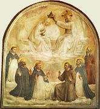
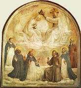

|  |
|---|
Textum Parmae 1869 editum
et automato translatum a Roberto Busa SJ in taenias magneticas
denuo recognovit Enrique Alarcón atque instruxit


|  |
|---|


[90285] Postilla in libros Geneseos, cap. 12 Dixit autem dominus ad Abraham. Haec est quarta pars principalis hujus libri in qua de tribus patribus populi Dei plenius prosequitur. Nam de duodecim filiis Israel plenius prosequitur infra, complendo historiam Jacob patris eorum. Primo igitur agit de Abraham. Secundo de Isaac, infra 25: et post obitum illius benedixit dominus Isaac. Tertio de Jacob cap. 28. Dicit autem, egressus Jacob de Bersabee. Historiam Abrahae prosequitur, narrando septem apparitiones Dei successive ad ipsum factas. In quarum prima exitus de domo patris sui sibi praecipitur, et grandis magnificentia, usque ad universas gentes dilatanda sibi promittitur. In secunda semini suo terra Chanaan promittitur, et duplex altare in cultum Dei ibi construitur. Primum quidem circa Sichem, secundum circa Bethel. Et ipso propter famem in Aegyptum descendente, uxor ejus a Pharaone subripitur et tandem divino miraculo liberatur, ipsoque inde redeunte Loth ab eo dividitur: et hoc incipit infra 12 capit. apparuit autem dominus Abraham. In tertia eadem terra sibi et semini suo iterato promittitur et innumerabilis multiplicatio seminis sui; et circumspecta et perambulata terra illa, tertium altare in Hebron ab ipso constituitur; et quatuor magnis regibus orientis ab ipso mirabiliter triumphatis, Loth per ipsum liberatur. Et quinque regibus terrae Sodomorum multa spolia per ipsum redduntur, et Melchisedech sacerdoti Dei ab Abraham decimae dantur, et ab ipso Melchisedech tamquam a Dei sacerdote ipse benedicitur. De hoc infra 13: dixitque dominus postquam divisus est ab eo Loth. In quarta semen ejus futurum a semine adoptivi distinguitur, ita quod jam expresse de ejus corpore semen innumerabile sibi promittitur, et fides Abrahae super hoc singulariter commendatur. Et signa benedictionis promissae ab ejus semine haereditandae sibi dantur: et tempus et generatio sub qua hoc fiet, exprimitur, et pacto Dei expresso repromissio ista firmatur, et tandem de Agar ancilla filius sibi datur, et hoc capitulo 15: his itaque transactis. In quinta circumcisio instituitur, et praedicta promissio plenius confirmatur: in cujus signum nomen ejus per unam literam ampliatur, filiusque ex Sara libera promittitur, et in illo promissiones factae implendae docentur, et hoc decimo sexto capite. Postquam vero nonaginta annorum esse coeperat. In sexta beatissimae Trinitatis mysterium sibi aperitur, et filius de Sara libera sibi iterato promittitur anno revoluto habendus: et Sodomorum excidium sibi revelatur, et ex tunc Loth ejus praecibus liberatur, ac deinde a rege Abimelech, Sara uxor ejus subripitur et divino oraculo liberatur, et tandem Isaac de ipsa nascitur. Et hic quaedam locutio ad Abraham subinducitur, ut sic sexta apparitio sit quasi dupla. Et tandem cum Abimelech rege confoederatur, et hoc capitulo 18: apparuit autem ei dominus. In septima Isaac offerri praecipitur, et offertur, et repromissio cum juramento immobili confirmatur; et tandem Sara moritur et in sepulchro primi parentis sepelitur, et tandem Isaac uxor datur Rebecca et ab Abraham alia uxor ducitur ex qua multiplicantur proles: sed ab Isaac matre inferior longe secernitur. Et nota admirabilem processum et ordinem apparitionum et promissionem istarum. Nam usque ad quartam Abraham non certificatur an semen sibi promissum debeat esse adoptivum, aut de suo corpore procreandum: usque ad quartam etiam non certificatur de tempore quo haec secundum literam incipiant adimpleri. In prima etiam non fuit expressa mentio de semine, nec de donatione terrae ad quam mittitur. In secunda etiam non erat clare expressum, an soli semini suo et non semini Loth praedicta promitterentur. Sed in tertia per divisionem Loth jam factam hoc aperitur. Rursus in prima non ponitur quod fuerit adeo ditatus aut adhuc magnificatus; sed in secunda legitur esse ditatus et in tertia. Rursus in quinta certificatur quasi quod in filio liberae praedicta implebuntur. In sexta hoc plenius certificatur omni dubio expleto, et deitatis secreta plenius reserantur, filiusque liberae futurus dicitur. In septima vero tam partus Isaac, quam per ea quae in ejus immolatione sunt facta requies pacis datur: ut sic etiam locutio facta Abrahae de ejectione ancillae et filii ejus possit stare pro septima. Nota igitur hic quomodo Deus gradatim et successive suas revelationes clarificat et revelationes adauget. Unde et in sexta mundi aetate Christus et Christianus populus quasi alter Isaac de libera nascitur, et civitatis mysterium publice promulgatur, et in aetate septima pax Christo mediante speratur. Exponatur igitur aliquid de litera primae apparitionis. Dixit autem Deus ad Abraham: egredere de terra: et post, septuaginta quinque annorum erat Abraham cum egrederetur de Aran. Contra hoc arguitur: quia supra dicitur, quod Thare postquam genuit Abraham, vixit centum triginta quinque annis; et postmodum subditur, quod cum de Chaldaea venissent usque ad Aran, facti sunt dies Thare ducentorum quinque annorum, et mortuus est in Aran: ergo videtur quod Abraham quando exivit de Aran, erat centum triginta quinque annorum. Ad quod, secundum Hieronymum dicunt Hebraei, quod tempus Abrahae non computatur hic a sua nativitate, sed a tempore quod de igne Chaldaeorum fuit Dei auxilio liberatus. Sed quia nullam habet certitudinem a Scriptura, et quia infra dicitur quod centum annorum erat quando habuit Isaac, Sara vero nonaginta, et tandem infra omnes anni vitae eorum expresse narrantur, qui cum praefata opinione Hebraeorum non concordant: idcirco sequendo Augustinum decimo sexto de civitate Dei, cap. 15, potius est dicendum, quod Deus dixit hoc Abrahae longe ante mortem patris sui, licet Scriptura more suo hoc post mortem patris narret, tamquam rediens ad id quod omiserat. Et huic sententiae concordat beatus Stephanus actuum septimo dicens: Deus gloriae apparuit Abraham cum esset in Mesopotamia priusquam moraretur in Charran, idest in Aran, et dixit ad illum: exi de terra et cetera. Quod vero Stephanus ibi subdit, tunc exivit de terra Chaldaeorum et habitavit in Charran, non refertur ad tempus in quo Deus dixit illa Abrahae, cum jam esset in Mesopotamia, nondum tamen in Aran quae est urbs quaedam Mesopotamiae: sed refertur ad totum tempus exitus et processus Abrahae a terra Chaldaeorum usque in Aran. Quod autem ei jam in Mesopotamia constituto, hoc est, jam de terra Chaldaeorum egresso, dixit Deus, exi de terra tua etc. non dicitur ut corpore inde exiret, quod jam fecerat, sed ut animum inde evelleret. Adhuc enim secundum Augustinum, saepe redeundi desiderio tenebatur, quae spes et desiderium Deo jubente et juvante erat amputandum. Nec est intelligendum id quod a beato Stephano subditur. Et inde, scilicet de Aran, postquam mortuus est pater ejus, transtulit eum in terram istam in qua nunc vos habitatis: quia secundum Augustinum per collocationem in terra Chanaan, non intelligit recessum ejus de Aran, sed quamdam firmiorem stabilitatem ejus in terra promissa. Biennio enim post mortem patris sui emit agrum in quo est spelunca duplex, scilicet cum jam centum triginta septem annorum esset, sicut infra ex capitulo vigesimo tertio trahi potest: ubi et subditur, quod tunc confirmatus est ager Abrahae in possessionem a filiis Beth. Sed contra hoc est quod beatus Stephanus subdit: scilicet quod non dedit illi Deus tunc haereditatem in ea, nec passum pedis; quia ibi loquitur beatus Stephanus de illo modo donationis solemnis quae sibi et semini suo promittebatur. Sed quare voluit Deus ipsum exire de terra sua et de domo patris sui? Numquid non aeque bonum erat Deum colere in terra sua et a Deo ipsum magnificari in illa, sicut in aliena? Dicendum quod Deus hoc rationabiliter voluit. Primo, quia hujusmodi exitus et recessus est multipliciter utilis ad sui mundique contemptum, et ad peregrinationis hujus vitae sensibilius experimentum, et ad multarum poenalitatum sufferentiam confractivam multarum carnalitatum et cupiditatum. Secundo, quia a propinquis et domesticis divino cultui et amori contrariis facilius homo impeditur et retrahitur a bono, trahiturque ad malum, quam ab extraneis et ignotis. Tertio, quia dignum erat a gente et terra illa Dei cultum prius in ea plantatum tolli, ac decens et utile erat ipsum in medio terrae habitabilis transplantari, ubi et Adam fuerat, ac Christus nasciturus ac moriturus erat. Quarto, quia ab impiis Chananaeis terra erat juste tollenda et in usum ac dominium justae prolis Sem redigenda. Quinto, quia mirabilius fuit ex uno patre in terra aliena grandem populum multiplicari et alienam terram per manum robustam sibi dari et ipsum patrem cum sua prole inter extraneos mirabiliter protegi et exaltari, quam si haec in terra propria et inter suos facta fuissent. Sexto, factum est in mysterium, quod omnino recedendum est a propria voluntate et ab affectione suae carnis et suorum sensuum ei qui vult perfici in divinis. Septimo, factum est in allegoricum mysterium omnium peregrinationum populi Dei; et etiam Christi, qui pro nobis haereditandis in caelo exivit a patre et venit in exilium hujus mundi, ut in terra reproborum propagaret electos, dominaturos et in illa. Unde et exitus de saeculo per regularem abdicationem temporalium et parentum, ut perfectius adeatur ad patriam eis promissam, hic figuratur, faciamque te in gentem magnam: scilicet per multiplicationem seminis tui, et per spiritalem principatum in omnes futurorum fidelium nationes. Benedicam, scilicet benedictione gratiae et gloriae. Benedicentibus tibi, scilicet ex fide Christi ex te nascituri, idest his qui in te fideliter laudabunt Deum et ejus fidem et gratiam tibi datam. Atque in te benedicentur universae cognationes terrae: idest ex tuae fidei exemplo, et ex merito Christi de te nascituri, justificabuntur omnes gentes, idest aliqui de omnibus, vel omnes gentes in Christum crediturae. Quidam tamen legunt hoc, ut sit sensus, quod quando gentes ab aliquo benedicentur, dicetur: sic benedicat tibi Deus, sicut benedixit Abrahae. Sed si hoc solum hic et in sequentibus intelligatur, modicum et quasi nihil sibi promittitur. Primo, quia plurimis idolatris et Paganis imperatoribus incomparabiliter plus in temporalibus benedixit Deus quam Abrahae, aut quam alicui de semine ejus, aut etiam Salomoni. Secundo, quia omnia temporalia merito spirituali homini sunt vel esse debent sicut stercora: et etiam, quia si ab aliquo carnaliter quaerantur, plus vult quis modicum in terra suae nativitatis, quam alibi multum: et sic hic plus voluisset Abraham modicum in Chaldaea, quam multum in terra Chanaan. Tertio quia illum primum sensum apostolus dicit in Abraham et in semine Christo impletum, et nos de facto credimus et videmus omnes gentes fidelium in semine Abrahae justificatos. Et animas quas fecerat in Aran, idest animalia, et servorum mancipia ex suis servis ibi genita. Et egressi sunt in terram Chanaan. Nota secundum Augustinum, quod eodem anno facta sunt omnia: scilicet ejus egressio, et habitatio in Chanaan, et Dei promissio. Quod probatur primo ex hoc quod infra decimo sexto capite dicitur, quod post annos decem habitationis eorum in Chanaam dedit Sara viro suo Agar in uxorem. Et postea subditur quod septuaginta sex annorum erat quando peperit ei Agar Ismaelem. Ex quo oportet quod in septuagesimo quinto anno suo quo egressus est de Aran, intravit terram Chanaan. Secundo, quia secundum apostolum ad Galatas tertio, a promissione hic facta Abrahae usque ad legislationem fuerunt anni quadringenti triginta: et Exod. 12, dicitur quod habitatio filiorum Israel in Aegypto fuit quadringentorum triginta annorum. Quod non potest esse verum, nisi pro quanto ab exitu Abraham de domo patris sui reputantur, quasi ex tunc peregrinus in Aegypto erit. Nunc de litera secundae apparitionis. Et ultra progrediens ad meridiem, idest ad Australem plagam terrae promissae, quae est confinis Aegypto. Descendit Abraham. Nota quod triplici ex caussa Deus hoc ordinavit. Prima, quia varia terrarum peregrinatio erat spiritualiter utilis et meritoria ipsi Abrahae. In illa enim plures difficultates, et plures mores gentium, et plures principaliores modos divinae providentiae, et circa se et circa alios plenius experiebatur. Secundo, quia mos est Dei in primis patribus et ducibus populi Dei exemplariter depingere ventura populo illi. Descensum ergo populi Israel in Aegyptum, et ejus afflictionem in illa, ejusque liberationem et reditum voluit etiam exemplificare in Abraham. Tertio quia facta patrum prophetice regebantur a Deo, in futurorum mysteria et multiplices prophetias. Dicturi sunt, uxor ipsius est, et interficient me. Sed quare aestimabat quod propter hoc interficerent eum? Numquid non sufficiebat eis quod auferrent sibi eam? Ad hoc triplex datur caussa. Prima est ad operationem nequitiae suae. Ipso enim occiso et postmodum ducendo Saram in uxorem, non viderentur adulterari. Secunda est ut illam securius possiderent. Possent enim praesumere quod Sara semper vellet redire ad virum, et quod ipso vivo non plene afficerentur illis. Tertia est, ut a quibusdam dicitur, quia adulterium fortiter tunc temporis puniebant, et saltem in aliis odiebant. Dic ergo, obsecro, quod soror mea sis. Nota quod in hoc nihil falsum, imo verum fecit eam dicere: erat enim vere soror ejus, eo modo quo et Loth infra dicitur esse frater ejus. Nam propinquos carne fratres et sorores vocabant. Et quod istud hac mente dictum sit, ostenditur aperte infra capite vigesimo. Ubi jam comperto Abimelech rege quod esset ejus uxor, dixit ei Abraham: alias enim et vere soror mea est: erat enim filia fratris sui. Nec cogebatur tunc Abraham hoc dicere ex timore, quia tunc aperte confessus est quod erat uxor sua. Sed numquid malefecit Abraham suae uxoris pudicitiam tanto periculo exponendo ad vitandum solum periculum proprii corporis? Cur non potius de Deo suo speravit, ut fateri non timeret uxorem? Ad hoc respondet Augustinus, vigesimo secundo libro contra Faustum, dicens: si interrogatus eam indicasset suam esse uxorem, duas res tuendas commisisset Deo; scilicet suam vitam, et conjugis pudicitiam. Pertinet autem ad sanam doctrinam quando habet quod faciat homo, non tentare dominum Deum suum. Unde Paulus submissus est per murum, et Christus docuit discipulos suos fugere, et ipse etiam fugit in exemplum nostrae infirmitatis. Item decimosexto de civitate Dei, capite decimonono, dicit: sed uxorem tacuit, non negavit, committens Deo tuendam conjugis pudicitiam, et humanas insidias cavens ut homo; quoniam si periculum, quantum cavere poterat, non caveret, magis tentaret Deum quam speraret in domino. Haec Augustinus. Nota ergo quod nihil falsi dixit, sed aliquam veritatem velandam tacuit, et sub largo modo sumendo sororem, veritatem celandam cautius occultavit, quia periculosius fuisset uxori si eam raperent, viro occiso, quam viro in sua libertate vivente. Pluribus autem ex causis Deus voluit Abraham super his tunc temporis tentare. Primo, ut ejus provida discretio probaretur. Ex quo enim discretio est homini nobilis virtus, decet quod ejus opera habeant locum suum. Secundo, ut ejus fides et patientia plenius probaretur et exerceretur. Stare enim fixe et tranquille in dubiis et incertis, majoris est fidei et constantiae, quam solum esse firmum et tranquillum in eventibus certis. Tertio, ut in hoc et similibus monstraretur ordo distributionis gratiarum Dei. Non enim debet totum dari repente et simul; sed ab aliquali initio gratiae per meritum debet iri ad terminum completum: et ex gratia prima data, debent primo aliqua praeire merita, antequam gratiae consummentur. Decuit ergo quod Abraham committendo se Deo in dubiis et periculis, mereretur donum liberationis et protectionis sui et suorum. Quarto, quia fuit hoc utilius. Nam quando post praecedentem indigentiam et post afflictionem amaram liberatio ipsa subsequitur, et in hoc ipso clarius apparet potentia liberantis. Quinto, ut tam ipsi quam sancti consimiles in hujusmodi, essent posteris in solatium et exemplum: non enim omnes erant certificandi de omnibus dubiis et periculis antequam acciderent eis. Abraham vero bene usi sunt propter illam, idest secundum Hieronymum, Pharao bene fecit Abraham propter eam, dando scilicet ei dona. Et ad hoc designandum videtur subdi, fueruntque ei oves et cetera. Flagellavit ergo dominus Pharaonem plagis maximis et donum ejus, scilicet familiam ejus. Quae fuerint haec flagella hic non dicitur. Quaecumque tamen fuerint, patet ex sequentibus quod Pharao certificatus est se esse a Deo flagellatum, quia tulerat uxorem Abrahae. Et ex ipso effectu flagellationis divinae, patet quod Deus non permisit Saram maculari a Pharaone. Unde dato quod ante haec flagella Sara diu manserit in domo Pharaonis, sufficit Deo dare flagellum tempore opportuno ad impediendum copulam Pharaonis cum Sara. Quam ob causam dixisti esse sororem tuam ut tollerem eam in uxorem? Idest ex occasione tui sermonis sequeretur quod ego eam ducerem in uxorem. Quasi dicat: si scivissem quod esset tua uxor, non tulissem eam. Ex hoc videtur quod illo tempore sorores proprias non ducerent in uxores; aut si ducebantur, saltem ex tunc non vocabant eas communiter sorores sed uxores. Sed primum magis credo, et puto a patribus hoc Manasse tam naturalis rationis instinctu, quam divina inspiratione vel illustratione hoc suadente. Si autem quaeras quare fuit hoc inductum adhuc durante sola lege naturae, cum ducere sorores non fuerit ab initio contra naturam, imo necessarium ad generationem humanam? Ad hoc triplex redditur caussa. Prima est vitatio nimii amoris carnalis: quia si amor uxoris concurreret cum amore fraterno, nimium excresceret amor carnis, actusque carnalis. Secunda est naturalis reverentia cognationis, ex qua naturaliter homo plus erubesceret revelare aut denudare turpitudinem sororis quam extranearum. Nam societas fratris et sororis se habet per modum comparium, quia ab eodem manarunt stipite. Copula vero viri ad uxorem est sicut superioris ad inferiorem, et sicut mentis ad suam carnem, aut agentis ad patiens. Et quia foeda concupiscentia est sibi annexa, ideo sapit quamdam confusibilem irreverentiam, idest includit; quam natura horret circa sororem et multo altius erga matrem. Tertia est dilatatio charitatis et societatis ad proles secundum varios combinandi modos; quia vinculum cognationis satis ex se sufficit ad nexum amoris, et ideo per nexum conjugalem decuit aliquos sibi necti. Ad illud autem quod objicitur de lege naturae, et quod non fuit sic ab initio, dici potest quod necessitas fuit tunc in caussa, qua cessante cessavit effectus. Licet etiam lex naturae absolute et in omnem eventum non excluderet sorores a copula conjugali, inclinat tamen ad hoc secundum rationes praedictas. Nota pro mysteriis hujus facti, quod sancti doctores et patres duplicem habent sponsam: scilicet ipsam veritatem, et sanctam plebem quam informant: utriusque autem pulchritudines, carnales et erronei libenter corrumpere amant, aut saltem primatum vendicant, ut scilicet, ascribatur eisdem quasi magistris. Propter quod sancti patres ut talium aemulationem tandem evitent, nolunt dici viri sive magistri veritatis quam habent, nec plebis quam regunt: sed potius fratres et simplices consodales. Ex hac autem plures potes elicere allegorias, applicando haec ad varia tempora et ad varios status. In plagatione autem Pharaonis et domus suae propter detentionem Sarae figurata fuit plagatio Aegypti facta in manu Moysi propter detentionem filiorum Israel, et per consequens ceterae plagationes designatae per plagationem Aegypti.
[90286] Postilla in libros Geneseos, cap. 13 Ascendit ergo Abraham de Aegypto. Ascendisse dicitur eo quod terra promissionis est in situ altior Aegypto; et multo magis est hoc in rebus figuratis per eas. Ad Australem plagam. Non quidem Australem respectu Aegypti, sed respectu Jerusalem. Erat autem dives valde. Secundum Hieronymum in Hebraeo est: erat autem gravis vehementer, idest Aegypti pondere gravabatur. Divitiae enim Aegyptiae viro sancto graves sunt. Vel est modus loquendi, quo per pondus divitiarum ipsarum copiam significamus. Et fuit hoc figura spoliorum et divitiarum Aegypti, quas filii Israel secum tulerunt in exitu de Aegypto. Utrumque autem horum fuit figura thesaurorum, sapientiae quos sapientes Christianorum a Judaeis et a mundi philosophis tamquam ab injustis possessoribus abstulerunt. Et universaliter in omni solenni recessu virorum spiritualium a carnalibus aliquid simile contingit. Figuratur etiam hic copia spiritualium divitiarum, quam habent ascendentes de hac miseria ad aeternam patriam, vel de statu imperfecto ad statum perfectum. Et non quibant habitare communiter et cetera. Nota quomodo copia rerum temporalium aufert seu impedit convictum communem et pacificum: et ideo Abraham dixit: discede a me, obsecro. Possidentibus enim propria expedit rerum certa divisio et divisa cohabitatio ad tollendum multas contentiones ac suspitiones, ac aemulationes et rixas. Dixit etiam, ne quidem sit jurgium inter me et te; fratres enim sumus. Pejus enim et indecentius est inter fratres seu propinquos esse discordiam, quam inter extraneos. Si ad sinistram ieris, ego ad dextram pergam et cetera. Nota secundum Augustinum, 16 de civitate Dei, capite vigesimo, quod hinc fortasse exiit consuetudo ut quando terrenorum aliquid partiendum est, major dividat, minor eligat. Eo autem tempore Chananaeus et Pherezaeus habitabant in terra illa. Hoc ideo videtur interponi ad innuendum quod dissensio inter Abraham et Loth fuisset tunc periculosior eis propter gentes eas inter quas habitabant. Dicitur etiam hoc ad ostendendum, quod quamquam erant divites, erant tamen in illis terris ut peregrini. Loth vidit omnem circa regionem Jordanis, idest totam terram Sodomorum quae erat circa Jordanem, quae universa irrigabatur sicut Paradisus domini, et sicut Aegyptus. Jordanis enim per varias sui deductiones eam irrigat, sicut Nilus irrigat terras Aegypti, et sicut fluvius Paradisi terrestris irrigat Paradisum. Quod dicitur ad monstrandum quod terra Sodomorum ante subversionem erat valde fertilis et amoena. Venientibus in Segor, idest quae terra occurrit his qui veniunt in Segor, quae fuit una quinque urbium terrae Sodomorum; et per hanc designat totam terram illam, quia ista sola remansit, sicut habetur infra capite decimo nono. Et recessit ab oriente, idest ab Orientali parte, idest a terra circa Bethel, quae respectu terrae Sodomorum erat ad orientem. Dicitur etiam hoc signanter ad innuendum quod recessus Loth ad Abraham, declinatioque ejus ad Sodomam, erat quasi recessus ab oriente in occidens. Divisique sunt alterutrum a fratre suo, idest divisi sunt ab invicem. Fratres autem dicuntur, idest cognati. Loth enim erat nepos Abrahae. Peccatores coram domino nimis. Secundum Hieronymum, superflue hic in Septuaginta interpretibus additum est in conspectu Dei, sive coram domino. Non enim oportet quod aliquis dicatur peccator esse in conspectu Dei, nisi qui potest apud homines justus videri. Potest tamen dici quod per hanc additionem designatur excessus peccati eorum; quasi dicat: tanta erant peccata eorum, quod ascendebant usque ad dominum et erant intolerabilia oculis Dei. Nota quod in Abraham designantur altiores religiosi, vel puriores observatores regulae, quales sunt patres ipsarum religionum. In Loth vero designantur hi qui sunt inferiores vel imperfectiores respectu ejusdem regulae. Expedit autem perfectioribus plerumque segregari ab inferioribus et imperfectioribus; quia aliquando ex disparitate morum surgit occasio rixarum et aemulationum et spiritualium impedimentorum. Et haec est una ratio distinctionis diversarum religionum. Dixitque dominus ad Abraham postquam divisus est Loth ab eo. Hic agitur de tertia apparitione. Et vide a loco in quo nunc es. Erat autem inter Bethel et hai, sicut ex superioribus convincitur. Omnem terram quam conspicis, tibi dabo et semini tuo usque in sempiternum. Septuaginta habent, usque in saeculum; quod secundum Augustinum aliquando significat idem quod in aeternum, aliquando vero tempus unius generationis. Nota autem, quod plurimis locis veteris testamenti, in quibus temporalia promissa vel pacta, vel praecepta in aeternum non duratura, dicuntur in aeternum mansura, quod talis locutio quadrupliciter verificatur. Primo, ut sumatur in aeternum pro aliquo longo tempore, juxta quod de homine nimis diu vivente dicimus: iste semper vivet, et nunquam morietur. Secundo, ut illud dicatur in aeternum, quod respectu humanae potestatis et respectu inferiorum est quasi in aeternum, licet hoc non sit respectu Dei: et secundum hoc tota lex caeremonialium Moysi aeterna dicitur, quia non potuit ab homine humana autoritate mutari, sed a solo Deo: et hoc modo dicitur in aeternum esse illud, cujus terminus non est praefixus apud illum, respectu cujus dicitur: et hoc modo servus aeternus dicitur ille, qui in aeternum semper, quamdiu vivet, servire tenetur, nisi aliter a domino suo absolvatur. Tertio dicitur aeternum illud, cujus significatum est aeternum. Sumitur enim saepe signum pro suo significato: et ideo saepe attribuitur signo illud, quod est proprium signati: et hoc modo terra promissionis debebat esse seminis Abrahae in aeternum, quia status gratiae et gloriae erat spiritalis seminis ejus in aeternum. Et sic etiam omnes figurae veteris legis possunt dici in aeternum mansurae. Quarto dicitur aliquid in aeternum causaliter seu dispositive, quia scilicet habet fructum aeternorum causaliter, et disponit ac ducit ad aeterna. Et hoc modo lex Mosaica erat aeterna, quia dispositive ducebat ad gratiam et gloriam Christi aeternam. Hoc etiam modo temporale meritum aeternae gloriae dicitur aeternum, quia scilicet meruit rem aeternam. Sed quomodo dicit, tibi dabo et semini tuo, cum sibi non sit data in sua persona, sed solum in semine suo? Dicendum, quod duplici ex causa hoc dicit: primo, ut ostendat, quod merito Abrahae est data semini ejus, ita quod quantum ad intentionem dantis potius fuit data Abrahae quam populo ex ipso deducto. Secundo, ut more veteris testamenti figurative subinnuat, quod potius intendit loqui de aeterna haereditate, quam de terrena. Aeterna autem erat danda personae Abrahae, sicut et personis sanctorum filiorum suorum. Faciamque semen tuum sicut pulverem terrae. Hoc hyperbolice dicitur. Non enim ad literam tot erant ex Abraham nascituri, quot sunt atomi terrae et pulveris ejus. Surge et perambula terram. Hoc facere jubetur, ut exerceatur, et etiam ut firmior modus divinae promissionis per hoc ipsi Abrahae et posteris ejus fortius afferatur et imprimatur: et etiam ut Abraham per hoc quasi in corporali possessione poni videatur: tum etiam ut a filiis ejus, quibus erat danda, in majori devotione habeatur tamquam bona perambulata et inhabitata a tam sanctissimo patre, et hoc non humanitus, sed jussu divino: tum etiam in mysterium, quod possessio spiritualis per virtualem et mentalem perambulationem obtinetur. Et habitavit juxta convallem Mambre. Est nomen viri et vallis, et vallis hic denominatur. Aedificavitque ibi altare. Hoc fuit tertium altare ab ipso constitutum. Signanter vero tria altaria scribitur construxisse in mysterium Dei trini, et etiam in signum, quod cultus Dei habet solidum principium, et nobile medium, et perfectum finem sive terminum. Secundum haec etiam fuerunt tria loca insignia. Unus scilicet circa Sichem, de quo Joannis quarto dicit Christo mulier Samaritana, patres nostri in monte hoc adoraverunt. Secundus fuit prope Bethel, quae interpretatur domus Dei. Tertius fuit in Hebron, ubi sepulti sunt quatuor patriarchae, et ubi primo regnavit David. Et possunt per hoc significari tres status divini cultus: scilicet legis naturae, scriptae et gratiae: vel divinae sedis primo plantatae in Jerusalem, deinde in Antiochia, deinde Romae.
[90287] Postilla in libros Geneseos, cap. 14 Factum est autem in illo tempore. Hic interserit historiam cujusdam magni praelii inter diversos reges habiti, ut enarretur victoria, quam habuit de eis Abraham cum sola familia sua. Rex Sennaar, idest provinciae Babylonis. Rex Elamitarum, idest Persarum, quia Elam erat metropolis Persidis. Et Thadal rex gentium. Non quidem omnium, sed quarumdam, quae nomen commune gentium quasi sibi proprium vendicabant. Omnes hi convenerant in vallem sylvestrem, id est, nemorosam. Erant enim ibi multae arbores, quae nunc est mare salis, idest mare salsissimum, et salis generativum. Et nota, quod non convenerunt ibi, nisi postquam percusserunt gentes illas, de quibus subditur: duodecim annis servierunt Chodorlaomor. Et hoc dicitur ad mirandum magnificentiam hujus regis, ac per consequens victoriae, quando devictus est ab Abraham. Ex hoc autem quidam putant, quod iste rex esset tunc temporis, quasi monarcha orientis; quia non est verisimile, quod de urbe Elam dominaretur regioni Sodomorum et regibus ejus, nisi terris intermediis imperaret. Et potuit esse, quod sedes imperii Babylonici esset tunc in urbe Elam. Unde et caeteri tres reges viderentur secum venisse, quasi cum monarcha suo. Contra hoc tamen Augustinus, 16 de civitate Dei, capite decimoseptimo, dicit, quod Ninus filius Beli, quando natus est Abraham, erat rex Assyriorum, cujus regni caput erat Babylon, et, exceptis Indis, erat monarcha totius Asiae, quae, secundum eum ibidem, est media pars orbis. Et 18 de civitate Dei, dicit, quod tempore exitus Abraham de Chaldaea, quartus Assyriorum rex regnabat. Et secundum hoc videtur, quod Chodorlaomor subesset tunc regi. Quodcumque autem horum fuerit, sufficit quo ad praesens quod magnum posse habebat. Unde ad potentiam sui exercitus plenius demirandum, subditur, et percusserunt Raphaim, idest gigantes, secundum Hieronymum. Et infra decimoquinto connumerantur inter undecim populos terrae semini Abrahae promissae. In Astaroth et Carnaim, idest in terris sic nominatis. Et Zuzim cum eis et Emim in Sabe, civitate scilicet, quae secundum Hieronymum usque hodie sic nominatur. Et secundum eum Zuzim et Emim, terribiles et horrendi interpretantur. Pro quo Septuaginta: gentes fortissimas, posuerunt: et sunt in Arabia secundum eum. Reversique sunt, scilicet de solitudine Pharam versus cades, quae per anticipationem notatur. Hic fons Mesphat, idest judicii, quia Deus ibi populum Israel judicavit, sicut habetur numerorum 20. Et est iste fons in petra seu rupe, quam bis percussit Moyses. Et percusserunt omnem regionem Amalechitarum. Non quod tunc essent Amalechitae, qui nati sunt de Amalech filio Eliphat, filio Esau; sed quia erat pater eorum. Et Amorrhaeorum, qui habitabant in Hasason Thamar. Secundum Hieronymum, hoc oppidum est, quod nunc vocatur Engaddi, balsami et palmarum fertile, et sonat idem quod urbs palmarum. Thamar enim palma dicitur: et est prope mare; unde dicti reges pervenerant ad confinia provinciae Sodomorum. Et egressi direxerunt aciem contra eos et cetera. Vallis autem sylvestris habebat puteos multos bituminis, de quibus videlicet bitumen extrahebatur. Hoc autem dicit, quia multi Sodomitarum in illis puteis corruerunt. Itaque rex et cetera. Cecideruntque ibi. Non quidem rex Sodomorum, sed multi de suis. Nuntiavit Abraham Hebraeo, idest de genere Hebraeorum. Ex quo patet, quod Hebraei dicti sunt ab Heber potius, quam ab Abraham. Ex hoc etiam patet, quod lingua Hebraea remansit in Heber in divisione linguarum. Mambre Amorrhaei fratris Eschol et fratris Aner. De his tribus fratribus mentionem hic facit, quia cum Abraham profecti sunt in praelium. Vernaculos. Vernaculi sunt servi in domo domini sui nutriti. Expeditos, idest leves et agiles ad pugnam, vel bene paratos et armatos, quantum expediebat. Et persecutus est eos usque Dan. Dan, secundum Hieronymum, est unus fons Jordanis: nam alter vocatur Ior, et est juxta oppidum Phoenices, quod nunc Penas dicitur, et est terminus Judaeae a parte aquilonari. Et divisis sociis, irruit in eos. Interficiens scilicet plures eorum. Et persecutus est eos quo ad illos scilicet, qui interfecti non erant, usque Heba et Phoenicem, quae scilicet Obba, vel terra Phoenicis est ad laevam Damasci in valle Save, quae est vallis regia, secundum Magistrum, et est secundum eundem juxta urbem Salem. Sed quomodo hic primo legitur bellum a viro sancto factum? Quaeritur, an licuerit Abrahae bellum gerere? Et videtur quod non. Christus enim Matth. 26, dicit: omnes qui acceperint gladium, gladio peribunt. Super quo Augustinus, Lib. 22 contra Faustum Manichaeum ait: ille gladium accipit, qui nulla superiori ac legitima potestate vel volente, vel concedente, in sanguinem alicujus armatur. Sed Abraham non habuit ex se hanc auctoritatem, cum non esset rex terrae: nec a rege eam habuit, quin potius contra principem pugnavit. Sciendum, quod ad bellum justum sex exiguntur: primum est rationabilis causa, secundum affectio et intentio recta, tertium est status idoneitas, quia in nova lege sacerdotes et viri evangelici nullo modo propria manu aliquem occidere debent. Quartum est debita in modo mensurabilitas, ut scilicet nihil fiat ultra mensuram rectam. Quintum est legitima potestas sive auctoritas. Sextum est discretionis provida maturitas, ne scilicet temere se et alios periculo mortis exponat. Haec autem omnia supponendum est hic fuisse. Nam nisi fide et spe divina esset armatus, non video, quin temere se et suos periculo exposuisset. Item si rex Elamitarum justum bellum contra Sodomam habuisset, tunc Abraham injuste bellasset. Unde praesumitur, quod rex ille tyrannice et injuste prius sibi subjugaverat Sodomam, aut saltem quod illi juste recesserant a dominio ejus. Et forte Abraham praeter inspirationem a Deo habitam iniit bellum de licentia regum terrae praesumpta vel expressa. Unde et dominos terrae Hebron, in qua tunc habitabant, secum duxit ad bellum. At vero Melchisedech et cetera. Hic subito agitur de rege Melchisedech, tum in laudem Abrahae et victoriae suae, quia tantus rex sibi tunc singulariter benedixit, et pro seipso sacrificavit, tum ad breviter innuendum, quod praeter Abraham erant tunc inter gentes magni cultores summi Dei: tum etiam secundum apostolum ad Hebraeos, ad mystice designandum praecellentiam sacerdotii Christi super sacerdotium Aaron, et super sacerdotium populi Abrahae, de quo in Psal. 110, dicitur: tu es sacerdos in aeternum secundum ordinem et cetera. Nam mirabile est, quod Abraham, qui secundum ritum illius temporis erat sacerdos Dei, et inter sanctos illius temporis a Deo singulariter electus, post tantam victoriam dedit decimas ipsi Melchisedech, quasi summo pontifici suo et benedictus est ab eo: ita quod Melchisedech obtulit pro eo sacrificium panis et vini. Ad quid enim Abraham hoc fecisset, nisi quia in spiritu Dei praesensit in hoc facto significari, quod ipse et totum sacerdotium Levitarum ab ipso propagandum et subjectum et subjiciendum Christo regi et pontifici, et per Christum decorandum et sanctificandum tanquam ex se imperfectum, nec sanctum nec sanctificatum? Et ad hoc facit nomen Melchisedech; quia melchos est rex, et sedech, justitia, quia Christus est rex justitiae et pacis. Quod autem quidam exponunt: proferens panem et vinum, quasi Melchisedech more humano protulerit Abrahae et servis ejus cibaria, tamquam ex praelio redeuntibus, stare non potest, quia in hujus probationis causam subditur: erat enim sacerdos Dei altissimi. Ex quo patet, quod panem et vinum obtulit tamquam Dei sacerdos in sacrificium. Et deinde tamquam in divinum cibum, juxta ritum, quo offerentes, et hi pro quibus offerebantur, vescebantur oblatis in sanctuario Dei, tamquam Dei commensales. Non enim, sicut falso exponitur, benedixit Abrahae benedictione vulgari, sed potius benedictione sacerdotali tamquam sacerdos Dei, sicut hic aperte dicitur. Dixit autem: benedictus Abraham Deo, idest a Deo, vel Deo, id est ad honorem Dei: vel benedictione contingente ipsum Deum, tamquam cultori suo. Et dedit ei decimas, scilicet Abraham ipsi Melchisedech, tamquam scilicet sacerdoti Dei. Erat enim conveniens, quod qui hic signanter dicitur rex et Dei sacerdos, haberet decimas ab Abraham. Refert autem Hieronymus, quod Hebraei ajunt, hunc esse Sem primogenitum Noe, omnesque primogenitos a Noe usque ad Aaron fuisse pontifices: et supputantes annos ipsius Sem, ostendunt eum usque ad Isaac vixisse. Nam sicut supra undecimo habetur, vixit quingentis duobus annis post diluvium. A diluvio vero usque ad Abraham ortum sunt ducenti nonaginta duo anni, et usque ad ejus mortem trecenti nonaginta duo anni. Et sic restant adhuc vitae Sem centum decem anni. Qua de re tractat Hieronymus in epistola ad Evagrium. Verisimilius est ergo, quod Abraham dederit decimas Melchisedech prophetico et divino spiritu et divino jussu sive instinctu: et quod Melchisedech eodem prophetico spiritu tamquam pontifex se habuit ad Abraham. Volebat enim Deus in ejus sacerdotio praefigurari praecellentiam sacerdotum leviticorum. Dicitur autem, quod dedit ei ex omnibus: non quidem de his quae in praelio ceperat, quia illa dicit esse regis Sodomorum. Unde et tamquam sua sibi omnia reddidit: sed de omnibus propriis, quae habebat, dedit ei decimam partem. Nota autem, quod secundum Bedam super illud Joannis tertio: erat Joannes baptizans in Aenon juxta Salim, quod Salim est oppidum juxta Jordanem situm, ubi olim Melchisedech regnabat. Et secundum Hieronymum in epistola ad Evagrium presbyterum: non refert, utrum Salem sive Salim nominetur, quia perraro Hebraei notis in mediis literis utuntur, et pro voluntate lectorum, ac regionum varietate, eadem verba diversis sonis atque accentibus proferuntur. Dicit etiam ibi, quod Salem non ponitur ibi pro Jerusalem, prout Josephus arbitratur; sed est oppidum juxta Scytopolim, quod usque hodie vocatur Salem; et ostenditur ibi palatium Melchisedech ex magnitudine materiarum veteris operis ostendens magnificentiam. De quo infra, capite scilicet 33, dicitur: venit Jacob in Sochor et transivit in Salem civitatem regionis Sichem. Nota, quod hic primo legitur decimas fuisse datas, supra vero leguntur datae primitiae. Pro quanto dicitur, quod Abel obtulit de primogenitis gregis sui. Et quia fuerunt facta in lege naturae, putant quidam, quod primitiae, decimae, ac sacrificia sint de jure naturali: quod tamen non est simpliciter verum. Imo secundum aliquid sunt ceremonialia et figuralia. Si enim essent simpliciter moralia, omni tempore homines tenerentur ad illa. Constat autem, quod homo ante lapsum non tenebatur ad ista, nec ad sacrificia animalium nunc tenemur. Praeterea, quum pontifices ad moralia teneantur, tenerentur et ipsi dare decimas. Sed primitiae et decimae habent pro tanto aliquid morale, pro quanto populus Dei tenetur dare necessaria suis praelatis qui eis ministrant et ministrare tenentur spiritualia. Fuerunt tamen tunc divina inspiratione ad illa incitati in figuram triplicem. Prima est, quia debuit homo solemniter profiteri, quod Deus erat omnium principium et finis, sive creator et remunerator. Per hoc vero, quod Deo dabant primitias, profitebantur, quod soli Deo est attribuenda dignitas primi principii; sicut et per denarium numerum, in quo est primus limes et primus terminus numerorum, adscribebatur ei omnium rerum finalis perfectio. Secunda, quia de Christo redemptore debuit homo lapsus sub figuris profiteri non solum quod ipse esset sacrificium pro expiatione peccatorum nostrorum immolandum, sed etiam quod ipse erat assumpturus primitias nostrae massae, idest purissimam et praecipuam naturam ex nobis. Et quod erat futurus primogenitus mortuorum et primogenitus filiorum Dei; et quod tota perfectio gratiae, justitiae, gloriae humani generis, quasi decimae erat illi adscribenda: et quod dando decimas sacerdoti, nostram perfectionem adscribimus sacerdoti Christo. Tertia est in signum, quod duo singulariter exigit a nobis Deus; scilicet subjectionem et ordinem: ut scilicet omnia faciamus tamquam ab ejus primatu et imperio moti, et ut omnia in ejus gloriam ordinemus. Vult ergo Deus omne imperium operum nostrorum, principium et finem sibi soli adscribi. Et per haec duo obtinet medium operum nostrorum, imo et totum. Dixit autem rex Sodomorum ad Abraham: da mihi animas, idest personas captivorum terrae meae. Cetera, idest totam substantiam aliam quam cepisti. Tolle tibi. Quasi diceret, de omnibus a te captis, quae quatuor reges prius abstulerunt, non volo nisi personas. Qui respondit ei, levo manum meam, idest juro tibi per Deum. Loquitur autem sic, quia jurantes solent levare manus ad caelum, quasi ad Deum. Dicit autem, ad Deum possessorem caeli et terrae, ut sic ostendat, quod soli Deo principaliter competit, eo quod ipse sibi poterit satis dare, et quod non vult nisi ab ipso solo ditari. A filo subtegminis. Quod est filum transversale, quod in navicula textoris ex transverso per telam discurrit; et dicitur a subtegendo et subtexendo, quia sub stamine in telam tegitur et texitur: quasi diceret, nec minima aut vilissima accipiam. Non accipiam ab omnibus, quae tua sunt. Quaerit Ambrosius libro de patriarchis: quomodo dicit, non accipiam abs te, quum praeda fuerit in potestate victoris? Et respondet, quod per hoc virilitatem ostendit et disciplinam, ut scilicet regi serventur omnia; sociis tamen partem emolumenti tribuendam asserit, tamquam mercedem hujus laboris. Et quoniam sibi mercedem ab homine non quaesivit, a Deo accepit. Unde post hoc dixit Deus ad eum: noli timere: ero protector tuus et merces tua magna nimis. Ne dicas, ego ditavi Abraham. Sed quare nolebat hoc dici? Ratio triplex est ad praesens: prima est, quia rex Sodomorum et sui ex hoc de facili inviderent divitiis Abrahae, ac per consequens ad ipsarum ablationem, et etiam ad ejus occisionem suo tempore citius incitarentur. Secunda, quia tam Abraham quam sui ex hoc essent subjugati illi regi et suis, et per consequens ad multa inexpedientia corpori et animae eorum, possent ex hoc in posterum magis trahi. Tertia est, quia tam praesentibus quam futuris volebat esse notum, quod de tota terra illa nihil unquam habuerat nisi per Dei providentiam et industriam suam. Praeter hoc est quarta ratio, quare noluit ista retinere; in exemplum, scilicet abjiciendae cupiditatis, et etiam in signum plenioris charitatis ad eos quos liberaverat. Ex hoc enim patuit, quod non fuit motus ad insectandum hostes cupiditatis, sed solius charitatis causa. Nota autem quod ex hoc quod non fit mentio de regibus aliarum quatuor urbium, sed solum de rege Sodomorum, videtur quod iste rex dominaretur quatuor aliis regibus terrae suae. Nota etiam, quod ex hoc, et ex multis aliis Scripturae perpenditur quod fere quaelibet urbs tunc temporis suum habebat regem. Dicitur autem Sodomorum, idest Sodomae, quia in singulari et in plurali captum hoc nomen semper est nomen ejusdem urbis; sed Sodoma in singulari stat pro sola urbe, in plurali autem pro ipsa et pro suburbanis ejus. Nota pro mysteriis hujus partis moraliter, quod per quinque reges Sodomorum designatur regnum carnale quinque sensuum, in quibus praeest concupiscentia gulae sive gustus. Quae duae designantur per duas principales urbes Sodomae. Per quatuor vero reges designantur quatuor principales venti daemoniacarum tentationum dominantium regno carnis et quinque sensuum ejus, ut sunt ventus superbiae, avaritiae et invidiae et cetera. Superbia quae omnibus praesens est designatur per regem Elamitarum. In adventu autem spiritus sancti, qui erat in Abraham et Loth, incipit regnum carnis recedere a servitute superbiae: quia etsi tunc omnino delicta carnalia non tolluntur, saltem recognoscunt carnales se esse abjectos respectu spiritualium virorum. Quia vero Diabolus rex superbiae acrius impetit recedentes a se, ideo si rex superbiae eos impetat, et non solum illos, sed etiam quosdam spiritualium perfectos et minus perfectos designatos per Loth, capiat et asportet, tunc zelus Abrahae, idest spiritualissimorum patrum, cum vernaculis, idest cum virtutibus in ipso connutritis et suae summae charitati et humilitati famulantibus de illis triumphant, Lothque reddunt: sed nihil carnalium sibi reservat, praeter sola ea quae in usus necessarios sociorum, idest virtutum inferiorum zelo charitatis servientium fuerunt expensa. Infirmioribus tantum sibi adjunctis, per tres fratres Abrahae contentos designatis, partes vult donari, quia inferiores et seculares fideles nolunt compelli ad suam summam perfectionem. Allegorice autem figuratur hic primo captivitas populi Israelitici sub quinque libris Moysi et sub quinque sensibus, quasi sub quinque urbibus et regibus carnalia sectantis, inchoata per Assyrios et consummata per Chaldeos. Et quia inter illos fuerunt capti aliqui spiritales designati per Loth, utpote Ezechiel et Daniel et alii: idcirco merito Abrahae et per promissionem sibi factam, de captivitate illa reducti fuerunt et restitutus est sacerdotalis cultus Dei. Secundo figuratur hic captivitas ejusdem populi tempore Christi facta occulte per Daemones et visibiliter per Romanos. Ex quibus tunc apostoli et primi discipuli sunt reducti, et in fine temporum omnes sunt plenius reducendi. In utroque autem horum tempore magnificandum est sacerdotium Christi in specie panis et vini proferentis corpus et sanguinem suum. Tertio figuratur hic captivitas Ecclesiae facta per Arianos et alios haereticos, ac deinde illa quae fienda est per Antichristum et illa quae in Apocalypsi fienda dicitur. Et universaliter omnes consimiles captivitates per hoc figurantur, in quibus carnalis Ecclesia, subdita sensibus per regna Sodomorum figuratur, cujus carnalis exercitus cadit in puteum bituminis, idest in voragine concupiscentiae fervidae et tenacis, nimiumque viscosae et glutinosae. Qui putei sunt in valle sylvestri, idest in profundo vitae non regularis, sed saecularis: sed tamen qui ex iis evadant, fugiunt ad montem spiritualis perfectionis. Et nota quod signanter tredecim recesserant a dominio regis Elamitarum et tredecim ab ipso capti sunt et ab Abraham liberati; quia duodecim sunt horae diei status mundanorum et cujuslibet consimilis status. In cujus figuram filia archisynagogi per Christum suscitata, erat duodecim annorum et sanguinis fluxum totidem annis passa erat. Item in decima tertia generatione a Christo Arianorum haeresis consurrexit. Et in decima quarta per trecentos octodecim patres sub Papa Romano, quasi sub altero Abraham condemnatur, sicut Beda in libro de temporibus scribit. Nota etiam quod sicut Christi sacerdotium triplicem habet actum, scilicet redemptionis, justificationis et glorificationis: sic in triplici termino temporum est singulariter magnificandum. In primo enim Christus veniens in carne mortali, per Petrum fide ferventem, tamquam per Abraham alterum, cum ceteris tamen discipulis, de Romano imperio triumphavit et ostensus est legalis sacerdotii finis, apostolis se ipsi subdentibus, tamquam pontifici summo. In secundo veniens in spiritu destruet superbiam Antichristi; et suae evangelicae paupertatis sacerdotium in seipso et apostolis primitus exemplatum, exaltabit super sacerdotium temporali et carnali fulcimento quasi legalibus ceremoniis circumcinctum; ita quod Christus ut pontifex altissimae paupertatis ostendetur esse decorator, non autem sacerdotii temporalis. In tertio veniens beatificus, ut omnes electos offerat in gloria Dei patris de omnibus hostibus triumphando, aeternaliter monstrando, quod sacerdotium beatificum decimat et perficit omne sacerdotium hujus vitae.
[90288] Postilla in libros Geneseos, cap. 15 His itaque transactis factus est sermo domini ad Abraham. Haec est quarta apparitio, idest quare promissio sibi facta astruitur esse implenda in semine non adoptivo, sed naturali. Et primo Deus ingerit se Abrahae et tamquam protectorem et plenum remuneratorem. Secundo, ad plene sciendum modum remunerationis et mercedis, ostendit Abraham Deo se non habere naturalem haeredem, sed solum adoptivum, ibi, dixitque Abraham, domine, Deus, quid dabis mihi. Tertio promittitur sibi filius de suo corpore procreandus et innumerabiliter multiplicandus, ibi, statimque sermo domini. Quarto, amorose commendatur fides Abrahae haec credentis, ibi, credidit Abraham Deo. Quinto, iterata a Deo promissione terrae promissionis petit et accipit super hoc signum a domino, ibi, dixitque dominus ad eum: ego dominus. Sexto, quia cum ex Sara filium procreare non posset, accipit ancillam et gignit filium ex ea, ibi, igitur Sarai. Dicit ergo: factus est itaque sermo domini ad Abraham. Et hoc per corporalem apparitionem, vel imaginativam, vel intellectualem. Noli timere, scilicet a quibuscumque hostibus. Jam experimento probas, quod ego protector tuus sum; noli timere, etiam per diffidentiam necessariorum et praemiorum. Quia ego sum merces tua magna nimis valde. Dicitur autem Deus merces causaliter et etiam substantialiter, quia ipse est dator praemii. Et loquendo de praemio finali, ipse est substantia ejus. Ego vado, scilicet ad mortem, sine liberis: quasi dicat: neque in mea persona, neque in filio ex me genito videtur temporaliter complenda promissio tua. In Dei enim promissione duplex promissio includebatur: una scilicet temporalis de terra Chanaan, alia vero aeterna de gloria caelesti. Et de hac quidem pro se non conqueritur Abraham, quamvis quaerat hoc pro quanto promittebatur hoc sibi in multiplici prole. De prima autem quaerit hoc proprie. Et filius procuratoris domus meae, est supple, iste Damascus Eliezer. Quasi diceret, filius dispensationis domus meae, qui vocatur Damascus Eliezer. Ex quo videtur quod disposuerat illum facere haeredem suum. Ab hoc autem, secundum Hieronymum, ajunt Damascum dictum et nuncupatum. Augustinus autem libro 22 contra Faustum dicit: Abraham, cum videret sibi non nasci filios et factam tamen promissionem semini ejus, primo de adoptivo cogitabat. Et hoc indicat, quod cum Deo loquens ait de vernaculo. Haeres hic meus erit. Semen enim in Scriptura aliquando quis appellatur, quamvis de carne ejus non nascatur. Haec Augustinus: eduxitque eum foras. Hoc potuit fieri in visione imaginaria absque motu corporali. Suspice, idest sursum erectis oculis aspice caelum et stellas numera, si potes: quasi diceret. Sicut hoc non posses, sic nec numerare semen tuum futurum. Non quod simpliciter fuit innumerabile aut infinitum, sed nobis. Et secundum Augustinum libro 15 de civitate Dei, cap. 23, hic promittitur multitudo seminis spiritualis. Et illud quod supra 13 dictum est de semine ejus carnali, hic vero de iis qui per gratiam debebant esse, sicut stellae caeli. Quamvis utrumque possit referri ad idem. Dicit etiam Augustinus ibidem: quicumque universum stellarum numerum apprehendisse jactatur, sicut Aratus vel Eudoxius, vel si qui alii sunt, eos libri hujus condemnat auctoritas. Credidit Abraham Deo et reputatum est illi ad justitiam. Et ex hac fide reputavit eum justum, et etiam fideles qui noverunt eum in hoc reputaverunt eum justum. Nota quod hoc signanter ponitur in hoc loco, non quin in praecedentibus promissionibus ipse Deo credidisset, aut quin illa fides sibi ad justitiam reputaretur: sed hoc ponitur triplici ex causa. Prima est, quia expresse credidit, quod de proprio corpore tantum ac talem haberet: hoc autem fuit majus quam credere indistincte de quocumque semine. Secunda est, quia in sequenti apparitione ipse circumcisus est. Voluit autem ostendere Scriptura, quod ipse justificatus est per fidem, et non per corporalem circumcisionem; ac per consequens, quod semen ejus erit potius justificandum per fidem: ita quod circumcisio nihil proderat, nisi pro quanto fides in ipsa includebatur sacramentaliter. Et hoc est, quod apostolus ostendit ad Romanos quarto, quare omnis fides Abrahae quamdam antonomasiam justitiae habeat. Et ideo de praerogativa hujus antonomasiae in exemplum futurorum debuit alicui singulariter dari: quod convenienter factum est circa mediam apparitionem. In hoc enim docetur, quod gradatim augebatur et proficiebat in bono: et quod profectus ejus non fuit solum in fine; ita ut hic debeat hoc verbum legi per antonomasiam, ut sit sensus: credidit Abraham, scilicet in singulari excessu. Et reputatum est ei ad justitiam, singularem et antonomastice. Sed adhuc restat quaestio, quomodo per fidem, qua credidit se habiturum filios, et eos terram Chanaan haereditaturos, fuit justificatus, cum constet, quod hoc potuit credere absque charitate? Et cum sola fides Christi et haereditatis aeternae justificet, sine qua utique potuit credere praedicta? Ad hoc potest dupliciter dici. Primo, quod in fide seminis ex eo propagandi principaliter includebatur fides seminis Christi ex eo nascituri, et fides haereditatis aeternae. Et hoc vult Scriptura hic more veteris testamenti sub cortice figuralium et terrenorum innuere per hoc, quod Deus seipsum ei proposuerat, dicens: ego sum merces tua, non qualiscumque, sed magna nimis, idest excessive magna. Et per hoc etiam, quod ex fide dicit eum justificatum, patet quod loquitur de fide per charitatem vivificata. Secundo potest dici, quod licet fides temporalis terrae vel seminis, inquantum est objectorum talium directe, non justificet; inquantum tamen est Dei, cui credidit in hoc, et innititur bono, justificat, si tamen includat, sicut et hic includit, fidem sufficientem in Deum respectu eorum, quae necessaria sunt ad salutem aeternam. Dixitque ad eum: ego dominus. Nota quomodo Deus in hujusmodi apparitionibus altitudinem suae majestatis et potentiae ingerit sanctis, quibus apparet. Hoc enim principaliter expedit eorum illuminationi et confortationi, et sublevationi in Deum. Rememorat etiam hic beneficium liberationis, subdens: qui eduxi te de Ur Chaldaeorum, idest de incendio Chaldaeorum, secundum Hieronymum. Ut darem tibi terram istam et cetera. Vel ego sum, qui ideo feci te exire de terra Chaldaeorum, ut darem terram istam, et possideres eam. Domine Deus unde scire possum et cetera. Secundum Augustinum sequentem litteram Septuaginta interpretum quae habet secundum quid sciam. Non ait, unde sciam, quasi non crederet adhuc: sed ait, secundum quid sciam, similitudinem aliquam quaerens qua ejus modus cognosceretur; sicut virgo quando ait, quomodo fiet illud et cetera. Certa erat illud futurum, sed modum quo illud fieret, inquirebat. Unde et hic similitudo data est de animalibus. Sed et littera nostra quae habet, unde sciam, potest et ad hoc ipsum referri, ut sit sensus, ex quo signo, vel ex qua similitudine hoc intelligam. Sed adhuc restat dubium, quomodo ad rem in verbis claris et propriis sibi promissam petit similitudinem umbratilem? Numquid melius hoc sciebat per verba propria, quam per verba figuralia? Praeterea similitudo quae subditur quid facit ad hoc sciendum? Ad hoc potest dici, ut sequamur litteram nostram simul et Septuaginta, quod Abraham non petit, unde credam? Sed, unde, id est, ex qua ratione hoc quod credo, sciam, idest intelligibiliter sive rationabiliter conjiciam et speculabor? Petit etiam secundum quid, idest sub quo modo et ordine sciet illud esse fiendum. Specificatio enim modi et ordinis et temporis impletionis rei promissae, multum facit ad clariorem ejus notitiam. Ad utrumque autem praedictorum valet similitudo subjuncta. Ad primum quidem, quia in ea innuitur ratio, ex qua per modum justae conclusionis poterat juste inferri quod haereditas promissa erat juste et rationabiliter a semine Abrahae consequenda. Nam in similitudine data significatur quod in semine Abrahae debebant esse perfecte activi ac contemplativi, ac poenitentes et innocentes, pro quibus erat patria illa sibi repromissa, velut peregrini et advenae, quia a Daemonibus simul et hominibus multa tentamenta essent passuri, ut fornace tribulationum et igne divinarum immissionum perfecte expurgarentur. Quod autem in semine suo essent futuri perfecte activi, quorum aliqui poenitentes essent, aliqui innocentes, designatur et innuitur per vaccam, capram et arietem, quorum quodlibet ponitur esse trimum, idest trium annorum; tunc enim perfectae aetatis, perfectique roboris non sunt. Partium vero divisio facta per medium significat divisionem activorum in duo officia. Oportet enim quod regant temporalia, et nihilominus quod se et illa dirigant ad aeterna, et quasdam actiones distribuant proximo. Per hoc vero, quod partes divisas altrinsecus, idest alteram contra alteram posuit, designat mutuam coordinationem praedictorum actuum et officiorum. Sic enim debent dividi ad propria, quo nihilominus sibi mutuo coordinentur. Per capram autem hirsutam et horridam amara et austera compunctio poenitentium designatur. Per vaccam vero jugum ferentem, obedientia legis et fortitudo. Per arietem vero simplicem, et principem ovium et agnorum, perfectio innocentiae designatur. Per aves vero, turturem et columbam, contemplativorum ad patriam cum gemitu suspirantium volatus et perfectio notatur. Specialiter autem per turturem, contemptus inferiorum, reddens hominem castum ac solitarium. Per columbam autem amorosam et gregalem et foecundam, amor aeternorum in spiritualibus socialis et foecundus. Haec enim duo complent statum contemplativum. Quae aves non dividuntur, quia contemplativi, inquantum talis, est unum solum quaerere, uni soli vacare. De quo Christus Mariam Marthae praefert, dicens: porro unum necessarium. De divisione vero status activorum, secundae Corinthiorum septimo dicitur: qui cum uxore est, solicitus est quae sunt mundi, quomodo placeat uxori, et divisus est. Tentatio vero a Daemonibus, quae magis est super activos, designatur per volucres super cadavera procedentes quasi ad pastum. Daemones enim propter volatum superbiae, et agilitatem naturalis potentiae, volucres appellantur, qui de nostris carnalitatibus quodammodo quaerunt pasci. Quod autem eas abigebat Abraham, significat, quod merito patrum, et per bonum regimen justorum tentationes hujusmodi a subditis abigunt. Finalem vero tentationem ejusque terribilitatem et obscuritatem et difficultatem, quam erant passuri, designat per soporem et tenebrosum horrorem, qui in occasu solis, quasi in fine diei super Abraham irruit, sicut et vox Dei facta ad Abraham declarat. Scito, quod peregrinum erit semen tuum in terra non sua, et affligent et cetera. Apparuit clibanus fumans et lampas ignis. Per lampadem ignis, idest per flammam ignis ad modum lampadis fulgentem transeuntis inter partes animalium divisas, significatur numerus finalis tentationis, quae purgativa erit et illuminativa, et decoctiva carnalium, seu activorum, qui purgatione indigent, plusquam contemplativi; et ideo expressior mentio fit de eis. Justitiam vero Dei, remunerativam afflictorum, et punitivam affligentium expresse docet, dicens: verumtamen et cetera. In occasu autem solis praeit tenebra, deterrens etiam patres majores: post occasum vero solis sequitur major tenebra, et fornax ignea, quae et circa initium finalium tentationum primo immittitur, et terror ex imminenti tribulatione consurgit. Secundo sequitur pressura fortior ipsius tribulationis, sola carnalia consumens, spiritualia vero servans et complens. Dicit autem, sume mihi, idest ad meum munus potius quam ad tuum, quia populum illum erat ipse propagaturus per se, et successores Deo oblaturus, tentamenta sequentia non erat ipse immissurus. Et ideo non dicitur, quod assumat illa iis. Ex iis autem ostenditur, sub quo modo et ordine populus Dei esset perventurus ad haereditatem promissam. Et nota, quod sicut sub temporali promissione terrenae haereditatis continetur promissio spiritualis et aeterna, sic in hac similitudine ostenditur ratio, modus et ordo perventionis ad aeternam gloriam: et similiter modus et ordo, quod de servitute legis ad libertatem Ecclesiae per Christi passionem intratum est, expurgata per forte judicium faece carnalium caeremoniarum, et faece idolatriae. Et consimiliter monstratur hic modus et ordo, quo ad activa in excessum contemplationis et perfectionis evangelicae, intrabit Ecclesia, et specialiter evangelicus status, praeeunte forti judicio sub Antichristo tam mystico quam aperto. Et ex his potest quis advertere multas allegorias alias et moralitates. Quod autem dicit, quadringentis annis, secundum quosdam, non refertur ad immediate praecedens, scilicet subjicient et affligent; sed solum ad peregrinandum. Nam a quinto anno Isaac, in quo coepit semen Abrahae, usque ad exitum filiorum Israel ex Aegypto, sunt anni quadringenti. Ab exitu vero Abrahae de terra sua, quando primo sibi facta est promissio de hac haereditate, sunt, secundum apostolum ad Galatas tertio, anni quadringenti triginta. Secundum alios autem est mos Scripturae numerum totalem illi loco vel operi tribuere, in quo ipse numerus consummatur, licet non inceperit ibi; ut sit sensus: affligent eos quadringentis annis, idest circa finem quadringentorum annorum affligentur, et haec afflictio tunc finietur. Vel est sensus, quod infra illos quadringentos annos in Aegypto servient et affligentur. Et consimili modo debet exponi illud Exod. duodecimo: habitatio autem filiorum Israel, qua manserant in Aegypto, fuit quadringentorum triginta annorum. Ille enim numerus incipit computari ab exitu Abrahae de terra sua, quo coepit esse peregrinus. Ex hoc autem et consimilibus adverte diligenter, et nota, quod in visionibus propheticis significationes numerorum mirabiliter sunt occultae, ita quod raro ad plenum claret, a quo tempore sint illi numeri inchoandi. Unde Isaiae 7 cap. ubi dicitur: adhuc sexaginta et quinque anni, et desinet Ephraim esse populus, idest post sexaginta quinque annos deficient decem tribus. Non fuit hoc verificatum inchoando a tempore, quo hoc praedictum est ibidem ab Isaia; sed oportet computare a tempore anteriori, sive a tempore motus facti ab Ozia, sive a tempore missionis primorum prophetarum prophetantium sub Ozia. Et simile est de numero septuaginta septimanarum apud Danielem, qui numerus, secundum Bedam, non est computandus a tempore, quo hoc dicitur a Daniele cap. 8 nec a tempore primae libertatis populi illius. Deus enim numeros temporum sic vult praedici, quod ad plenum intelligi nequeant, usque quo sunt impleti. Et post haec egredietur cum magna substantia. Hoc impletum fuit, quando exeuntes de Aegypto petierunt multa sibi dari ab Aegyptiis accommodato, et sic de Aegypti spoliis sunt ditati, ut habetur Exod. 12. Generatione autem quarta revertentur huc. Contra hoc esse videtur, quod secundum litteram Septuaginta habetur, Exod. 13. Ubi enim nos habemus, armati ascenderunt filii Israel de terra Aegypti illi habent, quinta autem generatione ascendunt et cetera. Ad quod dicitur, quod computando generationem sacerdotalem, scilicet levi, ascenderunt generatione quarta, idest post quatuor successive genitos: ut tot sint generationes, quotiens ibi dicitur, genuit Char, qui Amariam, qui genuit Aaron, qui Eleazar, qui cum Aaron egressus est. Computando vero secundum regiam tribum, scilicet Judae, ascenderunt quinta generatione. Judas enim qui cum Jacob intravit in Aegyptum, genuit Phares, qui Esrum, qui aram, qui Aminadab, qui genuit Naasson, qui cum patre egressus est. Et secundum hoc etiam nota, quomodo etiam hoc obscure praedictum est. Non enim praedictum est, an a primo filio cujuscumque filiorum Jacob intrantium in Aegyptum, vel a primo filio levi, hae quatuor generationes essent computandae. Necdum enim completae sunt iniquitates Amorrhaeorum. Per Amorrhaeos vel Chananaeos aliquando designantur omnes gentes, quae tunc erant in terra Chanaan, sicut nunc hic. Aliquando vero solam aliquam partem illorum designant, sicut paulo post faciet. Sed quid ad propositum dicere, quod iniquitates istorum nondum sint completae? Cujusmodi etiam completionem exigat Deus in peccatis hominum, cum potius exigat quod non peccent, et peccata non consumment? Ad hoc dicendum, quod per hoc verbum Deus vult ostendere, quod mirabili mensura et moderamine judicat universos. Est autem inter cetera duplex in hoc vita judicium Dei. Unum scilicet justae permissionis, quo hominum peccata usque ad condignum malitiae et demeritorum cumulum aggravari permittit; praevia enim peccata merentur praecipitium sequentium peccatorum, et illa iterum ampliorum, usque ad tertium cumulum a Dei justitia et sapientia commensuratum. Aliud est judicium Dei exterminii temporalis. Et licet Deus omnem mortaliter peccantem posset exterminare, decet tamen bonitatem suam, quod aliquam mensuram misericordis expectationis apponat, saltem respectu multitudinis populorum, et respectu suorum universalium judiciorum; et praecipue, quando in multitudine sunt aliqua bona temporaliter a Deo remuneranda. Pro utroque autem judiciorum dicitur: nondum completae sunt iniquitates Amorrhaeorum. Hoc autem ideo hic dicitur, ut ostendat causam unam, propter quam differebat Deus dare semini Abrahae terram Chanaan in haereditatem. Nota, secundum quosdam, totum hoc, quod dicitur de animalibus, factum fuisse in visione. Magister vero historiarum dicit, quod ad literam ea accepit et divisit, et tunc in occasu solis contingit ei horror, et illa visio clibani, de qua hic agitur. Sed quodcumque horum fuerit, quo ad significationem, nihil refert. Nota etiam, quod secundum Augustinum, in animalibus divisis figuratur, quod in populo Israel essent carnales, qui inter se dividuntur. Per aves vero figuratur, quod essent ibi spirituales, qui nullo modo inter se dividuntur, sive ab hominum conversatione se removeant, sicut turtur, sive inter illos degant, sicut columba. In hoc vero, quod animalia sunt trina, designatur tertia aetas, tendens ab Abraham usque ad David, sub quo populus Israel terram promissam plenius possedit. Per vaccam autem designatur plebs sub jugo legis. Per capram vero eadem, ut peccatrix futura. Per arietem eadem, ut regnatura. Nota etiam, quod in quadringentis annis peregrinationis potest idem signari, quod in quadraginta annis deserti et quod in quadraginta diebus Eliae, et jejunii Christi. Quadragenarius enim numerus mystice est numerus laboris. Sicut autem in quadragenario sunt quadraginta virtutes, sic in quadringentis sunt quadraginta denarii; et ideo in idem mysterium quo ad hoc concurrunt. Quod vero in quarta generatione ab Aegypto redeunt, signant tres praecedentes in afflictione mansisse, ut sic post triduum de servitute exirent. Et habes de hoc in Scripturis multa mysteria tridui, et trium annorum. Nota tamen, quod ab immediato semine Abrahae, scilicet Isaac, septima generatione redierunt. In quo apertum sabbatismi mysterium cerni potest. In die illo pepigit dominus cum Abraham foedus, dicens, tibi dabo et cetera. Nota, quod per hujusmodi pacta Dei cum hominibus significatur, quod Deus gratia et electione homini per peccatum a Dei societate alienato confoederabatur. Per successionem autem multiplicationis peccatorum significatur majoritas firmitatis individui foederis seu amoris ad illos, cum quibus paciscebatur. Non quod in Dei amore secundum se cadere possit magis et minus: sed solum respectu nostri, absque tamen ulla variatione sui. Nota etiam, quod hujusmodi pacta faciebat Deus cum patribus, non solum pro eis, sed etiam pro statu divini cultus per eos formando. Sicut videmus, quod fundatur stabiliter fundamentum, non solum pro se, sed pro tota domo firmius in ipso fundanda. A fluvio Aegypti. Non quidem a magno ejus fluvio, qui dicitur Nilus; sed a quodam parvo, qui Palaestinam dividit ab Aegypto, ubi est civitas Rhivoarura. Numerat autem secundum Augustinum undecim gentes terrae promissae, licet alibi pauciores nominantur, quia aliquando una subintelligitur per alias, et e contra.
[90289] Postilla in libros Geneseos, cap. 16 Igitur Sarai et cetera. Ingredere ad ancillam meam. Augustinus vigesimosecundo contra Faustum, dicit, quod Abraham obedivit in hoc Sarae, credens, ex nutu Dei id voluisse, qui jam ex seipso haeredem illi promiserat, sed ex qua femina non praedixerat. Et paulo ante dicit, quod Sara sciens se esse sterilem, ancillaris uteri foecunditatem in usum viri sui potestate licita vendicavit, non cedens viro concupiscenti, sed jubens obedienti. Et decimosexto de civitate Dei, dicit, quod hac concubina ad generandum prolem, non ad explendam libidinem usus est: et non insultans, sed potius obediens conjugi. Et in hoc est jure illo usa Sara, de quo dicit apostolus, quod non habet potestatem sui corporis vir, sed mulier. In quibus Augustini verbis duo sunt cavenda, et sane intelligenda. Primum est, quod Sara ex communi et absoluto jure conjugii non habuit potestatem in corpore viri sui, ut posset sibi jubere, quod concumberet cum ancilla sua; nec de communi jure posset excusari ex isto praecepto. Secundum est, quod opinio vel credulitas, qua vir credidit hoc ex Dei nutu jussum, ad viri excusationem non sufficeret, nisi in tantum certus esset, quod praeponderaret vel aequipolleret certitudini, quam habebat de praecepto juris naturalis, quod est de non concumbendo cum aliqua nisi cum legitima uxore. Et ideo pro certo tenendum, quod tam Sara quam Abraham certi fuerunt, quod Deus hoc volebat. Praeter autem haec duo, Augustinus tria addit in facti hujus excusationem. Primum est rectitudo intentionis, quia scilicet propter prolem ad cultum Dei propagandum fiebat. Secundum est sinceritas affectionis, quia non ex amore carnalis concupiscentiae, sed ex voluntate casta hoc factum fuit: quod probatur tum ex hoc, quod Abraham hoc fecit ab uxore jussus; tum quia de ancilla jam habita, jam praegnante, dicit Sarae: utere ea ut libet. Ex quo patet, quod nulla intemperantia irretitus erat ancillae. Tertium est, quod secundum Augustinum, tunc plures habere uxores nulla adhuc lege prohibebatur. In quibus Augustini verbis advertenda sunt iterum duo. Primum, quia licet nulla lege scripta prohibebatur, lege tamen divinitus indita et naturali prius prohibitum erat. Secundo, quia mos vel communis consuetudo non potest aliquid facere licitum, quod divino et naturali praecepto est illicitum, nisi certum esset Deum super hoc dispensasse. Et ideo in praedictis oportet intelligi, Abraham certum fuisse, quod Deus cum ipso dispensabat. Sed adhuc quatuor restant quaerenda. Primo, scilicet an habere simul plures uxores sit contra jus naturale. Secundo, an Deus potuerit dispensare super pluralitate uxorum, cum hoc sit contra jus naturale. Tertio, an concubinatus potuerit aliquo modo fieri licitus, et concubinam aliquam habere ad tempus solum liceat, sicut Abraham habuisse legitur Agar. Nam postmodum fuit ejecta. Nec videtur, quod ad eam accesserit ut ad uxorem, sed sicut ad ancillam uxoris, ita etiam quod domina ejus uteretur jure suo in illa. Quarto, quare Deus non potius a principio foecundavit Saram? Numquid tantum delectatur in commixtionibus carnalibus extraordinariis? Ex hoc enim et consimilibus Faustus Manichaeus arguit, Deum veteris testamenti fuisse malum, et patres ejusdem fuisse de gente tenebrarum. Quinto etiam posset quaeri, quare Deus voluit, quod hoc fieret jussu Sarae, ex quo dispensatum est cum viro super pluralitate uxorum, ut hoc faciat jussu vel licentia primae uxoris? Ad primum dicendum, quod est utique contra jus naturae: quod patet primo ex Dei opere, quia primo non creavit nisi unam. Secundo, ex primorum patrum communi observatione. Nam nullus sanctorum patrum usque ad Abraham legitur habuisse plures uxores; sicut patet in Noe et filiis ejus. Tertio, ex Christi lege, qui in hoc reduxit orbem ad primam rectitudinem legis naturalis. Quarto, hoc ostendit natura prolis, quae est finis operis conjugalis. Proles enim, quantum in se est, horret aliam a matre patri subdi, et ad filios alterius de facili aemulatorie fertur, et noverca ad filiastros suos vix unquam amore plenario, pio et liberali. Quinto ostendit hoc natura conjugalis societatis, quae est tantae unitatis, quod conjuges sunt quasi caro una, unum corpus, unus sensus, et quasi una persona. Et ideo sicut est contra naturalem appetitum viri, quod ejus uxor sit simul alterius viri uxor: sic etiam plures ejusdem difficillime in unum concordant, et vix pacifice cohabitant; licet pluralitas virorum, propter quaedam annexa, sit magis contra naturae rectitudinem, quam pluralitas uxorum. Unde et in primo nunquam legitur fuisse dispensatum: tum quia mulier non potest sic eodem modo foecundari a pluribus viris, sicut plures feminae ex eodem viro possunt simul esse praegnantes. Tum quia non est contra rationem dominii et principatus plures habere subjectos: est autem contra ipsum, quod eorumdem subditorum plures sint domini principales: constat autem, quod vir plus habet de principatu in uxorem, quam e contra. Tum quia si eadem femina esset simul plurium virorum uxor, vir incertus esset, an proles sua esset, an alterius; et ex hoc neuter curaret de prole nutrienda et docenda; nec proles etiam obediret alicui eorum tamquam patri certo et indubitabili. Sexto ostendit hoc donatio mutua corporum respectu operis conjugalis, et juris mutuae potestatis ex praedicta donatione. Cum enim vir det corpus suum uxori, et uxor viro, uxor habet potestatem in corpore viri respectu operis conjugalis. Constat autem contra naturam esse, ut id quod est jam datum uxori detur alteri feminae, contra naturam primae donationis, nisi ex speciali causa Deo dispensante fractio praedicti juris recompensetur et excusetur. Ad secundum dicendum, quod potuit dispensare super hoc, et rationabiliter pro tempore dispensavit. Quod autem potuerit, ostenditur ex duobus: primo, quia omnia, quae sortiuntur bonitatem et rectitudinem ex aliquo ultimo fine, et ab aliqua regula et forma superiori, non contrahunt obliquitatem, si aliquando varientur eorum ordines ad ultimum finem, et ad regulam superiorem, integro remanente fine ultimo. Finis autem ultimus status et operis conjugalis, est gloria Dei, et propagatio et dilatatio divini cultus, et communis utilitas generis humani, et totius universi; ejusque suprema regula est charitas. Quia autem non solum absque laesura charitatis et finis praedicti, sed etiam sub modo conferenti ad illa potuerunt in conjugium plures simul duci, ideo est, et fuit a Deo dispensabile. Secundo, quia si Dei honor est omnium ultimus finis, et Dei voluntas et imperium est causa et regula omnis juris et rectitudinis, nihil est rectius, quam quod omnia sint subjectissima suae voluntati, suoque honori. Et ideo illa, quae repugnantiam ad ipsam Dei voluntatem et gloriam in sua essentia essentialiter non includunt, rectissimum est, quod possint variari a Deo, prout liberius suae majestatis hoc exigit, et magnificentia sui honoris. Quod autem tempore Abrahae et veteris legis sit rationabiliter super hoc dispensatum, ostendit multiplex utilitas ex hoc tracta. Prima est utilitas praesignantiae. Sicut enim per indivisibilem copulam unius cum una, significatur copula unius Christi cum sola una Ecclesia universaliter: sic per plures uxores et concubinas significatur, quod praeter unam principalem Ecclesiam sunt aliae secundum quid Deo conjunctae, ut synagoga, in quantum ceremonialis, et plures congregationes errantium vel peccantium, in quantum habent aliquid veri et boni. Sicut enim ex libera liberi: sic ex ancilla sunt servi, qui ex solo timore Deo serviunt, non ex libertate amoris. Fuit enim signanda differentia inter filios carnis et filios gratiae ex eodem stipite prodeuntes, et conformitas filiorum gratiae, sive ex ancillari utero genitorum, quae in duodecim Jacob filiis est monstrata: suntque plures aliae in his figurae et significantiae, de quibus infra suis locis tangetur. Secunda est utilitas comparativae differentiae. Quia enim Christus erat venturus ut conderet nova et destrueret vetera, decuit quaedam dispensatione aliqua induci, ex quorum evacuatione Christi lex commendabilior et perfectior appareret. Quia autem lex Moysis speciali populo, instar specialis religionis sive regulae erat danda: decuit ex primis patribus legis varios filios et populos propagari, ex quorum comparatione legalis populus merito praeferretur. Tertia est dilatatio divini cultus, quae per pluralitatem uxorum in lege facilius poterat majorem populum propagare: fuitque hoc expediens tempore Abrahae, quo universalis verus Dei cultus non erat in orbe, quum adhuc non esset tempus dilatandi ubique cultum Dei per solam Dei gratiam specialem, scilicet per evangelicae praedicationis verbum. Hoc enim privilegium Christo et ejus statui servabatur; et ideo oportebat tunc per carnis propagationem hoc fieri. Et quamvis ceteri filii Jacob non ita pure unum Deum coluerunt: nihilominus non ita ab initio ab unius Dei cultu elongati fuerunt, sicut ceteri, qui de semine Abrahae non fuerunt. Praeterea famosa magnificatio fidei et meriti Abrahae per varios filios et populos per ipsum propagatos, multum profuit omnibus cultoribus veri Dei, qui eum sequuti sunt. Quarta ratio est utilitas condescensionis ad infirmos et carnales sub lege, quibus tam ratione infirmitatis quam exempli gentilium, qui tunc communiter plures habebant uxores, fuit expediens, quod possent etiam plures habere. Ad tertium dicendum, quod sicut Deus potuit statuere jus conjugale ad totam vitam, sic potuit ad unum annum vel unum diem, sub, debitis tamen rationibus et circumstantiis recompensantibus bonum indivisibilitatis copulae conjugalis. Et sic volunt aliqui factum fuisse in Osea propheta, qui jussus est facere fornicationum filios; quamvis illud pluribus aliis modis exponatur. Dicta est autem concubina non ratione separabilitatis, sed potius ratione disparitatis, quia tenebatur non ut domina domus et familiae, sed ut ancilla. Illo vero tempore etiam inter gentiles quaedam uxores habebantur ut dominae, quaedam ut ancillae. Quod autem nutu vel jussu Sarae ducta est, indicat, quod Sara sibi potius intendit ex illa suscipere prolem, quam ipsi ancillae. Et hujus rei triplex assignatur causa. Prima ad demonstrandum sinceram intentionem et affectionem patrum: per hoc enim patet, quod non ex propria voluntate, nec ex carnali concupiscentia duxerunt plures uxores. Secunda causa est ad monstrandum, quod purificatio haec vim trahebat a primo jure unius uxoris, ac si esset quaedam subderivatio juris illius. Et, ut pateat, quod est subinducta ad implendum defectum carnalis propagationis illius unius. Tertia causa est ad mystice designandum, quod caro debet servire spiritui et activa vita contemplativae et synagoga Ecclesiae et congregatio schismatica vel illegitima seu carnalis verae columbae: et quod quidquid in his boni est, subderivatur ab uxore principali. Et per hoc patet responsio ad quintum. Ad quartum dicendum: absit hoc dominum jussisse, quasi delectatum in foedis concupiscentiis carnis, sed potius propter causas praedictas. Et etiam ut monstraret quod per varios gradus servitium accipit. Unde prius praeeunt filii carnis et animales ante filios gratiae et spirituales; et quod ante partum activae contemplativa sterilis manet. Et quod prius parit etiam in hac vita, quam in vita aeterna. Et sic de aliis mysteriis hic comprehensis. Rursus tanta tardatio foecunditatis Sarae valuit ad plenius declarandum et magnificandum miraculum Dei foecundantis eam non solum sterilem, sed etiam senem. Et iterum valuit ad illud mysterium, quo Isaac dicitur filius promissionis et gratiae potius, quam naturae; quia quanto tardius et quanto magis supra legem naturae datus est, tanto supernaturalius est opus et gratiosior ejus conceptus: tantoque ejus parentes fuerunt Deo gratiores; et tanto fuerunt et apparuerunt majoris fidei in credendo, quod senex de sene et sterili prolem tandem haberet. Dixit Sarai ad Abraham: inique agis contra me et cetera. Suspicata autem fuit, quod ille dissimularet arrogantiam Agar corrigere; quia verisimile videbatur, quod Abraham advertisset illius arrogantiam in Saram. Utere ea ut libet, idest prout tibi placet. Supponit enim Saram esse talem, quod non uteretur ancilla nisi moderate. Super quo Augustinus decimo sexto de civitate Dei, cap. 25 dicit: o virum viriliter utentem feminis, conjuge temperanter, ancilla obtemperanter. Invenit eam juxta fontem aquae, idest juxta puteum, ut ex sequentibus patet. Omnis enim puteus fons, et non e contra. In solitudine quae est in via Assur, nomen ejus Ismael, eo quod audierit, idest exaudierit, seu benigne attenderit, afflictionem tuam. Secundum enim Hieronymum Ismael interpretatur exauditio Dei. Hic erit servus homo. Secundum Hieronymum, in Hebraeo habetur phere, quod interpretatur onager qui est asinus Sylvester. Significat autem semen ejus habitaturum in eremo, idest Saracenos vagos, incertisque sedibus, qui universas gentes, quibus desertum ex latere jungitur, impugnant et ab omnibus impugnantur. Et hoc est, quod dicit: manus ejus contra omnes et cetera. Et e regione fratris sui figet tabernacula, idest ex opposito et quasi contra omnes figet in deserto tentoria mansionum suarum. Vocavit autem, dicens, tu Deus, qui vidisti me, scilicet oculo misericordi, et per affectum misericordiae. Unde per contrarium dicimus: talis non videt me, idest non habet curam de me. Unde pro causa hujus nominis a se interpositi subdit, profecto, idest pro certo. Hic vidi posteriora videntis me, idest Dei curam habentis de me et pie meam miseriam attendentis. Dicit autem posteriora, quia forte ob mysterium, et ob reverentiam divinae majestatis noluit monstrare faciem formae in qua apparebat, sed quasi dorsum. Et Magister historiarum dicit, quod cum loqueretur dominus ad Agar, pertransiit in turbine et ipsa tunc vidit posteriora Dei. Propterea appellavit puteum viventis et videntis, idest vivi mihi et partui meo vitam dantis et me misericorditer adspicientis. Est autem hoc in sequentibus valde notandum, quod persona sibi apparens ante dicta est Angelus domini: hic vero dicitur esse Deus: et consimiliter infra decimo nono, duo Angeli dicuntur venisse Sodomam, ad quos tandem loquitur Loth, tamquam ad unum summum Deum. Et infra trigesimo primo dicitur: dixit Angelus domini ad Jacob in somnis: leva oculos tuos et cetera. Vidi omnia quae tibi fecit Laban. Ego dominus Deus Bethel, ubi unxisti lapidem. Et judicum secundo et sexto duo similia exempla habentur. In datione etiam legis ille qui loquitur Moysi, nunc vocatur Deus, nunc domini Angelus. Et Exodi trigesimo tertio, dicit Deus: ecce ego mitto Angelum meum, qui praecedat te et custodiat et introducat in locum quem paravi. Observa eum et audi vocem ejus, quia est nomen meum in illo. Oseae etiam duodecimo dicitur, quod Jacob invaluit ad Angelum, et corroboratus flevit et rogavit eum in Bethel et cetera. Et tamen in Genesi decimo sexto, qui sibi apparuit in Bethel vocatur Deus summus; et decimo quinto cum quo Jacob praevaluit luctando dicit se nomen habere mirabile; et de ejus visione dicit Jacob, vidi dominum a facie ad faciem. Unde et locum illum appellavit Phanuel, idest apparitio Dei. Quamvis autem plures rationes possint dari; una tamen signanter videtur a Deo intenta; ut scilicet per hoc inveniretur, quod in Deo plures sint personae et earum una est ab altera. Quod quidem declaratur per hoc quod Deus dicitur esse nuntius Dei, idest missus a Deo. Et cum hoc sacramentaliter monstratur missio filii Dei in carnem, in qua ipse fuit summus Deus et nuntius Dei. Pro quanto tamen in Angelis Dei divina majestas adhaeret et hominibus, poterat qui apparebat, dici Deus et Angelus Dei, quamvis non ita proprie sicut Christus. Et cum Scriptura fuerit edita fervente ubique idolatria, et sub lege summe inhibente cultum plurium deorum, non est verisimile quod aliquem deinde Angelum diceret summum Deum et adoratum ut Deum, nisi Trinitatis et incarnationis Christi mysterium sub hoc modo innuere vellet. Nota pro mysteriis, quod per Agar ancillam Sarae designatur caro vel sensualitas quae est ancilla mentis, et scientia quae est ancilla sapientiae caelestis: et lex vetus quae est ancilla legis novae, et litera occidens quae est ancilla vivificantis gratiae; et Ecclesia activa quae est ancilla Ecclesiae contemplativae, et temporalia bona quae ancillantur spiritualibus bonis: et Ecclesia militans quae est ancilla triumphantis. Saepe autem contingit quod ex scientia et litera, et ex sensualibus fructibus activae, et ex ceremoniis legis scriptae etc. ancilla inflatur contra dominam suam. Concepit enim ex viro Sarae, idest a Deo et a virili animo aliquem fructum virilem, et hoc post decem annos mansionis Abrahae et Sarae in terra promissa, idest post aliquam impletionem seu notitiam Decalogi divinae legis: plerumque autem per zelum charitatis afflicta fuit, quia saepe spiritus videns se ex hujusmodi donis et studiis inflari et meliora dona contemnere, cogitat omnino fugere studia et opera inferiora: sed Angelus domini eam reducit, docens eam humiliari dominae suae, et cum hoc promittens innumerabilitatem fructuum. Divina enim illuminatio, per quam spiritus advertit, quod si inferiora studia et dona perfecte subjiciantur charitati pariunt multiplices fructus, et ideo facit hujusmodi dona resumi: ad fontem aquae, idest sanctae Scripturae, vel sanctarum meditationum, facit occurrere qui foris propter sui profunditatem vivificam et scientificam, puteus videntis et viventis vocatur. Vel puteus iste potest intelligi qualitas nostrae culpae et miseriae: vel vilitas universae creaturae vel profunda humilitas vitae Christi et sanctorum. Vel humilitas contritionis et poenitentiae: vel simplicitas Scripturae sacrae: vel prima principia fidei vel scientiae. Ad unumquodque enim istorum plerumque fugiendo ad dominam, idest sublimem vitam, aliquando pervenimus, quia descensus ad culpae infima frequenter nos disponit ad videndum et sciendum praedicta profunda. Nota etiam, quod hic est primus locus, ubi Angelus sub nomine Angeli simul et Dei legitur apparuisse; in signum, quod ratio angelici ad nos descensus est ad nos fugitivos reducendos ad Deum. Si enim lapsi per primum hominem non fuissemus, reduxissent quidem nos, sed non a fuga dominae, idest sapientiae et legis aeternae. Si enim fuga non fuisset in nobis, non venisset ad nos Deus homo. Et nota quod ancilla non videt nisi posteriora Dei dirigentis illam, quia solius superioris partis et virtutis est contemplari faciem Dei. Haec etiam ancilla bene intelligitur Aegyptia et per desertum fugiens in Aegyptum. In cujus signum populus Israel multum numerum famulorum et servorum ex Aegypto eduxit, in qua et populus et ipse in palea et luto servierunt: quia de tenebra hujus mundi oritur haec ancilla. Et ideo quantum recedit a domina sua, fugit ad tenebras istas, tamquam ad locum originis suae et tamquam ad propria immediata. Objecta enim ancillarum, idest virtutum vel industriarum inferiorum, sunt creata et sensibilia. Unde, quia sunt nobis viciniora, idcirco ex donis et fructibus ancillantium virtutum facilius inflamur. Et haec est una causa rebellionis ancillae contra dominam suam superius tacta. Secunda vero est, quia facilius experimur delectabilitatem inferiorum, quam superiorum et aeternorum; et ideo ad allia et pepones et ollas Aegypti redire voluit populus qui exierat de Aegypto, spreto dulcore invisibilis mannae. Tertia vero est fiducia potentiae et divitiarum et inferiorum virtutum et objectorum, in quibus mens profuga fortius fidit, quam in Deo et in potentia ipsius: unde propterea per prophetam arguitur populus Israel, qui jam exierat de Aegypto; quia in sua defensione quaerebant a regibus Aegypti auxilium, confidentes in umbra Aegypti, quae est sicut arundo et cetera. Hujus etiam filius futurus dicitur ferus et sylvestris homo, cujus manus contra omnes et omnium manus contra eum: quia si servit dominae: contra omnia carnis vitia militat: si vero superbit, universa simplicium bona devastat. Unde synagogae filius, pro quanto fuit bonus, multa propter Deum bella gessit temporalia et omnes hostes populi domini a quibus impeditur perfectio evangelicae legis superavit. Vides ergo quod filiis ancillae proprium est pugnare: propter quod merito dicitur. Manus ejus contra omnes, scilicet suos hostes agrestis et ferus.
[90290] Postilla in libros Geneseos, cap. 17 Postquam vero nonaginta et novem annorum esse coeperat et cetera. Haec est quinta apparitio; in qua primo Abraham novo foedere ad perfectionem erigitur et nomen ejus immutatur atque innovatur. Et prius promissio de semine plenius confirmatur. Secundo circumcisio pro pacto specialis cum Deo foederis instituitur, ibi, hoc est pactum meum, quod observabitis. Tertio, dura sententia pactum non observantium exprimitur, ibi, masculus cujus praeputii caro. Quarto, ex Sara filius promittitur, ibi, dixitque Deus ad Abraham. Quinto subditur, quomodo confestim Abraham praeceptum circumcisionis impleverit, ibi, tulit autem Abraham et cetera. Ambula coram me. Non hoc dicitur quia prius hoc non fecerat, sed ut altius hoc faciat. Unde subditur: et esto perfectus. Ad hoc enim exhibet Deus sanctis praesentiam suam, ut eos ad se semper magis sublevet ut sursum agat. Cecidit Abraham pronus in terram, idest genuflectendo vel se totum prostrando et caput ad terram demittendo supplicavit Deo in signum summae adorationis et humiliationis. Et nota, quod quanto altiora sibi proponuntur et promittuntur, tanto plus se humiliat Deo. Dixitque Deus, ego sum. Ego solus habeo verum et summum et immutabile esse. Hujusmodi autem sibi proponit, tum ut in promissis suis stabilius confidere faciat, tum ut ipsum ad contemplationem ejus altius erigat. Et nota, quod sicut ens est primum quod occurrit intellectui, ita quod omnis conceptus intellectus dependet a conceptu entis; sic radix omnium illuminationum Dei a conceptu et gustu summi et purissimi sui esse. Et ideo merito Abrahae et legislatori se ingerit Deus sub hac ratione. Erisque pater multarum gentium, tam per viam naturae, quam per viam fidei. Et hoc unum sonat nomen gentium; quia per hoc omnes nationes gentilium communiter designantur. Appellaberis Abraham quia patrem et cetera. Prius enim dicebatur Abraham, quod interpretatur pater excelsus. Abba enim pater et Ram excelsus interpretatur. Postea vero vocatus est Abraham, quod transfertur pater multarum. Nam quod sequitur gentium, non habetur in nomine, sed subauditur. Mirandum non est (dicit Hieronymus) quare cum apud Graecos et nos a litera videatur addita, nos he litteram additam dixerimus: quia idioma linguae Hebraeae est per he quidem scribere, sed per a legere, sicut e contrario a literam saepe per he pronuntiant. De nomine vero Sarai subdit, quia non scribitur nisi per unum I, et primo scribebatur per Sin, res, jod. Ergo jod, idest I addita est he litera quae per a legitur, et vocata est Sara. Causa autem mutati nominis est, quia antea dicebatur princeps mea, quasi unius tantum domus familias mater: postea vero absolute dicitur princeps, quia ex ejus filio debebant esse gentes et reges. Signanter autem hoc dicitur, quia non legimus in Graeco, dixit Deus ad Abraham, Sara uxor tua non vocabitur Sarai: sed ut in Hebraeo habetur, non vocabis nomen ejus Sarai, idest non dices ei, princeps mea est. Omnium enim gentium futura jam princeps est. Haec Hieronymus. Et statuam pactum. Secundum Hieronymum, ubicumque in Graeco testamentum legitur, in Hebraeo est foedus sive pactum, idest berith. Omnem terram Chanaan in potestate et cetera. Expone, quomodo aeternam, juxta quatuor supradictos modos. Circumcidetur ex vobis. Quare hoc instituit? Primo, ut hic subditur, in signum specialis foederis domini cum semine Abrahae: et ad hoc ipsum reducitur, quod secundum Apost. ad Rom. 4 habetur, quod fuit in signum fidei Abrahae, per quam factus est pater omnium gentium sequentium fidem ejus. Secundo in signum distinctivum seminis Abrahae ab aliis gentibus; ut ex hoc ab idololatria, et a ceteris vitiis aliarum gentium magis sibi caverent: et ut populus, ex quo Christus secundum carnem erat nasciturus, in signo generativae potentiae discerneretur. Tertio in sacramentale remedium originalis peccati, quod utique per generativam trahitur; et etiam respectu adultorum in poenitentiale moderamentum et macerationem carnalis concupiscentiae, quae potissimum viget in loco illo. Et ad hoc reducitur, quod dicitur fuisse in exercitium et experimentum obedientiae Abrahae et suorum successorum, quia est opus valde poenale. Quarto in signum spiritualis circumcisionis vitiorum a corde, quae fit per gratiam Christi. Et ideo quia haec debet esse totalis, et non partialis; ideo bene designatur per circumcisionem corporalem, quae erat abscissio anterioris pellis membri virilis. Quinto in signum evacuationis figurarum, id est ceremoniarum carnalium, quasi pellium occultantium doctrinam generativam filiorum Dei per Christum revelandam. Sexto in signum abdicationis temporalium per spatium evangelicae paupertatis. Septimo in signum depositionis veteris hominis, et mortalitatis in resurrectione finali explendae. Unde secundum Augustinum libro 16 de civitate Dei, capite vigesimosexto: quid aliud circumcisio significat, quam naturam exuta vetustate renovatam? Propter quod parentum mutantur et nomina, ut omnia resonent novitatem. Et paulo ante dicit, quod quia hoc non per generationem, sed per regenerationem futurum erat, ideo nunc imperata est circumcisio, in filio promissionis, quo significatur gratia, non natura, id est quando de Sara promissus est. Ex vobis omne masculinum. Sed quare in solis masculis hoc signum instituit? Dicendum, quod hujus prima ratio fuit, quia tam carnalis generatio, quam populorum distinctio, principaliter pendet a masculis. Secunda, quia in generativa mulieris hoc non potuit convenienter fieri. Tertia est mystica, in signum scilicet, quod carnale et femineum manet incircumcisum a corruptione corporali. Infans octo dierum. Sed quare octavo die potius quam alio? Ad hoc datur primo literalis ratio, ut hoc non fieret nimis cito, propter periculum mortis infantium. Oportuit etiam, quod non fieret nimis tarde, ne forte jam grandiores effecti nollent circumcidi; et quia decens et necessarium erat, quod statim cum bono modo profiterentur cultum Dei, et statum suae religionis ac fidei; et quod mox cum possent, susciperent sacramentale remedium peccati originalis: ideo taxatum est tempus, quod scilicet transiret prius hebdomada una, et non plus. Secunda datur ratio mystica propter mysterium resurrectionis factae die octavo, et resurrectionis finalis futurae post septem mundi aetates. Omne masculinum etc. tam vernaculus, quam emptitius circumcidetur. Sed quare servi in domo nati, vel postmodum emptitii, erant circumcidendi, ex quo non erant de semine Abrahae? Ad hoc est primo ratio literalis: quia si servi eorum non essent sui ritus et cultus, hoc tam ipsis quam eorum servis obesset. Possent enim facilius trahi ad idolatriam servorum, si essent alterius ritus. Praeterea mutua conformitas ritus multorum facit ad unanimitatem. Decet autem, et expedit, quod tota familia ejusdem domus unanimis sit. Secundo est ad hoc ratio mystica: quia et gentes infideles erant trahendae et convertendae ad Christi legem et fidem, et ex eis et Judaeis debebat fieri unus populus et unum ovile. Unde secundum Augustinum, ex hoc ostenditur, ad omnes istam gratiam pertinere. Masculus, cujus praeputii caro non fuerit circumcisa, delebitur anima illius, de populo, scilicet. Quaeritur hic, quomodo haec sententia fuit justa, respectu infantium, quorum culpa non erat non circumcidi? Quomodo etiam in eis erat verum, quod habet pars hujus sententiae, quae subditur, quia pactum meum irritum fecit? Dicendum, quod in pacto circumcisionis includebatur primum pactum Dei cum toto genere humano irritum factum in Adamo, eo modo, quo generale includitur in speciali, et antecedens in consequenti, et prius in posteriori, et morale in ceremoniali, sive figurali et sacramentali. Primum autem pactum Dei quaevis anima irritum fecit in Adam, eo modo, quo omnes in eo peccavimus, seu peccatum contraximus. Et hoc Scriptura vult hic occulte more veteris testamenti subinnuere. Unde Augustinus decimosexto de civitate Dei, capite vigesimoseptimo, dicit, quod omnes in Adam testamentum Dei dissipaverunt, et in illo peccaverunt. Testamentum autem primum factum ad Adam, est illud: qua die comederis, morte morieris. Unde scriptum est Ecclesiastici capite nono: omnis caro sicut foenum veterascet. Testamentum enim a seculo est morte mori eos, qui transgrediuntur praecepta Dei. Sed cum dicat apostolus: ubi non est lex, nec prevaricatio; quo pacto in Psalmo dicitur, praevaricatores aestimavi omnes peccatores terrae? Nisi quia omnes legis alicujus praevaricatores sunt rei, qui aliquo peccato tenentur obstricti? Quia ergo circumcisio signum regenerationis fuit, sic intelligenda sunt verba praedicta, tamquam sic dicta: qui non fuerit regeneratus, interibit anima ista de populo suo, quia testamentum Dei dissipavit quando in Adam peccavit. Si autem quis hoc de isto pacto circumcisionis esse dictum contendit, potest dici ideo dissipasse testamentum, quia licet non ab illo, tamen in illo est dissipatum. Verumtamen advertendum est quod propter hoc non posset anima parvuli incircumcisi exterminari de populo, nisi originali peccato esset obligata. Haec Augustinus. Non vocabis Sarai, sed Saram. Cujus ratio, secundum Hieronymum, tradita est: secundum Augustinum vero hujusmodi est ratio. Quia Sarai interpretatur princeps mea, Sara autem virtus. Unde scriptum est ad Hebraeos undecimo: fide et ipsa Sara accepit virtutem ad emissionem seminis. Erat enim illa jam senex et etiam sterilis, et menstruo cruore destituta, propter quod jam parere non posset, etiamsi sterilis non fuisset, quia eis quae ita provectioris aetatis non sunt, ut solita mulierum eis adhuc fluant, de juvene parere possunt, sed de seniore non ita: quamvis posset ille senior, sed de adulescentula gignere. Et risit uxor. Secundum Augustinum, risus exultatio est gratulantis, non irrisio diffidentis. Verba quoque ejus (in animo suo, scilicet) sed centenario mihi nascetur filius, et Sara nonagenaria pariet, non sunt dubitantis, sed admirantis. Hoc autem potest probari primo ex commendatione fidei ejus de promissione futuri seminis, quae habetur supra decimo quinto. Secundo ex hoc quod infra Sara de risu suo increpatur a Deo: quod multo magis de Abraham fiendum esset, si ex consimili dubitatione risisset. Tertio quia hic promittitur quod cecidit Abraham in faciem suam tamquam Deo humillima adoratione gratias agens de tanto ac tali promisso. Quarto, quia tam perfecte Deo credens, statim ipso die circumcidit se, et omnes mares domus suae. Quod autem subdit: utinam Ismael vivat coram te, id est ad tuum obsequium et honorem, non dicit ex dubitatione alterius filii sibi de Sara promissi; sed tamquam significans, quod pro magno habebat, si solum eum haberet. Et in hoc significatur se pro maximo et summo habere, si praeter illum alium, ex Sara scilicet, habeat. Vocabisque nomen ejus Isaac, id est risum. Secundum Hieronymum ex solo risu Abrahae vocatus est risus, non autem ex risu Sarae; quia risus Sarae, post praedictionem hujus nominis contigit. Augustinus decimosexto de civitate Dei, capite trigesimo primo, dicit, quod Abraham vocavit nomen ejus Isaac, quia, ut habetur infra vigesimoprimo capite, ipse pater riserat, quando sibi promissus est admirans in gaudio; riserat et mater dubitans in gaudio, a quo dubio per exprobrationem Angeli purgata est, et per Angelum in fide postmodum confirmata. Et subdit: ex hoc ergo puer nomen accepit. Unde et Sara merito dixit, risum mihi fecit dominus. Nonaginta novem annorum erat Abraham, quando circumcidit et cetera. Nota, quod signanter hic rememoratur antiquitas ejus in signum et in exemplum nostrum, quod nulla vetusta consuetudine, nullaque saeculi attritione, ac novitate, et poenalitate, ritus circumcisionis est redditus difficilis vel tardus. Sed numquid servi ejus debuerunt ei mox credere, ita ut statim se circumciderent? Dicendum, quod non, nisi prius per apparentia signa constaret, quod ipse habuerat hoc a Deo. Pactum vero meum statuam ad Isaac. Ex hoc innuit, quod id quod infra vigesimosecundo clarius dicitur, scilicet quod erit filius ancillae, quia in Isaac vocabitur tibi semen. Quem pariet tibi Sara tempore isto in anno altero. Ex hoc patet, quod sequens apparitio, in qua vidit dominum in specie trium virorum, fuit facta eodem anno, et fere eodem, quo et illud dictum: revertar ad te, et habebit Sara filium. Patet etiam ex hoc quod subditur, quod nonaginta novem annorum erat Abraham, quando se circumcidit; centum autem annorum fuit, quando natus est Isaac, prout dicitur infra vigesimoprimo capite. Et circumcidit carnem praeputii eorum statim in ipsa die. Hoc signanter dicitur ad commendandam celerem obedientiam Abrahae, et miram reverentiam et subjectionem omnium servorum ad ipsum tamquam ad optimum patrem et dominum: quia eos seducens nequaquam circumcidisset. Et Ismael filius suus tredecim annos impleverat tempore circumcisionis. Hoc signanter videtur exponi ad innuendum mysterium numeri tertiidecimi, qui designatus est in tribus miraculis in diversis annis factis decimotertio die a die natalis Christi, de quo plura recenseri queunt, et aliquid tactum est supra capite decimoquarto, ubi agitur de decimotertio anno recessus Sodomitarum a tributo regis Elamitarum. Nota secundum Hieronymum, quod in veteri testamento quatuor absque velamine, antequam nati, sunt vocati, scilicet Ismael, Isaac, Salomon, Josias. Sed et praeter hos etiam in novo testamento sunt duo: Joannes, et dominus Joannis, ut huic sexto septimum non desit. Isaiae 7 praedicitur vocandus Emmanuel, et velociter spolia detrahens, licet hoc ultimum sit oratio potius, quam nomen. Quia enim soli filii gratiae in libro vitae sunt nominati, et hi per septem aetates saeculi currunt, idcirco congrue septem per ordinem sunt conscripti, in quorum nominibus gratia commendatur: cujus prima ad veros miseros condescensio congrue exauditio et consolatio risus merito vocatur ac deinde mentis in Deum oblatio ac sacrificium optime vocatur. Nostri vero per eam in Deum oblatio et intentio et sacrificatio optime vocatur Josias, id est in quo est incensum: et post hoc singulariter illuminatio praecurrens Christum inducitur. In hora enim incensus dictum est Zachariae, quod uxor ejus pareret sibi filium, quem vocaret Joannem, id est in quo est gratia. Sexto autem mense nominatur nomen Jesu et conceptio ejus, quia post praedicta ipse fons gratiae salvificus expressus praegustatur; et tunc cum hoc sentitur nomen Emmanuel, id est quod Deus est nobiscum, et hic est virtus et victoria depraedationis hostium nostrorum.
[90291] Postilla in libros Geneseos, cap. 18 Apparuit autem ei dominus. Haec est sexta apparitio, in qua singulariter apparuit Deus trinus et unus. Commendatur autem haec apparitio singulariter ex septem. Primo ex evidentia expressionis. Secundo ex familiaritate comestionis. Tertio ex efficacia promissionis, ibi: cumque comedissent et cetera. Quarto ex reseratione familiarissimae revelationis divini consilii et judicii, ibi: cum ergo surrexissent. Quinto ex singulari exauditione precum Abrahae, ibi: Abraham vero adhuc stabat. Sexto ex severitate justi judicii Sodomae, ibi: veneruntque duo Angeli. Septimo ex liberatione Loth propter preces Abrahae, quae partim interseritur, partim subjungitur sextae parti. Post haec autem subjungitur etiam, quomodo duae filiae Loth conceperunt ex eo, ibi: dixitque major ad minorem. Et postea subditur recessus Abrahae de Hebron in Geraram, et liberatio Sarae de manu Abimelech regis, infra profectus inde Abraham: et praedicitur etiam conceptus et partus Isaac, ibi: visitavit autem Deus Saram. Circa hanc autem apparitionem est primo quaerendum, an tres viri Abrahae apparentes tenuerunt personam Dei, an solum alter eorum. Secundo, an Abraham a principio cognoverit Deum sibi apparere in specie trium virorum, vel solummodo tres crediderit esse homines. Tertio, an hi tres secundum rem fuerunt Angeli. Quarto, quare et quomodo Deus vel Angeli in specie virorum comederint. Quinto, erit videndum de circumstantiis hujus visionis hic signanter descriptis, scilicet de loco et standi modo, quia sedebat in ostio, et in convalle Mambre, quia in fervore diei, et sic de aliis. Ad primum dicendum, quod licet quidam falso dixerunt, quod unus solus tenebat personam Dei et domini, duo vero reliqui tenebant personam Angelorum et sanctorum Dei: unde et infra, dicto, quod dominus discessit ab Abraham, subditur, quod venerunt duo Angeli: certum est tamen ex verbis hujus Scripturae, quod tres viri praedicti tenuerint pariter personam unius Dei: sic tamen, quod unus proprie tenuit personam patris: duo vero, qui dicti sunt Angeli, gesserunt personam filii et spiritus sancti. Quod probatur primum ex eo, quod Loth infra ad duos, qui dicti sunt Angeli, loquens, dicit in singulari, quaeso domine mi. Et ascribit eis auctoritatem et potestatem uni competentem; subditque in singulari, quod dominus dixit ad eum: ecce etiam in hoc suscepi preces tuas. Et secundo, quia in principio hujus totalis visionis dicit Moyses, quod apparuit dominus Abrahae; et postmodum non dicit qualiter, nisi solum pro quanto subdit, tres viros ei apparuisse. Nullumque horum in speciali exprimit altero dissimilem aut majorem. Tertio, quia plerumque praemisso in plurali quod Abraham loquitur ad eos, subditur in singulari, domine mi. Et ipsi consimiliter primo praemissi ut plures subdunt in singulari. Ego veniam, et consimilia. Praeterea recta ratio dictat, quod ex quo Dei filius ei pro semine in quo benedicendae erant omnes gentes, promittebatur, licet more veteris testamenti hic sub velamine exprimatur: quod sibi Trinitatis mysterium revelaretur. Decebat etiam quod haec veritas radices mitteret in patribus et prophetis veteris testamenti, instar stipitis et ramorum propalanda in novo. Ad secundum, quod secundum Augustinum, 16 de civitate Dei, cap. 29, Abraham in principio eos aestimavit esse homines, alias non tamquam mortalibus et humana refectione indigentibus ministrasset. Verumtamen verissime cognoscebat dominum esse in eis, sicut esse assolet in prophetis. Sed contra hoc ultimum quidam arguunt. Primo, quia ex tali aestimatione Dei in prophetis non est consuetum loqui ad eos tamquam ad unum existentem Deum in eis, nec in adoratione eorum adorare unum Deum. Secundo, quia nec ipsi prophetae soliti sunt loqui in persona Dei, nisi praemittendo: haec dicit dominus Deus, aut aliquid aequivalens. Potest igitur dici, quod sicut Christi discipulis euntibus in Emaus, Christus eis apparens, primo creditus est esse peregrinus; ex quo tamen coepit loqui ad eos, aestimatus est ab eis multum reverendus: et ut postmodum confitentur, multum ardoris in corde eorum per sua eloquia immissum est, et tamquam reverendum peregrinum ipsum invitant, et ad suam coenam compellunt, et tandem in fractione panis ipsum Christum agnoscunt: sic, ut videtur, Abraham in principio hos tres aestimavit esse homines: postquam autem comederunt, et auctoritate majestativa tamquam unus Deus loquuntur ad eum, revertens veniam ad te et cetera. Tunc se habuisse videtur ad eos tamquam ad unum Deum, idest tamquam ad tres personas unius Dei. Et consimiliter videtur fuisse in Loth, ubi scribitur dixitque Loth ad eos. Quaeso domine mi etc., coepit Loth cognoscere illos duos Angelos sive viros, idest unum Deum, et tamquam duas personas unius Dei. Sed huic modo dicendi obviare videtur, quia in primo occursu Abrahae ad eos, dicitur eos adorasse, et in singulari dixisse, domine, si inveni gratiam in oculis tuis, ne transeas servum tuum. Sed ad hoc potest dici quod etiam in principio facta est in Abraham quaedam occulta et interna inspiratio et motio compellens eum sic loqui, quamvis nondum in seipso plene adverteret, quid in mente sua, quo ad haec, gerebatur. Certum est enim saepe fieri immissiones et internos sensus et motus in aliquibus, et hoc in quibusdam nostri temporis me arbitror comprobasse. Unde et saepe contingit quod tales postmodum advertunt se aliqua sensisse in visionibus suis, aut etiam in Scripturis, quae prius non adverterant se sensisse, dum divina legerent, et viderent, vel audirent. Et praecipue hoc contingit quando homo sic sibi quasi suae libertati aut libero arbitrio relinquitur; quod in quibusdam divinitus agitur, sibimet non plene relictis. Nonne enim mirabile est quod Paulus in raptu ad tertium caelum nescivit an ejus anima esset tunc in corpore sive extra corpus? Et sic puto in Abraham contigisse. Ad tertium Augustinus, ubi supra, dicit, quod ipsos fuisse Angelos Scriptura testatur, non solum in hoc libro ubi haec narrantur, sed etiam in Epist. ad Heb., cap. scilicet ult.: ubi cum hospitalitas laudaretur, per hanc (inquit) quidam nescientes hospitio receperunt Angelos: vel, ut nostra litera habet, per hanc enim placuerunt quidam Angelis hospitio receptis. Videtur ergo dicendum quod forma corporalis horum trium Abrahae visibiliter apparens habuit triplicem respectum. Primo videlicet, ad suam visibilitatem sive figuram visibilem; et secundum hoc praetendebat humanam speciem virorum, et pro tanto vocantur hic viri. Secundo ad suum efficiens, et movens proximum et immediatum; et hi fuerunt Angeli, juxta regulas Dionysii de legibus hierarchiae, quod Deus per ministros intermedios regit inferiora. Tertio ad suum principale significatum, per quod principaliter repraesentandae erant species virorum formatae: et hoc modo apparebant et repraesentabantur in eis principaliter tres personae unius Dei. Unde tam in figura quam in aspectu et gestu et locutione et efficacia, refulgebat quidam modus majestativus et dominativus et deificus, soli summo Deo singulariter competens. Potest autem esse quod sicut Daemon in viris arreptitiis plerumque ita loquitur, quod audientes aliquando principaliter feruntur ad Daemonem in illis loquentem, aliquando vero ad ipsos arreptitios, quod sic Deus per Angelos suos quos immediate inhabitat, moveret illas species visibiles trium virorum, sic quod aliquando mentem et sensum Abrahae principaliter ducebant in Deum inde apparentem et loquentem: aliquando vero quasi in homines, et forte aliquando quasi in Angelos Dei. Ad quartum dicendum, quod non fuit magnum in corporibus assumptis cibos trajicere et occulte consumere et resolvere. Caussa autem propter quam Deus voluit assumere formam comedentis et lotionis pedum, et consimilium, inter caeteras fuit triplex. Prima est ut in principio ad literam crederentur esse homines: et sic per consequens pietas et hospitalitas Abrahae et Loth probaretur et exerceretur; quae quidem tanti est ponderis apud Deum, ut apostolus ex ejus virtute dicat eos meruisse Angelos hospitio habere. In hospitalitate enim generaliter ad omnes, et specialiter ad sanctos, non solum liberalitas, sed etiam multa humilitas et pietas, et societas et fraterna charitas, et sanctorum spiritalis collocutio, et domestica et commensalis communicabilitas connutritur et comparticipatur. Sed tamen quomodo Abraham potuit credere ipsos esse viros sanctos, cum sciret illo tempore omnes gentes ad idololatriam et ad multa alia vitia declinasse? Ad hoc dicendum, quod non est credendum omnes illius temporis in tantum errasse, quin adhuc essent hic inde aliqui singularis sanctitatis, sicut utique erat Melchisedech et Sem filius Noe adhuc vivens, et aliqui alii patres antiqui. Et quantum ex hoc capite et sequenti apparet, illo tempore sanctorum patres in multa simplicitate incedebant, et in suis mutuis receptionibus, soliti erant sibiinvicem pedes lavare. Unde Abraham et Loth invitaverunt istos ad lotionem. Secunda caussa est, ut per hoc familiarius se jungeret Deus Abrahae, et etiam omnibus fidelibus hoc factum audientibus et credentibus; et ut per hoc ipsum Abraham ad majorem spem et timorem, et fiducialiorem amorem erigeret sursum. Tertia est, ut veram humanationem Christi futuram, in qua cum hominibus vere comedit, prophetice praefiguraret: et ut epulas aeternae patriae nos cum Deo finaliter participaturos in quadam visibili imagine praemonstraret; et etiam epulas gratiae quas tota Trinitas facit in mentibus amicorum suorum, juxta illud Joan. 14: si quis diligit me, pater meus diliget eum, et ad eum veniemus, et mansionem apud eum faciemus. Et nota, quod congrue Deus dicitur hic apparuisse, ut viator et pauper verecunde subsidia vitae petens, ut praefiguraretur vita Christi, de qua Jerem. 54 dicitur: quare quasi colonus futurus es in terra, et quasi viator declinans ad manendum? Quare futurus es veluti vir vagus et cetera. Et ut praefiguraretur quod tota Trinitas in nobis viatoribus et peregrinis viam quasi ductor, et sub specie aenigmatica et peregrina ut viator demonstrat. Patet autem quod dictum est, tum quia vidit eos stantes, tum quia ad pedum lotionem invitat, quia id non solet fieri equitantibus, tum quia dicit eis, postea transibitis, ut pauperes scilicet: et etiam quia dicit eos idcirco de via communi declinasse et venisse ad tabernaculum ejus, ut reficerentur ab eo. Et supra non dicitur quod viderit eos euntes, sed stantes; et hoc est proprie signum petentium. Unde hodie sicut fratres mendicantes, dum declinant ad domum alicujus sibi ignoti, stant sic ad portam, ibi gradum figentes quasi petentes hospitium. Et sic videtur quod fecerit Deus in specie trium virorum. Quia secundum Ambrosium libro de officiis: verecundia petendi, ingenuos prodit natales. Idcirco hanc formam decet nos discere a Deo in specie pauperis apparente: non autem decet nos esse importunos et inverecundos quaestores. Unde Abraham et se et sua liberaliter offerenti, non dicunt, da mihi hoc et illud; sed solum, fac quod locutus es: quasi dicant: specialia non petimus, sed quod dare volueris, recipiemus. Ad quintum dicendum quod circumstantiae hujus apparitionis tamquam sextae, vel praecipuae, debuerunt congruere, spirituali excessui hujus visionis designando. Fit igitur in meridiano fervore diei, ut simul designaret charitatem et fervorem amoris Abrahae ad Deum, et Dei ad Abraham. Fit et in sexta hora diei tamquam apparitio sexta, ut designet apparitionem sextae aetatis factam in Christo et sexti temporis ecclesiastici. De quo satis habetur in Apocalypsi. Fit etiam sedenti, ad designandum tranquillitatem mentis Abrahae, et ad innuendum quod excessus contemplationis non est nisi in mente quieta. Fit sedenti in ostio tabernaculi, sicut et Eliae stanti in ostio speluncae, quia non fit nisi in mentibus suum corpus habentibus pro transitorio tabernaculo et pro carcerali spelunca, nec immersis in illis, sed quasi de illo ad aeterna egressis. Fit etiam in convalle Mambre, quae interpretatur divisio, vel claritudo, vel alienatio. Fit enim in profundo humilitatis in se habentis divisionem et contemptum omnium mundalium et claritatem celestium radiorum, et alienationem sensuum ab operationibus sensualibus. Fit etiam, secundum literam Septuaginta circa quercum, quae secundum Isidorum 17 Etymologiarum, fertur usque ad Constantini regis imperium perdurasse. Est enim arbor ex suo genere multum annosa, cujus fructus glandula vocatur, quae in medicaminibus adhibetur. Sub hac autem quieverunt et comederunt, quia crux Christi et tota textura operum naturae, gratiae et gloriae, et omnis divinae Scripturae atque doctrinae, est veluti quercus, solida arbor et ramosa. Sub qua, et in qua excessus divinae contemplationis menti sanctae apparet. In quolibet enim praedictorum instar arboris invenies radices fundamentalium principiorum, procedentium per media usque ad fructus finalium operum seu circumcisionum. Nota autem actus Abrahae. Primo enim videt. Secundo, in occursum currit. Tertio, adorat. Quarto, invitat. Quinto, pedes lavat. Sexto, festine mandat Sarae ut panes de simila purissima paret. Septimo, ipse optimum vitulum celeriter assumit, et per famulum occidit et coquit, coctumque cum butyro et lacte coram apponit, ipsisque assistit. Post primam enim Dei speculationem insilit et occurrit, affectus ad Deum, totumque Deo usque ad infima subjicit et prosternit, ac proinde dominum ad se invitat et trahit. Et ut Deum reficiat potius quam seipsum, quod est charitatis altioris et transcendentioris: ac deinde profunda divinorum processuum mentali puritati detegit, superapparentium et superpositarum contrarietatum obstacula, quasi sordes divinorum pedum spiritali lavacro abstergendo. Vel per pedes designantur, non profunda, sed infima ipsius Christi. Potest etiam per lotionem pedum significari humilis pietas et reverentia, quae menti occultam ipsam utilitatem membrorum Christi dictam purissimam fidem et intelligentiam beatissimae Trinitatis subtili perscrutatione et collatione commixtam, et igne charitatis sub cineribus humillimae abnegationis omnis proprii sensus et rationis, sibi per Saram apponit. Quae quidem per tria sata similae designantur. Simila enim est purissimus flos farinae triticeae, provinciae Palestinae, capiens unum et dimidium modium secundum Isidorum. Dei enim essentia in tribus personis capit unum summum bonum, et omne ens creatum vel creabile quod est quasi dimidium et semiplenum bonum, ut cum offert sibi totam puritatem trinae potentiae, scilicet intelligentiae, voluntatis et memoriae. Sed ipse per se tamquam per summum apicem mentis suae offert vitulum per famulum de armento ablatum, occisum et coctum, Christum videlicet, non per sanctos patres, sed per impios Judaeos ab hominibus segregatum et crucifixum: et per incendium devotionis coctum, et sacrificatum. Quae apponuntur cum butyro, idest, cum sapore sincero, suavi et pingui: et cum lacte, idest cum pura et innocenti seu infantuli simplicitate; sicque totus divinae mensae, divinaeque refectioni assistit. Et nota quod omnia praedicta facta sunt etiam mira festinatione et celeritate; quia spiritus extaticus et superfervidus nescit agere lente et tarde, imo instar aquilae vivaciter et agiliter volat. Dicit autem, et ponam bucellam panis. Ubi sumit panem pro omni comestibili. Bucellam vero dicit aut ex humilitate, aut in signum accelerati et succincti prandii, festinantibus ministrandi. Dicit etiam vitulum tenerrimum, idest multum juvenculum, et non duras, et tenerrimas carnes habentem. Vitulus enim et hoedus quia sunt de matre sicca, eo sunt meliores quo sunt juniores: agnus vero quia est de matre multum humida, est in principio minus bonus ad esum. De arbore autem sub qua haec refectio fuit, sunt quaedam alia mysteria tacta supra. Cumque comedissent, dixerunt ad eum. Ubi est Sara uxor tua? Non hoc quaerunt quasi ignorantes; sed ut ex responsione Abrahae detur occasio sequentia subtexendi. Ille respondit: ecce in tabernaculo est. Nota religiositatem sanctae Sarae. Sic enim eis devote servivit, quod tamen seipsam extraneis non monstravit, sed in interioribus mansit; hoc enim decet feminas et dominas sanctas; et in hoc servatur ordo hierarchiarum; quia superioris est absque velo et immediate Deo assistere, sicut hic Abraham faciebat: inferioris vero per intermedium velum et mediante superiori cui dixit, revertens veniam et cetera. Quaeritur quomodo a trina corporali specie trium virorum potuit una vox emanare, ut de omnibus tribus in singulari dici potuerit hoc quod dixit, revertens veniam ad te. Ad quod duplex responsio potest dari. Prima est quod quamvis vox fuerit corporaliter trina, significatione, tamen causaliter ac intellectualiter fuit una, tamquam scilicet ab uno Deo in tribus loquente. Sicut dato quod unus et idem Daemon tres viros agitans per eorum linguas eamdem rem consimili voce loquatur: apud eum qui audiret Daemonem in tribus et per tres loquentem, esset quodammodo una vox: sicut et si aliquis nobis per Scripturas trium schedularum loquatur, non dicimus in plurali, hi dixerunt haec nobis, sed, iste dixit. Secunda responsio est quod Deus miraculose per trium personarum corpus assumptum unam solam vocem protulit, aut secundum rem, aut saltem secundum sensualem apprehensionem Abrahae. Ita quod ipsi Abrahae fuit sensibiliter visum quod eadem vox fuit trium. Et quicquid sit de primo, hoc ultimum fuit valde facile Deo. Alias posset dici quod unus loqueretur in persona omnium trium, sicut Petrus in persona omnium apostolorum aliquando respondebat. Primi tamen modi videntur magis honorifici Deo et amplius congruere mysterio sanctae Trinitatis: quamvis modus tertius respectu nostri bene competat Deo; tum quia per filium incarnatum tota Trinitas locuta est nobis; tum quia more Scripturarum appropriative loquendo tota Trinitas aliquando loquatur nobis per spiritum sanctum, aliquando per verbum inspiratum vel per visibilem apparitionem sicut nunc, vel per invisibilem et novum gratiae effectum. Nota quod annum integrum ab apparitione usque ad partum Isaac ponit, tum propter alias causas, tum etiam ne statim quasi in Dei adventu carnalis conceptio videatur facta fuisse, sed potius fere post tres menses. Vita comite. Secundum Hieronymum, Septuaginta habent, in tempore hoc, et in hac hora. Sed pro hora est in Hebraeo vita, ut sit ordo vel sensus. Revertar ad te in tempore vitae: quasi dicat: si vixero vel si vita fuerit comitata. Dicit hoc autem more humano. Haec Hieronymus. Et tunc potest id dici, non quasi sit incertus de sua vita in tempore illo, cum ejus vita sit immutabilis et aeterna; sed ut suo exemplo doceat nos sic debere loqui cum loquimur de futuris per nos fiendis, juxta quod docetur Jacobi 4. Quamvis eo quod in Hebraeo est (in tempore vitae) possit nominari occulte tempus gratiae vivificae. Vel si ibi est in tempore hoc et in vita hac sive in tempore hujus vitae, significetur quod Deus venturus sit ad eum in tali tempore secundum effectum vel formam pertinentem ad statum hujus vitae. Secundum literam vero Septuaginta quae habet, in hora hac, videtur Deus vim suae praescientiae et providentiae velle monstrare, ita ut non praedicat tempus nativitatis Isaac in generali, sed etiam horam. Et desierunt Sarae fieri muliebria, idest menstrua, quibus deficientibus deficit vis concipiendi et pariendi. Quae risit occulte dicens, scilicet in corde vel quasi inter dentes, aut valde silenter. Haec enim narrantur ad ostendendum quomodo Deus praescivit secretum risum et verbum. Dixit autem dominus ad Abraham, quare risit Sara? Nota quod Deus volens corripere Saram, non convertit sermonem suum ad illam, sed ad virum ejus. Primo ut doceat quod ordine hierarchico debet a Deo per intermedium superiorem inferior gubernari et corripi. Secundo, quia Sara non erat tunc corporaliter ibi praesens, erat autem ibi vir ejus. Tertio ut parceret rubori et confusioni Sarae; et ideo loquens ad virum, eam quasi dissimulatorie corrigit. Sed quare Deus increpat Saram? Numquid debuit ipsa hoc statim credere? Dicendum quod si ratio sui dubii provenisset ex ambiguitate senilis aetatis, et ex incertitudine divinae revelationis, tunc discrete et meritorie dubitasset, quia tunc praesumptuosum et temerarium esset firmiter asserere, quod Deus non clare et evidenter revelat. Quia vero hoc contingit ex praeponderatione communis cursus naturae super potentiam Dei ex diffidentia ex hoc sumpta, ideo peccavit. Numquid Deo est quicquam difficile? Nota quod Deus volens ostendere se posse praedictum miraculum foecundationis Sarae facere, dixit, numquid Deo est quicquam difficile? Et illud idem fecit Jeremiae (32 cap.) ubi dicit se traditurum filios Juda in manus Chaldaeorum et tandem reducturum: ubi tamen praemittit, ecce ego dominus Deus universae carnis. Numquid mihi difficile erit omne verbum? Et paulo ante dicit Jeremias, ecce tu fecisti caelum et terram in fortitudine tua magna et non erit tibi difficile omne verbum. Et hoc ipsum dicit Angelus virgini annuncians conceptum filii Dei, prout habetur Luc. 1. Per omne autem verbum vel per quidquam, idest per quodcumque, intelligitur omne quod habet rationem entis et factibilis, et absque contradictione cogitabilis et dicibilis. Unde quando Judaei negant miracula et magnalia fidei Christianae tamquam impossibilia Deo, ut sunt Christi incarnatio et ejus aeterna generatio et consimilia, inter multa quibus confutari possunt, et hoc unum est. Quae risit occulte dicens: postquam consenui et cetera. Ex hoc patet quod ipsa risit tamquam dubitans et diffidens de conceptu prolis propter senectutem tam sui quam viri. Videtur etiam quod ultra hoc Sara in verbis istis velit notare quod a modo inconveniens erat ipsam viro suo corporaliter commisceri et carnali delectationi vacare. Quod utique verum esset, nisi ex speciali Dei praecepto vel consilio et citra spem prolis hoc fieret. Sed quaeritur, quomodo decenter Deus vivificaverit vim generativam Sarae et Abrahae quae secundum apostolum ad Romanos 4, jam erat quasi mortua, cum in hoc ipso sit vivificatio vitiosae concupiscentiae illius partis. Dicendum quod Deus per se non vivificavit nisi naturale bonum vis generativae, et quod hoc decenter fecit et facere potuit, quamvis ad hoc per accidens sequeretur revivificatio vitiosae concupiscentiae illi parti ingenitae: non enim habet Deus relinquere suos bonos et fructuosos effectus. Quamvis possit dici quod in vivificatione generativae eorum non fuerit vitiosa concupiscentia plus accensa quam prius esset; hoc enim modo bene potuit fieri a Deo. Juxta condictum, idest juxta quod sibi promisi et dixi: negavit Sara, dicens: non risi, timore perterrita. Hoc ultimum subdit Moyses, ut ostendat quod Sara non negavit hoc quod Deus asseruerat tamquam scienter et irreverenter vellet Deo contradicere, aut quasi assueta mentiri, aut tamquam voluntarie sive elective mentiens: sed potius tamquam ex passione timoris seu verecundiae ad hoc quasi repente et sine deliberatione impulsa. Sed quomodo Sara potuit credere posse se a Deo abscondi? Dicendum, sicut supra dictum fuit de Adam se inter arbores a facie domini abscondente. Dominus autem: non est (inquit) ita, sed risisti. Duplici ex caussa Deus ita fortiter obviat negationi Sarae. Primo scilicet ut ostendat infallibilitatem praescientiae suae, quod nihil potest eum latere, et ut eo ipso eos amplius certificet de verificatione sui promissi. Secundo, ut per eam fortem obviationem et increpationem Sarae diffidentia plenius expurgetur, et ut etiam a repentino mendacio in posterum reddatur cautior. Dixitque dominus: num celare potero Abraham quae ego gesturus sum? Quasi diceret, non potero. Non quin de potestate absoluta hoc posset; sed vult dicere quod ex tam familiari amicitia diligit ipsum, quod non posset velle illa sibi celare. Super quo nota, quod in hoc ipso Deus innuit quod in paucissimis et rarissime et difficillime secreta suorum judiciorum revelat antequam fiant; alias frustra praemitterentur verba ista. Hujus autem prima ratio est, ut in hoc ipso Deus doceat quod secretum consilium regalis personae non est passim revelandum, quia eo ipso fieret minus reverendum, et ipsa detectio caperet levitatem. Secunda ratio est, quia summa et profundissima solum summis et solum ad hoc idoneis sunt a Deo immediate revelanda, ut tandem per illos ceteris, suo tamen tempore et sub debita proportione revelentur. Et hic igitur praemittitur idoneitas Abrahae, tam respectu suae futurae magnificentiae, ad quam erat a Deo electus, quam suae magistralis et paternae solicitudinis respectu ad tradendum posteris salutaria praecepta divini cultus. Tertia ratio est, quia Deus est valde difficilis ad publicandum occulta crimina nostra; unde vix secrete soli Joanni voluit subinnuere Judam proditorem; quamvis nobis hoc expedire videretur ad sciendum quod Christus est voluntarie passus tamquam praescius proditionis contra se fiendae. Plures sunt et aliae rationes, quas super Matthaeo scripsi. Sed quaeritur. Ad quid Deus Abrahae revelat judicium destructionis istius? Dicendum quod fecit hoc primo, ut ex hoc plenius conciperet Deum ut sibi familiarissimum et apertissimum, ut sic ex hoc plus incalesceret in Dei amorem et fiducialius speraret in illum: et hinc est quod Deus eidem in principio dixit se ad revelandum moveri ex multo amore communicandi se sibi. Secundo, ut per hoc et consimilia ostendatur, quod Deus notabilia judicia hujus mundi revelat aliquibus multum specialibus priusquam faciat illa. Tertio, ut Abrahae detur occasio deprecandi pro Loth, et sic per consequens pateat, quod ejus meritis est liberatus. Quarto, ut ostendatur quod Deus vult nos scire et timere judicia sua, et quod eorum notitia et meditatio multum expedit nobis, et quia per sanctos patres tamquam per Dei ministros sumus de eis plenius edocendi: idcirco oportet quod illa clarius et immediatius revelentur a Deo. Unde et hic dicitur, quod Deus revelavit hoc Abrahae, quia erat futurus pater gentis magnae et praecepturus eis ut Deum ejusque judicia semper timerent. Quinto, ut ostendatur quod in hac vita consolationibus tristia sunt miscenda. Et ideo post visionem consolatoriam et promissoriam subditur revelatio terribilis judicii Dei. Sexto, ut ostendatur quod de perfectione contemplationis est, non solum Dei praemia, sed etiam judicia et supplicia contemplari: et ut cum hoc mystice figuretur, quod in clara revelatione beatissimae Trinitatis mundialia evanescunt, videturque in ea seu per eam destructio carnalium et reproborum. Unde quando fuit virgini revelatio per Angelum facta, tunc casum Judaeorum paulo post factum praevidit et praedixit, dicens: deposuit potentes de sede et cetera. Et etiam cum per Christum et apostolos fuit evangelica veritas praedicata, tunc potestas Daemonum et idolatria corruerunt: quando vero per doctores fuit subtiliter exposita et defensata, tunc haereses ceciderunt; cumque apertione septimi signaculi liber beatissimae Trinitatis plenius revelabitur, tunc corruet character bestiae Antichristi. Septimo, ut ex subsequente eventu praeindicati judicii Sodomorum Abraham et Sara sensibilius confirmarentur, tam visione beatissimae Trinitatis, quam de promissione filii nascituri ex eis. Cum futurus sit in gentem magnam et cetera. Duplici ex caussa hoc pro ratione quod non deberet sibi illud judicium celari, subditur. Prima est praeexcellentia meriti et gratiae Abrahae diffundendae in omnes gentes, et singularitas charitatis ejus ad ampliandum divinum cultum. Secunda est praesidentia sui regiminis, propter quam decebat sibi sicut aliorum rectori et doctori plura Dei arcana revelari. Et faciant judicium et justitiam. Haec duo in Scripturis aliquando pro eodem sumuntur. Vel per justitiam significatur actus singularis justitiae, per judicium vero actus ejus universalis, qui in communi judicio ejus exercetur. Ut adducat dominus propter Abraham omnia quae locutus est ad eum. Nota quod sicut in potestate et scientia invenitur hierarchicus ordo ad superiorum et inferiorum ordinem, sic et in merito. Unde meritum Abrahae habuit quamdam instrumentalem causalitatem respectu fidelium futurorum, quamvis hoc ipsum non habuit nisi ab ordine divinae electionis et praedestinationis: et hoc in his et consimilibus modis loquendi Scriptura innuere intendit. Clamor ergo Sodomorum et Gomorrhaeorum multiplicatus est. Clamor in hujusmodi locis et consimilibus vocatur publica et excessiva diffamatio peccati, quasi pro se clamans ad judicem, ut de ea fiat judicium et vindicta. Licet autem plura peccata in eis fuerint, unum tamen singulariter turpe, de quo infra, cum ad Loth perventum fuerit, agetur, ad Deum clamare intelligitur. Per Sodomam autem et Gomorrham etiam ceteras urbes intelligit tamquam per principaliores. Descendam et videbo utrum clamorem qui venit ad me opere compleverint. More humano de seipso loquitur, ut juxta rectam et naturam formam divini judicii, doceat ordinem et maturitatem judicii humani. Et etiam ut in hoc ipso praelatos doceat quomodo debeant suos subditos judicare. Innocentius III, in quadam decretali sua dicit, quod ex hoc loco probatur, quod cum subditus vel praelatus excedit, si per clamorem vel per famam ad aures superioris pervenit, non quidem a malevolis et maledictis, sed a providis et honestis; nec semel tantum, sed saepe: quod clamor et diffamatio innuunt quod debet coram Ecclesiae senioribus veritatem diligentius perscrutari: et si rei poposcit qualitas, canonica ultio de culpa fiat delinquentis. Non quasi idem superior sit actor et judex; sed quasi denunciante fama vel deferente clamore, ut officii debitum exequatur. Fama enim et clamor tenent hic locum accusatoris. Est ergo sensus, descendam et videbo etc. idest veritatem omnium judicandorum, et veritatem famae vulgaris volo plene videre antequam judicium proferam. Per descendere igitur ad locum, et per examinare seu inquirere de veritate clamoris seu famae an ita sit sicut dicitur, an non, significat praesentiam et efficaciam ac diligentiam divinae justitiae et scientiae super veritate judicandorum: quam tamen habet Deus sine reali motu et descensu, et sine praevia inquisitione. Ultra hoc etiam intendit dicere quod etiam in assumpto corpore vult quasi visibilis homo probare, vel potius per factum in seipso probari, an in ipsomet nefaria perpetrari contemnant, quasi dicat: tunc etiam coram hominibus habebo rationem aptam et necessariam puniendi, si etiam in persona mea vel nunciorum meorum nefaria inferre non verentur. Si quaeratur quare Deus sic singulariter voluerit delere Sodomam, cum non legantur idololatrae fuisse? Potest dici quod populo Dei legem suscepturo, et etiam omnibus posteris erat valde expediens, per aliquod terribile judicium aperte monstrari, quam detestanda sint flagitia contra naturam. Et quia hujusmodi exempla et documenta solent praecipue dari circa initialem fundationem statuum populi Dei; idcirco congruum fuit hoc tempore quo agebatur de spiritali conceptu Isaac. Secunda ratio est ne Deus videretur injuste disperdere Chananaeos Sodomitis intimos, quorum promittebat terram Abrahae. Idcirco enim terribile judicium circa vicinos eorum exercuit, ut per hoc quasi compellerentur redire ad dominum; quod si nollent, justius suo tempore delerentur et ipsi. Est autem hoc consuetum Deo in consimilibus casibus et temporibus. Abraham vero adhuc stabat coram domino. Si viri illi jam abibant, quomodo Abraham stabat? Vult dicere, idest ambulabat cum eis immotus. Tunc illi abierunt, idest ad alienandum se converterunt et disposuerunt: vel per anticipationem hoc dictum est quod abierunt. Nota quomodo secundum successiva incrementa divinarum visionum et condescensionum crevit familiaris ausus Abrahae ad dominum. Nam in quarto coepit primo dicere, domine Deus, quid dabis mihi, et unde scire possum quod possessurus sum eam? Hic vero audet sibi appropinquare, et etiam pro Sodomis deprecari. Numquid perdes justum cum impio? Quasi dicat: non: vel quasi diceret, utinam hoc non faceres. Absit a te ut hanc rem facias. Secundum quosdam vult dicere: Deus, precor te ut non sit ita. Vel potest legi adversative, seu negative. Perdere enim justum cum impio potest intelligi dupliciter. Aut eo modo quo cedit in utilitatem justorum; et tunc hoc potius est ipsum salvare quam perdere. Aut sic quod perditio illa sic cedat in detrimentum justorum, sicut et impiorum. Et hoc secundo modo non est Deo possibile: et hunc sensum magis videtur hic Abraham intendere: unde absolute subdit: non est hoc tuum qui judicas omnem terram. Nequaquam facies judicium hoc. Sed verba Dei quae subduntur, scilicet quod non delebo propter quinquaginta, vel propter decem justos ibi inventos, sunt vera simpliciter et absolute; quia facilius posset Deus nunquam impios perdere, quam unum justum injuste damnare cum eis. Et Abraham non solum intendit suis allegationibus extorquere quod justus Loth cum Sodomitis aeternaliter non damnetur: sed etiam ultra hoc intendit Deum suis precibus inflectere quod justus ab eorum temporali subversione servetur. Idcirco verba ista sic sunt legenda quod contineant aliquam rationem justitiae, et aliquid precis et misericordiae. Quamvis enim Deus possit justos homines temporaliter perdere propter originalem culpam: per poenam tamen non decet divinam clementiam et piam justitiam sic horribiliter occidere justos cum impiis, quod sub consimili impietate videantur involvi; saltem ubi grandes preces amicorum Dei pro hoc intervenerint. Et secundum hoc est legendum, non est hoc tuum, idest tuae pietatis. Vidi omnem terram, scilicet pie et cum pia justitia, facies judicium, scilicet pium. Et tunc verba Dei, quibus dicit, non faciam propter quinquaginta, vel non propter triginta vel non propter triginta vel decem, non sunt universaliter intelligenda: sed tunc dici potuit quod Deus sciebat, nec decem justos ibi esse: et concedit hoc Deus Abrahae ad exaggerationem culpae Sodomorum, in tantum quod innotuerit familiae Loth, quod non fuerint tunc in ea decem justi; unde nullus inde liberatus est, praeter ipsum. In quo notandum occurrit quam nociva est spiritualibus carnalium societas et impiorum. Posset tamen dici quod Deus hoc ex speciali gratia concedit Abrahae deprecanti: quasi diceret, tuarum precum interventu propter solos decem justos ibi inventos, omnibus parcam. Et secundum hoc significatur hic admirabilis efficacia precis et meriti praecipuorum sanctorum, loquar ad dominum meum cum sim, idest quamvis sim pulvis et cinis, scilicet primaria origine et finali resolutione, et terrea compositione. Ne quaeso, inquit, indigneris domine si loquar. Hieronymus dicit quia videbatur interrogans dominum ad responsum eum arctare, ideo temperat praefatione quod quaerit. Sed quare cum tanta gradatione precum a quinquaginta pervenit usque decem? Numquid melius et facilius fuisset hic rogare pro decem? Dicendum quod propter reverentiam quam habebat ad dominum, et propter magnitudinem rei postulandae, non fuit a principio ausus petere hoc pro decem; sed Deo concedente in quinquaginta accepit ausum seu fiduciam petere hoc pro quadraginta quinque, et sic successive magis et magis usque ad decem. Praeterea, Deus occulte sic movit et temperavit animum ejus, quod forma suarum precum spiritalibus mysteriis deserviret: coepit enim a quinquaginta, et petitionem terminavit in decem; idest a summo culmine gratiae, qui est plenus jubilaeus spiritus sancti, per quinquagesimum quasi per annum jubilaeum mystice designatus. Minor autem justitia ad salutem sufficiens esse non potest, quin saltem impleat Decalogum praeceptorum. Sunt etiam ipsae petitiones notandae. Nam in secunda et in tertia fit minutio solum de quinque ad quinque: in tribus vero ultimis semper de decem. Sex enim tempora sunt hujus vitae. In septimo autem est quies in qua erimus ab omni necessitate et miseria liberati. In graduali autem diminutione perfectionis justorum, primo fit descensus a plenitudine contemplativae sapientiae, in quinque prudentibus virginibus, quasi in quinque spiritualibus sensibus designatae. Secundo a culmine perfectionis activae, quae sanctam mortificationem et moderationem quinque sensuum comprehendit. Deinde fit trinus descensus per Decalogum, infra tamen Decalogum remanendo. Tum quia in statum imperfectorum est gradus primorum, mediorum et infimorum. Tum quia in observantia mandatorum citra mortalem casum est trinus defectus. Perfectus enim modus est implere illa ex puro et solo amore; ita quod dulcor bonitatis praeceptorum est primus solus motor voluntatis ad illa implenda. Et ab hoc est primus defectus. Quidam vero nituntur illa implere non quasi perfecti, sed tamen ferventer inhiantes ad perfectionem illorum adipiscendam; et ab hoc fervore est secundus defectus. Quidam autem conantur illa implere etsi non ex fervore, saltem ex ratione qua conferunt secum vilitatem et insipiditatem ac damnum vitiorum et transgressionum ad pretiositatem et fructum ac condecentiam virtutum et observantiae praeceptorum: et ab eo est tertius defectus; et tunc non restat salutifera observantia, nisi ex timore damnationis movente amorem, et quasi charitatis scintillam ad praecepta saltem formidolose servanda. Abiitque dominus versus Sodomam, juxta quod se descensurum ad eos praedixerat; vel abiit idest disparuit.
[90292] Postilla in libros Geneseos, cap. 19 Veneruntque duo Angeli vespere sedente Loth et cetera. Poterant expendisse tempus a sexta usque ad vesperam in comedendo et stando cum Abraham. Nota autem charitatem et hospitalitatem Loth. Primo in expectando peregrinorum adventum. Secundo in occurrendo venientibus. Tertio in invitando cum humillimis precibus. Quarto in compellendo. Quinto in splendore ministrando. Sexto in defensando hospites. Septimo in credendo eorum sano consilio. Sedente Loth in foribus, idest ante portam civitatis, quasi expectans hospitum seu peregrinorum adventum. Qui ivit obviam eis. Ex hoc patet quam fervidus et promptus, et quam assuetus erat ad hospitalitatem; et praecipue quando hospites apparebant esse sancti, et hujusmodi obsequiis indigentes. Adoravitque pronus in terra. Adorare in Scripturis saepe sumitur pro reverentia prostrationis seu genuflexionis, quae fit homini alicui insigni, utpote regi. Unde infra 33 cap. dicitur Jacob et filii et uxores ac famuli ejus adorasse Esau. Et I Reg. 25, dicitur Abigail adorasse David. Quum autem hujusmodi reverentiae excessus non soleat fieri nisi personae supra modum reverendae, patet Angelos istos apparuisse in specie valde admirabili et reverenda, declinate in domum pueri vestri. Puer enim in Scripturis saepe sumitur pro servo. Qui dixerunt, minime, supple, nisi nos amplius compellas. Non enim erat dignus eos accipere et habere, nisi tanta esset ejus charitas quod compelleret eos. Et hanc ejus charitatem voluerunt per operis evidentiam comprobari. Sed in platea manebimus. Ex hoc patet quod ibant in forma pauperum, non habentes unde hospitium conducere possent. Compulit illos etc. viri civitatis vallaverunt, idest circuierunt, et quasi obsederunt domum ejus a puero usque ad senem, omnis turba, idest omnes pueri et senes. Potest tamen legi, a puero exclusive. Secundum aliquos, puer sumitur hic pro adolescente: nisi forte etiam pueri septennes vel decennes illo pessimo crimine jam essent infecti. Educ illos ut cognoscamus eos, idest abutamur eis. Hinc patet singulare flagitium Sodomorum. Ex hoc etiam convincitur quod Angeli in pulcherrima et gratiosissima specie virorum apparebant, unde et tam vehementer fuerunt incitati ad abutendum eis. Egressus ad eos Loth post tergum occludens, idest ne scilicet ipso egresso, possent forinseci intrare in domum illius. Adducam eas ad vos, abutimini eis et cetera. Hoc, secundum Augustinum in libro contra mendacium, ex perturbatione credendus est dixisse, non ex deliberato consilio, quia illud non potuit fieri sine culpa. Nullum autem quantumcumque minimum peccatum debet facere quis ut vitet aliorum peccata quantumcumque majora. Sed nihilominus in ipso apparet quantum ipse illud scelus detestabatur, et quam maximo affectu ad suos hospites defensandos ferebatur, et praecipue ad tales. Qui ingressi sunt sub umbra culminis mei, idest lecti mei. Hoc dicit, tamquam innuens impium esse si ipse proderet vel non defensaret eos, quos sub tutela sua receperat: et ad quem sicut ad patrem ipsi fiducialiter intraverant. Sed quaeritur an Loth recte fecerit volendo committere minus peccatum, in tradendo scilicet suas filias illorum abusui, ut eorumdem majorem abusum vitaret? Et videtur quod sic: quia stultus est qui permittit majus damnum quam minus. Sed proximi peccatum est damnosius, non solum ipsi proximo, imo etiam ipsi et toti Ecclesiae, quam sit suum veniale. Item quod est Deo contumeliosius, tardius debet permitti, quam illud quod minus (plus enim debemus evitare Dei contumeliam quam damnum nostrum): nam alias malefaceret qui ponit se ad confessiones audiendas, vel ad aliud aliquod obsequium proximi in quo quasi certus esset se habiturum aliquos veniales motus concupiscentiae, vel avaritiae, vel vanae gloriae. Dicendum, secundum Augustinum Lib. contra mendacium, quod nullus debet etiam minimum peccatum facere, ut vitet alterius peccatum majus. Prima ratio est, quia nullus peccat in eo quod facit recte et debite; alias esset ibi contradictio, scilicet quod rectum facere inquantum esset rectum facere, esset pravum agere seu peccare. Si enim minimum peccatum recte et debite fit, pro vitando majori peccato alterius, ergo faciendo illud peccatum non peccat quis, ut peccando non peccat; quod est impossibile. Secunda ratio ejus est, quia si hanc peccatis aperimus viam ut committamus minora ne alii majora committant, lato limite crimina tanta intrabunt; quia secundum hoc stupris nostris cavebuntur furta et incesta aliena. Et si qua impietas visa fuerit pejor incestis, erunt a nobis incesta fienda, ut illa impietas non committatur ab aliis; et sic de aliis quibuscumque. Pauciora etiam peccata ejusdem ponderis erunt a nobis fienda, ne plura illis consimilia ab aliis fiant. Tertio potest hoc probari ex relatione ad Deum, qui secundum Anselmum in omni peccato offenditur. Unde 1 Lib. cur Deus homo cap. 21, dicit, quod nec minimus aspectus illicitus seu intuitus est a nobis contra Dei voluntatem fiendus pro infinitis mundis servandis. Quarto probatur hoc respectu ad Dei voluntatem, ex qua utique constat, quod nullo modo potest velle aliquod nostrum peccatum quantumcumque minimum, nec ad illud nos movere; imo odit et cohibet omne peccatum. Sed Deus nos movet, et vult, et operatur omne id quod recte facimus; et peccando modicum ne alius amplius peccet, Deus vellet et operaretur illud modicum peccatum nostrum. Quinto ex ordine cujuscumque mali ad finem bonum et e contra. Omnis enim finis est pravus, qui ex sua ratione exigit aliqua mala fieri: ex quo patet quod nullus bonus finis exigit aliquod peccatum fieri. Omnis enim malitia in quantum talis, est privatio debiti ordinis ad finem rectum vel ipsius finis recti. Sexto, quia secundum hoc Deus et Angeli licite et recte possent mentiri, et venialiter peccare ad vitandum aliorum peccata majora, seu propter alium aliquem bonum finem; quod dicere est impossibile et blasphemum. Septimo quia omne peccatum nostrum plus nocet nobis quantum est ex se et per se quam quodcumque peccatum aliorum; nam nec parum, nec multum pecco, nec parum nec multum inficior per illa vel depravor; quorum contrarium est in quocumque minimo peccato nostro. Et sic constat quod nullum peccatum debeo committere pro vitando alterius majori peccato. Modus hic sequitur sententiam apostoli ad Rom. 3, ubi ostendit quod nec nostra iniquitas, nec nostrum mendacium valet per se ad Dei gloriam vel justitiam; quia si ad hoc per se valeret, tunc talia peccata non posset Deus juste punire: et ideo subdit, quod illi qui dicebant apostolum dicere quod facienda sunt mala ut eveniant bona, erant blasphemi et juste damnandi. Ad primum igitur in contrarium patet quod nullum peccatum alterius est mihi ita damnosum, sicut minimum meum, nisi forte per accidens et indirecte. Ad secundum dicendum, quod licet minus peccatum aliorum sit simpliciter et absolute contumeliosius Deo quam meum minus, non esset tamen in me et respectu mei. Plus enim offenditur Deus a me et in me per meum minimum, quam offenditur a me et in me per omnia peccata aliorum in quantum aliorum. Quod dico, quia si peccata aliorum essent mea, sicut sunt peccata subditorum, pro quanto manant a praelatorum negligentia, vel a malo praecepto vel exemplo: tunc illa in quantum essent mea, sortirentur rationem et comparationem meorum. Ad tertium dicendum, quod multum differt facere malum, et facere bonum aliquod, ad quod per accidens subsequitur aliquod malum. Primum enim directe est contra intentionem boni. Secundum autem non fit ex primaria intentione boni quod facimus, imo est contra illam: unde illa potius patimur et toleramus, quam quod illa elective et ex intentione faciamus. Praeterea non omnes motus vitiosi habent semper in nobis rationem venialis culpae sive reatus; alias sancti patres in omni opere conjugali necessario peccassent venialiter, aut sanctimoniales in foedis violentationibus corporis sui, quibus eorum consensus totis viribus renitebatur. Numquid ut judices, idest ut nos corrigas qui sumus hujus patriae cives. Te ergo ipsum magis affligemus quam hos, scilicet nisi adducas eos ad nos. Vimque faciebant Loth vehementissime. Ex hoc patet quod Loth quantum bono modo poterat obsistebat eis ne introire possent. Percusserunt caecitate. Non quod nihil penitus viderent, sed quod ostium videre et invenire non possent, sicut mox subditur. Et hoc modo, secundum quosdam, percussi sunt qui quaerebant Elisaeum cum esset coram eis, de quo habetur 4 Reg. 6; quamvis potius videatur quod aut illi nihil viderunt aut saltem non sic quod possent discernere terram quam Elias fecit eos usque in Samariam ire, sicut ibi patet. Et tali genere caecitatis creduntur tenti oculi duorum discipulorum Christi ne eum agnoscerent usque ad fractionem panis. Sed forte videbitur alicui quod impossibile sit me videre omnia videndo omnia, et non videndo ostium vel personam existentem in loco quem video, cum in loco nihil sit a me visibile, nisi illud ostium videretur vel illa persona. Quod si dicas quod talis non videt locum occupatum, sed solum loca circumadjacentia, tunc sequitur quod saltem advertat locum suum in confiniis illius loci terminari, et eo ipso de facili poterit advertere, quod ibi est locus vel persona quam quaerit. Dicendum quod hic modus excaecandi, variis modis potest fieri, secundum varia ad actum visus et judicii visualis concurrentia. Nam concurrit ibi medium et objectum, et organum visus, scilicet oculus et debitus aspectus et judicium sensus communis; et ideo ex unoquoque eorum vel ex omnibus simul sumptis potest dari multiplex visus impedimentum. Nam ex parte objecti poterit in loco ostii offerri species similis parieti, ita quod in nullo discerneretur a caeteris locis. Aut poterit judicium sensus communis subverti, ita quod semper hoc vel consimile videatur sibi. Potest etiam aspectus visualis ita duci vel diverberari, quod in loco ostii aliam rem videat, aut videatur sibi videre: sicut aliquando sibi videtur quod lucernam vel fenestram domus videat in duobus locis, ita quod unum sibi videatur duo. Sic etiam videtur sibi quod rem in tantum in profundo speculo videat quantum res distat a speculo; quod tamen est impossibile, cum dimensio tantae profunditatis non sit, nec esse possit infra illud speculum. Dixerunt autem ad Loth, habes hic quempiam tuorum generum? Nota quod ob meritum ejus, suos, qui vellent ei credere, salvare volebat. Egressus itaque Loth, eadem scilicet nocte. Ex quo patet, quod mox in tantum credidit, quod exivit hoc dicere generis suis. Unde videtur quod vel ab hora excaecationis Sodomitarum cognovit esse eos Angelos, vel Deum in specie virorum, vel saltem ex quo dixerunt, delebimus enim locum istum. Nota etiam quod licet Deus communiter non revelet horam secretorum judiciorum suorum, quantum tamen expedit saluti et imminenti necessitati electorum, hic pro loco et tempore revelat, sicut et hic fecit. Egressus itaque Loth, locutus est ad generos suos. Secundum Hieronymum in Hebraeo est, locutus est ad sponsos qui accepturi erant filias ejus, nondum enim acceperant eas: quamvis Septuaginta habeant quod acceperant eas. Posset tamen legi, acceperant, idest desponsaverant. Et visus est eis quasi ludens loqui, idest quasi homo qui non loquitur assertorie nec seriose; quasi diceret: illud quod dicebat, fuit eis ludicrum et incredibile, et derisorium, et quasi fabula. Cogebant eum Angeli, idest importune instabant ut recederet, surge et tolle uxorem tuam. Ne et tu pariter pereas in scelere civitatis hujus. Nota quod si non vellet juxta praeceptum Angelorum inde exire, non solum dicitur periturus, sed periturus in scelere civitatis; quia sicut communicare excommunicatis cum suis participantibus inducit crimen participationis et poenam excommunicationis: sic et in proposito; ita quod praeter peccatum incredulitatis et contemptus tanti beneficii sibi a Deo oblati videtur quodammodo favere et consentire illorum sceleri damnato. Dissimulante autem illo, idest negligente, et non plene curante recedere. Non enim perfectae fidei, nec perfectae obedientiae erat. Sed mirum est quod cum prius ita credidisset eis, quod modo ita tardabat et negligebat exire. Ad hoc triplex ratio potest dari. Prima est quia difficilius est aliquid contra apparentiam sensus credere ut mox futurum, quam sit ut tarde futurum. Secunda est quia actualis recessus a consuetis, addit novam et grandem difficultatem; et ideo inchoando hujusmodi recessum de facili homo tentatur et angustiatur. Tertia est quia forte ex derisione generorum suorum aliquantulum obscurata et turbata fuerat fides ejus. Sed nihilominus per manum trahitur, in signum quod Deus sublevat infirmitates et negligentias electorum suorum, alias omnes perirent. Noli respicere post tergum tuum. Hoc praeceptum non datur sibi soli, sed etiam caeteris qui cum eo erant. Unde uxor ex hujus transgressione legitur paulo post punita. Sed quare hoc sibi praeceperunt, cum hoc de se esset indifferens? Dicendum primo quod in probationem obedientiae, ut sic per hoc plenius suam liberationem mererentur. Secundo in detestationem sceleratae gentis et terrae, et ut docerent talia flagitia in tantum esse detestanda et fugienda, quod etiam usque ad primum conspectum visus vel memoriae non venirent. Tertio in reverentiam divini judicii; ut sic docerent quod Dei judicia non sunt curiose perscrutanda, sed potius metuenda et fugienda. Quarto in signum necessariae festinationis in fuga, eo modo quo Christus discipulis ad praedicandum per orbem ituris dixit, neminem per viam salutaveritis: quasi dicat: ita sitis attenti et festini ad iter, et ad salutem animarum, quod de exteriori salutatione et aspectu viatorum quasi non curetis; et sic est in proposito. Quinto in exemplum et in mysterium futurorum, ut primo scilicet advertentes poenam uxoris inobedientis, timeremus etiam in praeceptis minimis non obedire. Sexto ut exeuntes a vitiis, vel a saeculari statu, timerent retrocedere ad ea quae primo reliquerant; et ut scirent quod non solum per opus extrinsecum retrocedentes, sed etiam per solam intentionem contra Dei praeceptum vel votum retro aspicientes aeterno supplicio sunt damnandi. Nec possum in monte salvari, ne forte apprehendat me malum et moriar. Ex hoc iterum patet quod Loth omnino perfectus et constans non erat in credendo et obtemperando verbis Dei per Angelos sibi dictis, quamvis ad hoc obediens esset quod sine Dei licentia humiliter obtenta nollet aliud facere. Sed quid malum sibi timebat in monte potius quam in villa cujus refugium petit? Dicunt quidam quod forte quasi jam senex montium frigora et laborem ascensus et itineris perhorrebat. Quicquid tamen fuerit, sufficit nobis quod aliquod malum aestimavit et timuit sibi eventurum in monte potius quam in villa illa. Numquid non modica est. Quasi dicat: non est magnum quod eam mihi concedas, quia modica est et meae vitae utilis. Festina etc. quia non potero facere quicquam, scilicet subversionis terrae. Donec ingrediaris illuc. Non posse hic idem est, quod nolle, quamvis Deus id quod jam supponitur firmiter promisisse et velle, eo ipso ponitur non posse, cum hoc, contrarium operari, propter contradictionem ibi inclusam. Firmiter autem volebat ab incendio illo salvare Loth, et hoc firmiter promiserat Abrahae. Quamvis autem ipsum non ingressum in Segor posset ab incendio salvare, vult tamen in hoc servare communem cursum; et ideo non vult quod in hora incendii sit in locis subvertendis. Idcirco, quia scilicet Loth duxit eam modicam, vocatum est nomen loci illius Segor, quod interpretatur parva; prius enim vocabatur Bala, et erat una de quinque principalibus urbibus Sodomorum, quae propter preces Loth fuit dimissa. Sol egressus est et cetera. Ex hoc patet quod in mane sequentis diei, quo Deus cum Abraham et Loth fuerat hospitatus, terra illa subversa est. Igitur dominus pluit super Sodomam et Gomorrham ignem et sulphur, hoc est, sulphur ignitum seu ignem sulphureum. A domino de caelo, idest de superiori parte aeris. Dicit autem, dominus pluit a domino, ut distinctionem et originalem habitudinem personarum Dei subinnuat. Quamvis enim essent plures, si una non esset ab alia, non posset proprie dici quod una ab alia accepit potentiam et actum pluendi. Quidam tamen legunt quod dominus ut existens in terra, pluit a domino, idest a se ipso, ut existente in caelo; sed hoc nihil est dictum. Habitudines enim diversorum locorum Dei nihil faciunt respectu actus pluviae ut manantis a Deo. Et multum ridiculosum est quod Scriptura de tali modo curaverit, cum nihil sapientiae contineat in se. Congrue autem gentem foetidissimam ac foetido et viscoso igne incensam concupiscentiae, foetido ac sulphureo igne combussit: et gentem quae leges naturae funditus subverterat, congrue subvertit, supremum terrae eorum ponens in infimo. Licet autem hic non dicatur, locum illum vertit Deus in mare sterile salsissimum, sicut ex aliis Scripturis colligitur, et sicut experientia docet. Versa est in statuam salis. Corpus enim suum versum est in substantiam, remanente sua figura priori, quam Josephus dicit se vidisse, et usque ad tempus suum mansisse. Et secundum Augustinum, convenienter est conversa in salem, quia per hoc fidelibus quoddam injicitur condimentum quod sapiant aliquid unde illud caveatur exemplum. Factum est etiam hoc in signum, quod exeuntes de saeculo, et assumentes regularem vitam, et tandem corde quae retro sunt, respicientes, sunt hypocritalis statua, quae sibi quidem est mortua, aliis vero dat saporem, et sensum vivendi bene. Abraham vero mane consurgens ubi steterat prius coram domino, idest consurgendo videns ad illum locum ubi steterat etc. (nisi forte ibi jacuit in nocte illa, quamvis supra sit dictum quod Abraham ab illo loco reversus in locum suum). Intuitus est Sodomam et Gomorrham. Videtur quod tamquam de terrae illius incendio certus, scienter aspexerit versus regionem illam: et forte fecit hoc tamquam volens tunc ibi orare pro liberatione Loth. Unde subditur: cum enim subverteret dominus civitates regionis illius, recordatus est Abrahae et liberavit Loth. Ad quid enim diceret: cum enim, nisi vellet innuere quod Abraham tamquam dominum pro Loth exorans aspexit illuc, et obtinuit quod petebat? Hoc loco (enim) non est causalis conjunctio, sed adverbium similitudinis vel certitudinis: vel est conjunctio expletiva, quia nihil significat, sed solum ponitur caussa ornatus. Vel est quasi conjunctio illativa, ut sit sensus: cum igitur subverteret dominus et cetera. Nota autem ex hoc loco, quod Loth non solum merito justitiae suae fuit liberatus, sed etiam principaliter meritis et precibus Abrahae. Viditque ascendentem favillam, idest scintillam igneam, quasi fornacis fumum, idest tetro fumo immixtam: flamma enim illius incendii erat multum fumosa, qualis suo modo est in Inferno. Ascenditque Loth de Segor, et mansit in monte; timuerat enim manere in Segor. Hieronymus secundum traditionem Hebraeorum, dicit, quod Segor frequentes terraemotus fuerat hactenus passa, propter quod vocata fuerat Bala, idest, absorpta et inveterata. Et ideo visa subversione ceterarum urbium, timuit ibi manere. Et in hoc ipso de aliqua imperfectione fidei ad Dei promissum reprehensibilis fuit. Posset etiam dici quod pro tanto plus timebat manendo in Segor quam in monte, quia sua imperfecta voluntate extorserat prius a Deo licentiam manendi in illa, quod cum plenius credidit, intravit in montem, in quo Deus prius voluerat quod maneret. Vel forte uterque timor, humanus scilicet et divinus, fuit causa hujus translationis suae. Dixitque major ad minorem, pater noster senex est, et nullus virorum remansit in terra et cetera. Ex hoc patet quod omnes viri Segor erant deleti, quamvis ipsa civitas propter Loth fuit ab incendio praeservata. Circa hoc factum filiarum Loth sunt tria dubia, ex quorumdam expositionibus in parte consurgentia. Primum est an ipsae peccaverunt inebriando patrem et concumbendo cum eo, ut salvarent semen humani generis, quod omnino deperditum esse credebant. Nam dixerunt quod nullus virorum remansit in terra qui posset ingredi ad nos. Sed ad hoc patet responsio. Et primo de concubitu cum patre, qui nullo fine potuit bene fieri, cum sit hoc jure naturali a Deo prohibitum; nec unquam super hoc a Deo fuerit dispensatum. Horret etiam hoc naturalis sensus honestatis, pudoratae erubescentiae et paternae reverentiae. In hoc etiam opere confunditur ordo et distinctio naturalis combinationum et correlationum, utpote ordo et distinctio principii ad principiatum, superioris ad inferiorem, coaequalis ad disparem, matris ad prolem, et lineae descendentium ad lineam stantium et ascendentium. Hic enim filia principiata a patre fit immediate principium ejusdem prolis, hic etiam filia fit suo gradu superior, ascendit enim ad gradum et locum suae matris; et in eo quod per modum conjugalem, fit quasi una persona cum patre et pater cum ipsa. Inferior etiam fit superior et superior fit inferior. Hic etiam eadem respectu prolis ex patre habitae est mater et soror ac coaequalis ac dispar, cum etiam linea generationis naturali ordine descendat a patre per filios in nepotes, et sic deinceps; et hic pervertitur ordo ille. Unde et hic membrum inferius assumit rationem sui capitis, et ramus gradum et rationem sui stipitis suaeque radicis. Tanti igitur tamque naturalis ordinis subversionem non immerito et natura et lex naturalis abhorret et divina sapientia, ejusque lex ordinatissima et omnia ordinans; imo et omnium ordo ut praefati ordinis caussa, ejusque subversioni contrariatur. Non tamen dico quin fortasse sciret ipsa et posset hoc opus sub aliquo ordine sic rectificare, quod ex ejus singulari dispositione fieret licitum. Secundo hoc patet de inebriatione, quae quidem de se est illicita tamquam auferens usum et statum qui proxime competit homini in quantum est rationalis, et in quantum est homo; et sine quo nihil virtualis boni potest neque ad Deum, neque ad proximum, neque ad seipsum. Et dato quod aliquis pro aliqua cura proprii morbi fortasse posset quasi medicinaliter absque peccato se inebriare, ut aliqui concedunt, opus tamen quod a recta ratione singulariter exigit regulari, non solum non exigit inebriationem, imo potius maximam sobrietatem. Et certe tale opus est concubitus conjugalis. Et ideo filiae Loth peccaverunt patrem inebriando, quamvis utrumque peccatum eorum multum allevietur ex intentione et affectione earum: quia non ex carnali lascivia, sed ex sola intentione prolis et salvationis humani generis, secundum earum aestimationem deperditi, motae fuerunt. Alleviatur etiam ex praefata aestimatione earum, et ex ratione seu caussa hujus aestimationis, quae fuit ex viso judicio subversionis terrarum circum adjacentium. Verumtamen quo ad aliquod aggravatur, ex hoc quod aestimaverunt patrem hoc factum tantum horrere, quod omnino conatae sunt hoc eum latere, cum tamen etiam in altera persona nihil tale deberent inchoare, sine consilio patris. Secundum dubium, an Loth in hac sui inebriatione et in filiarum suarum incestu peccaverit. Videtur enim quod non; quia semel aut bis ab altero cautelose inebriari se nesciente, neque advertente, fit aut potuit fieri absque peccato sic inebriati. Sed Loth videtur primo hic cautelose inebriatus fuisse a filiabus suis; ergo videtur quod absque peccato fuerit inebriatus. Hoc autem concesso, sequitur quod non peccaverit in incestu filiarum suarum; quia nullo modo fecit hoc volens aut sciens nisi solum voluntate sensuali brutali more, sicut movetur in somniantibus et furiosis. Quod autem Loth secundum voluntatem rationalem incestum hujusmodi abhorreret, patet quidem ex fama justitiae suae ostensae et commendatae, tam ex verbo Abrahae orantis Deum pro ipso tamquam pro justo, quam ex ejus hospitalitate, propter quam secundum apostolum meruit recipere Angelos, imo et Deum: quam ex detestatione flagitii Sodomorum et intentionis eorum contra hospites Angelos: quam ex liberatione sua de communi incendio Sodomorum: quam ex verbo sancti Petri in secunda epistola sua dicentis, quod Deus justum Loth oppressum a nefandorum injusta conversatione eripuit, aspectu enim et auditu justus erat et cetera. Patet etiam secundo ex hoc quod, prout hic dicitur, filiae suae bene viderunt quod ipse nullo modo tali incestui consensisset, nec illum aliquatenus peregisset, nisi nescius et inebriatus. Unde Augustinus 22 contra Faustum dicit: ab illo autem opere ita patrem abhorrere sentiebant, ut illud se impleturas esse non crederent, nisi ejus ignorantiam procurarent. Ad hoc dicunt quidam quod ipse non fuit plene ebrius, ita quod ex illa ebrietate usum totum rationis amiserit, quia tunc (ut dicunt) non potuisset concumbere: sed dicitur fuisse ebrius quia non fuit ita compos rationis, nec dominus suae voluntatis, sicut prius. Et ideo dicunt quod dupliciter peccavit: scilicet se inebriando, et in aliquo modo voluntarie concumbendo cum filiabus. Sed contra istos est non solum quod superiori relationi praemissum est; sed etiam quia Scriptura expresse dicit, et signanter dicere curavit, quod Loth in neutro concubitu sensit quod concubuerit, vel quando illa surrexit. Sed isti e contra dicentes, quod hoc fuerit impossibile exponunt, hoc verbum dicendo, quod sensus est, non sensit, idest, non advertit quod illa esset filia sua; credebat enim tunc quod esset uxor sua, mater scilicet earum defuncta. Sed certe Scriptura videtur hic omnino velle, quod ipse rationabili discretione nullo modo senserit seu advertit aliquid de toto isto concubitu, et hoc quidem est et fuit possibile, quia certum est quod ab amente et ab existente extra totalem usum liberae rationis posset aliqua impraegnari. Alii vero supponentes quod inebriando se peccaverit tamquam nimis negligenter et insolenter potus nimium a filiabus sibi propinati incommensurate accipiens, dicunt quod etiam peccavit concumbendo, quia peccatum causatum ab ignorantia vel impotentia per culpam propriam introducta, non excusatur omnino a culpa. Unde Aristoteles 3 Ethicorum dicit: quod legislatores, sive judices puniunt eos qui ignoranter peccant, si ipsi videantur causa est ignorantiae. Unde ebriis alios percutientibus duplices increpationes irrogant, quia ipsi fuerunt causa suae ebrietatis et ignorantiae ipsam consequentis: et similiter puniunt in aliis quaecumque propter negligentiam ignorare videntur: eo quod ipsi poterant habuisse diligentiam et repulisse illam. Alii vero dicunt, quod dato quod voluntarie se inebriasset, non plus peccavit postmodum concumbendo, quam si non concubuisset; quamvis peccatum ebrietatis sit semper aggravandum; non solum ratione deformitatis, quam de se habet genus ebrietatis: sed etiam ratione omnium peccatorum, ad quae homo per ebrietatem ejusmodi se disposuit, et quodammodo necessitavit; et praecipue respectu illorum peccatorum, de quibus potuit advertere quod ipse jam inebriatus de facili posset habere occasionem incidendi in illa. Hoc autem dictum probant duplici via. Primo scilicet ex mutua comparatione duorum consimiliter ex consimili ac coaequali culpa se inebriantium, et ad haec coaequales occasiones habentium et sibi dantium ad caetera peccata. Quo posito detur quod solus alter eorum occidat aliquem vel fornicetur vel furetur. Quo dato, probatur necessario ex datis, quod iste nihil plus habeat culpae vel reatus quam alter qui nullum occidit. Probatur ex datis; quia iste non majorem occidendi causam sibi dedit, quam alter: nec ille minorem quam iste. Secundo probant hoc ex causa et formali ratione peccati et culpae, et ex eo in quo culpa principaliter et formaliter existit. Existit autem principaliter in libero voluntatis consensu; in actibus vero aliarum potentiarum non existit, nisi solum prout causaliter dependent a primo actualiter referuntur ad illum. Causa etiam principalis omnis culpae est libera voluntas, et ejus actus in quantum est liber seu depravatus. Cum igitur in praefato ebrio fornicante vel occidente, non sit alius liber consensus, nec alia libera causalitas nisi solum praeterita qua se inebriavit, patet quod hic non est addita nova causalitas, aut formalitas natae culpae. Ad verbum autem Aristotelis respondent quod secus est respectu legis civilis quae punit opus extrinsecum, non autem intrinsecum, nisi pro quanto operi extrinseco est conjunctum, et quae in puniendo potius attendit commune damnum et periculum civium et temporalis boni communis, quam internum et aeternum reatum, Deique occultam offensam. Aliud autem est de lege Dei et de lege seu de recto dictamine internae conscientiae. Dicunt igitur isti quod si Loth nullo modo peccavit inebriando se (quod utique contingere potuit si in hoc nullam culpabilem negligentiam aut insolentiam habuit sicut sancto Noe creditur contigisse) tunc in neutro illorum nullo modo peccavit. Si autem inebriando se aliquo modo saltem venialiter peccavit, tunc sequens concubitus nullam novam culpam primo peccato addidit vel adjunxit, quamvis primum ejus peccatum culpabilius fuit propter periculum incestationis filiarum. Quamvis et hoc adhuc valde excusabile esset, quia quasi omnino incredibile erat quod filiae tale factum facerent aut excogitarent. An autem Loth se inebriando peccaverit vel non, dicunt quod non potest pro certo probari ex textu. Augustinus, in libro 22 contra Faustum, dicit quod licet filiae aliqua Sodomorum arte pessima, etiam paucis poculis potuerunt patrem sic inebriare, ut illud peccatum cum ignorante vel potius de ignorante committerent: mirum tamen si hoc Scriptura tacuisset, vel si Deus servum suum sine aliquo voluntatis ejus vitio haec perpeti sineret. Haec Augustinus ibi: qui tamen paulo ante praemittit: quapropter culpandus est quidem non quantum ille incestus, sed quantum meretur illa ebrietas. Sed nota quod Deus hunc incestum permisit induci etiam in sanctum Loth, primo in signum quod gula et ebrietas sint matres luxuriae. Secundo in signum quod post recessum ab infimis ad ardua et a carnalibus ad spiritualia, de facili quis labitur in vitia prioribus conformia et propinqua. Nam incestatio filiarum flagitiis sodomiticis est vicina. Tertio ut ostenderetur quanti periculi est ebrietas quae etiam inopinata mala inducit, et sic per consequens fortius timeretur et cautius vitaretur. Tertium dubium est an filiae adhuc virgines poterant in primo concubitu concipere absque miraculo? Ad quod quidam dicunt, quod non. Sed isti nec auctoritate, nec ratione probant dictum suum: quia non est impedimentum propter quod in prima sui cognitione et defloratione non possit virgo concipere, cum utique vigor et temperamentum matricis non sit minor tunc quam postea. Scriptura etiam hic non ascribit hoc miraculo; sed absolute sic refert ac si secundum cursum naturae sit possibile. Quocumque tamen modo hoc fuerit, divina providentia hoc contigit. Primo propter multiplex mysterium. Secundo ad revelandum earum incestum, et in exemplum occulto fornicantium quae in sui revelationem poenalem saepe justo Dei judicio impraegnantur, sicut Bersabeae cum David contigit. In primo enim concubitu, cum prius videretur esse sterilis, impraegnata fuit. Tertio forte ad implendam piam intentionem illarum, sicut et in Thamar quae ex primo concubitu cum Juda geminos concepit; et tamen Chrysostomus credit quod adhuc esset virgo. Vult enim Deus saepe ostendere se etiam in terra velle remunerare opera bona, eo quod etiam bona multis impuritatibus annexa, quantum decet remunerat. Nota pro mysteriis hujus capituli, quod moraliter per Sodomorum judicium designatur poenitentiale judicium. Poenitens enim per amarae compunctionis incendium omnia vitia carnis in seipso subvertit et perdit et incendit: quod quia foetorem peccatorum mentali sensui imprimit, sulphuri proprie comparatur, vertiturque locus eorum in mare salsissimum, idest in memoriam peccatorum mordacem et tenacem atque profundam. Duo autem Angeli sunt illustratio intellectus et inflammatio affectus, immissi a Deo ad compunctionis incendium inducendum, quo patris earum hospitalitas saepius promeretur. Qui quidem duas filias pulchras invenitur habere, sexus quidem feminei potius, quam virilis; scilicet affabilitatem curialem et jucundam et communicabilitatem humanam quo ad temporalia subsidia hujus vitae: quas quidam de carnalibus, quasi sponsi earum in viris sanctis amant, quamvis nec propter eas cum viris sanctis mundum deserere velint; imo derident in sanctis salutifera verba mundani interitus et contemptus: et sic de aliis amplifica. Allegorice vero per duos Angelos designantur primo Moyses et Aaron plangentes Aegyptum, et exinde educentes populum Israel. Secundo Joannes et Christus synagogam caeremonialem percutientes et exinde coetum apostolicum educentes. Tertio Barnabas et Saulus, vel Petrus et Paulus idolatriam gentium subvertentes et exinde Christianum populum educentes. Quarto anachoritae et coenobitae per Eliam et Elisaeum praefigurati carnalitatem Jezabel, idest carnalis Ecclesiae intendentes et exinde coetum regularium carnem suam mortificantium educentes. Quinto doctores Latini et Graeci errores haeresum subvertentes, et exinde coetum fidelium educentes. Sexto duo ordines praedicantium pauperum, seu duo primi patres eorum missi ad ecclesiasticae cupiditatis exterminium, ut educatur inde coetus pauperum Evangeliorum et cetera.
[90293] Postilla in libros Geneseos, cap. 20 Profectusque inde, scilicet de Hebron, in terram Australem, idest versus Austrum, scilicet versus Aegyptum. En morieris, supple nisi reddideris eam. Abimelech vero non tetigerat eam. Ex hoc patet quod idem sentiendum est supra de Pharaone propter eam flagellato, domine num gentem ignorantem, supple quod illa esset uxor Abrahae, et justam, scilicet, quo ad hoc factum, interficies? In simplicitate cordis mei, idest simplici intentione, et munditia manuum mearum, in actu seu opere puro et innocenti, feci hoc. Et ideo custodivi te et cetera. Nota quod Deus propter simplicitatem hominis custodit eum a multis peccatis, quae alias per ignorantiam ageret. Nota etiam quod licet in parte fuerit Abimelech custoditus a Deo propter intentionis suae simplicitatem: potius tamen hoc fuit propter charitatem Dei ad Abraham et Saram. Nec peccares in me. Licet omne peccatum in proximum sit contra Deum, singulariter tamen illud quod est factum contra sanctissimos et dilectissimos Dei, qualis erat Abraham. Nunc ergo redde viro suo uxorem, quia propheta, et ideo minus laedendus et vexandus. Nota quod licet ista Scriptura more veteris testamenti pauca dicat de medulla vitae spiritalis istorum patrum, et multum de cortice rusticano seu exteriori: in illis tamen paucis magnum cumulum spiritalitatis subinnuit. Et orabit pro te, et vives. Sed ad quid pro vita erat necessaria oratio Abrahae, cum ipse dicatur hoc factum innocenter fecisse? Propterea ei moriendum fuerat? Dicendum quod licet innocenter fecisset quo ad hoc quod non sciebat Saram esse uxorem Abrahae, nihilominus tamen dignus erat poena, quia a viro peregrino illam sumpserat, illo non praeofferente, nec eo ad hoc promptum et voluntarium se ostendente, sed solum tolerante. Potest etiam dici quod saepe ad timorem temporali poena percutit nocentes sanctis viris, quamquam hoc faciant ignoranter, ut ex hoc postmodum tam ipsi quam caeteri amplius vereantur laedere sanctos viros. Nota etiam quod tam hic quam in praecedenti capitulo expresse legitur oratio unius alteri prodesse. Oratio enim Abrahae profuit Loth et regi isti. Quia induxisti super me et super regnum grande, supple de facto, vel peccatum grande, idest poenam debitam grandi peccato. Sed quomodo dicit super regnum meum, cum ipse rex solus hoc fecisset? Dicendum quod regnum saepe temporaliter punitur pro peccato regis, tum quia est aliquid regis, tum quia frequenter participant in peccatis regis. Vocavitque Abimelech Abraham et dixit ei. Quae non debuisti fecisti nobis et cetera. Hoc quod dicit verum esset si Abraham non habuisset rationem praesumendi quod interficeret eum si dixisset Saram esse suam uxorem. Rursumque expostulans, idest requirens rationem hujus relationis ab Abraham et cetera. Vere soror mea est filia patris mei, et non filia matris meae. Secundum Hieronymum Septuaginta habent, etenim vere soror mea est de patre, sed non de matre, idest fratris ejus aram est filia non sororis. Sed quia secundum eum in Hebraeo habetur: vere soror mea est, filia patris mei, et non filia matris meae, et magis sonat quod Abrahae soror fuerit: in ejus excusationem dicimus necdum illo tempore tales nuptias lege prohibitas. Quidam vero dicunt supra illud 11 cap. aram patris Melchae et Jeschae, quod Josepha filia aram est Sara dicta quae est filia patris Abrahae, idest fratris sui aram; quem ideo patrem suum vocavit, quia senior eo fuerat. Sed hoc falsum esse convincitur; quia supra cap. undecimo dicitur, quod Thare postquam vixerat septuaginta annis, genuit Abraham, qui vixit centum triginta quinque annis; et subditur, quod dies Thare fuerunt ducentorum quinque annorum. Ex quo necessario sequitur quod Abraham sit genitus antequam Nachor et aram. Non ergo aram fuit senior quam Abraham. Posset ergo dici quod forte Abraham dixit quod filia est patris mei et non matris, quia aram pater Sarae fuit filius Thare patris Abrahae, sed tamen non de matre Abrahae, sed de altera procreatus. Vel dicta est filia patris et non matris: quasi dicat: a summo descendit per lineam suam paternam. Et hunc sensum secuti sunt Septuaginta. Sarae autem dixit: ecce mille argenteos, nummos scilicet, dedi fratri tuo. Secundum quosdam, ironice et irrisorie dicit, fratri tuo, idest ei quem tu quasi dolose vocas fratrem tuum. Hoc erit tibi in velamen. Istud legitur tripliciter, secundum quod istud pronomen (hoc) potest ad diversa referri. Primo scilicet ad argenteos Sarae datos; ut sit sensus: hoc, idest haec pecunia, erit tibi in velamen oculorum, idest in praeparatione funeris: et tunc est irrisio, secundum Glossam. Vel in velamen, idest ad vittas, sive ad velamina faciei tuae emenda. Secundo sic: hoc, idest mendacium quo vocas scilicet virum fratrem tuum, istarum mulierum pudibundarum, quae scilicet, de suis amasiis solent dicere quod sunt fratres sui, hoc inquam erit tibi in velamen oculorum, idest in verecundiam tuam, vel in memoriam verecundiae, ad omnes, idest coram omnibus qui tecum sunt, ut scilicet recorderis, et recordando confundaris te tale mendacium dixisse. Tertio sic, hoc, idest haec urbanitas loquendi qua virum vocas fratrem, erit idest si tibi in velamen oculorum tuorum ad omnes qui tecum sunt, idest ad honeste loquendum cum tuis et tibi familiaribus, qui ex hoc modo circa te decipi non possunt. Et quocumque perrexeris memento te deprehensam, scilicet mendacio: quasi dicat: amodo non teneas talem modum loquendi, quod utique cavebis si semper recorderis te in hoc deprehensam. Sanavit Deus Abimelech, scilicet vel ab aliquo morbo sibi immisso divinitus, vel quo ad hoc quod de uxore et ancillis ejus subditur. Nota, pro mysteriis hujus capituli, quod in sexta aetate quae sub Christo currit, aut in sexto tempore Ecclesiae, idest sub tempore apertionis sexti signaculi, facto et viso judicio Sodomorum, synagogae scilicet, et carnalis Ecclesiae: appropinquant spirituales patres ad regionem Australem, aeterni solis ardore flammantem, et per altioris paupertatis spiritum, et ex charitate contemplationis transcensum peregrinantur in Gerara, quae interpretatur visio peregrinationis. In quo tempore Sara, idest spiritualis Ecclesia seu veritas Catholica, quamvis nonagenaria, tantae adhuc est pulchritudinis, ut a rege Gerarae adametur, quamvis non permittatur corrumpere eam, sed cogatur eam spiritalibus viris reddere, comperto quod nullum partum fructuosum potest aliter habere in domo sua, quamvis pallium sibi reputent injuriosum. Accipiunt tamen spiritales viri ab eo multorum fidelium familiam et mille argenteos id est perfectionem inferioris doctrinae et eloquentiae quae multum coram domesticis est utilis in velamen et ornatum Sarae. Per Abimelech autem, qui interpretatur meus rex, designantur patres antiquarum religionum seu Ecclesiarum, quae adhuc retinent nomen Gerarae, idest peregrinationis et visionis seu contemplationis.
[90294] Postilla in libros Geneseos, cap. 21 Visitavit autem Deus Saram. In hoc capitulo primo agitur de Isaac nativitate, secundo de Ismaelis electione, ibi, cumque vidisset. Tertio de Abraham et Abimelech confoederatione, ibi, eodem tempore, et cetera. Visitavit autem Deus Saram, scilicet per gratiam et effectum foecundationis. Dixitque Sara: risum fecit mihi dominus, idest gaudium, quicumque audierit, supple devotus huic miraculo et fidei meae, corridebit mihi, idest gratulabitur mihi. Et ablactatus est, idest a lacte ablatus. Hieronymus dicit quod quidam Hebraeorum opinantur tempus ablationis communiter fuisse quinto anno, et alii quod duodecimo. Cumque vidisset Sara filium Agar Aegyptiae ludentem. Quidam dicunt quod ille ludus erat illusio et illusoria oppressio Isaac ab Ismaele; unde apostolus ad Gal. 4, vocat hoc persecutionem, dicens: quomodo tunc qui secundum carnem natus fuerat persequebatur eum qui secundum spiritum: ita et nunc (ludo). Alii dicunt quod Ismael assumebat sibi dignitatem primogeniturae vel signa dignitatis illius: et hoc ipsum quasi quaedam persecutio erat: et huic modo magis consentit Hieronymus, quia hoc expressius probatur ex sermone Sarae dicentis, ejice ancillam et filium ejus, non enim haeres erit et cetera. Ex quo videtur quod Sara intellexit quod Ismael vellet sibi vendicare primatum haeredis et haereditatis. Alii dicunt quod Ismael idola ludo fecit, juxta illud Exodi trigesimo secundo: sedit populus manducare et bibere et surrexerunt ludere, idest idola venerari ludendo, scilicet coram eis. Et hi dicunt quod ludendo Isaac idola colere docebat. Dicitur autem hic signanter: Agar Aegyptia, ad innuendum consimile mysterium dominativae oppressionis Aegyptiorum contra populum Israel. Dicit Hieronymus quod illud quod sequitur, scilicet, cum Isaac filio, non habetur in Hebraeo. Puto autem quod interpres hoc addidit tamquam exponens mentem litterae quae ex verbis Sarae sequentibus trahi potest. Dure accepit hoc Abraham. Non enim erat hoc sibi revelatum sicut Sarae, vel non suspicabatur illud malum imminere, quod suspicata est Sara. Cui dixit Deus: omnia quae dixerit tibi Sara audi vocem ejus, idest de omnibus quae dixerit tibi, vocem ejus audi, vocem ejus est modus loquendi. Nota ex hoc loco quod quandoque superior debet credere inferiori, juxta illud 1 Cor. 14: quod si aliud revelatum fuerit sedenti (vel secundum aliam litteram juniori) prior taceat. Aliquando etiam inferior aliqua prudenter advertit vel videt, quae non superior. Nota etiam quod in hoc docemur quomodo carnalis affectus impedit rectum judicium et spiritalem intellectum. Quia enim Ismael secundum carnem plus attingebat Abrahae quam Sarae, et quia Abraham plus afficiebatur secundum carnem ad eum quam Sara: idcirco Sara fuit magis disposita ad subtiliter et spiritaliter intelligendum malum Ismael quam Abraham foret. Nota etiam quod ex hoc satis convincitur aperte, quod Sara per divinam revelationem dixerit Abrahae, ingredere ad ancillam meam, quod supra decimo sexto habetur. Quia in Isaac vocabitur tibi semen, scilicet semen gratiae; et alias quomodo de filio ancillae subditur, faciam enim eum in gentem magnam, quia semen tuum est. Praedictam expositionem prosequitur apostolus ad Romanos nono, dicens, quod non omnes qui sunt semen Abrahae, sunt ejus filii. Sed in Isaac vocabitur tibi semen. Quod exponens subdit, idest non qui filii carnis, sed qui filii sunt promissionis aestimantur in semine. Sed numquid non aliquis natus de stirpe Ismaelis est salvatus aut salvandus? Numquid etiam non multi de stirpe alia quam Isaac steterunt cum Abraham et Isaac? Ad quid ergo oportuit filium ancillae ejici? Numquid omnes sunt damnati qui non fuerunt filii Isaac, nec speciale semen Abrahae? Dicendum quod non potest hic ad plenum sufficiens ratio dari nisi recurratur ad mysticam rationem. Voluit enim dominus in hoc facto figurari distinctionem et segregationem filiorum carnis a filiis gratiae. Pro tanto tamen hic est ratio litteralis, quia populus in quo erat illo tempore cultus Dei principaliter servandus et propagandus, erat de solo Isaac nasciturus: illi autem populo erat valde nociva et periculosa commixtio ceterorum si starent cum eis ut concives et cohaeredes; quia tunc de facili scinderent et corrumperent veritatem divini cultus. Tollens panem et utrem aquae imposuit scapulae ejus. Sed numquid non valde impium fuit Agar sic nudam et solam cum solo filio emittere, dando sibi solum modicum de pane et vinum vas aquae? Quare enim non fecit eam bene associari, et quare non dedit sibi unde ipsa cum filio semper sustentari posset? Dicendum quod quibusdam non indocte visum est quod Abraham fecit hoc prophetice juxta quod vidit Deum velle in hoc spiritalia mysteria. Deus etiam propter mysteria voluit hoc ita fieri, ut ex hoc tamdem plenius pateret suum beneficium, suum regimen circa filium ancillae, juxta quod promiserat Abrahae. Et forte hoc etiam voluit in poenam et correctionem superbiae Agar, et filii ejus, in signum quomodo servi sive subditi superbi et ambitiosi sint abjiciendi quasi nudi. Abjecit puerum et cetera. Secundum Hieronymum, non est intelligendum quod ipsa portaverat eum super se quia jam erat octodecim annorum, et amplius; sed dicitur abjecisse, quod dimisit eum longe a se, ne videret illum mori. Unde et paulo post dicitur ei, tolle puerum et tene manum ejus. Ex quo patet quod non eum super se ferebat, sed sicut comitem eum secum ducebat. Et dicit quod mos est linguae Hebraicae quod omnis filius comparatione parentum infans vocetur et parvulus. Exaudivit autem dominus vocem pueri. Videtur quod potius deberet dicere vocem matris. Sed dicit Hieronymus quod mater non suam mortem, sed filii deplorabat; et ideo dicitur exaudisse puerum, quia exaudivit matrem pro puero. Vel etiam in hoc innuitur quod puer fleret, et utique jam prae siti quasi moriens bibere cupiebat. Ipsum autem dicitur Deus exaudisse potius quam matrem, quia erat semen Abrahae, de quo promiserat ei quod faceret illud in gentem magnam. Aperuitque oculos ejus Deus, ostendendo scilicet sibi puteum quem ibi esse nesciebat. Et forte iste est puteus quem servi Abimelech vi abstulerant a servis Abrahae, de quo paulo post subditur: indigent enim ibi valde puteis, non solum propter se, sed etiam propter pecora et armenta. Eodem tempore dixit Abimelech. Istud refertur ad monstrandum quod Deus jam tantum magnificaverat Abraham, quod rex illius terrae pro magno habebat firmiter confoederari cum eo, tulit itaque Abraham oves et boves, et dedit Abimelech. In signum, supple, amicitiae specialis. Percusseruntque ambo foedus et juraverunt. Quod fuit per tactum mutuum manuum, vel per manualem tactum altaris, aut alterius rei sacrae, ut sic firmarent mutua pacta. Ut sit in testimonium mihi, idest pro me, quoniam ego fodi puteum istum, idest quod puteus iste sit ad me, et ad meos spectat, tamquam a me confossus et factus. Sed quomodo absentibus vel futuris potuerunt septem agnae esse testimonium hujus facti? Praeterea numquid non tantum valebant ad haec mutua verba? Dicendum quod quando in pactis aliqua facta et dona adjunguntur verbis, est pro tunc multiplicius et sensibilius signum firmationis pactorum. Ceteris autem quibus per testes et instrumentum postmodum innotescit, fit ad hoc fortior impressio et amplior fides, et memoria fit minor ac fama celebrior. Idcirco vocatus est locus iste Bersabeae quia ibi uterque juravit. Secundum Hieronymum, duplex est causa nominis hujus. Una est ab eo, quod Abimelech accepit septem agnas de manu Abrahae. Ber enim puteus, sabae vero agnae vel oves dicuntur. Alia est, quia ibi juraverunt. Sabae enim est idem quod juramentum. Quod autem paulo ante hoc nomen legimus, anticipative est dictum: non enim tunc ita vocabatur. Dicit etiam Hieronymus, quod usque hodie est ibi oppidum dictum Bersabeae. Et fuit colonus terrae Palaestinorum, idest Philistinorum. Colonus est idem, quod adventitius, seu peregrinus inhabitator, seu cultor terrae alienae. Pro mysteriis hujus capituli nota, quod per ortum Isaac (qui dicitur risus), designatur moraliter omnis spiritualis proles cujuslibet mentis spiritualis, et praecipue mentis contemplativi, et spirituale gaudium habentis. Haec proles et admiratio Sarae senis et sterilis, et admirabilis conceptus et partus designat admirationem mentis de novo parientis contemplationis partum: cum ipsa ex natura sua esset ad hoc impossibilis, et ultra hoc esset facta semel tam ex infectione sui vitiosa, quam diuturnitate temporis jam fatigata, et quasi desperata de tali prole. Allegorice autem significat omnes spirituales partus Ecclesiae per successionem temporum parientis novum populum Dei, et novos status gratiae a primo partu ejus usque ad ultimum quo parturiendi sumus Ecclesiae triumphanti et resurgenti: et respectu cujuslibet istorum prius parit ancilla quam libera, de qua dicitur, laetare sterilis quae non paris. Et in quolibet partu spiritali, Ecclesia cogitur parturitionis sustinere tristitiam et pressuram; sed cum pepererit, non meminit pressurae propter gaudium prolis. Mystica autem ablactatio Isaac, est abstractio ejus a simplici et infantili justitia et doctrina, ad cibum perfectioris justitiae et doctrinae: ob quam spirituales patres faciunt magnum convivium spiritalis laetitiae et doctrinae; et tunc priores filii carnalis synagogae vel carnalis religionis seu Ecclesiae volunt sibi vendicare primatum, et pro hac re filios prosequuntur. Secundo nota de abjectione ancillae et filii ejus, quod moraliter Abraham dure accipiens verbum Sarae, significat difficultatem et tarditatem, quam sentit animus super totali rejectione status et prolis sibi hactenus etiam utiliter famulantis: sed praevalente instinctu gratiae et illuminatae conscientiae ex praecepto voluntatis divinae, spiritalis anima rejicit eos, non quidem semper occidendo, sed per hoc quod quasi eorum oblitus vix aut raro assumit eos ad usum vel obsequium domus suae. Utrum autem aquae, idest onus mortificationis humeris imponit ancillae tradendo panem solius necessariae refectionis. Allegorice autem Abraham dure accipiens, quosdam praelatos designat, qui in vitio spiritalis segregationis spiritalium filiorum a carnalibus carnali affectione durescunt, non intelligentes super hoc arcanum spiritalis sapientiae et justitiae Dei: sed tandem ex eis quidam intelligunt et implent consilium, imo et praeceptum Dei et Sarae. Hoc enim modo fuit synagoga rejecta, et carnalis Ecclesia, carnalisque religio, et activae vitae temporalis distractio circa finalem partum Ecclesiae emittenda. Vel per Abraham designatur Deus omnium pater, qui secundum exteriorem corticem signorum sive voluntatis, quae aliquando Dei voluntas in Scripturis vocatur, videtur esse durus ac difficilis ad ejiciendam ancillam et filium de domo sua, et quasi cum grandi difficultate et tarditate fuerunt rejectae legales ceremoniae et zelatores ipsarum. Et consimiliter erit in finali partu Ecclesiae, et sic fuit in intermediis partubus ejus. Ancillae autem dum ejicitur, imponitur onus literae frigidae sicut aquae, quia litera occidens relinquitur ei. Datur etiam sibi aliquis panis, idest aliqua grossa et carnalis justitia, cui carnalis sensus literae est pro potu. Sed quia carnalis sensus literae cito deficit vel arescit, idcirco carnalis synagoga vel Ecclesia dolet et plorat, sentiens se et filium suum mori, et remedia gratiae longe esse. Hoc tamen pro carnali remedio sibi assumit, ut advertat cogitatus suos ad considerandam mortem filii sui: sicque miserabiliter stat usque quo adveniat illuminatio et praedicatio per nuncios Dei, quae puteum spiritalis sapientiae ac gratiae sibi ostendat, ac bibat. Tertio nota quod per confederationem Abrahae et Abimelech, designatur foedus spiritalium et evangelicorum virorum, quod post aliquale initium sui status, contrahunt cum praelatis Gerarae, idest religionis, vel Ecclesiae vetustae et a veritate realis peregrinationis quasi alienatae. Unde Gerara erat terra Palaestinorum seu Philistinorum, quos Septuaginta allophylos, idest alienigenas vocant: qui et interpretantur positione cadentes vel ore concussi seu contundentes, quia tales positione carnalium et terrenorum cadunt a veritate suae professionis et status, et suo carnali colloquio tam in se quam in aliis contundunt eloquia spiritalis doctrinae. Puteus autem vi ablatus a servis Abimelech, est puteus Scripturae sacrae et Catholicae veritatis et sapientiae et gratiae ecclesiasticae, quem illi quidem auferunt, partim sibi et suo carnali statui ac sensui praedictum puteum ascribendo et applicando: partim ab illius usu debito viros spirituales impediendo, ne scilicet illius gratiam et sapientiam sibi vel aliis administrent, saltem secundum formam et auctoritatem ecclesiastici juris. Initur autem foedus mutuum per hoc quod Abraham dat illi oves et boves, idest animas simplices, et specialiter septem agnas, idest septem animas septiformi spiritus gratia adornatas. Et hae sunt patri spirituali in testimonium, quod ipse puteum illum abstrahendo fodit, scilicet ab illo terrena obstacula et carnales ac terrenos sensus claudentes et tegentes puteum sapientiae et gratiae spiritalis removendo. Circa puteum autem plantat Abraham nemus, idest arbores spiritualium animarum et spiritalium expositionum et intelligentiarum, ut ibi jucundius et amoenius invocet nomen domini et cetera.
[90295] Postilla in libros Geneseos, cap. 22 Quae postquam gesta sunt et cetera. In hoc facto circa tria est praecipue attendendum. Primo scilicet circa tentationem, qua Deus dicitur tentasse Abraham. Secundo circa praeceptum de offerendo filium. Tertio circa Dei juramentum et promissum. Circa primum est duplex dubium. Primum est quomodo Deus tentat aliquem, cum tentare sonet in malum. Unde Jacobus ait, Deus neminem tentat. Secundum est quia omnis tentator intendit experiri aliquid quod ignorat; Deus autem nihil ignorat; ex quo videtur quod nullum tentare possit. Ad primum dicendum, quod tentare uno modo dicit actum, quantum est ex se et ex intentione tentantis inducentem malum; et de hoc modo loquitur Jacobus in verbis illis. Unde ibi dicit, quod Deus non est tentator malorum, sed unusquisque tentatur a concupiscentia sua. Alio modo tentare dicit actum ex se ordinatum ad bonum tentati, et ad probandum sive monstrandum sibi et aliis virtutem ipsius. Et hoc modo potest intelligi, quod praemittit Jacobus: beatus vir, qui suffert tentationem, quoniam cum probatus fuerit et cetera. Et illud etiam: omne gaudium existimate fratres mei, cum in varias tentationes incideritis, scientes, quod probatio fidei vestrae patientiam operatur et cetera. Ad secundum dicendum, quod licet homines, ut saepius, per actum tentandi velint sibi aliquid ignotum experiri, non tamen Deus. Nec mirum; quia etiam magister volens aliquando discipuli sui scientiam et ingenium sibi notum aliis propalare, quaestionibus et objectionibus tentat eum: ut respondendo objectis, ejus scientiae perfecta evidentia ceteris commendetur. Rursus sciendum, quod licet Deus nihil ignoret, non tamen novit futura sub illo respectu et modo, quo non sunt nec esse possunt scita vel scibilia. Dei igitur scientia, prout respicit solum futurum contingens in suis causis liberis sive contingentibus, et per respectum ad tempus praecedens actualem eventum rei futurae, non novit certitudinaliter illud futurum fore, vel in posterum esse debere, quia illud non est scibile; imo si poneretur illud esse scibile vel scitum, poneretur esse contradictio. Prout autem Dei scientia fertur ab aeterno super praesentialem existentiam rei futurae, pro tempore pro quo erit, sic infallibiliter scit futura contingentia: quia hoc modo non respicit ea ut contingentia respectu sui visus, sed potius ut praesentia, et ut praesentialiter existentia. Consimilis autem distinctio cadit super Dei velle: nam prima dicitur voluntas antecedentis: secunda vero voluntas beneplaciti, seu voluntas consequentis. Igitur respectu secundi modi non potest attribui Deo actus tentandi seu volendi experiri aliquando ignotum aliquod: sed respectu primi modi optime potest. Deus enim voluntate antecedente, et prout in casuali libertate et contingentia voluntatis nostrae non est adhuc certum nec scibile, an hoc vel ejus oppositum sumus facturi, potest rationabiliter aliquid mandare vel facere, per quod alterum illorum fiat scibile, et etiam scitum: non quod Deo fiat scitum per illud, ita quod per illud aliquid causetur in scientia Dei: sed pro tanto potest dici, quod per illud ex parte sua, idest ex parte ipsius futuri fiat scibile et scitum; pro tanto scilicet, quia per hoc alterum oppositorum determinatur ad actum essendi. Circa praeceptum vero de offerendo filio datum tria dubia occurrunt. Primum est, an Deus recte potuerit hoc praecipere, cum occisio innocentis sit actus impius, et potissime, quod haec fiat a proprio patre. Et etiam cum contumeliosum sit Deo monstrare, quod ipse delectetur in mortibus hominum, et praecipue innocentium. Secundum est, an Abraham recte fecerit statim credendo et obediendo. Non enim statim se debuit reddere facilem, imo quantum erat ex se, tristem et difficilem. Est etiam in hoc aliud dubium, an scilicet Isaac debuerit in hoc patri obedire. Nam sicut ex hoc textu patet, erat compos rationis. Portabat enim ligna, et scivit quaerere et conferre, ex quo habebant ignem et ligna, ubi erat victima, quae debebat offerri. Supra etiam dictum est, quod Abraham post Isaac natum et ablactatum fuit colonus terrae Palaestinorum multis diebus. Et tunc subdit, quod postquam gesta sunt, tentavit Deus Abraham et cetera. Ex quo patet, quod post multum tempus ab ablactatione Isaac hoc factum contigerit. Unde et Josephus refert, quod Isaac tunc erat vigintiquinque annorum. Tertium dubium est, quomodo Abraham absque mendacio potuerit pueris suis dicere: ego et puer, postquam adoraverimus, revertemur ad vos, cum ipse indubitanter proponeret et crederet, se occisurum filium suum, et per consequens crederet se ad illos non rediturum cum illo. Ad primum dicendum, quod Deus convenientissime hoc praeceperit, tam respectu sui, quam respectu Abrahae et filii sui, quam respectu nostri. Primo quidem respectu sui; quia nihil debet Deus in suis tantum quaerere et amare, sicut perfectum actum amicitiae et obedientiae suae. Non est autem perfecta amicitia et obedientia nostri ad creatorem, nisi actualissima promptitudine, qua nos et omnia nostra amantissima sibi medullitus offeramus, et nisi ejus praecepto, imo et nutui nos et nostra omnia sibi continuo subjiciamus. Aperte autem patet, quod Deus principaliter in hoc praecepto id quaerebat. Secundo hoc patet respectu Abrahae et filii sui. Constat enim, quod ex hoc eorum virtus et meritum vehementius accrescebat, et ex ipsa impletione praecepti innotescebat tam eis quam omnibus aliis hoc audituris. Ex hoc etiam majorem fiduciam in Deum habere potuerunt et habuerunt. Tertio patet hoc respectu nostri, quia fuit nobis in maximum exemplum et documentum Deum amandi, et Deo in omnibus obsequendi; tum quia per hoc inter cetera nobis innotuit, quod Deus potest hoc et consimilia praecipere, et super his et consimilibus dispensare. Decuit etiam in patribus praeostendi, quod Deus multa transcendentia rationem et leges communes erat Christi temporibus praecepturus: tum quia nobis utile fuit Christum pro nobis immolandum pluribus modis praefigurari, et inter figuras nulla conformior et convenientior ista. Unde haec figura non solum fuit utilis nostrae informationi, sed etiam fuit valde honorificativa Dei patris et unigeniti sui: quia hic expresse est figuratum, ex quanta charitate Deus pro nobis dedit et obtulit unigenitum suum morti, et ex quanta obedientia Christus fuit in hoc obediens patri, quia ejus deitas sic fuit hic exposita et tradita, quod tamen non fuit passa, sed solum aries, idest ejus agnina humanitas, quae tamquam perfectus aries, est princeps omnium ovium Dei. Fuit autem hoc figuratum in illo patre, cui primo aperte legitur facta fuisse promissio de Christo ex se nascituro, et qui pro cultu summi patris defensando contra introducentes plures deos singulariter stetit, et qui populi Dei legem suscepit, et primus pater fuit a ceteris gentibus segregatus. Fuit etiam conveniens hanc praecellentiam charitatis ostendi in illo, ne propter pluralitatem uxorum, aut propter bella et divitias temporales, crederetur fuisse carnalis aut imperfectus. Unde quod objicitur, hoc scilicet praeceptum fuisse impium, patet ex praecedentibus esse falsum. Praeterea constat, quod propter solum originale peccatum Deus a nobis juste exigit mortem, imo et omnes computamur rei mortis et filii irae: nihil ergo injustum fecit Deus, si mortem Isaac exegit a quocumque suo ministro, etiam a patre. Ulterius vitam et mortem nostram ordinare ad summum meritum et praemium nostrum, et ad summum Dei amorem et honorem, non est impium, imo piissimum: sed per hoc praeceptum nihil aliud hic factum fuit. Unde non fecit hoc Deus, quasi absolute delectetur in poenis nostris; sed potius tamquam delectatus in profectibus nostris, et in laudibus suis. Si autem quaeris, quomodo Deus veraciter potuit praecipere illud, quod finaliter fieri nolebat, cum praecipere quod fiat hoc vel illud, sit idem quod velle hoc fieri: dicendum quod Deus voluit quod Abraham esset paratus hoc facere; et etiam quod hoc faceret nisi sibi aliud mandaretur. In praeceptis enim Dei semper voluntas excepta est. Unde in hujusmodi semper subintelligitur, nisi ipse oppositum insinuaret. Dato etiam quod Deus solum probative diceret alicui: fac hoc vel illud, etiam posito quod nullo modo esset faciendum: adhuc non esset sermo falsus. Ad secundum patet jam aliqualiter responsio ex praedictis. Est enim supponendum pro certo, quod Abraham fuit certissimus hoc praeceptum fuisse a Deo; alias enim temerarie et impie acceptasset opus tam inusitatum; et praecipue non praehabito multiplici consilio provido et maturo. Primis enim patriarchis et prophetis fiebant visiones universales et fundamentales et infallibiles tamquam fundatoribus et fundamentalibus radicibus totius divini cultus et totius Ecclesiae Dei: et ideo non erant dubiae tales visiones quales communiter fiunt singularibus personis quibusdam, quas non est securum sequi, nisi per aliam certitudinem rationis et Catholicae fidei seu Scripturae eorum veritas primitus innotescat. Hoc igitur concesso, sciendum quod Abraham debuit celerrime et superfervide implere praeceptum, et post seipsum plus in filio quam in quocumque alio: et minus impium fuit, quod ipse sic vellet immolare filium quam si hoc voluisset de uno extraneo; quia immolando unigenitum suum, sibi tam amore naturae quam gratiae dilectissimum, non potuit sibi esse suspectus, quod impio aliquo motu hoc faceret: sed potius quod solo Dei amore inducente et in obsequium suum captivante totum naturalem et etiam spiritualem amorem, quem habebat ad corporalem vitam filii sui. De personis autem extraneis hoc merito posset suspicari: tum quia quanto hoc erat difficilius suo naturali et carnali affectui: tanto erat virtuosius hoc perficere propter Dei amorem: tum quia illud quod naturali jure erat suum et sibi subjectum, potius decuit ab ipso offerri, quam rem extraneam, et quam rem suo dominio non subjectam. Illud etiam dubium de filio ejus patet: debuit enim obedire tanto patri cujus sanctitatem et divinas revelationes optime noverat et probaverat; et de facili advertere potuit et debuit, quod tam sanctus pater tam dilectum filium nollet immolare, nisi certissimus esset hoc Deum jussisse. Unde et Josephus refert patrem suum sibi dixisse, quod sicut admirabiliter ex Dei voluntate fuerat conceptus et mundum ingressus: ita ex voluntate Dei necesse erat ei mirabiliter inde egredi, quem dominus judicasset dignum non morbo nec bello vitam finire, sed cum orationibus et sacrificiis animam ipsius ad se vocare: addens quod Deus suscitaret eum ob implendas promissiones suas. Sed forte adhuc quaereretur: ad quid praecepit, scilicet quod ita longe, scilicet per tres diaetas iret filium immolare? Ad quid in tali monte? Numquid non major esset probatio, si in eodem loco in quo erat, visus esset ipsum statim immolare? Ad hoc triplex ratio potest dari ad praesens. Prima est, ut Abraham diuturnius in hoc opere probaretur: quia enim Deus non intendebat filium finaliter occidi, idcirco in applicatione voluntatis Abrahae ad actum occidendi voluit ipsum exerceri per tres dies. Secunda est, ut locum in quo erat templum Dei condendum et juxta quem Christus erat immolandus, suo opere praemonstraret et divino cultui dedicaret. Secundum enim Hieronymum, Septuaginta ponunt: vade in terram lucidam: et Symmachus: in terram visionis. In Hebraeo autem habetur: in Moria. Ajunt autem Hebraei esse montem, in quo (ut postea dicitur) coepit Salomon aedificare domum domini in Jerusalem in monte Moria, qui idcirco illuminans interpretatur et lucens, quia ibi est oraculum Dei, et lex et spiritus, scilicet qui docet hominem veritatem. In hujus autem signum est quod Abraham dicitur illuc die tertio pervenisse, qua de Geraris, ubi tunc Abraham morabatur, usque ad montem Moria, idest sedem templi, est iter trium dierum. Male igitur quidam putant Abraham illo tempore ad quercum habitasse Mambre, cum inde ad montem Moria vix unius diei intersit. Tertia ratio est, ut in hoc opere multiplex mysterium Trinitatis ac trinae itinerationis, triumque dierum et ascensionis in arduitatem crucis et martyrii praesignaretur. Ad tertium dubium dicendum, quod illud verbum Abrahae potest tripliciter verificari. Primo ex spe resurrectionis Isaac. Nam secundum apostolum ad Hebraeos 11, Abraham in hac fide obtulit unigenitum, in quo susceperat promissiones implendas: arbitrans quia a mortuis eum suscitare potens est Deus. Secundo, ex conditione communiter subintelligenda vel subintellecta, scilicet si Deus voluerit, et si vita comes fuerit. Tertio intelligitur nisi ex speciali jussu Dei aliud evenerit. Sicut enim supernaturalia miracula sunt excepta a lege communi loquendi: sic supernaturalia et occulta et inusitata Dei consilia et mandata. Nec oportet quod sciens illa semper secundum illa loquatur; maxime quando novit hoc non expedire, nec decere, nec Deum hoc velle: sed sufficit quod loquatur hominibus secundum communem cursum et secundum communem notitiam, juxta quod et sacerdotes dicunt aliquando de sacramentaliter sibi confessis ac notis quod nesciunt illa, et tamen in hoc non mentiuntur nec reputantur mentiri. Ambrosius vero in libro de patriarchis, dicit quod Abraham prophetavit quod ignorabat: ipse enim solus disponebat redire immolato filio; sed dominus per ejus os locutus est quod parabat. Captiose autem loquebatur cum servo ne cognito negotio aut impediret eum aliquis, aut gemitu obstreperet, aut fletu. Haec Ambrosius. In quo videtur velle quod sicut Deus per os Caiphae nescientis prophetavit de Christo, Caipha contrarium intendente: quod sic suo modo fuerit hic; et quod Abraham juxta suam intentionem locutus est hic captiose, non mendose, utens plurali pro singulari; ut sit sensus, revertemur, idest revertar. Primi tamen tres modi plenius Abraham excusare videntur. Circa Dei vero promissionem tria occurrunt dubia. Primum est quomodo dixit, nunc cognovi quod timeas dominum? Numquid enim omnia haec non cognoverat? Aut nonne Abraham ante hoc factum dominum timebat? Secundum, quomodo Deus ita magnificat hoc factum Abrahae, cum multa alia majora reperiantur? Numquid majus fuisset si seipsum immolasset? Aut instar martyrum se morti pro domino obtulisset? Et praecipue quia ipse alterum filium praeter ipsum habebat, et adhuc plures habere poterat? Tertium quomodo aut quare jurat Deus, cum suum jurare nihil addat supra suum simplex verbum? Ita enim est verum unum, sicut et reliquum. Et etiam quia jurare non videtur actus Deo conveniens; quia talis actus non assumitur nisi ad confirmandum aliquod dictum, quod alias non erat ita sufficienter firmatum. Ad primum dicendum, quod secundum Augustinum, sensus est, nunc cognovi, idest cognosci feci: et est modus quo causa denominatur a suo effectu: et est hoc legendum per antonomasiam: idest nunc evidentius feci cognosci, quod tu praecellenter et singulariter timeas Deum. Secundo potest dici, quod Deus more humano de se loquatur: ut sit sensus: ita est, ut nunc evidens sit te timere Deum; quod etiamsi prius me lateret, modo mihi esset notum. Tertio potest dici, quod per hoc significatur ordo divinae scientiae ad suum temporale objectum: licet enim aeternaliter praecedat illud, nihilominus non est talis objecti, nisi pro tempore suo. Unde singularem actum timoris Abrahae hoc facto habitum sic Deus noverat ab aeterno, quod tamen non noverat aliquando pro tempore praecedenti ipsum actum. Si autem quaeras quare non potius dictum est: nunc cognovi, quod ames dominum: cum actus immolandi pro domino filium potius fieret ex Dei amore, quam ex timore? Dicendum, quod per timorem designat amorem, eo modo quo causa designatur per suum immediatum et inseparabilem effectum: et ultra hoc designavit proprietatem amoris sui, et specialiter respectu hujus facti. Amor enim creaturae ad dominum suum non debet esse per aequalitatem, sed cum summa reverentia, et respectu agendorum debet esse cum summa obedientia: et in homine qui potest adhuc peccare, debet esse cum summo timore offendendi. Opus etiam occidendi filium potius debebat fieri ex amore timente et obediente, quam ex amore delectante aut aestimante Deum in poena mortis delectari. Rursus in hoc praecepto Dei et in ejus impletione fortissime captivabatur naturalis ratio et naturalis affectus et sensus Abrahae: et ideo potius attribuitur timori comprimenti, quam amori dilatanti et jocundanti. Nota autem quod cum praemissum esset, quod Angelus domini dixit: nunc cognovi etc. subjecit tamen, et non pepercisti filio tuo propter me: quod utique non potest referri nisi ad Deum: quia non propter Angelum, sed propter Deum non parcebat filio. De hoc autem supra decimo sexto est amplius tactum. Ad secundum dicendum, quod non sine causa ita magnificatur hoc opus. Tum quia ex singulari perfectione Abrahae comprobatur hoc opus perfectum fuisse: et longe plus, quam si ab aliquo imperfecto esset factum. Tum etiam quia ex genere quidem in omnibus talibus difficilius est agere quam pati. Unde tam secundum instinctum naturae, quam gratiae, incomparabiliter facilius foret Abrahae ab altero pati sui et omnium suorum occisionem, quam quod ipse manu propria occideret filium. Rursus quoad aliud fuit sibi etiam difficilius occidere filium, quam seipsum; quia naturali instinctu et ordine filius speratur succedere patri, et pater in illo sentit se supervivere; et ideo in illius morte non solum se, sed etiam spem suae posteritatis sentit mori et eradicari; et praecipue pater jam senex, qualis erat tunc Abraham. Ex circumstantiis vero probatur hoc ipsum; tum quia hic filius erat innocentissimus; tum quia respectu uxoris liberae et magis propriae erat unigenitus; tum quia in senectute genitus; tum quia miraculo eis a Deo datus, et hoc postquam diu fuerat promissus et expectatus. Haec enim omnia erant causa singularissimae dilectionis parentum ad ipsum. Quanto autem magis erat diligibilis et dilectus, tanto erat difficilius occidere ipsum: et hoc est quod signanter innuit Deus, quando ait: tolle filium, non qualemcumque, sed unigenitum et quem diligis, scilicet singulariter. Ultra haec autem erat circumstantia altior, quam tangit apostolus ad Hebr. 11. Nam in hoc filio sperabat Abraham se accepturum promissiones Christi nascituri et omnium electorum, sive corporaliter sive spiritualiter ex eo propagandorum: et cum vitam aeternam adipisci non posset nisi per Christum, eo ipso per hunc sperabat se assequi vitam aeternam; ergo hunc filium offerendo offerebat totam fidem et spem omnium bonorum, quae erant sibi a Deo promissa: et hoc erat altissimum. Fuit etiam hoc opus perfectum, quia ex promptissima et ad eum attentissima voluntate processit: et hoc signat Scriptura tam respectu principii, quam respectu medii et termini. Respectu quidem principii; tum quia Abraham vocatus a Deo respondit, adsum; quod significat promptitudinem mentis ad Deo obsequendum et obtemperandum: sic enim diligentes et obsequiosi famuli adsunt domino suo: tum quia non expectavit, nec distulit: sed ipsa nocte consurgens fecit quod jusserat Deus. Respectu medii: tum quia tres dies in continuo fervore festinat ad opus implendum; tum quia tertio die relictis pueris non minus ad hoc festinat dicens: ego et puer illuc usque properantes: tum quia actus praevios operi ejusque rememorativos, et quasi praesentativos diligenter exercet. Nam ipsemet ligna holocausti ponit super filium suum, et ultra hoc portat in manibus propriis ignem, quo filius debebat comburi, et gladium, quo debebat occidi; tum quia filio quaerenti, ubi est holocaustum, divino affectu et modo respondet, dicens: Deus providebit et cetera. Respectu termini, tum in aedificando altare et ligna desuper componendo, tum in manus et pedes proprii filii colligando: quod (ut aestimo) fecit propter mysterium; partim ad filii obedientiam plenius comprobandam: partim ne in hora immolationis filius quodam naturali horrore effugeret passionem: tum in extendendo manum et gladium, quantum in eo fuit, efficaciter applicando ad actum: tum quia tunc a Deo vocatus respondit adsum. In quo ostendit se promptum et praesentialiter attentum ad Deum et ad omne obsequium. Ad tertium dubium dicendum, quod exterior juratio Dei multum valet respectu nostri ad ampliorem confirmationem nostrae fidei et spei; quia secundum apostolum ad Hebr. 7, per hoc abundantius ostendit nobis Deus consilium suum secretum, ut per hoc fortissimum spei solatium habeamus, licet respectu Dei nihil addat secundum rem: addit tamen secundum rationem. Quamvis enim Dei voluntas secundum se semper sit aequalis et uniformis, respectu tamen objectorum suorum quodammodo se habet secundum magis. Unde dicimus, quod Deus plus diligit matrem, quod Petrum; et quod plus vult se diligi quam proximum; et quod immobilius praecepta primae tabulae quam secundae vult observari. Similiter potest in proposito dici; quod pro quanto majus inconveniens est perjurium, quam simpliciter mendacium; pro tanto Deus difficilior est ad perjurium, quam ad simplex mendacium: quamvis secundum se et absolute sit ei utrumque aeque impossibile. Non igitur est inconveniens dominum per semetipsum jurare: tum quia non jurat ad confirmandum dictum suum quasi debile ex parte Dei, sed quasi respectu nostrae fidei: tum quia non jurat per majorem se, aut per alterum a se; sed solum per seipsum. Nota pro litera, quae restat, quod licet Isaac vocetur hic puer, non ex hoc sequitur quin esset adultus, quia secundum Hieronymum supra 21 super illud, tradiditque puerum et dimisit eum, juxta Hebraeum idioma, omnis filius ad comparationem parentum infans vocatur et parvulus. Et nota, quod ubi nos, juxta interpretationem aquilae et Symmachi, habemus hic, inter vepres, idest inter virgulta spinosa, et inter se condensa et implexa: melius interpretati sunt Septuaginta et Theodotion, qui ipsum nomen sabek posuerunt, dicentes, quod tenebatur in virgulto sabek cornibus suis. Etenim sychneon verbum Hebraeum, quod sonat recte, quod aquila posuit hic et Symmachus, per Sin literam scribitur: hic vero samek litera posita est. Ex quo secundum Hieronymum, manifestum est, non interpretationem stirpium condensarum et in modum retis inter se virgulta contexta verbum sabek sonare, sed virgultum. Vult ergo Hieronymus, quod sabek sit quaedam species virgulti. Haerentem cornibus, idest infixum. Ex quo videtur, quod cornibus erat infixum vepribus, quasi staret suspensus; in quo expressum typum tenuit Christi in cruce suspensi. Appellavitque nomen loci illius, dominus videt. Secundum Hieronymum, pro eo, quod hic habetur, dominus videt, in Hebraeo scriptum est, videbit. Et subdit, quod hoc apud Hebraeos in proverbium exivit, ut si quando in angustia constituti sint, et a Deo optent auxilio sublevari, dicant, in monte dominus videbit; hoc est, sicut Abraham misertus est, ita et miserebitur nostri. Unde et in signum dati arietis solent etiam nunc cornu clangere. Videre igitur ponitur hic pro notitia. Et nunc possidebit semen tuum portas inimicorum suorum, idest urbes et terras eorum. Per portas enim, tamquam per aditum et fortalitium urbium, designat synecdochice ipsas urbes. Nota pro mysteriis hujus partis, quod hic allegorice designatur primo immolatio filii Dei facta a Deo patre, vel etiam quodammodo a sanctis patribus die tertio, idest post legem naturae et scriptae, in tempore scilicet legis gratiae. Asinus autem stratus ab Abraham, est rudis populus Judaeorum caeremoniis legis stratus. Duo vero juvenes sunt sacerdotes et prophetae, qui post patriarchas venerunt: et qui pro quanto figuris sensibilibus servierunt respectu sapientiae Christi, juvenes fuerunt; qui quidem, in quantum tales ad arcanum passionis Christi non intraverunt. Ligna autem holocausti imposita super Isaac est crux Christi, primo ab ipso portata: sed postmodum super eam est positus et confixus, sicut Isaac postmodum est positus super ligna altaris. Haec autem ligna concisa fuerunt, quando a maleficis inflicta est poena crucis, juxta quod Deuteronomii vigesimoprimo scriptum est, maledictus est a Deo, qui pendet in ligno. Ignis vero et gladius in manibus Abrahae portati, sunt ardor divinae charitatis ad dandum filium pro nobis in mortem, et rigor justitiae exigens ab ipso mortem pro solvendis reatibus nostris. Vel pro quanto per Abraham significantur Judaei crucifixores, ignis et gladius sunt zelus ignitae irae et invidiae contra Christum, et gladius mortiferae poenae sibi corporaliter illatae. De qua matri ejus dictum est, tuam ipsius animam pertransibit gladius. Mons vero visionis seu luminis, ubi hoc factum est, ut eminentia metropolitanae eorum sedis, in qua Christus est crucifixus, aut eminentia evangelicae veritatis et vitae, in qua persistens est persequutus et passus. Quod vero Isaac non occiditur, sed aries, pro eo significat, quod Christi deitas non moritur, sed ejus caro haerens clavis et cornibus crucis. Secundo per hoc allegorice figuratur charitas patrum novi testamenti ad hoc exhibendum martyrio et crucifixioni poenitentiae spirituales filios suos, ut omne carnale in eis penitus incenderetur et consumeretur, et spiritale proficeret: potissime autem designat immolationem membrorum Christi fiendam sub Antichristo, tam mystico quam patenti. Et potes per modum priori consimilem omnia ad propositum applicare. Moraliter autem designatur hic holocaustum devoti affectus, quod fit in monte contemplationis in altari solidissimae veritatis fidei Catholicae per ignem incendii in lignis praecipuorum beneficiorum Dei accensi et enutriti, praeeunte gladio, idest acutissimo conscientiae stimulo, seu verbo Dei vivo et acuto, omnia carnalia incidente. Asinus vero stratus est actio seu vita activa, virtuosis circumstantiis adornata. Duo vero juvenes sunt rationalis intellectus, et rationalis affectus, qui super excessum praefati holocausti non intrant: sed extra simul et infra expectant, usquequo animus a supermundano contemplationis excessu rediens ad semetipsum, revertatur ad eos. His itaque gestis. Quia infra erit narrandum, quomodo Isaac duxit in uxorem Rebeccam filiam Bathuel filii Nachor, idcirco hic breviter subditur de generatione Nachor, et quomodo fuerit Abrahae denuntiatum eam peperisse et cetera. Dicit autem Hieronymus, quod de stirpe Hus primogeniti Nachor descendit Job: et subdit, male igitur quidam aestimant Job de genere esse Esau. Aliis vero contrarium magis placet. Et quod in terra Esau seu Idumaeae fuerit Hus, potest colligi ex eo, quod infra 56, inter duces Hebraeorum, qui primo generaverunt in terra Edom, numerat Disan, cujus etiam filii fuerunt Hus et aram. Igitur ab isto Hus forte fuit nominata terra ista Hus, in qua erat Job. Pro hoc etiam facit, quia ibi subditur, quod secundus rex Edom fuit Joab, quod quidam putant esse Job. Praeterea etiam facit, quod Theman fuit in terra Edom denominata a Themam filio Eliphaz Themanitis amici Job, qui erat de genere Esau. Dicit etiam Hieronymus, quod de Hus genere fuit divinus ille, ut Hebraei tradunt, qui in libro Job dicitur Eliu, primum vir sanctus et propheta Dei: postea per inobedientiam et desiderium munerum, dum Israel maledicere cupit, divini vocabulo nuncupatur.
[90296] Postilla in libros Geneseos, cap. 23 Vixit autem Sara et cetera. Hic subditur de morte et sepultura Sarae. Et quia Scriptura raro scribit de morte mulierum, videtur hic interseri propter locum sepulchri sui, in quo firmiter et possessorie obtinendo, non sine caussa tantam fecit vim Abraham. Unde puto, quod tam ex revelatione, quam ex speciali devotione ad sanctum et primum patrem Adam ibi sepulchrum hoc fecerit. Unde et signanter nomen civitatis Hebron vocatur Arbee, idest quatuor, propter quatuor patriarchas ibi sepultos. Venitque Abraham, ut plangeret et fleret eam. Quamvis mos antiquorum fuerit mortuos ad literam plangere: nihilominus per hoc significatur hic religiosum officium funeri exhibitum. Unde mox subjungitur: cumque surrexisset ab officio funeris, loquutus est ad filios heth. Iste heth fuit unus de filiis Chanaan. Filii autem ejus vocantur hic, quicumque de genere ejus sunt. Date mihi jus sepulchri vobiscum, idest in terra vestra. Nota, quod non petit sepulchrum, sed jus sepulchri; quia volebat ibi dominium habere, ne amodo de communi jure posset sibi auferri. Et est valde notabile, quod prima terra, quam de jure sibi acquisivit et acquirere voluit, imo et prima quae in Scriptura empta legitur, fuit sepulchrum. Hoc enim de jure homini lapso competit, nec aliud hic nobis est quaerendum aut habendum. Princeps Dei es apud nos, idest quasi a Deo nobis missus et institutus: quasi dicat: in tantum inter nos es et appares, quod tibi tamquam principi omnium reverentiam debemus, et in electis, idest praecipuis et nobilioribus etiam sepulchrum. Nullusque te prohibere poterit, idest audebit, quum in monumento ejus, quisquis ille sit, sepelias mortuum tuum; quia dicit, elige quodcumque sepulchrum de nostris, quia nos faciemus quod nullus te valeat impedire, ut det, idest vendat, mihi speluncam duplicem. Spelunca dicitur quia sepulchrum illud erat in saxo, vel rupe, vel in caverna saxea. Duplex vero dicitur, quia duplicem habebat loculum; unum scilicet pro Adam, alium pro Eva pecunia digna. Sed quare plus vult eam habere pretio quam dono, et pretio condigno quam semipleno? Dicendum quod literalis ratio est major firmitas jurisdictionis possessionis, et ut ex hoc liberius sibi soli et suo generi vendicaret illud sepulchrum, ad quod singulari devotione ferri videbatur. Hujusmodi autem singulares devotiones solent in sanctis patribus a Deo quodam speciali modo immitti ad honorandum ipsosmet sanctos: vel ut eorum memoria sit posteris notior ac celebrior, et per consequens etiam utilior. Vel in exemplum infirmioribus ut sanctorum meritis religiose afficiantur ad loca sacra et ad sepulchra sanctorum, sicut Abraham ad sepulchrum sancti Adae. Vel propter aliqua mysteria nobis praesignanda. Nota quod secundum Hieronymum in Hebraeo primo loco scribitur Ephron, ubi scilicet, dicitur, et audivit Abraham Ephron. Sed secundo loco per vau legitur ibi, scilicet, ubi dicitur, quod appendit Abraham Ephran argentum, et pro Ephron appellatus est Ephran, signante Scriptura eum non fuisse consummatae et perfectae virtutis, qui potuerit vendere memorias mortuorum. Sciant igitur qui sepulchra vendunt et non coguntur ut accipiant pretium, sed a volentibus quoque exigunt et extorquent, immutari nomen suum, et exire aliquid de merito eorum, cum etiam ille reprehendatur occulte qui invitus accepit. Haec Hieronymus. Sed numquid si Ephron vendendo peccavit aut imperfecte egit, consimiliter Abraham emendo peccavit? Nam si vendere fuit simoniacum, per consequens et emere; et praecipue, quando emptor quasi compellit alterum ad vendendum, cum ille vellet sibi absque omni pretio dare sicut fuit hic. Nam et ubi etiam Ephron pretium taxat, dicens, terra quam postulat etc. subdit, sed quantum est hoc? Sepeli mortuum tuum: quasi dicat: non est hoc pretium tantum quod magnum quid sit me illud tibi dare; et ideo absque pretio sepeli mortuum tuum. Dicendum quod illud ex se non fuit tunc simoniacum, hodie tamen inter nos hoc esset propter ecclesiasticam consecrationem sepulchris fidelium adjunctam. Quocumque enim modo vendere sanctitatem vel consecrationem, aut vendere ideo plus rem sacram, fuit et est simoniacum. Modo autem ultra hoc ex rationabili statuto Ecclesiae est etiam prohibitum vendere per se et directe locum sacratum; venditur tamen indirecte, pro quanto, scilicet venditur ager vel fundus intra quem sunt. Non etiam video quod Ephron multum imperfecte se habuit in vendendo, ex quo Abraham illud nolebat ex simplici dono absque pretio habere, et cum hoc instanter rogabat quod sibi venderetur. Et ideo puto quod ratio immutationis nominis ejus data a Hieronymo potius est mystica quam literalis. Potuit enim mutari nomen non propter eum, sed in figuram futurorum simoniacorum. Quadringentos argenti siclos. Siclus, secundum Hieronymum, unciae pondus habet, et secundum hoc quadringentas uncias argenti appendit, idest exsolvit. Confirmatusque est ager. Tota solemnitas quae hic narratur, ad hoc fuit, ut plene pateret omnibus et plenius firmaretur Abrahae jus et possessio illius sepulchri et agri. Nota autem quod ad hoc tempus dicit Augustinus verificari verbum Stephani, actorum septimo, dicentis, quod Deus Abraham postquam mortuus est pater ejus transtulit in terram istam etc.: tunc enim dicitur translatus in eam, quia tunc coepit firmius collocari in ea. Nota pro mysteriis, quod spelunca haec mystice est religio sacra, aut quicumque status poenitentiae, in quo sancti mundo morientes, mundo absconduntur et sepeliuntur. Est autem duplex, propter corpus et animam ibi locandam, vel propter activam vitam et contemplativam, vel propter praelatos et subditos. Et haec quidem a filiis heth, qui interpretatur vita vel pavor, idest a filiis hujus vitae pavidae et miserae, et specialiter ab Ephron, idest a pulvere mortis acquiri debet, quia communis omnium mors et miseria nobis magnam materiam exhibet sepulturae praefatae, tum quia plerumque apud antiquiores quamquam carnaliter affectos inveniuntur insignes regulae sanctorum patrum, ipsorumque specialia exempla et documenta a sanctis noviter venientibus sunt in usum sui juris vendicanda. Sed nota quod hoc non fit firmiter sine precio quadringentorum siclorum secundum formam solemniter approbatam traditorum. Christus enim tam in merito quam in praemio tria vota evangelica et regularia comparat fructui centesimo et praemio centuplato et cetera. Quartum autem est desiderium mortis et martyrii, sine quo tria prima non habentur perfecte. Qui autem haec quatuor centenaria non relinquit mundanis, non potest sepulchrum praefatum firmiter obtinere, quia ab illis per tentationes familiares faciliter expeteretur. Vel donatio quadringentorum est abnegatio quadruplicis appetitus: scilicet appetitus dominandi, habendi seu possidendi, delectandi, et sciendi, prout scilicet sonant in praesumptionem et curiositatem seu vanitatem. Unde Christus, Matth. 13, argentum et thesaurum absconditum in agro dicit emptum ex venditione et donatione universorum, quae emptor habebat; propter cujus thesauri copiam Job quinto dicitur. Ingredieris in abundantia sepulchrum, sicut acervus tritici. Et Job 3 de contemptoribus hujus vitae dicitur, quod expectant mortem, et non venit, quasi effodientes thesaurum: gaudentque vehementer cum invenerint sepulchrum, potest etiam per hoc sepulchrum intelligi Scriptura sancta, de cujus sapientia in ea sub figuris sepulta sive absconsa, Proverb. 2 dicitur: si quaesieris eam quasi pecuniam, et sicut thesauros effodies illam, tunc intelliges timorem domini, et scientiam Dei invenies. In qua quidem est duplex spelunca: novum, scilicet, et vetus testamentum sub intelligentia literali et mystica; vel secreta superiorum et inferiorum; quam qui vult per emptionem firmiter obtinere, oportet quod det vel relinquat quadruplicem sensum sapientiae stultae; nam quatuor appetitus praedicti vel alia priora quatuor habent suas proprias prudentias, quibus sua appetibilia graviter aestimant ac sagaciter et solerter procurant; et qui eas perfecte non rejicit, non potest intrare in illam divinam speluncam sapientiae Christianae et supermundanae, de qua apostolus 1 Corinthiorum loquitur.
[90297] Postilla in libros Geneseos, cap. 24 Erat autem Abraham senex. In hoc capitulo agitur de uxoratione Isaac: in quo septem per ordinem enarrantur. Primo scilicet missio et itineratio servi ad terram Nachor. Secundo etiam prophetica investigatio puellae Isaac desponsandae. Tertio servi receptio a fratre Rebeccae, ibi, itaque puella. Quarto festina allocutio servi ad Laban pro Rebecca suo domino desponsanda, ibi, qui ait, non comedam donec loquar. Quinto parentum puellae, et tandem ipsius puellae assensio, ibi, responderunt Laban et Bathuel. Sexto servi cum Rebecca ad Isaac reversio, ibi, igitur Rebecca et puella ipsius. Septimo Rebeccae ad Isaac introductio, ibi, qui introduxit eam et cetera. Pone manum tuam subter femur meum. Hieronymus dicit, tradunt Judaei, quod servus in sanctitate Abrahae, hoc est in circumcisione juraverit. Nos autem dicimus eum jurasse in semine Abrahae, hoc est in Christo, qui erat ex illo nasciturus. Quod autem haec secunda sententia sit melior, non solum patet ex praecellentia divinitatis Christi: sed etiam ex hoc quod corporalis circumcisio nihil habuit sanctitatis, nisi ex fide Christi, et ex sacramentali significatione ipsius; et quoad hoc habuit vis generativa Abrahae singularem primatum, quem ipse bene non intelligens, non dicit, pone super femur, sed subter femur. Patet etiam ex hoc quod dicit, ut adjurem te per dominum Deum. Jurantes enim solent adjurari per vim praestiti juramenti, et per sanctitatem ejus in quo jurarunt. Ex quo videtur, quod per Deum ex ipso nasciturum juravit. Ut non accipias filio meo uxorem de filiabus Chanaan. Hic autem duo quaerenda sunt: primum est, quare noluit quod de Chananaeis duceret uxorem. Si enim dicatur, quod timebat suo semini illorum idololatriam vel mores pestiferos: eadem ratione non debuit hoc permisisse Jacob de filiis: et tamen Judas legitur aperte filiam Chananaei duxisse, et caeteri et Joseph hoc ipsum verisimiliter fecisse creduntur. Secundum est, cum Isaac esset tunc quadraginta annorum, sicut sequenti capitulo dicitur, quomodo Abraham dicit servo, quia non accipiat hinc uxorem filio, sed potius de stirpe fratris sui? Numquid enim non fuisset hoc ipsi Isaac convenientius dicere? Aut numquid Isaac ita erat subjectus consilio et imperio illius servi? Ad primum dicendum, quod praeter causam praedictam fuit altera, ut scilicet magis apparerent esse in terra illa ut peregrini, usquequo Deus sua promissa impleret, et per hoc clarius praedicaret gentem illam esse delendam suis et suo semini in posterum fugiendam. Unde et sub Moyse data est lex, quod filii Israel non ducerent filias eorum. In filiis autem Jacob hoc non potuit ita servari, tum quia plures erant, tum quia forte tunc non erant nubiles filiae Laban vel Nachor. Non etiam fuit hoc ita necesse, quoniam Deus illos intendebat transducere in Aegyptum; et ideo non curavit hoc ita inspirare eis, sicut fecerat parentibus primis. Ad secundum dicendum, quod patre vivente non debuit Isaac de seipso ordinare, nisi juxta voluntatem paternam: pater autem per hunc servum tamquam per suum procuratorem de filio ordinabat: et est subintelligendum, quod hoc faciebat de filii assensu. Nec puto quod illa praedicta verba dicantur illi servo quasi praesidenti Isaac, aut quasi Isaac deberet ejus consilio et imperio regi: sed solum dicuntur ei tamquam nuntio voluntatis paternae, et tamquam ab ipso et ab ejus filio habenti auctoritatem procuratoriam ad conjugem filio desponsandam. Quod vero subditur: cave ne quando reducas filium meum illuc, non hoc dicitur quasi haberet ille auctoritatem super Isaac; sed potius per hoc exprimitur quod non debebat sibi aliquam de domo Nachor desponsare seu procurare pro pacto vel sub conditione quod Isaac esset illuc iturus et moraturus: sed solum sub conditione, quod illa esset ventura ad eum. Et nota, quod ex hoc primum trahitur, quod matrimonium potest inter absentes per procuratorem intermedium contrahi. Quia vero servus posset timere, quod suum iter sub tali conditione vix posset habere optatum et competentem effectum: ideo ipse Abraham ipsum super hoc assecurat, subdens, dominus caeli qui tulit me etc. idest qui ad suum cultum me singulariter assumpsit: qui loquutus est mihi, idest qui non solum simplici verbo, sed etiam juramento mihi promisit, quod semen multiplicaretur et obtineret hanc terram. Ex his ergo duobus erat Abraham securus, quod Deus prospere dirigeret servum: et maxime cum ipse in hoc non intenderet nisi cultum et beneplacitum Dei. Oravit dominum, dicens: domine Deus et cetera. Videtur, quod haec oratio fuerit superstitiosa: quomodo enim fuit ipse certus, quod illa quae daret sibi potum, juxta quod ipse praecogitaverat, fuit ordinata a Deo pro Isaac? Dicendum, quod imo praedicta oratio fuit fidelis et devota, atque discreta. Fidelis quidem, tum quia nullae rei superstitiosae, sed soli pietati et providentiae Dei innitebatur; tum quia innitebatur sanctitati Abrahae et Dei promissionibus super ejus semine sibi factis: et dicto Abrahae qui ei dixerat: dominus caeli qui mihi juravit, dicens: semini tuo dabo terram hanc, ipse mittet Angelum suum coram te. Devota autem fuit, eo quod non rem curiosam, sed utilem et necessariam, et piae intentioni Abrahae conformem petebat. Quia enim rationabiliter cogitabat, quod suum judicium aut experimentum non sufficiebat ad probandum et eligendum de terra et gente sibi incognita et inexperta puellam plene congruam tanto viro: idcirco aliqua ostensione divini praesagii et judicii expetebat a Deo, ut per illam sua electio dirigeretur. Discreta etiam fuit, quia conditionem posuit rationabiliter judicativam strenuae et egregiae indolis puellae, utpote actum promptae et piae et largae liberalitatis et humilis obsequiositatis, utpote quae talis esset, quod longe plus ei obsequeretur, quam ipse peteret: et hoc in loco et tempore ad contrarium fortiter inclinante, scilicet tempore vespertino, et in quo tam pro gregibus quam pro domo oportebat eam celeriter pro se et aquam haurire, domumque redire; et potissime, quia plures aliae pro consimilibus causis habebant ibi tunc haurire. Rursus ex eventis patuit, quod conjecturalis illa cogitatio fuerat mota et ordinata a Deo; quia mox Rebecca venit et descendit ad fontem, idest ad ripam putei, et omnia prout ille praecogitaverat, explevit: quia vero omnia conjecturaliter proposuerat, admirabiliter per Rebeccam et in Rebecca impleta fuerunt. Et cum etiam inventum est, quod ipsa erat de domo et stirpe Nachor fratris Abrahae, satis apertum et certum signum habuit quod haec praecogitatio erat praeordinata et provisa a Deo. Igitur puella et cetera. Secundum Hieronymum, hic pro puella in Hebraeo habetur, alma, quod verbum nunquam nisi de virgine scribitur; et interpretatur abscondita; et ideo per hoc nomen significatur non quaecumque virgo, sed virgo nimia diligentia custodita. Et hoc idem verbum de Maria sorore Moysis adhuc virgine etiam legitur, ubi scilicet nos habemus, perrexit puella et vocavit matrem suam et cetera. Ideo infert Hieronymus, quod Isaiae capite septimo in Hebraeo legitur, ecce alma concipiet et pariet filium, majoris est laudis, quam si diceretur; ecce virgo; quia virgo juxta apostolum potest esse corpore, et non spiritu: sed abscondita quae virgo est, per antonomasiam virginitatis habet, ut et virgo sit et abscondita; et quae abscondita est, juxta idioma Hebraeae linguae consequenter et virgo est. Sed forte quis objiciet: quomodo Rebecca erat sic abscondita, cum ipsa iret extra urbem ad hauriendum aquam, sicut communiter faciunt vulgares puellae? Potest dici, quod sub tali circumstantia juxta morem terrae hoc fiebat, quod nullum periculum nullaque suspicio mala poterat suboriri. Protulit vir inaures et cetera. Et infra: cum vidisset inaures et armillas in manibus sororis suae. Est autem inauris et armilla proprie ornamentum armorum seu lacertorum virilium: communiter tamen stat pro circulo argenteo vel aureo, qui in pectore puellarum stringit caputium tunicae vel camisiae earum. Sed numquid ille bene fecit dando puellae hujusmodi jocalia, aut puella recipiendo ab eo? Dicendum, quod a sene maturo et reverendo qualis praesumendus est fuisse procurator totius domus Abrahae, pensata causa charitatis et curialitatis a puella acceptae et considerato etiam loco publico, ubi tunc erant, et societate seu familia praedicti procuratoris, hoc nihil habuit suspicionis: sed potius fuit signum condignae gratitudinis et charitatis ad puellam tam liberalem et obsequiosam. Unde nec ipsa tanti viri donum bono modo respuere potuisset absque indecenti contemptu illius. Praeterea licet hic videatur innui, quod primo dederit sibi jocalia, antequam illa interrogata ab eo dixisset se esse filiam Bathuelis filii Nachor, infra tamen ex verbis servi aperte innuitur, quod primo scivit per ipsam, quod esset de genere Abrahae et cetera. Est in domo patris tui locus ad manendum? Hoc videtur subdere, ne absque causa quaesivisse videretur cujus esset filia; sed quasi ad sciendum, an pater ejus haberet pro se hospitium aptum; quamvis principaliter intenderet scire, an esset de genere Nachor filii Melchae. Et occulto Dei instinctu de Melcha avia sua mentionem fecit: ut sic magis appareret, quod non solum ex patre avi, sed etiam erat de genere Abrahae et Sarae. Cum vidisset inaures et armillas in manu sororis suae. Nota quod jocalia praedicta non portavit absconse, sicut faciunt sibi de his suspectae. Benedictus dominus qui non abstulit misericordiam et veritatem suam a domino meo. Beneficium Dei et veritas est ut impleat promissum suum. Cucurrit itaque puella et nuntiavit in domo matris suae. Ex hoc quidam volunt, quod Bathuel pater ejus jam obiisset, et etiam quia infra non dicitur, quod servus obtulerit dona patri, sed solum matri et fratribus. Et iterum post subditur: responderunt fratres ejus et mater quod autem paulo ante dicitur, responderunt Laban et Bathuel, dicunt, quod Bathuel dicitur pro tanto respondisse, quia delegaverat eam tradendam generi suo. Vel sustinendo, quod Bathuel pater ejus viveret, quod Scriptura magis sonat, potest dici, quod forte pater ejus habebat plures uxores, quarum quaelibet habebat domum sibi pro se et prole sua: et ideo Rebecca dicitur ivisse ad domum matris suae. Quod autem dicitur hic quod servus dedit dona matri et fratribus potius, quam patri: fuit ideo, ne essent communia aliis uxoribus et earum filiis. Quod vero dedit matri et uterino fratri, plus pertinuit ad Rebeccam: quod vero dicitur, quod responderunt fratres ejus et mater, per fratres intelliguntur pater ejus et Laban frater, secundo quod trigesimo primo capite, Jacob suos filios vocat fratres. Et appositus est in conspectu ejus panis. Per panem more Scripturae intelliguntur omnia cibaria. Destravit omnes camelos, idest omnes disellavit et sarcinas ac sellam deposuit. Quamobrem si facitis misericordiam et veritatem cum domino meo, indicate mihi, dare scilicet filiam suam filio Abrahae. Misericordia erat pro quanto erat ad hoc obligatus, et quia Abraham erat in terra longinqua et peregrina, et quia erat expediens domui Abrahae. Veritas seu justitia erat pro quanto fratri vel propinquo suo, et sic sanctae, et ex tali causa filiam eorum expetenti erat justum et debitum eam dari. Ut vadam ad dexteram, sive ad sinistram. Modus est loquendi satis usitatus: quasi dicat: secundum quod sumpseritis partem affirmativam vel negativam, et ego prosequar hanc vel illam. A domino egressus est sermo, idest Deus dixit et voluit, quod eam tibi tradamus. Haec autem dominum dixisse dixerunt, pro quanto tam ex inspiratione Abrahae quam ex admirabili directione servi et ostensione conjecturali signi patuit Deum hoc voluisse. Non possumus licite et debite extra placitum ejus. Et dixerunt, vocemus et quaeramus ejus voluntatem et cetera. De jure enim naturali erat quaerendus ejus assensus; et hoc sic quod esset per verba expressus; non enim invita nubere debet; et praecipue ita longe. Et Delboran nutricem ipsius. Hieronymus, decens quippe erat, et ut ad nuptias absque parentibus virgo proficiscens nutricis solatio frueretur. Ad puteum cujus nomen est viventis et videntis. De hoc puteo habitum est supra decimosexto. Sic secundo fuit vocatus ab Agar. Habitabat enim in terra Australi, idest in Geraris, secundum Hieronymum. Unde et supra decimo sexto dicitur puteus ille esse in deserto Sur versus Aegyptum. Et egressus fuerat ad meditandum in agro. Secundum Hieronymum, Septuaginta habent, et egressus est, ut exerceretur campo. In Hebraeo autem habetur, et egressus est, ut loqueretur in agro: et subdit, quod sicut dominus solus orabat in monte, sic Isaac, quia justus erat, domum exiverat ad orandum: et ut nona hora vel ante solis occasum spirituales Deo victimas offerret. Rebecca quoque conspecto Isaac, descendit de camelo, ex reverentia scilicet viri quem videbat in occursum eorum venire. Quamvis enim a servo adhuc non quaesivisset quis esset, nihilominus conjicere coepit quod esset aliquis reverendus de domo viri sui. At illa tollens cito pallium. Secundum Hieronymum in Hebraeo est et tulit theristrum. Theristrum est pallium et genus Arabici vestimenti, quo mulieres illius provinciae velabantur. Narratur autem hoc in signum pudoratae honestatis Rebeccae. Et nota quomodo Scriptura narrat a principio missum servum a patre, sed rediisse ad filium tamquam ad dominum suum. Hoc enim convenit literae simul et mysteriis. Literae quidem, quia prima tractatio uxorationis filii magis spectabat ad patrem: sed ejus consummatio potius ad filium. Mysteriis vero, quia prima origo bonorum, et prima missio nuptiarum plus appropriatur Deo patri. Desponsatio vero Ecclesiae plus filio, cui rex fecit nuptias, sicut Christus ait. Amor vero, quo dilecta est sponsa, plus spiritui sancto. Nota igitur pro mysteriis, quod per Rebeccam potest mystice intelligi quaelibet anima, vel Ecclesia Christo filio Dei patris desponsata per intermediam procurationem Angelorum, vel quorumcumque sanctorum, de qua sex mystice praedicantur. Primum est ejus praeparatio non facta a nuntio, sed solum intenta. Nisi enim Deus prius praedisponeret mentes, non possent per nuntios ad tam altas nuptias elevari. Insignia vero suae praeparationis sunt quatuor: scilicet virginalis speciositas (portat enim in scapula hydriam, quam de fonte putei, idest de sapientia fidei seu Scripturarum impleverat), et etiam ejus profusa liberalitas et obsequiositas; nam ferventer suis denuntiat ut eis occurrant, illosque recipiant. Secundum est ejus cognatio. Si enim non esset de genere Dei, saltem pro quanto est de genere rationali facto ad imaginem Dei, non esset his nuptiis apta: nec adhuc est ad hoc disposita, nisi prius per gratiam sit facta de domo et cognatione sanctorum vel fidelium. Tertium est aetas adornatior per nuntii dona. Unde bene dicit Rebecca; quod interpretatur, quae multum accepit. Quartum est ejus et suorum sponsalis consensus. Quintum est ad sponsum suum adductio; quem quidem invenit in terra Australi, idest in terra meridionalis amoris et splendoris, et juxta puteum viventis et videntis, idest juxta profundam sapientiam aeternae vitae et providentiae Dei, non otiosum, sed in agro praemeditantem, et sibi accurrentem. Tuncque sponsa in ejus occursu suos defectus plenius recognoscens, se profundius humiliat et mundat, et ornat: et ideo de camelo gibboso descendit, et pallio charitatis se operit. Sextum ejus introductio in tabernaculum Sarae, et nuptialis copulae consummatio. Per Saram autem intelligitur prima et praeterita Ecclesia, non in quantum habuit aliquid ancillare et evacuandum, quod designatur per Agar: sed potius in quantum habuit moralem sapientiam et gratiam atque justitiam; et ideo in ejus tabernaculum nova et postrema etiam debuit introduci. Qualis autem fuerit et esse debuit harum nuptiarum minister seu procurator, adverte, quia primo obligatur per vim generativam et regenerativam Dei patris, ut scilicet nullam infidelem aut pestiferam adducat, quia hoc non esset facere Dei Ecclesiam, sed Satanae: et quod sponsam potius adducat in domum Christi, quam e contrario: cujus contrarium faciunt illi, qui suis exemplis vel negligentiis Christi fidem et statum cum terrena gloria et cupiditate et opulentia faciunt possideri. Possunt hic consimiliter notari omnes actus nuntii hujus; quomodo scilicet, cum decem camelis domini sui multa bona portantibus venit cum familia operum, ut subdita jugo legis et bonis gratiae Dei plena, cum quanta precum instantia potuit et diligentia, et discernit mentes idoneas ab ineptis conjugio tali et tanto. Et quomodo per sancta exempla et documenta, et sacramenta, eas adornat ante ingressum, sed multo largius post ingressum, habito jam consensu parentum et fratrum; et qualiter non comedit, idest non quiescit, nec satiatur, usquequo obtineat quod intendit: cujus contrarium pseudoapostoli faciunt, qui praedicant propter quaestum, et qui realiter parum curant de commodis animarum et cetera.
[90298] Postilla in libros Geneseos, cap. 25 Abraham vero aliam duxit uxorem nomine et cetera. Hieronymus super hoc loco dicit, quod Cetura interpretatur, copulata aut conjuncta. Quam ob causam suspicantur Hebraei eamdem esse Agar, quae Sara mortua de concubina transierit in uxorem. Et videtur per hoc decrepiti jam Abrahae excusari aetas, ne scilicet senex post mortem uxoris suae vetulae novis arguatur nuptiis vacasse; et subdit: nos quod incertum est relinquentes, hoc dicimus, quod juxta historicos Hebraeorum filii Abrahae nati de Cetura occupaverunt Trachonitidem et Arabiam, usque ad terminos maris rubri. Idem etiam Hieronymus in commentario suo super Paralipomenon libro primo in principio dicit, Cetura ipsa est Agar: quod in Psalmo manifestatur, cum dicitur: tabernacula Idumaeorum et Ismaelitae, Moab et Agareni et cetera. Ismaelitas vocans filios Ismael qui utique filius Agar fuit: et Agarenos, Madianitas et ceteras tribus, quas de Cetura sancta Scriptura procreatas commemorat. Et iterum infra super illud quinti capituli, ubi dicitur, quod filii Ruben in diebus Saul praeliati sunt contra Agarenos, Ituraei vero et Naphaei et Moab praebuerunt eis auxilium dicit: notandum, quod ipsa sit Cetura, quae et Agari: nam cum dicit, Rubenitas pugnasse cum Agarenis, subditur, eis praebuisse auxilium Ituraeos, Naphaeos, et Nodab, qui utique filii Ismael fuerunt. Idem in Paralipomenon Nodab, in Genesi Cedma vocatur. Haec Hieronymus. Cui etiam ratio pro tanto magis consonat, quia si Agar adhuc vivebat, condecens fuit tam veritati conjugis, quam pietati in eam, quod post mortem Sarae reduceretur ad Abraham: quia illud, quod praecesserat de ejectione ejus in separatione Ismael, satis sufficiebat tam ad vitandum dissidium inter Agar et Saram, quam ad delectandum primatum haereditarium Isaac super Ismael, quam ad correctionem prioris superbiae Agar, et quam ad mysteria futurorum. Huic etiam consonat, quod paulo post dicitur, Ismael simul cum Isaac petisse Abraham. Ex quo videtur quod aliqualiter ad paternam amicitiam esset restitutus. Si autem dicatur, quare Scriptura non vocat eam hic expresse Agar? Potest dici, quod hoc factum est, ne mysterium ejectionis ejus per hoc obscuraretur; et ut ex mutatione nominis, mutatio circa ipsam facta significetur. Augustinus vero, decimosexto de civitate Dei, dicit: quid sibi vult, quod Abraham post mortem Sarae Ceturam duxit uxorem, nisi absit, ut incontinentiam suspicemur, praesertim in illa jam aetate, et in illa fidei sanctitate? An adhuc procreandi filii quaerebantur, cum jam Deo promittente, tanta multiplicatio filiorum ex Isaac sicut stellas caeli et arenam terrae fide probatissima teneretur? Et subdit, quod factum est hoc in figuram; quia scilicet per Agar et Ismael significantur carnales, qui sub novo sunt testamento; vel quod etiam per hoc provisum fuit contra futuros haereticos, secundas nuptias damnantes. Si vero quaeratur, quomodo potuit tunc Abraham filios generare? Respondet Augustinus libro eodem, capite vigesimooctavo, quod senex de adolescentula potuit gignere, eo quod vividam adhuc ejus invenit aetatem. Et quod apostolus dicit, corpus ejus jam esse emortuum, intelligendum est, non ad omnia fuisse emortuum, sed ad gignendum. Deinde subdit aliam solutionem; quod scilicet donum gignendi, quod a Deo acceperat quando genuit Isaac; etiam post obitum Sarae remansit. Praefert tamen primam solutionem; quia licet in tempore nostro centenarius senex de nulla possit femina gignere, tunc tamen poterat, quando adhuc tamdiu vivebant, ut centum anni nondum facerent hominem decrepitae senectutis. Deditque Abraham cuncta, quae possederat, Isaac et cetera. Si hoc factum est post hos filios habitos ex Cetura, quomodo supra dixit servus Abrahae, quod Abraham dederat Isaac omnia quae habuerat? Potest dici, sicut dicit Josephus, quod ante duxerat Ceturam, quam misisset pro uxore Isaac. Vel dicendum, quod jam primo Isaac fecerat haeredem; non tamen sic, quod de facto tradidisset sibi totam haereditatem: sed hoc fecit paululum ante finem vitae suae. Filiis autem concubinarum largitus est munera. Si Cetura est eadem quae et Agar, tunc concubinarum dixit, ponens plurale pro singulari, idest filiis concubinae. Nec intelligas, quod fuerint quasi non uxores; quia paulo ante dictum est idem de Agar. Sed concubinae dicuntur ad differentiam, supple Sarae. Et separavit eos ab Isaac filio suo et plagam Orientalem, idest versus orientem. Secundum enim Hieronymum, a plerisque filiis Abrahae ex Cetura dicuntur occupatae Indiae regiones. Causa autem, quare voluit eos ita esse separatos ab Isaac, fuisse videtur, quia voluit clarescere, quod ille debebat esse singularis haeres promissionum suarum, et singularis pater populi Dei; et etiam quia praevidit, quod commixtio progeniei nasciturae ex illis fuisset nociva filiis Isaac et Jacob, quae progenies ad verum cultum Dei spectat. Vidit etiam utilius fore ipsos dispergi, ut plures terras occupando, nomen Dei Abrahae amplius dilataretur, aut magnificaretur in eis: et nihilominus ordinavit haec Deus in mysteria futurorum. Nam haereticis largitur quidem munera: sed non haereditatem gratiae et gloriae. Stant etiam in vita ista separati a fidelibus, et distincti. Fuerunt autem dies vitae Abraham centum septuaginta anni. Ex hoc patet, quod centum annis integris peregrinatus est in Chanaan: quia septuaginta quinque annorum erat, quando venit illuc. Et deficiens mortuus est et cetera. Secundum Hieronymum, in Hebraeo est, et mortuus est Abraham in senectute bona et senex et plenus dierum. Et subdit, male a Septuaginta interpretibus additum est, et deficiens mortuus est; quia non convenit Abrahae et sanctis deficere et imminui; et etiam quia in Graecis codicibus ponitur, plenus dierum, eo quod luce, et diei plenus operibus occubuerit: tum etiam quia magis ad anagogen facit, si simpliciter ponatur, plenus. Potest tamen dici, quod sicut dicitur mortuus non in anima, sed in corpore: sic dicitur defecisse per mortem corporalem. Plenus vero dierum dicitur tam propter consummationem temporalis aetatis, quam vitae spiritualis. Congregatusque est ad populum suum. Hunc modum loquendi Scriptura tenet, ut subinnuat animas post mortem remanere, et in aliquod unum collegium congregari: bonas quidem cum bonis, malas autem cum malis. Nota pro mysteriis, quod post mortem Sarae Isaac ducente Rebeccam juxta mysteria supradicta, Deus pater quasdam concubinas carnales divino judicio subinducit, ex quibus nascuntur haeretici et carnales. Et post obitum illius benedixit Deus Isaac. Hic incipit separatim agere de Isaac. Supra enim plura dicta sunt de eo, prout a patre et sub patre regebatur. Et primo agit de suae prolis prodigiosa propagatione. Secundo de temporalium suorum prospera a Deo multiplicatione, vigesimooctavo capite. Tertio de finali filiorum ab ipso benedictione, vigesimoseptimo capite. In his autem tres Dei apparitiones seu loquutiones factae leguntur. Una quidem ad Rebeccam, et duae ad eum. Et in ultima dicitur aedificasse altare. In prima vero parte, antequam narret de prole ejus, praemittit generationes Ismaelis; tum quia fuit primogenitus, tum etiam ut breviter de eo expediens continuam historiam de Isaac prosequatur. Voluit autem aliquid de prole Ismaelis tangere, ut appareret, promissionem Dei factam de eo ad Abraham bene fuisse impletam. Nam sicut supra decimoseptimo dictum fuit Abrahae, quod Ismael duodecim duces generaret, sic duodecim filios habuit, quorum quilibet fuit princeps et dux in sua tribu et terra; et occupaverunt terram ab Evila, quae est regio Indiae, usque Sur, quae est contra faciem Aegypti, de qua supra decimosexto dictum est. Dicit autem, quae respicit Aegyptum introeuntibus Assyrios, vel venientibus Assyrios, idest circa illam partem respicit Aegyptum, qua itur et intratur in terram Assyriorum. Dicit autem Hieronymus, quod a Nabaioth primogenito ejus omnis regio ab Euphrate usque ad mare rubrum, usque hodie dicitur Nabathena, quae est pars Arabiae. Isti sunt filii Ismael; et haec nomina per castella et oppida eorum. Secundum enim nomina ipsorum fuerunt et nomina oppidorum suorum, et tribuum suarum. Unde a Cedar dicta est Cedar regio in deserto, et Duma alia regio, et Theman ad Austrum, et Cedma ad Orientalem plagam dicitur: ab Itur vero dicta est regio Ituraea. Coram cunctis fratribus suis obiit. Secundum Hieronymum, idest in manibus omnium filiorum suorum, superstitibus omnibus liberis suis, et nullo prius morte praevento: quod quidem sonat in magnam temporalem prosperitatem. Quod autem fratres pro filiis appellentur, probat Hieronymus ex Jacob, dicente ad Laban, quid invenisti de universis vasis domus tuae? Ponatur coram fratribus meis, et coram fratribus tuis. Nam Jacob, exceptis liberis, non habuit tunc secum aliquos fratres. Hae quoque sunt generationes Isaac et cetera. Abraham genuit Isaac. Nota, quomodo praemisso solemni titulo, iterato incipit ab Abraham, ut ostendat, in utroque illorum esse solemne initium. Qui cum quadraginta esset annorum, duxit uxorem. Nota quod qui quadraginta annis in virginitate vixerat, satis patet, quod de facili residuum temporis sine concubitu transegisset: nisi Deus et ratio illius temporis aliud suasisset. Deprecatusque est Isaac dominum pro uxore sua, eo quod esset sterilis. Multis enim annis fuerant absque prole. Nam infra dicitur, quod sexagenarius erat Isaac, quando nati sunt parvuli. Sed quare oravit pro foecunditate uxoris, cum sciret a Deo infallibiliter hoc esse promissum? Dicendum, quod divina promissio et praedestinatio non evacuat orationes, imo exigit eas; quia Deus non promittit aut destinat talia futura absolute et in omnem eventum: sed sub congruis conditionibus, et praesuppositis debitis dispositionibus. Posset etiam dici, quod licet Isaac esset certus se habiturum filios, non tamen erat certus quod de Rebecca esset illos habiturus. Sed collidebantur in utero ejus parvuli. Littera Hieronymi habet, et movebantur filii ejus in ea. Et secundum eum, Septuaginta pro motione posuerunt ludebant, sive calcitrabant. Aquila vero, confringebantur. Symmachus autem, quod instar navis agitatae in superficie ferebatur. Perrexitque, ut consuleret dominum. Perrexit quidem ad aliquem locum, in quo consueverat orare et invocare dominum. Quia enim pugna seu mutua collusio puerorum apparebat, tam matri quam proli mortifera, videbaturque hoc prodigiosum potius quam naturale: ideo ivit ad consulendum medicum, scilicet solum dominum. Duae gentes in utero tuo sunt; idest duo infantes de quibus duae gentes nascentur. Unde et materialiter et causaliter erant ibi duae gentes. Et major serviet minori. Hoc secundum literam fuit impletum tempore David, quando Edom factus est ei tributarius, prout habetur 2 Reg. 7. Et quia temporalis servitus aut temporale dominium non fuit magnum quid apud dominum, nec apud sanctos ejus, nisi solum secundum corticem veteris testamenti: idcirco secundum interiorum medullam intelligitur hic principatus Christianorum super Judaeos, et spiritualium super carnales. Et totus in morem pellis hispidus. Secundum Hieronymum, ubi nos habemus hispidum, in Hebraeo habent scar, quod interpretatur pilosus. Plantam fratris tenebat manu, et idcirco vocavit eum Jacob, idest supplantator. In plantae enim tentione significatur, quod fratrem suum supplantaturus erat. Luctantes enim solent se mutuo supplantare sive decipere, per hoc quod unus suo pede contingens plantam alterius facit eum subito labi: et per consequens etiam totum corpus illius corruere. Sexagenarius enim erat Isaac. Ex hoc patet quod Abraham vixit quindecim annis post ortum Jacob; et ita in multis potuit Jacob edoceri ab avo. Gnarus venandi, idest peritus venandi. Jacob vir simplex, idest sine dolo et sine fictione. Quod signanter dicitur, ne subsequens emptio primogeniturae et benedictionis paternae subtractio credantur provenisse ex aliquo dolo. Jacob habitabat in tabernaculis, scilicet pastoralibus, tamquam pastor: in quo vult significare quod fuit homo quietus, et internae simplicitati et meditationi vacans. Isaac amabat, idest praediligebat, Esau, eo quod de venationibus illius vesceretur. Haec non fuit causa; sed fuit quaedam praediligendi occasio. Reverentia enim et obsequiosa devotio, quam Esau ad patrem in hoc plus quam Jacob habere videbatur, fuit hujus praedilectionis prout causa: et praecipue erat ei annexa dignitas primogeniturae: ex quibus Isaac humanitus aestimabat in Esau promissiones divinas in eo principaliter esse complendas. Sed nihilominus Scriptura non sine causa carnale obsequium et edulium dicit esse motivum hujus praedilectionis, ut innuat, quod etiam in sanctis viris est plerumque aliquid affectionis carnalis, quoad aliquid obscurantis judicium rationis, saltem pro quanto homo plus debito bonum sentit de sibi magis obsequiosis. Rebecca diligebat et praeamabat Jacob. Cujus causa inter cetera erat supra scripta revelatio sibi facta. Quam ob causam, quia scilicet rufam lenticulam importune concupivit, in tantum ut propter eam primogenita venderet: idcirco vocatum est nomen ejus Edom, quod interpretatur rubrum sive fulvum. Hanc autem gulositatem ejus vocat apostolus ad Hebraeos duodecimo capite, profanam, idest irreligiosam, et procul a fano, a Dei templo. Et nota quod licet gula ex genere suo non videatur multum notabile crimen, efficitur tamen tale ex quo notabiliter reddit hominem brutalem, ac improbum et porcinum: et se nudat statu et dignitate spiritali: et talis erat Esau, tanti patriarchae primogenitus; et tunc fit sicut porcus conculcans sacra. Secundum autem Gregorium, vitium gulae quinque modis tentat, qui per hunc versum notantur: praepropere, laute, nimis, ardenter, studiose. Primus enim modus est, quando indigentiae tempora praevenit. Secundus quando lautiores cibos quaerit. Tertius quando mensuram refectionis excedit. Quartus est, quando ipso aestu immensi desiderii aliquis peccat. Quintus est quando nimium studium in eorum accuratiori praeparatione apponit. In quarto, scilicet in nimio appetitu, plerumque ita excedunt et peccant aliqui in vilibus cibis sicut alii in preciosis; unde et lenticula vilis cibus erat. Vende mihi primogenita tua. Hieronymum dicit, quod Hebraei tradunt primogenitos functos officio sacerdotum, et habuisse vestimentum sacerdotale, quo induti Deo victimas offerebant, antequam Aaron in sacerdotem eligeretur. Quidam etiam dicunt quod primogenitura sex dignitates habebat: scilicet vestem: et haec erat praecipua: finalem benedictionem in conviviis: et quod duplicem partem ferculorum accipiebat: et quod debebat habere duas partes haereditatis: et quod prima sedes vel sessio erat sua. Sed numquid peccavit Jacob, tam expetendo sibi vendi spirituale jus primogeniturae, quam in tanta famis angustia, fratri nolendo dare cibum modicum et vilem sine pretio tam praecellenti? Dicendum, quod si ex ambitione primatus, aut ex cupiditate lucri primogeniturae, aut ex impietate in fratris necessitatem, aut ex animo ipsum malitiose decipiendi hoc fecisset, absque dubio multipliciter et enormiter peccasset in Deum et in fratrem. Sed puto pro certo tenendum esse, quod ad hoc spiritualiter et auctoritate divina et revelatione prophetica motus fuerit, tum ut peccati gulositatis vilitatem et irreligiositatem per hoc detegeret et probaret; tum ut dignitatem primogeniturae illum de jure divino amisisse, et se acquisivisse, ostenderet: tum ut futurorum mysteria in hoc prophetice praefiguraret. Vel si dicitur quod Jacob de hoc nondum habuerat revelationem expressam, potest dici quod Jacob a principio non serio, sed quasi joco vel modo tentativo dixerit, vende mihi primogenita; sic tamen quod occulto instinctu Dei ad hoc dicendum fuerit impulsus. Vel si serio dixerit, aestimandus est sic simplici intentione hoc fecisse, quod nihil ambitiosum aut simoniacum contigerit mentem ejus. En morior, scilicet, fame, quid mihi proderunt primogenita? Nota quod vitium gulae in omni fame de facili imaginari facit periculum et angustiam mortis, ac parvipendere ac negligere spiritualium pretiositatem et utilitatem. Jura ergo mihi, idest venditionem hanc mihi juramento confirma. Nota pro mysteriis, quod fere in quolibet ortu notabilis populi electorum assimilati Jacob inveniuntur aliqui praesumentes de primatu primogeniturae seu status antiquioris. Unde Pharisaei contra apostolos murmurabant, hi novissimi una hora fecerunt: qui ut plurimum instar pseudo apostolorum sic inserviunt gulae quod venter est Deus eorum. Sunt etiam magni et astuti venatores temporalium, et agricolae terrestrium cupiditatum. Et quia in sexta aetate, scilicet Christi, et in sexto tempore ecclesiastico, sub apertione scilicet sexti signaculi, hi duo praecipue oriuntur: ideo in aetate Isaac sexagenaria nasci dicuntur. Primus autem non solum concupiscentia, sed et iracundia totus est rufus et hispidus. Nam semper horrendo zelo et odio prosequitur fratrem suum, prout dicitur Amos primo. Secundus autem simplicitate et quieta intra se mansione gaudet: et tunc ob necessariae rei parvipensionem primogenituram alteri debitam sibi acquirit. Primus autem in principio a praelatis senescentibus solet praeamari, propter venatus obsequii blandimenta. Secundus autem a divina gratia et spirituali Ecclesia praeamatur. Nota autem, quod istae plerumque per diversos status et habitus distinguuntur; sed nihilominus sub Rebecca ejusdem status reperiuntur, et in utero Ecclesiae aut religionis matris suae ab initio invicem colluctantur, et se concertantes collidunt. Nota etiam, quod in horum duorum pugna ab initio matris usque in finem significatur pugna corporis reproborum, et corporis electorum, qui sunt simul stantes in utero humanae naturae, et etiam in utero Ecclesiae. Item secundum apostolum ad Romanos nono, ostensus est in hoc modus divinae praedestinationis, ex eodem utero alterum gemellorum eligentis, et alterum reprobantis.
[90299] Postilla in libros Geneseos, cap. 26 Orta autem fame. In hoc capitulo primo ostenditur, qualiter Isaac in sua peregrinatione est divina provisione directus. Secundo, quomodo propria cautela protectus, ibi, qui cum interrogaretur. Tertio, quomodo a Deo ditatus, ibi, seminavit autem. Quarto, quomodo injurias terrigenarum patienter toleravit et vicit, ibi, ob hoc invidentes ei. Quinto, quomodo divina apparitione confortatus, ibi, ascendit autem ex loco illo. Sexto, quam libenter rex Gerarae cum ipso confoederari expetiit, ibi, ad quem locum venisset. Septimo, quomodo hinc prosperum nuntium de aquae copia recepit, ibi, ecce autem in ipso die non descendas Aegyptum et cetera. Unde est, quod Deus de Abraham voluit, quod tempore famis peregrinaretur in Aegyptum, sicut supra 12 est habitum: et consimiliter hoc voluit de Jacob sicut habetur infra 40; de Isaac vero hoc noluit? Ad hoc ad praesens duplex ratio potest dari. Prima est ad ostendendum multiplicem modum divinae potentiae et providentiae. Si enim omnes tres tempore famis in Aegyptum ivissent, videretur, quod Deus non potuisset eos nutrire in terra Chanaan tempore talis famis. Secunda est, quia sicut in patre primo, scilicet in Abraham, decuit praefigurari descensum populi in Aegyptum, et in tertio, scilicet in Jacob, illum oportuit sociari: sic in medio, idest in Isaac, decuit praefigurari totam continuam mansionem populi Israel in terra promissionis, postquam ipsam obtinuerit. Et ut breviter generale mysterium tangam, principia et exitus populi Dei habent probationes in Aegyptum, idest in tenebras et angustias tentationum, descensus; media vero meridionali stationi plus assimilantur. Et benedicentur in semine tuo omnes gentes terrae, eo quod obedierit Abraham voci meae. Augustinus decimosexto de civitate Dei, capite trigesimosexto, ex hoc loco trahit, quod non ideo Isaac patri suo praeferendus, quia nullam feminam praeter unam conjugem noverat; quia erant proculdubio paternae fidei et obedientiae merita potiora, in tantum, ut propter illum dicat Deus haec se facere bona quae facit: quod tamen hic quibusdam videtur esse incertum. Aliis autem videtur probabile, quod omnes tres, scilicet Abraham, Isaac et Jacob, omnibus pensatis fuerunt in merito pares, tamquam assumpti in speculum et mysterium beatissimae Trinitatis, in qua tres personae sic suis proprietatibus sunt distinctae, quod tamen in substantia sunt aequales. Idcirco potest dici, non oportere, quod per hoc verbum Augustini significetur majoritas meriti Abrahae; sed solum originalis primitas; quia Abraham tamquam primus meruit sequenti potius, quam e contra. Unde communiter omnes primi sancti habent aliquam causalem rationem, secundum quam sunt merita sequentium. Unde et Jacob, infra ultimo, dicit de Joseph: benedictiones patris tui confortatae sunt benedictionibus patrum ejus. Et ad Laban trigesimoprimo dicit: nisi Deus patris mei Abraham, et timor Isaac adfuisset mihi etc. et quadragesimosexto dicit ei dominus Deus: ego sum fortissimus Deus patris tui, noli timere. Est etiam alia ratio hujus: quia sancti, dum vivunt, nondum compleverunt veritatem suam, nec pervenerunt ad statum immobilis securitatis, et expedit eis semper minora de se sentire: propter quod decet, quod Deus eis quodammodo praeferat merita praecedentium patrum. Et custodierit praecepta et mandata, et ceremonias legesque servaverit et cetera. Augustinus contra Faustum vigesimosecundo hunc locum Isaac excusans, dicit: rex Rebeccam viri sui conjugem tunc esse cognovit, quando eum cum ea ludentem vidit: quod non cognovisset, nisi cum conjuge ille sic luderet, quomodo cum ea, quae conjuncta non esset, ludere non deceret. Quod cum sancti conjugati faciunt, non inaniter faciunt, sed prudenter; descendunt enim quodammodo ad feminini sexus infirmitatem, ut aliquid blanda hilaritate vel dicant vel faciant, non enervantes, sed temperantes virilem vigorem; quod ei, quae uxor non est, qui dixerit aut fecerit, turpis est. Verum hoc, quod ad mores humanitatis pertinet, dixerim, ne quisquam durus et sine affectu id ipsum pro crimine objiciat sancto viro, quod cum sua conjuge luserit. Tales enim homines inhumani, si aliquem gravem virum ludicrum aliquid garrientem cum pueris etiam parvulis viderint, quo eorum lacteum sensum affabili et nutritoria facilitate remulceat, tamquam delirantem reprehendunt, obliti unde creverint, aut ingrati, quod creverint. Hucusque Augustinus. Significatur autem per hoc ludus studiosi animi cum sapientia, quasi cum sponsa sua, de quo Ecclesiastici trigesimosecundo: praecurre prior in domum tuam, et illic lude, et age conceptiones tuas. Vel ludus filii Dei, qui est sapientia patris, cum sanctis animabus: de quo proverbiorum octavo dicitur, quod erat ludens in orbem terrarum, et deliciae suae esse cum filiis hominum. Quare imposuisti nobis? Idest quare decepisti nos? Impono enim uno modo idem est, quod decipio; unde impostor est deceptor, et impostura idem quod deceptio. Et invenit in ipso anno centuplum. Secundum Hieronymum, Septuaginta habent centuplum hordei. Sed in Hebraeo habetur, ut aquila transtulit, centuplum aestimatum; (et subdit) quod Scriptura tacens genus frugum quod centuplavit, cunctarum in illo virtutum multiplicationem videtur ostendisse et praefigurasse. Vocavit calumniam, idest fraudem et deceptoriam rapinam. Appellavitque eum inimicitias. Secundum Hieronymum, pro inimicitias est in Hebraeo, Satana, idest adversum, sive contrarium. Ad quem locum cum venissent Abimelech et Ochozath amicus illius secundum Hieronymum, in Hebraeo habetur, et collegium amicorum ejus; ut nunc tam hominem significet quam turbam amicorum quae cum rege venerat, in quibus fuit et Phicol princeps exercitus ejus. Unde appellavit eum abundantiam; et nomen urbi impositum est Bersabee. Secundum Hieronymum, Beer-Saba interpretatur puteus saturitatis. Licet enim supra ex verbo juramenti, sive ex septenario numero ovium, quod Saba dicitur, asseruimus, quod dicta sit Beersaba: tamen nunc ex eo quod aqua inventa est, Isaac ad praeimpositum nomen orbis alludens, declinavit paululum literam; et pro stridulo Hebraeorum Sin a quo Sabe incipitur, Graecum sigma, idest Hebraeum samech posuit. Vult ergo Hieronymus dicere, quod literam Sin, mutavit in literam samech; et ideo variata est nominis significatio seu interpretatio. Nota pro mysteriis, quod per taedia quae Isaac cum suis passus est a rege Gerarae et a suis, significatur molestia multiplex, quam spiritales et spiritualium religionum patres a praelatis et domesticis antiquorum statuum patiuntur. Invident enim quando vident novissimos sibi praeferri. Quatuor autem genera puteorum sibi tollunt; quamvis quartum potius impugnent, quam auferant: quorum duo primi fuerant patrum, sed ab eis abstrusi; et post hos duos familia Isaac fodit alios, et pro uno nunc Palaestini sunt rixati. Quorum primus dictus est latitudo, alter vero abundantia vel saturitas. Per duos quidem primos a patre Isaac prius fossos, duo testamenta, vetus scilicet et novum designantur: quos per carnalem intelligentiam obstruunt carnales expositores; sed puteos alios, novae scilicet et evangelicae legis, iterato fodit, nec aperit Isaac, quia illorum apertio est magis necessaria spiritali vitae virorum evangelicorum. Tertius vero puteus qui proprie est virginum, dictus est calumnia; et quartus qui propter consimilem causam dictus est Satan, idest adversarius seu inimicitia, significat specialem doctrinam et vitam seu regulam spiritualium posterorum. Quorum primum impugnatur per calumniosam surreptionem qua Palaestini, idest antiqui carnalium positionum, cadentes, doctrinam spiritalium praedictorum sibi asseribunt. Secundum vero impugnatur per aemulationem et inimicitiam satanicam. Sed post haec foditur quintus; scilicet dilatatio charitatis et pacis etiam usque ad praefatos adversarios; et pro ipso non corrixantur; imo post apertionem ipsius et initiationem sequentis, praedicti adversarii cum Isaac confoederantur; tuncque ad plenum foedus, scilicet abundantia spiritalis satietatis quae per gustum divinae contemplationis est, habetur. Esau vero quadragenarius duxit uxores et cetera. Quae ambae offenderant animum Isaac et Rebeccae. Forte vel propter idolatriam, vel propter pravam et male morigeratam vitam. Praemittitur autem hoc ante benedictionem sublatam Esau et datam Jacob: ad amplius subinnuendum aliquid de demerito Esau, propter quod etiam benedictionem amisit.
[90300] Postilla in libros Geneseos, cap. 27 Senuit autem Isaac. In hac parte primo ostenditur voluntas Isaac ad finalem benedictionem dandam Esau; et praeceptum quod dedit ipsi Esau ad eam obtinendam. Secundo, consilium matris Jacob ad illam cautelose surripiendam, ibi, quod cum audisset Rebecca. Tertio, rationabilis timor Jacob ad matris consilium peragendum, ejusque a matre assecuratio, et tandem consilii materni impletio, ibi, cui ille respondit. Nosti quod Esau. Quarto, Jacob se pro Esau offerentis a patre diligens examinatio, sed non comprehensio, ibi: dixitque Isaac: accede huc. Quinto, ejus a patre acceptatio ac commendatio et benedictio, ibi: benedicens ergo illi ait: tu es filius meus et cetera. Sexto, Esau adventus, ejusque oblatio ac benedictionis paternae requisitio, patrisque super hoc extatica admiratio et obstupefactio: et benedictionis ab ipso primo datae confirmatio, ibi: vix Isaac sermonem impleverat. Septimo, Esau ex hoc consternatio et benedictionis iterata requisitio: et tandem aliqualis obtentio, ibi: auditis Esau sermonibus. Octavo, Esau contra Jacob insidiosum odium, ibi: oderat enim Esau Jacob. Nono, maternum consilium datum Jacob ad evitandum odii fraterni periculum, ibi: nunciata sunt Rebeccae. Decimo, cautelosa captatio matris a patre ad datum consilium perficiendum; ut scilicet sub occasione uxorationis Jacob mittatur ad terram Laban avunculi sui, ibi: dixit quoque Rebecca ad Isaac: taedet me vitae meae et cetera. Undecimo, paterna visio super hoc sibi data, ejusque benedictio sibi reconfirmata, ibi: vocavitque itaque Isaac. Duodecimo, narratur quomodo hac de causa duxit filiam Ismaelis, ibi: videns autem Esau. Ait ergo, senuit Isaac et cetera. Si haec benedictio data fuit anno quo Esau duxit duas uxores Chananaeas, tunc fuit Isaac centenarius: si vero hoc factum est anno quo Jacob fugit ad Laban, tunc Isaac fuit ad minus centum triginta septem annorum; quia Jacob fuit septuaginta septem annorum, quando venit ad Laban; et fuit octoginta quatuor annorum quando de facto copulatus est Liae, sicut probabitur infra capite vigesimo nono. Sume arma tua et cetera. Ad quid voluit quod Esau de venatione sua primo sibi offerret cibos antequam benediceret eum? Ad hoc duplex potest dari ratio. Prima est ut Esau meritorie ad suscipiendam paternam benedictionem disponeretur per opus providae obedientiae et obsequiosae ac filialis dilectionis et reverentiae in sanctum patrem suum. Secunda est, quia sicut Isaac non humanitus, sed divinitus movebatur ad benedictionem de futuris, secundum apostolum ad Hebraeos dicentem: fide et de futuris benedixit Isaac etc. sic etiam credendum est quod ad praedicta moveretur; et etiam in figuram spiritualium et futurorum id filio suo praecepit. Unde haec omnia erant figuralia et sacramentalia. Fac mihi inde pulmentum. Pulmentum dicitur quod cum pane comeditur, et est derivatum a pulte. Puls autem est cibus ex aqua et farina confectus; unde pulpa dicta est, quia caro pulposa olim cum pulte mixta edebatur. Quamvis secundum Isidorum pulpa dicatur a palpando, quasi palpa: quia palpitat et resilit. Affer mihi duos hoedos optimos, ut faciam ex eis escas patri tuo. Sed numquid matri pro prandio senis non sufficiebat unus hoedus? Potest dici, quod licet sufficeret, nihilominus in signum solemnioris epuli multo plus debuit sibi offerri, quam esset necessarium refectioni suae. Vel forte ut duplici modo illos sibi offerret, unum elixum, alterum assatum. Aut potest dici quod ob mysterium mater hoc fecit; nisi forte quis dixerit quod non fuerit ibi naturaliter magnus cibus: quod enim est uni multum, est alteri parum, et quod uni superfluum, alteri est sobrium. Timeo ne putet me sibi voluisset illudere et cetera. Ex hoc inter cetera quod Jacob quae sequuntur non fecit animo doloso et illusorio, sed sola fide ut daretur benedictio et acciperetur, facile erat intelligere. Nam in hoc casu dolus apud eum nihil valuisset, sed potius obfuisset. Praeterea nisi aliud re confirmaret pactum, facile erat intelligere quod solus ille esset benedictus quem pater benedicere intendebat, potius quam ille de quo hoc non intendebat. Rursus facile fuit advertere quod quando pater postmodum se a Jacob illusum vidisset, quod ipsum tamquam delusorem malediceret. Et esto quod ipse hoc non faceret, Deus hoc fecisset, si cum fraude et mendacio hoc factum fuisset. Ad quem mater: in me sit ista maledictio, fili mi. Hic loquitur tamquam per Dei revelationem certa, quod divina benedictio erat Jacob danda, et per hoc factum sacramentaliter assumenda. Unde et Jacob certus de fide et spiritualitate matris sibi acquievit. Et vestibus Esau valde bonis et cetera. Secundum Hieronymum in hoc loco tradunt Hebraei primogenitos functos officio sacerdotum, et habuisse vestimentum sacerdotale, cum quo sacrificabant antequam Aaron eligeretur. De istis ergo videtur hic Scriptura loqui. Alias potest dici quod sicut pelles collo Jacob apposuit, ut videretur esse Esau qui erat pilosus, sic eadem ratione ipsum vestibus Esau induit, ut patri omnino videretur esse Esau. Dixitque Jacob: ego sum Esau primogenitus tuus. Sed numquid hoc verbum fuit mendosum? Augustinus decimo sexto de civitate Dei, dicit quod hic fuit dolus simplicis et fictio non mentientis, sed profundum mysterium veritatis. Sicut autem Christus non est mentitus, quando de Joanne dixit, ipse est Elias, quia ibi accipitur Elias non pro persona, sed pro conformi officio et virtute: sic et Jacob vere dicit se esse Esau, non secundum personam, sed vice et dignitate primogeniturae sibi divinitus traditae: et jam prius sacramentali emptione promeritae. Verum est quod si istud non fuisset factum inspiratione prophetica et auctoritate divina, non solum non posset excusari a duplicitate mendosa, imo nec ab impietate injuriosa et proditiosa in proprium fratrem: nec a sacrilegio in Deum, quia in Dei sacramentis scienter immiscere aliquid falsi est sacrilegium et profanum. Constat autem quod datio et susceptio hujus benedictionis erat opus sacramentale: alias enim quilibet pater potuisset suis filiis benedictionem aequalis virtutis et utilitatis conferre; imo alias superstitiosum et auguriosum fuisset, credere quod propter benedictionem paternam solum humanitus factam obtineret quis in posterum bona temporalia vel aeterna. Quia tamen delusores simplicitatis paternae et Scripturae sacrae soliti sunt dicere, quod nos a mendacio et peccato excusamus quos volumus et quos nolumus accusamus: attendant quomodo non ex nostro sensu, sed potius ex verissimo sensu ipsius Scripturae has expositiones accipimus. Quod enim Jacob nihil hic dixerit aut fecerit fallaciter aut mendose probatur. Primo ex hoc quod pater quando postmodum veritatem facti deprehendit, non est contra eum turbatus, nec benedictionem datam infregit, imo consummavit, seu potius esse a Deo confirmatam asseruit, dicens: benedixitque ei et erit benedictus. Secundo, quia a principio conceptionis eorum praesagium divinitus est ostensum, quod minor majori divinitus est praelatus. Tertio, quia ipse Jacob est supra singulariter de simplicitate mentali et quietudine laudatus. Quarto, quia statim post hoc factum Scriptura narrat, quomodo Jacob fuit a Deo divinitus apparitionibus et promissionibus singulariter directus, et usque in finem prosequutus. Quinto, quia hi tres patres, scilicet Abraham, Isaac et Jacob, in tantum per totam Scripturam sacram praeconizantur, ut Deus, Exodi tertio glorietur se in aeternum vocari dominum Abraham, Isaac et Jacob. Et Moyses ubicumque vult dominum fortiter adjurare, sicut fecit Exodi 32, singulariter eum adjurat dicens: recordare Abraham, Isaac et Jacob et Israel servorum tuorum, quibus jurasti et cetera. Sic in Isaia et in ceteris prophetis miras praeconizationes ipsorum reperies. Sic et in Psalmo. Confitemini domino, his tribus praenominatis tamquam Dei specialibus servis et amicis, subditur, non reliquit Deus nocere eis, et corripuit pro iis reges. Nolite tangere christos meos et in prophetis meis nolite malignari et cetera. Et sicut hic vocantur Christi Dei et prophetae Dei, sic et a Christo Lucae 13 dicitur, et recumbent cum Abraham, Isaac et Jacob etc. in regno Dei. Et cap. 16, ubi Lazarum ait portatum in sinum Abrahae: et Matth. 8 ait, quod multi venient et accumbent cum Abraham, Isaac et Jacob in regno caelorum. Et Joan. 8 dicit, si filii Abrahae estis opera Abrahae facite. Et, Abraham pater vester exultavit ut videret diem meum, vidit et gavisus est. Sic et apostolus ad Hebraeos 11, inter cetera ait, quod confunditur Deus vocari Deus eorum; paravit enim illis civitatem. Sexto, convincit hoc profunditas mysteriorum divinorum in his et consimilibus admirabiliter comprehensa: de quibus aliqua licet pauca post literalem expositionem tangentur. Feci sicut praecepisti mihi. Nota quod eo modo quo dixit se esse Esau primogenitum, dicit sibi fuisse praeceptum quod fuerat jussum Esau, ut scilicet pararet et adferret patri cibos. Intentio enim praecepti paterni prout erat divina et divinitus mota, ferebatur in illum qui secundum Deum erat melior et praelectus a Deo: quamvis ejus intentio per humanam aestimationem erronea determinaretur ad Esau, quia credebat illum meliorem et praeelectum a Deo. Ergo secundum rem et veritatem potuit dicere: feci sicut praecepisti mihi etc. ut benedicat mihi anima tua. Nota quod saepe in Scripturis per hoc quod dicitur, anima tua, significatur teneritudo ac vehementia affectionis et sensus. Vox quidem vox Jacob est. Hic pater exprimit causam quare tactu voluit probare an ipse ad literam esset Esau; dubitat enim ex hoc quod vox ejus videbatur esse vox Jacob et non Esau. Et non cognovit eum quia pilosae manus. Sed unde est quod plus credidit tactui quam auditui? Cum tamen auditus sit sensus magis disciplinatus quam tactus. Dicendum quod primo non fecit hoc solus tactus, sed plura alia cum tactu concurrentia; scilicet assertio Jacob dicentis quod ipse erat Esau; credebat enim pater quod ipse non auderet illudere patri suo. Item quia non vidit quomodo Jacob praeceptum patris factum soli Esau praescivisset. Item quia scivit Jacob esse simplicem et non fraudulentum. Item quia secundum quosdam, putavit quod Esau ad benedictionem a patre petendam ex quadam reverentia vocem humiliasset, et quod ex hoc esset similis voci Jacob: fortasse enim vox Esau fuit grossior et rigidior, vox autem Jacob subtilior et suavior. Secundo potest dici quod etsi respectu doctrinalium seu intellectualium auditus sit certior ad discernendam differentiam Jacob ab Esau: multa tamen pilositas Esau quae tactu et non auditu poterat a patre probari, erat signum infallibilius, quam esset sola differentia vocis eorum. Unde et Jacob supra timuit plus deprehendi in tactu suae pellis lenis, quam in auditu suae vocis. Tu es filius meus et cetera. Si hoc non pars benedictionis sequentis est, sed potius expetitio iteratae assertionis ad majorem verbi confirmationem, tunc ejus quod praemittitur, scilicet benedicens ergo illi, est sensus, idest benedicere ergo volens illi. Potest esse quod illa confessio, et ciborum allatio, patrisque deosculatio, essent materialia hujus sacramentalis benedictionis: sicut est confessio in sacramento poenitentiae. Statimque ut sensit vestimentorum fragrantiam, benedicens, ait: ecce odor et cetera. Nota quod spiritus sanctorum extaticus aliquando ex occasione sensibilium incipit immutari, et ad excessum propheticum sublevari: sicut Elisaeus sublevatus fuit ad tactum citharoedi, prout habetur quarti regum 3. Et sic forte ex odore vestium est Isaac occasionaliter sublevatus. Unde et a quodam viro sancto, secreto scio, quod post quosdam excessus, quos aliquando habuit, postmodum ad odorem florum sic immutabatur spiritus ejus, quod quasi ridebat ad praedictos excessus. Est etiam notandum hic quod ad spirituale mysterium concipiendum vel exprimendum valet quaedam conformis affectio et repraesentatio sensibilium. Unde Hieronymus super Amos, dicit, quod prophetae ex illis sensibilibus comparativas et propheticas similitudines plus accipiunt in quibus fuerunt assueti: et ideo Amos tamquam pastor bonus sumit similitudines ex vaccis, dicens, cap. 4, audite verbum hoc, vaccae pingues qui estis in monte Samariae. Ecce odor filii et cetera. In hac benedictione secundum literam, quatuor bona ponit. Primum est odor famae veracis ex virtutum et virtuosorum operum plenitudine, tamquam ex agro pleno odoriferis herbis et fructibus, emanantis. Secundum est abundantia rerum naturalium temporalium, ex foecundatione terrae procedens. Tertium est potestas dominationis, tam in alienos, quam in fratres et propinquos. Quartum est abundantia prosperitatis in omnes sibi faventes: et e contra inundantia calamitatis in omnes sibi adversantes. Et haec quidem secundum corticem veteris testamenti, umbraliter in populo Israel impleta fuerunt. Si autem in Scripturis aliquando contrarium repereris, scito quod hoc in parte fuit propter peccata populi: principalius vero ut omnes in hujusmodi promissionibus spiritalem intelligentiam quaerere compellantur. Nam in his benedictio regni gratiae et gloriae continetur: principaliter quidem et proprie respiciens regem Christum: secundario autem et participative Ecclesiam electorum: semper quidem ac simpliciter pro reali fama et copia spiritualium, et pro dominio spirituali: pro tempore autem, et quantum expedit, etiam pro regno et dominio temporali electorum Ecclesiae, pro tempore collato tam in veteri testamento quam in novo. Expavit Isaac, idest secundum Augustinum in Quaestionib. super Genesim, in extasim cecidit, ita ut quaedam mentis alienatio sequeretur. Et tunc fuit ei revelatum a domino quod confirmaret benedictionem suam filio minori, cum ei irascendum potius videretur, quia fefellerat patrem. Et decimosexto de civitate Dei cap. 37 dicit: veniente repente Esau, Isaac expavescit: et alium se pro alio benedixisse cognoscit. Miratur, et quisnam ille sit percontatur, neque tamen se deceptum esse conqueritur: imo confestim revelato sibi intus in corde magno sacramento, devitat indignationem, confirmat benedictionem. Quis non hic maledictionem potius expectaret irati, si haec non superna inspiratione, sed terreno more gererentur? O res gestas, sed prophetice gestas et cetera. Et nota quod odor ille quem benedicendo habuit, quando ait, ecce odor filii mei etc., poterit cooperari ad hoc quod postmodum adverteret, quod quicumque ille esset, sive Jacob, sive alius, ipse erat vere benedictus. Irrugiit, idest rugitum magnum emisit. Venit germanus tuus fraudulenter, scilicet quantum ad exteriorem modum, non autem quantum ad rem. Vel fraudulenter, idest cautelose, et pia fraude. Dominum tuum illum constitui. Scilicet spiritualiter et de jure. Vel constitui, idest constituendum praedixi. Et intellige hoc magis respectu populorum ex eis propagandorum, quam respectu ipsorum. Et omnes fratres tuos, idest filios tuos praesentes et futuros, aut etiam ceteros propinquos tuos, servituti illius subjugavit: frumento, vino et oleo stabilivi eum. Opus divinae praedestinationis et gubernationis, sive spiritualis, sive temporalis, soli Deo competentis sibi ascribit, tamquam in hoc sacramentaliter gerenti vicem Dei: vel stabilivi, idest stabiliendum promisi, et praedixi. Per frumentum autem omne pertinens ad cibum: per vinum omne pertinens ad potum: per oleum autem omne condimentum designatur. Signanter autem quo ad sensum literae tangit tria, quorum erat copia in terra promissionis. Et tibi post hoc, fili mi, ultra quid faciam? Ex hoc patet quod non fuit in libera potestate patris benedicere quemcumque filiorum vellet, nec quomodocumque vellet. Sed quare non potuit sic utrosque benedicere, sicut Jacob benedixit duodecim filios suos, et Joseph etiam filios suos? Ad quid etiam haec benedictio proderat, aut ad quid ita solicite a filiis et a matre pro Jacob exquirebatur, ex quo nullus poterat eam habere nisi benedictus a Deo? Benedictus autem a Deo non indigeret illa. Ad quid etiam Abraham non legitur benedixisse Isaac, si haec benedictio ab ipso vel ab ejus patribus originem sumpsit? Ad primum dicendum, quod per hujusmodi benedictiones declarabatur, et quodammodo sacramentaliter ordinabatur in quo et in cujus semine deberent proprie divinae promissiones ad Abraham factae adimpleri: sicut autem Abraham per divinam revelationem scivit quod in solo Isaac uno filiorum suorum hoc erat implendum, sed a principio non fuit sibi revelatum in quo, et ideo ex quo scivit quod in Jacob, vidit quod Esau erat segregandus a semine illo. Jacob vero scivit quod ex omnibus filiis suis debuit unus Dei populus in unum statum congregari, ita quod fuerunt partiales rami unius arboris populi Dei: et ideo suas partiales benedictiones ab ipso receperunt. Ad secundum dicendum, quod sicut sacerdotalis vel episcopalis consecratio praeexigit condignitatem in ordinando, et nihilominus confert jus sacramentale, et consummationes status et meriti plenioris: sic non inconvenienter potest in proposito dici. Et sicut etiam contemptus sacramentorum privat ordinem gratiae, eorumque reverens devotio disponit ad illam, et confirmat illam: sic in viris praefatis contemptus paternae benedictionis alienasset eos a gratia Dei, et a promissionibus ejus; reverens vero devotio reddebat eos condigniores gratia illa. Ad tertium dicendum, quod non oportet sola illa esse facta quae sunt in canone scripta: dico tamen quod Abraham sub tali ritu non benedixit Isaac. Hujusmodi forte potuit esse ratio: quia ante ejus conceptum, et post ejus ablactationem fuit expresse a Deo determinatum, rem sive effectum illarum benedictionum in ipso esse implendum. Non autem oportet praedictas benedictiones efficaciam habuisse nisi solum in propheticis viris; sicut fuit in Noe maledicente Cham, et benedicente Sem et Japhet, et sicut in Moyse benedicente duodecim tribus Israel, prout habetur Deuteronomii ultimo. Cumque ejulatu magno fleret. Nota secundum apostolum ad Hebraeos 12, quod Esau in tantum reprobatus est, quod non invenit poenitentiae locum, quamquam cum lacrymis requisisset eam; et non solum fuit hoc ratione culpae prius commissae, sed etiam ratione praesentis; quia non cum humilitate debita, nec cum virtuali contritione petiit illam, sed potius ex illa multa in fratrem condignatione et invidia, et ex praesumptuosa ambitione primatus spiritualis et temporalis, a quo propter superbiam se moleste ferebat et benedictionem petebat. In pinguedine terrae et cetera. Secundum literam tangit illa quae tam in Esau quam in semine ejus Judaeorum literaliter sunt impleta; nam terram competenter fertilem habuerunt, et ut bellicosi in gladio vixerant, et a David usque ad Joram filiorum Josaphat servierunt regibus Judae. Ex tunc vero excusserunt jugum servitutis praefatae, prout habetur quarti Reg. 8, ubi dicitur, in diebus ejus recessit Edom ne esset sub Juda, et constituit regem. Venient dies luctus patris mei, et occidam Jacob. Patre enim vivente hoc non audebat; tum quia timebat exhaeredari et maledici ab eo; tum quia non erat in omnibus ita reprobus, quin ipse adhuc vereretur offendere patrem suum. Nunciata sunt Rebeccae. Si Esau solum in corde suo dixerat verba illa, prout supra dixit, videtur tunc quod per revelationem divinam sunt nunciata Rebeccae: sin autem, subintelligendum est quod impia Esau cogitatio, sive per verba, sive per alia signa forinseca usque ad Rebeccam pervenerit: fuge ad Laban fratrem meum. Nota quod aliquando sanctis ut in proposito, fuit consuetum fugere, tam ad vitandum reatum, quam ad vitandum personale periculum proprii corporis: sed fugere cum detrimento fraternae salutis, aut propriae virtutis, aut justitiae, aut veritatis, tunc talis fuga non est perfectorum. Cur utroque orbabor filio? Quasi dicat: si hic remanseris, occidet te frater tuus, tunc ipse fugiet, et sic orbabor: vel si occiderit te, non reputabo eum filium meum, et sic orbabor utroque: vel forte timebat, ne ex hoc contingeret quod mutuo se occiderent.
[90301] Postilla in libros Geneseos, cap. 28 Vocavit itaque Isaac Jacob et cetera. Nota, quomodo sancti isti longe majorem curam habebant ut filiis suis providerent uxores aptas divino cultui, sanctissimisque moribus, quam quod per eas contraherent affinitatem aut temporales amicos cum gentibus terrae, in qua habitabant; imo hoc propter primum totaliter recusabant. Profectus pervenit in Mesopotamiam. Hoc nunc breviter dicit; sed postmodum qualiter illuc iverit prolixius enarrabit. Videns autem Esau et cetera. Ivit ad Ismaelem. Sed numquid non Ismael jam obierat? Cum supra dictum sit quod facti sunt anni vitae ejus centum triginta septem, fuitque natus Isaac centesimo trigesimoseptimo anno? Probabiliter potest dici, quod ad Ismaelem dicitur ivisse, quia ivit ad populum ex eo genitum: nam more Scripturae tunc vulgari, progenies tota vocabatur ex nomine primi patris. Nota pro mysteriis, quod sicut per corvum et columbam duo ordines Ecclesiae designantur, activorum scilicet et contemplativorum, seu clericorum vacantium forinseco regimini et religiosorum magis vacantium interno gustui divinorum, et soli spirituali animarum aedificationi: sic per Esau intelligitur populus Judaeorum pelle literae ex pilis caeremonialium et legis severitate hispidus: per Jacob vero lenem, Christus et populus Christianus, qui consilio divinae gratiae et sapientiae celerrime duos optimos hoedos patri obtulit; scilicet puram intelligentiam utriusque testamenti, aut Judaeos et gentiles Christi gratia impinguatos, aut Graecos et Latinos quasi repente convertens. Quod per longa tempora non potuerunt Dei prophetae explere, quamvis instar venatorum mare et aridam circuirent ut facerent unum proselytum. Christo enim apostoli pellibus hoedorum manus et collum texerunt ut patri coeco viderentur esse Esau, quia verbum doctrinae et opera sua sub quadam observantia caeremonialium pro tempore velaverunt, ne doctrinae et vitae evangelicae aperta nuditas nimium offenderet caecos legis zelatores. Velant etiam se pelle hircitia, idest humili confessione peccatorum, dicendo se esse peccatores. Christus etiam circumcisionem et cetera legalia observavit, ne patribus et legi a Deo datae contrarius videretur: et similitudine carnis peccati, quasi pelle hircitia operuit, ut falleret principem mundi et Judaeorum pontifices et doctores: qui credentes se per prophetas benedicere Esau, Jacob, idest Christum nescii benedixerunt, quia ipsae prophetiae docent nos veraciter gloriam Christi et legalium subjugationem. Nota etiam quod in praefato opere satis luculenter figuratur quod omnes sensus deficiunt in perscrutatione sacramentorum Christi, et praecipue in sacramento corporis sui praeter auditum, quo verba sacramentalia percipiuntur, utpote illa, hoc est corpus meum, et consimilia. Unde bene dicitur: vox quidem vox Jacob est, idest proprie significans Christum, et ejus gratiam ibi esse; sed manus, idest operationes forinsecae sunt manus Esau, idest pelles sensibilium circumtectae. Igitur egressus Jacob de Bersabee. Hic incipit separatim agere de Jacob et filiis ejus; licet per accidens aliqua tangantur de Esau et prole ejus. In hac autem parte narrantur septem apparitiones Dei ad Jacob. Prima scilicet fugienti ad Laban. Secunda remunerando eum ex rebus Laban infra 31, ibi: dixit Angelus domini ad me in somnis. Tertia vero redeunti de Laban cap. 32, ibi: iveruntque ei obviam Angeli Dei. Quarta metuenti fratrem suum, eodem cap. 32, ibi: et ecce vir luctabatur cum eo usque mane. Quinta post interfectionem Sichimorum 35 cap., ibi: interea locutus est Jacob. Sexta postquam rediit in Bethel, infra eodem: apparuit autem iterum Deus. Septima postquam renuntiatum est quod Joseph viveret per fratres suos, quae facta est ei ut iret ad Joseph, infra 46, dum dicitur, profectusque Israel. Ordo autem historiae sic procedit. Primo enim narratur quomodo duas filias ejus duxit. Secundo, quam prolem ex eis habuit, infra 29, ibi: et postquam expleti sunt. Tertio, quam mercedem ex servitio Laban habuit, infra 30, ibi: nato autem Joseph. Quarto, quomodo a Laban recessit, 31 cap., ibi: postquam autem. Quinto, quomodo iram Esau placavit, 32 cap., ibi: fueruntque ei. Sexto, quomodo in Sichem pervenit, et quomodo Sichem a filiis suis destructa fuit, infra 33, ibi: reversus est itaque. Septimo, quomodo ex illo loco recedens in Bethel pervenit, et tamdem in Bethleem; et quomodo prope Bethleem Rachel pro partu Beniamin obiit, infra 35. Octavo refertur generatio Esau, et dominatus regni eorum, infra 36. Nono, de venditione Joseph, infra 37. Decimo, de generatione filiorum Judae, infra cap. 38. Undecimo, de Joseph tribulatione et magnificatione. Duodecimo, de descensu Israel in Aegyptum, infra 42 cap., ibi: audiens autem Jacob. Tertiodecimo, de morte Jacob, et benedictione filiorum ejus, infra 48: cumque appropinquare cerneret. Dicitur igitur, cumque venisset ad locum quemdam, scilicet ad urbem Luzam, quae post dicta est Bethel secundum aliquos, extra urbem sub dio mansit, quia cives illius terrae sibi suspectos habebat, vel ut liberius orationi vacaret. Unde ipse infra 35, dicit, se hic fuisse exauditum a Deo cum tribularetur ex fuga fratris sui. Vel hoc fecit, quia forte solitus erat austere jacere tamquam sanctus pastor. Quod autem extra jacuit, satis innuitur per hoc quod subditur. Lapides ibi jacentes supposuisse capiti suo, quasi pro cervicali. Si vero quaeris, quomodo filius tanti patris familias, qui, ut supra legitur, plurimos servos, multasque divitias habebat, ibat ita solus et ita pauper, ut non haberet nec stratum cervical in quo de nocte dormiret; potest dici primo quod forte voluit suum iter esse fratri suo occultum. Vel potest dici quod licet plures servos ac divitias haberet, nihilominus soliti erant illi patres simpliciter et humiliter vivere. Unde et Esau agricola erat, et fessus de agro venerat quando Jacob valde simplicem cibum sibi ipsi coxerat. Nec Esau, ut videtur, aliquod aliud pulmentum in domo sua tunc paratum invenit. Supra etiam dicitur Rebecca cum hydria super scapulam ivisse, et tamen dicitur habuisse puellas in ancillas, cum quibus de domo patris ad Isaac venit. Unde videtur quod nolebat liberos suos in otio carnali nutriri. Quamvis etiam Jacob non omnino sine sociis fuisse credatur. Nam paulo post subditur, quod ipse amovit lapidem ab ore putei, et adaquavit gregem Rachelis; et ibidem dicitur quoque quod ille lapis erat valde grandis. Viditque in somnis. Nota quod diversos gradus angelicorum ordinum sub specie scalae vidit, et eorum duplicem actum hierarchicum: qui sunt elevati in Deum, ad divina accipienda et participanda: ac deinde descendere ad inferiores, ad dona suscepta illis communicanda. Sub specie vero domini innixi scalae, designabatur praesentia divinae majestatis omnes ordines inhabitantis. Signantur etiam per scalam gradus ordinis militantis Ecclesiae in cacumine attingentes usque ad caelum, idest usque ad infimum angelicae hierarchiae. Per Angelos vero ascendentes ostenditur nostram hierarchiam per angelicam gubernari. Dominus vero scalae innixus praesentiam suae majestatis et mysterium Dei crucifixi aperte designat. Per Angelos etiam designantur sancti, tam novi quam veteris testamenti, quorum est ascendere ad Deum, et descendere ad proximum, juxta duo praecepta geminae charitatis. Dilatatio vero de qua subditur, ad litteram intelligitur de quatuor plagis terrae promissionis; respectu novi testamenti, de quatuor plagis orbis. Vere dominus est in loco isto, scilicet, per spiritalem effectum suae gratiae et revelationis ibi tunc factae. Et ego nesciebam, scilicet spiritum sub tali effectu ibi adesse, pavensque, scilicet timore et admiratione et reverentia eorum quae viderat, quam terribilis est locus iste, idest quam metuendus et reverendus. Hoc dicit tum quia Deus ita magnifice in illo loco se exhibuerat, eo quod ex hoc tempore locus quasi a Dei praesentia consecratus sibi occurrebat: tum quia in spiritu sensit locum illum ad cultum Dei in posterum ordinari: tum quia vidit quod typum gessit Ecclesiae totius, tam veteris quam novi testamenti: quae est proprie domus Dei, et porta per quam intratur ad gloriam Dei. Tulit lapidem et erexit in titulum, idest in insigne memoriale praefatae visionis, et praefati sacramenti. Fundens oleum desuper, tamquam in sacramentale signum consecrationis illius lapidis. Nam per oleum significavit affluentiam et praesentiam divinae unctionis et gratiae, per quam in Ecclesia stabilitur et erigitur Dei cultus. Appellavitque nomen urbis Bethel, idest domus Dei. Quae prius vocabatur Luza. Dicunt quidam quod haec urbs sit Jerusalem; aliis tamen videtur magis quod sit illa urbs de qua supra 12 et 13, dictum est, quod Abraham mansit et cetera. Alii inquiunt quod est illa de qua supra vigesimoprimo dicitur quod Agar erravit in solitudine Bersabee: quamvis locus ille non vocaretur tunc Bersabee, sed postmodum sit ei hoc nomen impositum, sicut ibidem paulo post legitur. Vovit etiam votum, dicens, si fuerit. Circa hoc votum videntur esse tria dubia. Primum quomodo sub praepositione conditionis bonorum temporalium sibi dandorum vovet aliquid Deo? Secundum est, quomodo vovet illud ad quod tenebatur, scilicet quod Deus esset sibi in Deum. Tertium est quomodo non impleverit quod lapis ab ipso erectus in titulum, vocaretur domus Dei? Praeterea quid magni est novissime quod offerret decimas Deo, cum ipse sacerdos fuerit domus suae, et ita ut videtur, ipsemet reciperet decimas illas? Ad primum dicendum et primo, quod licet temporalia propter se diligenda non sint, licet tamen pro eis a Deo obtinendis debitum obsequium vovere Deo: tum quia in hoc profitetur homo illa esse a Deo, tum quia per hoc finaliter adjuvatur ad Deum, tum quia per hoc exhibet homo Deo debitam gratiarum actionem non solum de bonis spiritualibus, sed etiam de temporalibus ab ipso receptis. Secundo dicendum quod in hac praesupposita conditione, potius intendit Jacob beneficium divini regiminis, et divinae gratiae et custodiae circa se, quam ipsa temporalia bona secundum se sumpta. Ad secundum dicendum quod bene potest quis illud ad quod prius tenebatur vovere. Unde et in Baptismo dicimus nos profiteri fidem et cultum Dei, et observantiam Christianae legis. Nec est superfluum hoc; quia tunc ex hoc fit major obligatio hominis ad Deum, et alter modus obligandi. Primus enim modus solum erat debitus, et ab altero impositus et mere necessarius. Secundus vero (dum, scilicet, accedit votum) est gratuitus et a propria voluntate assumptus et oblatus. Et ideo includit majorem et firmiorem applicationem voluntatis, et majorem reatum, si non impleatur. Potest etiam dici quod per hoc intendit Jacob aliquem specialem et supererogativum cultum Dei, ad quem prius non omnino tenebatur. Ad tertium dicendum, quod secundum litteram in hoc videtur vovisse, quod inter cetera loca in quibus coleret Deum, et quae dedicaret cultui Dei, esset ille lapis et locus ejus: et hoc invenitur ab ipso impletum infra trigesimoquinto. Vel nomine illius lapidis intellexit generaliter terram promissionis, in qua Dei cultus per ipsum et ejus semen erat singulariter celebrandus. Mystice tamen per lapidem illum intellexit Christum, super quem est domus Dei fundata. Neque fuit modicum in tantum revereri Deum et apparitionem ipsius, quod ex hoc locum illum in quo sibi apparuerat promiserit ei se in summa reverentia habiturum: et se ibi colere Deum, ac prophetice et praefigurative se ibi profiteri Christum venturum. Per infusionem vero olei designatur inunctio gratiae et laetitiae spiritalis quae fuit in Christo et in sanctis patribus: quam Jacob sensit in visione praefata, et quam sciebat effundi a Deo cum solido altari seu fundamento divini cultus. Ad illud vero de decimis dicendum, quod, ut aestimo, ipse supponit quod sic decimas in usus divini cultus expenderet, quod in suos carnales usus non reducerentur: et hoc potuit fieri quamvis ipsemet esset sacerdos. Nota quod hic secundo fit mentio de decimis. Primo enim per Abraham leguntur datae, hic vero per Jacob voto firmatae. Si autem quaeratur, unde venit quod per partem decimam significaretur pars soli Deo reddenda et ascribenda? Respondetur quod ex hoc, quia in humanis computationibus numerus denarius erat communiter assumptus pro primo perfectoque limite numerorum. Sed si tunc ulterius quaeras, unde hoc proveniat? Quamvis talium multas caussas reddere non oporteat, cum fuerint a voluntate humana; nihilominus duplex hic ratio redditur. Una, scilicet, sensualis, qua digitis nostrarum manuum resumimus illa decem: ideo communiter denarium pro mensura numerorum sequentium assumpserunt, praefigentes in illo numerum certum. Secunda ratio est magis intellectualis, ex proprietatibus scilicet numeri denarii sumpta; quia scilicet super septenarium, in quo Deus compleverat opera universi, addit ternarium, et ita quasi comprehendit universitatem rerum et Deum trinum: et hoc modo currit Decalogus praeceptorum; quia tria prima sunt ad Deum, septem vero alia sunt ad proximum pertinentia. Vel quia super quadraturam seu perfectionem ternarii addit unitatem finalem, scilicet super ter tria: quod videtur Deus observasse quando novem ordinibus angelicis qui constituunt ter trinas hierarchias, addidit ordinem hominum quasi decimum: in quo quidem est finalis unitas commendata, non solum quia factus est ultimo, sed etiam quia totum genus humanum conditum est in homine uno, et tandem reparatum in uno Christo, ubi naturae creatae et increatae facta est unio et personalis unitas in naturis. Nota quod visio scalae praefata allegorice refertur ad multa. Nam prout Jacob designat Christum fugientem malignum impetum Judaeorum, sic scala haec completur in ipso, juxta illud quod ipse Joannes dicit, videbitis caelum apertum et Angelos Dei ascendentes super filium hominis. Et regulariter in initiis solemnium statum et temporum aliquid simile reperies in principalibus capitibus illorum statum praemonstratum. Moraliter vero per scalam istam significatur perfectio vitae fugientium mundum; et per duo latera scalae, in quibus gradus scalae infiguntur, intelligitur spes duplicis providentiae Dei; aeternorum scilicet a dextris, et temporalium a sinistris. Vel duo testamenta, quibus innititur fides nostra. Vel duplex notitia, divinorum scilicet et mundanorum. Gradus vero scalae designant virtutem gradus et gradatos profectus. Ascensus vero angelici sunt illuminationes et meditationes ascendentes in caelum. Descensus vero sunt considerationes peccatorum et miseriarum, omniumque defectuum nostrorum, et condescensive compassiones ad proximum. Tali autem scalae sive vitae Deus est innixus sive infixus, promittens utique gratiarum et praemiorum dilatationem universalem.
[90302] Postilla in libros Geneseos, cap. 29 Profectus vero Jacob venit in terram Orientalem, idest in Mesopotamiam; quae respectu terrae promissionis, est versus orientem. Morisque erat ut cunctis ovibus congregatis evolverent lapidem. Forte mos iste inoleverat ibi, aut propter laborem frequentem revolvendi lapidem, aut quia non poterat amoveri nisi a multis pastoribus insimul congregatis; vel forte quia non erat ibi tanta copia aquae, quin oporteret eam sub certa mensura ab ovium pastoribus distribui. Unde et ideo ille puteus stabat sic clausus, ne quilibet pro libito inde posset aquam haurire. Dixitque Jacob ei, date ante potum ovibus. Hoc dixit ut se illis exhiberet humanum, aut potius ut ex hoc haberet occasionem adaquandi gregem Rachelis venientis. Et adaquato grege osculatus est eam. Supponendum est quod primo indicaverit se esse consobrinum ejus antequam oscularetur eam. Elevataque voce flevit, scilicet vel prae gaudio, vel prae amoris teneritudine, vel suae propriae peregrinationi compatiens. Nota pro mysteriis, quod fugiens mundum et insidias Daemonis, relinquit occidens culpae, et venit ad orientem solis aeterni; ibique in agro exercitii virtualis, invenit puteum gratiae et sapientiae Dei: tresque greges ovium, idest tres status fidelium et perfectorum: simplicium scilicet incipientium, proficientium et perfectorum. Vel status electorum legis naturae, scriptae et gratiae. Post quos, sive in quorum fine venit Rachel, idest vitae contemplativae culmen cum grege contemplativorum. Nec potest fieri putei apertio, et ovium plena adaquatio seu potatio, nisi in adventu istius, vel in die resurrectionis, cum erunt omnes oves electorum insimul congregatae. Stat enim puteus grandi lapide clausus, idest partim lapidea duritia litteraliter, partim ex lapidea duritia cordis nostri, partim ex duritia severa justitiae Dei, nulli indigno contra justitiam aliquid dantis; nec suas gratias volentis effundere, nisi sub proportionali mensura. Christus tamen supra communem spem, antequam veniamus ad ovile aeternae patriae, dum adhuc multum diei superest, idest multum illuminationis solaris adhuc ab ipso in tertio statu mundi fiendae, propter amorem Rachelis, lapidem amovebit, et fiet mira adaquatio gregis ejus, tuncque sibi dabit osculum illud quod sponsa petit in canticis, dicens, osculetur me osculo oris sui. Et postquam impleti sunt dies mensis unius. Hic narratur quomodo Jacob duxit duas filias Laban, et tandem duas ancillas earum; et quomodo pro filiabus Laban servierat quatuordecim annis, et qualiter Lia sex filios habuit et unam filiam. Ex qualibet vero ancillarum duos filios, ex Rachel vero unum, scilicet Joseph: Benjamin enim non fuit tunc natus ex ea. Contra vero errorem quorumdam aestimantium Jacob tamquam carnalem ista egisse, nota primo, quod ipse fuit septuaginta septem annorum quando venit ad Laban; quia sicut infra quadragesimo secundo dicitur, erat centum triginta annorum quando intravit Aegyptum. Quo tempore fuit Joseph triginta annorum: nam triginta annorum erat, quando eductus de carcere, stetit coram Pharaone, prout dicitur infra cap. 41. Et post hoc transierant septem anni ubertatis, et duo anni famis, prout habetur capitulo quadragesimoquinto. Et constat ex hac parte quod Joseph natus fuit ante illos annos quibus Jacob debuit servire, pro mercede agnorum seu ovium. Unde infra 30, dicitur, nato autem Joseph dixit Jacob socero, dimitte me. Et post hoc ait ei Laban, constitue mercedem quam dem tibi. Et capitulo trigesimoprimo, dixit Jacob ad Laban: per viginti annos servivi tibi: quatuordecim pro filiabus, et sex pro gregibus tuis. Constat autem quod in primis septem annis non fuit carnaliter copulatus Racheli vel Liae. Si igitur a centum triginta annis Jacob, subtraxeris triginta novem annos Joseph, et septem medios annos, in quibus servivit pro uxoribus suis: jam igitur copulatis restabunt anni Jacob octoginta quatuor. Si vero detraxeris septem primos ubertatis, restant septuaginta septem. Videsne ergo quam castus fuerit, qui tot annos absque uxore in virginitate permansit? Secundo ad hoc ipsum nota, quod Augustinus contra Faustum optime probat ex hoc loco, quod Jacob castissime usus est uxoribus suis. Cum enim Rachel, quae erat pulchrior et praedilecta de jure, deberet illum in quadam nocte habere (sub quadam enim lege justitiae videtur distribuisse uxoribus tempora sua) tunc Lia dicente, quod ipsum conduxerat ut esset illa nocte cum ea, Jacob non reclamavit ut diceret, imo intrabo ad Rachel, ad quam haec nox de jure spectat: quod quidem dixisset, si ad ejus concubitum carnaliter duceretur. Rursus libro tertio de doctrina Christiana probat hoc generaliter de sanctis patribus. Primo ex Tobiae junioris oratione, in qua ait, domine tu scis, quia non luxuriae caussa accipio uxorem meam, sed sola posteritatis dilectione; et ex eo quod Angelus dixerat ei, quod per tres dies continens oraret cum ea, et in sequenti nocte in copulatione sanctorum patriarcharum admitteretur. Secundo hoc probat ex rege David, de quo minus id verum posset apparere; tum quia si ad uxores suas carnaliter afficeretur, inexpiabili odio contra Absalon incestatorem earum motus fuisset, et tamen e contra ipsius interitum vehementissime planxit, nec tunc proprias uxores cognovit; tum etiam, quia cum in Bersabee illicito irruisset, increpatus de hoc per Nathan prophetam, audivit ab ipso parabolam, de vicino multas oves habente, qui in adventum hospitis sui unicam pauperis oviculam exhibuit opulentam. Ex hoc enim patet quod immoderatae libidinis appetitus, non fuit in ipso permansive, sed quasi in transitu. Unde et ille appetitus non civis vel domesticus ejus, sed hospes vocatus est a propheta. Sed sicut ibidem Augustinus ait, quosdam contra praedicta movet, quia laqueis libidinis obstricti, etiam in una conjuge non possunt experiri aut imaginari temperantiam illam quam sancti patriarchae et prophetae, etiam in pluribus uxoribus habuisse praedicantur. Sed contra tales arguit, quod eadem ratione possent dicere, quod incredibile est etiam apostolos nostros, quando multorum credentium celebrantur laude et praeconiis, et persequentium maledictis infamantur, nec laudis esca fuisse illectos, nec contumeliarum aculeis fuisse penetratos: quia, quando ipsi honorantur et laudantur, intumescunt superbia; tanto avidiores inanissimae gloriae, quanto eos magis et frequentius lingua blandior ventilaverit. Et contra impetu irae et impatientiae horribiliter commoventur, quando se sentiunt persequi et maledici. Sicut igitur primum fuit in apostolis, quamvis ipsi propter suam corruptionem non possint hoc in seipsis experiri, sic et in proposito. Sed forte contra hoc objicietur, quia etiam sanctae virgines aut continentes novi testamenti sentiunt se non omnino posse perfectam castitatem servare et experiri, nisi pro posse fugiendo omnem imaginationem et aspectum et colloquium carnalis concubitus vel operis conjugalis. Ad quod dicendum, quod aliter accipit ratio opus non congruens, imo sibi inhibitum, et aliter opus sibi pro tempore praeceptum. In primo enim occurrit pravitas et disconvenientia rectae rationi contraria; in secundo vero occurrit ordo rationis et ordo divini praecepti: et ideo recta ratio non ita potest experiri in primo rectum ordinem virtutis, sicut facit in secundo, quamvis illa opera ex se sint ejusdem generis: et sic respectu operis conjugalis est inter sanctos prophetas veteris testamenti, et inter sanctos religiosos novi. Nam opus conjugale est istis ex proprio voto inhibitum, nec sic a lege Christi praeceptum, sicut erat in veteri lege; nec ita congruit perfectioni evangelicae, sicut congruebat perfectioni veteris legis. Rursus Dei gratia non ita movet aut ordinat hominem ad opera sibi illicita et inhibita, sicut facit ad opera sibi congrua et injuncta, et communi utilitati expedientia. Ad illa enim movet per modum fugae et abominationis, ad haec vero deductive et moderative, et pro quanto bona sunt approbata, aut relata in suum finem: et ideo non ordinat continentes novi testamenti ad opus conjugale, aut ad imaginationem ipsius, sicut ordinabat sanctos prophetas. Ulterius honorificum ac decens divinae gratiae ac potentiae fuit, quod in omni statu populi Dei a se solemniter instituto, aliquos ad perfectam observantiam illius status perduceret, ita quod essent in vertice montis illius status. Ergo sicut in abstractione virginali omnem concubitum respectu sui intime abhorrentes quosdam perfecit in novo: sic in conjugali propagatione populi Dei moderatissime exercenda quosdam debuit perficere in veteri lege. Sed forte adhuc objicietur, quia Jacob sic dicitur amasse Rachelem tamquam pulchriorem, quod septem annis pro illa habenda servivit, et videbantur sibi esse pauci dies prae amoris magnitudine, et ejusdem Rachelis amorem amori Liae praetulit. Item non videtur quod ex Dei definitione Liam accepit; imo sibi ignoranti fuit supposita; et ita aut ipsam debuit relinquere tamquam sibi contra jus conjugii copulatam: aut ex tunc non debuit ducere Rachelem. Item non videtur fuisse necessitatis quod earum ancillas duceret, cum ex Lia satis prolium haberet. Ad primi solutionem praenotandum est primo, quod aliud est, propter se et principaliter ferri in alicujus pulchritudinem corporalem tamquam ut in moventem ex hoc ad impudica et ad enervandam virilitatem cordis: aliud vero est ferri in illam ut subinductivum ad amicitiam honestam et socialem. Videmus enim quod pater aliquando subinducitur ad praediligendum alterum filiorum, vel sociorum vel fratrum, propter aliquam condecentiam decoris, vel aliarum proprietatum corporalium. Hugo de s. Victore in quodam libello suo dicit, quod sicut idem ferculum plus placet in scutella pulchra et munda quam in minus munda, sic aequalis charitas plus placet et vehementius ad sui amorem allicit in persona suavium gestuum et verborum, quam in persona rusticanorum vel agrestium seu incompositorum verborum et gestuum. Secundum est quod in quibusdam actibus exercendis est necessaria aliqua delectabilitas et complacentia, ita quod aliter non est possibile illa perduci ad effectum et finem suum. Unde Augustinus in libro confessionum dicit quod ad actum comestionis est necessaria aliqua complacentia cibi; alias enim corpus non reficeret, imo nec gustari aut deglutiri posset, nisi solum ad horam, ut quaedam horribilia medicamina: et consimiliter videmus quod ad discendum est necessaria aliqua complacentia eorum quae doctrinaliter audiuntur vel leguntur vel meditantur, alias enim non posset homo ibi diu persistere, nec eorum veritas imbibi menti; et de hoc genere est actus conjugalis generativus prolis. Et ideo in talibus sic oportet moderari hujusmodi complacentias eis coordinatas, quod cum oportet eas admittere, non quasi propter se expetitas, sed solum ut operi utili contraditas et connecessarias; quamquam vitiositas sibi annexa sit semper detestanda. Tertium est quod viri perfecti in aliquibus circumstantiis quorumdam operum suorum plerumque infirmantur etiam respectu illorum operum quae alias multum perfecte exercent: sicut patet in magnis zelatoribus justitiae et veritatis, qui ex hoc aliquando in increpatione aliqua vel impetuositate aliquem excessum faciunt; aut in sancto multum liberali et hospitali, qui aliquando in dono vel in laetitia et hilaritate ad hospites vel pauperes superexcedit. Hujusmodi excessus sive defectus partim per infectionem ipsius operis et aliarum circumstantiarum ejus excusatur: partim vero per processum temporis, et per continuum incrementum virtutis expurgatur et expiatur: partim vero per alias perfectiones ceterarum virtutum et operum quodammodo recompensatur. Igitur juxta tres modos praefatos debet intelligi amor Jacob ad Rachelem: et idem est de aliis consimilibus. Ad secundum dicitur quod ex hoc potius in parte posset contrarium argui. Si enim Jacob ad amplexus Rachelis multum voluptuose ferretur, tunc in prima nocte omnino voluisset sensus suos pascere illius decore et alloquiis blandis; et tunc non potuisset falli, an alteram vice illius ignoranter haberet; cujus tamen contrarium hic legitur contigisse. Quod autem cognito, quod esset Lia, non ipse a conjugio recessit, imo potius acceptavit, fuit ex duplici causa insimul concurrente. Prima fuit, secundum Augustinum, rationabilis pietas; ne scilicet illa ex hoc vituperaretur, et ne illam ludibrio habuisse videretur. Secunda causa principalior et formalior fuit, quia in spiritu percepit Deum velle quod utramque sororem duceret in uxorem. Nam Rachelem jam prius duxerat quantum ad consensum expressum ratum et apertum, per nuptiarum convivium, promulgatum et celebratum; et ideo Rachel simpliciter erat sua uxor. Liam vero postmodum propter incidentes seu accedentes causas accepit. Ad illud vero de ancillis, satis patet per ea quae supra decimosexto, de Abraham respectu Agar dicta fuerunt. Quid enim mirum si hoc per divinam revelationem fecit, quando artem de concubitu ac conceptu et partu ovium Angelo revelante peregit? Prout infra trigesimoprimo habetur. Rursus ex serie literae hujus habetur, quod ancillas non duxit nisi jussus ab uxoribus suis: et hoc propter solum amorem prolis; primam namque ancillam duxit ut satisfaceret immenso dolori Rachelis, quae fere moriebatur, quia non poterat habere prolem. Quid autem mirum si a sancto viro suo edoctae, quod Deus sibi et patribus suis infallibiliter promiserat, populum innumerabilem ex ipso propagandum, et tandem Christum in quo Dei cultus fundaretur et in omnes gentes diffunderetur: quid inquam mirum si hoc edoctae, pia charitate inardescebant ad prolem ex ipso habendam, cujus fidem et sanctitatem tanta et tam assidua experientia comprobabant, quod de ea dubitare non poterant nec debebant? Quid etiam mirum si vir sanctus haec sciens et docens, soli charitati earum condescendebat? Rursus notandum quod si Jacob libidinose dilexisset Rachelem, quando pro ea septem annis servivit, non tantum distulisset illi carnaliter commisceri, saltem per dolos et vias occultas. Non enim fuit difficile captare ad hoc horas et modos. Potius igitur est mirandum, quod cum viri, et praecipue divitum filii et magnorum, solebant pro uxoribus magnas dotes expetere et accipere, ipse non solum nullam dotem quaesivit, imo pro eis per duas septenas annorum servivit: quod nullatenus vir prudens et valens fecisset, nisi divinitus revelationibus duceretur. Unde et quod dicitur, videbantur illi pauci dies prae amoris magnitudine, si amor iste fuisset libidinosus, potius deberet contrarium dici, eo quod talis amor est impatiens morae, nec rationem attendit; quamvis post factum multus labor pro amasia jam impensus videatur paucus etiam libidinoso amori. Quare imposuisti mihi? Id est, quare talem imposturam vel deceptionem mihi fecisti? Et hebdomada transacta Rachel duxit uxorem. Ex hoc infertur quod quidam male aestiment quod post septem annos alios Jacob Rachelem accepit uxorem. Non enim ita est, sed post septem dies nuptiarum Liae. Sorore sterili permanente, id est non foecundata: vel forte ad literam sterilis erat. Nota secundum Hieronymum, quod Lia filium primum vocat Ruben, qui interpretatur visionis filius. Dixit enim quod, vidit dominus humilitatem meam, id est dejectionem, quia a viro meo despiciebar. Vidit, inquam, et misertus est mei. Secundus dicitur Simeon, id est auditio. Quoniam audivit me dominus haberi contemptui, dedit etiam istum mihi. Tertius levi, id est additio, sive appositus aut applicatus; quia dixit, nunc copulabitur mihi vir meus, et cetera. Vel secundum Hieronymum potest juxta Hebraeum transferri: nunc persequetur me vir meus, id est valde firmo amore me usque in finem vitae meae sequetur. Quartus dicitur Judas, id est confessio, et secundum Hieronymum sumitur confessio hic pro gratiarum actione, vel laude; sicut in Evangelio dicitur, confiteor tibi, domine, pater caeli etc.; id est, gratias ago tibi, vel glorifico te. Quintus de Bala ancilla Rachelis vocatur Dan, id est, judicium: dixit enim, judicavit mihi dominus, id est judicium mihi fecit exaudiens preces meas justas et pias. Sextus ab eadem vocatur Nephtalim, id est, conversio vel comparatio; dixit enim, comparavit me dominus, id est coaequavit seu assimilavit cum sorore mea, et quasi me convertit, sive trastulit ad foecunditatem illius. Septimus de Zelpha ancilla Liae dicitur Gad, id est, feliciter vel in procinctu, seu in eventu; dixit enim se esse ex eo bene fortunatam, seu quod in bona fortuna et expedite veniebat. Octavus ab eadem dicitur Issachar, id est merces; cujus causa fuit quod virum mercede mandragorarum conduxerat, et quia Deus istum, tamquam mercedem Liae dederat: quia ex charitate prolis dederat ancillam suam viro suo. In quo verbo Liae expresse patet, quod ex divina charitate movebantur ad ista. Imo certe omnia quae dicunt in impositione nominum filiorum aperte indicant quod in omnibus his humiliter et fideliter ferebantur in Deum, et suos partus Deo exaudienti et inserenti ac judicanti illos ac nomina ascribunt. Et hoc ipsum facit Moyses, utpote quando ait, videns autem dominus quod despiceret Liam, aperuit vulvam ejus; et iterum post, et exaudivit preces ejus concepitque et peperit filium quintum. Et iterum de Rachele dixit: recordatusque dominus Rachel, exaudivit eam et aperuit vulvam illius. Decimus dicitur Zabulon, idest habitaculum fortitudinis: dixit enim: amodo habitabit vir meus mecum, quia genui ei sex filios: propter quod et praemisit, dotavit me Deus dote bona, scilicet sex filiis, qui amabiliores erunt viro, quam si multam pecuniam ei Lia in dotem attulisset. Habuit etiam filiam Dinam quae interpretatur causa vel judicium. Fuit enim causa jurgii in Sychimos, et ita occulto Dei judicio sic fuit vocata. Post hoc de Rachele natus est Joseph, qui interpretatur augmentum; sic dictus, quod sibi alium addi mater optaverat.
[90303] Postilla in libros Geneseos, cap. 30 Cernens autem Rachel quod infoecunda esset invidit sorori suae. Non sic quod doleret Liam habere prolem; sed quia dolebat se instar illius non posse habere; ita quod hic dolor augebatur ex consideratione foecunditatis Lyae; quamvis non mirum si huic dolori aliqua passio deordinatae invidiae fuit adjuncta. Habeo, inquit, famulam Balam: ingredere ad eam. Puto quod jam audiverat Saram aliquid tale de Agar ancilla fecisse et sanctum Abraham consensisse: et ideo forte ejus exemplo Rachel fuit mota. Parumne tibi videtur quod praeripueris maritum mihi. Abstulisse autem dicitur, non quod vices Liae debitas usurpaverit; sed quia Lia primo de facto fuit sibi juncta: sed Rachel tamquam praedilecta tandem conjugalem primatum obtinuit. Praeripuit ergo virum, tum quia partem in viro accepit, quia alias fuisset totaliter Liae: tum quia in illo primatum habuit. Egressus autem Ruben tempore messis triticeae. Secundum Magistrum, tres erant messes, idest collectiones. Prima pomorum, secunda triticeae, tertia vindemiarum. Quia tamen non est consuetum primam et tertiam vocari messes, potest dici, quod messem triticeam dixit ad differentiam hordeaceae. Dormiat tecum hac nocte pro mandragoris filii tui. Quidam opinantur hoc genus pomi in escam sumptum sterilibus foecunditatem parare; et quod ideo Rachel poma ista volebat; quod Augustinus reputat fabulosum. Unde potius videtur quod curiositate feminea voluerat illa: quamvis enim non sunt apta esui, sunt tamen pulchra et odorifera et forte non fuerant alias visa ab ea. Scriptura tamen hujusmodi muliebria narrando, aperte ostendit se magis in hujusmodi servire mysteriis, quam sensui literali; quamvis hic in parte narretur ad monstrandum quomodo Rachel, quia non poterat foecundari, parvipendebat carnalem concubitum in tantum ut mandragoras praetulerit illi, ad monstrandum sanctum desiderium Liae ad prolem divino cultui pariendam. Unde et paulo post dicitur, quod exaudivit preces ejus Deus, concepit quia et cetera. Nota autem quod tota haec proles infra septem annos est orta: quod patet, quia nato Joseph qui postremo est natus, pepigit Jacob cum socero suo servire sibi pro mercede ex gregibus suis habenda. Dicitur autem infra quod quatuordecim annis servivit pro filiabus, et sex pro gregibus suis. Et constat quod in primis septem annis neutri filiarum carnaliter junctus est. Cum igitur Lia septem liberos habuerit, oportet (ut videtur) quod circa initium primi anni peperit Ruben, et paulo post alium et alium usque ad Judam; et eo genito plus solito steterit a conceptu; et illo medio tempore, cum vidisset Balam concepisse, Zelpham ancillam dedit viro suo, et tandem postea alios concepit et peperit ipsa Lia filios. Et hoc ordine facile est videre, quomodo tota haec proles infra septem annos potuit nasci. Et maxime quia Joseph potuit concipi ante ortum Dinae, et ad hoc nasci postremo post illam. Nota pro mysteriis, quod Richardus in quodam libello suo de contemplatione, qui dicitur Beniamin minor, exponit hoc moraliter de activa vita et contemplativa et earum multiplici prole. Nam per Jacob intelligitur animus contra vitia luctans, hostemque supplantans; qui veniens ad Scripturas sanctorum patrum, principaliter quidem in Rachel ad sapientiam contemplativam, quia est facie decora et aspectu venusto, accedit. Sicut autem in mente sunt duae potentiae quasi duae sorores, scilicet ratio et voluntas; vel duo aspectus mentales, scilicet speculativus et practicus: sic per gratiam formantur in eis duae vitae sive duo modi vivendi. Unus quidem secundum justitiam operum, alter vero secundum gustum et sapientiam aeternorum. Prima autem vita designatur per Liam, tum quia aetate prior et major, tum quia interpretatur laborans. Per Rachel vero designatur secunda, scilicet contemplativa, quia facie decora, tum quia junior et posterior: tum quia interpretatur ovis atque videns Deum vel videns principium. Justitia enim activa est multum laboriosa et respectu contemplandorum habet oculos per distractionem temporalium lippientes; vel etiam lippis est oculis, quia si vult esse justa, multa temporalia commoda habet relinquere, ac si non videret illa: quod homines sic horrent sicut lippitudinem oculorum. Tamen secundum communem cursum prius nascitur illa quam contemplativa, et propter multitudinem ac sensibilem magnitudinem exteriorum operum aestimatur major quam illa, et etiam a principio: quamvis propter supradicta minor praediligatur. Septem autem anni quibus Jacob pro illa servit, significant aut totum hujus vitae decursum, aut plenitudinem et universalitatem conatuum, quibus virtuosus pro contemplatione habenda laborat; et hoc totum videtur homini valde parum respectu valoris et amabilitatis illius. Congruit autem ordine divino et inter homines consueto (quamvis id occultum sit homini inexperto et contemplationis desiderio non nimis inflammato) quod dum post multos conatus credit homo habere Rachelem, sibi in nocte supponatur Lia: quia propter tenebras et angustias hujus vitae, et etiam propter impetus vitiorum et carnis compellitur homo in operibus activae justitiae exerceri: sed tamen post septem dies, idest post hanc vitam et plenitudinem operum activae, intratur ad amplexum Rachelis. Cujus quidem praegustatio est in hac vita, sed consummatio est in futura. Duae autem sorores praedictae duas habent ancillas; quia rationi speculativae ancillatur imaginativa, quae optime vocatur Bala, idest absorpta vel inveterata: quia de veteribus seu de corruptibilibus instar vetularum semper garrulatur et a speciebus sensibilium absorbetur. Voluntati vero sive virtuti practicae famulatur sensualis appetitus qui sensualitas nominatur: quae congrue vocatur Zelpha, idest os hians, seu os fluens, quia semper inhiat ad delectabilia carnis et illis inebriatur et in delectationes putridas totus fluit. Parit autem Lia septuplam prolem juxta septem naturales affectiones nostrae voluntatis, quae per gratiam directae et foecundatae, transeunt in virtutes, et sunt amor et odium, et deinde sequuntur timor et spes, dolor et gaudium et verecundia quae est timor de turpi facto seu est fuga infamiae. Ordo autem generationis est iste. Nam primo mens ex visione divinae justitiae et judiciorum ejus concipit timorem, et hic est Ruben, idest visionis filius; est enim ex praedicta visione seu consideratione genitus. Secundo incipit mens de peccatis, propter quae erat damnanda, compungi et dolore affici; et hic Simeon, idest exauditio, quia cum tali dolore petens veniam exauditur a domino. Tertio ex hoc concipitur spes gratiae et misericordiae; et hic est levi, idest auditus: quia iste nostrae imbecilli virtuti, addit auxilium et fiduciam et assistentiam dictae virtuti. Quarto ab experimento pietatis et veritatis Dei, in quem sic fiducialiter sperat, concipitur quidam plenior affectus divini amoris, per quem eum glorificat, et de bonis acceptis, et adhuc speratis sive promissis, Deo gratias agit: et hic est Judas, idest confessio laudis. Adverte autem quod, licet amor foveat in virtutibus principatum, tamen prius intrat timor, quam ipse perficiatur; et primo exercemur in actu divini timoris quam in puro actu sui amoris. Quinto vero per Dei amorem et laudem ratio ad ipsum speculandum fortius incitata mori se aestimat, nisi instar sororis liberos gignat: et quia hoc per se non potest, idcirco famulam suam, idest imaginationem viro suo tradit ut filios gignat, non sibi, sed rationi. Quia vero imaginatio in duo currit genera objectorum, scilicet in poenalia et suavia, seu terribilia et desiderabilia: idcirco in Deum per terribilem rationem directa, duos filios parit multum utiles contemplationi. Primus est imaginaria speculatio poenarum infernalium, seu futurorum et terribilium judiciorum Dei. Voco autem imaginariam, non quod in sola imaginatione sistatur; sed quia in ipsa et per ipsam ratio futura Dei judicia speculatur: et ideo hic filius Dan, idest judicium vocatur. Secundus filius est imaginaria speculatio aeternorum praemiorum, et quorumcumque intellectualium seu spiritualium bonorum: et quia hoc est per conversionem corporalium ad spiritualia et temporalium ad aeterna, et per quamdam conversivam translationem istorum in illa: ideo hic Nephtalim, idest comparatio seu conversio nominatur. Quia vero ordinationem imaginativae sequitur ordinatio sensualitatis: idcirco post haec et ipsa filios parit, imperata tamen a Lia, idest a voluntate superiori; quae quidem ad regendam sensualitatem fortius incitatur ex rationabili speculatione suppliciorum et praemiorum. Et quoniam tunc sensualitas bene regitur, quando delectabilia carnis abstinentissime fugit ejusque poenalia tranquille et materialiter portat: idcirco et ipsa geminam prolem parit; scilicet vigorem patientiae et rigorem abstinentiae. Primusque filius vocatur beatus, secundus vero felix. Duae enim sunt beatitudinis partes. Prima est, nil tibi evenire quod odias: secunda est omnia habere quae recte desideras. Haec autem duo nullo modo possunt a nobis nisi per hos duos filios obtineri; quod ex suorum contrariorum comparatione clarius elucescit. Dentur enim homines duo, quorum unus totis viribus carnis delicias concupiscit, ejus vero poenalia toto animo exhorrescit et fugit: alter vero totum e contrario facit, quia scilicet tota post se poenalia quaerit et delectabilia fugit: tunc igitur videamus, quis horum duas partes beatitudinis praefatas, in hac vita plenius assequitur. Et constat quod ultimus; quia primus semper superabundat in his quae super omnia odit, scilicet in poenalibus, quibus haec vita misera carere non potest: semper etiam eget delectabilibus, quae super omnia quaerit, quia appetitus ejus est infinitorum et quasi infinitus et pauca delectabilia sensus valet habere, et hoc ipsum non nisi per successiva et interposita momenta, et ideo aestu desideriorum furit et solicitudinibus et egestate languescit; praesentia vero poenalium semper molestatur et timore malorum imminentium continue perterretur. Alter vero e contrario se habet; quia semper ad votum abundat in his quae amat et quaerit, scilicet in poenalibus; et de facili caret his quae odit, scilicet delectabilibus hujus mundi. Et experti sciunt quanta felicitas est nulla deordinata concupiscentia allici vel tentari, nec aliqua vel impatientia molestari. Primi autem duo qui sunt de Bala, in componenda pace internorum civium principalius occupantur. Nam Dan quasi judex comprimit internos motus, tenens omnia sub tremore judiciorum Dei. Nephtalim vero per abundantiam suavitatis suarum compositionum omnia replet pace. Duo vero qui de Zelpha orti sunt, contra extrinsecos hostes pugnant, et ab illorum insultibus nos protegunt. Gad enim contra illecebras delectabilium stat semper in procinctu expeditionum; unde infra Jacob dicit, Gad accinctus praeliabitur ante eum. Aser vero contra tela adversariorum praebet scutum patientiae et contra egestatem praebet exuberantiam alimoniae, gloriatur enim in tribulationibus; unde infra de eo Jacob dicit, quod pinguis panis ejus et praebens delicias regibus. Quia vero a mente sic per Dei timorem ordinata colligitur magna messis, ne dicam hordei, imo et tritici: ideo post ortum praedictorum dicitur Ruben, idest Dei timor, tempore messis triticeae exisse in agrum: qui quidem exit foras vel per hoc quod extrinsecus per opera manifestatur, vel per hoc quod aliorum imperio se subjicit: ut colligat messem triticeam obedientiae sanctae. Quia autem talis timor sic regulatus et fructifer non potest orbi non esse famosus, hinc est quod timor iste dicitur mandragoras, poma scilicet quaedam odorifera, reperisse, quas matri Liae, idest superiori voluntati dedit: quia laus et meritum hujus, proprie spectat ad ipsam. Sed Rachel, idest ratio pura et simplex, partem illarum sibi vult dari a Lia, idest a voluntate. Non enim expedit quod voluntas multum se oblectet in extrinseca fama sibi oblata: sed oportet quod per rationem tota, vel saltem major pars ejus, referatur in Deum. Unde et ipsa poma non sunt apta ad esum, imo sunt insipida. Licet autem voluntati sit hoc difficile, et praecipue quia contemplativa ratio praeter hoc virum praeripuit voluntati, tum quia omnino vult illum ab omni propria voluntate abstrahi et alienari, tum quia plus vult illum ad superna contemplanda rapi, quam in inferioribus virtutum operibus immorari: nihilominus ratio obtinet mandragoras illas a Lia, et per hoc concedit virum suum in nocte, quia sola voluntas propriam gloriam non quaerit, concedendum est sibi quod in nocte hujus vitae, in qua lucem aeternam non possumus libere contemplari, possit a viro suo concipere bonorum operum fructus uberiores; et ideo postea ex ipsa nascitur Issachar, qui interpretatur merces, et ipse gaudium et gloria, quem talis mens habet de testimonio purae conscientiae suae. Non quod tale gaudium sit vere merces et quasi praemium mentis; nam etiam refutanti gloriam famae alienae pro mercede debetur gaudium, et gloria de solido testimonio propriae puritatis; hoc est, illud gaudium quod per gustum videt requiem bonam et terram optimam. Sed sic dicitur quia in seipso praegustat quale erit gaudium in aeterna vita, quando tale ac tantum potest haberi in ista; et quia nihil ita fortificat vires cordis ad omnem laborem et omne opus praeceptorum pro aeterno praemio subeundum: ideo Issachar est asinus fortis, supponens suum humerum ad portandum, factusque est sub tributis serviens. Post hunc autem nascitur Zabulon, idest habitaculum fortitudinis, quidam scilicet sanctae irae robustissimus zelus contra omne vitium: et hic est domus Dei, turris et propugnaculum, imo pugil et defensator. Potuit autem, aut decuit fieri, quod talis zelus ante supradictos filios nasceretur; tum quia inordinati non est aliorum vitia corrigere et increpare; tum quia multa pax et patientia, et gaudii divini suavitas praeexigitur ad hoc, quod quis habere valeat zelum rectum et moderatum; alias autem zelus ejus in rancorem odii, vel in livorem invidiae de facili convertetur; diceturque ei a Christo: hypocrita, ejice prius trabem de oculo tuo, et tunc videbis ejicere festucam de oculo fratris tui. Quia vero non est justus in terra qui non aliquando peccet, nihilque imbecillius quam, tantum zelatorem esse, et vitiorum objurgatorem, et post tantum zelum in pluribus defectibus invenire seipsum. Idcirco post hanc nascitur Dina, idest virtuosa verecundia, per quam quis caussam et judicium (quod sonat nomen Dinae) contra seipsum iterato assurgit: arguit enim homo seipsum, causans quod post tot ac tanta exercitia, et specialiter post tantum zelum in alios, ipse deficiens, etiam nihil minus reperiatur. Et nota quomodo partus Liae, ab humilitate suae despectionis, divinique timoris incipit, et in humilitatem verecundiae et confusivae objurgationis suiipsius finitur. Nota etiam quod haec verecundia potius dicitur filia quam filius; primo quia non ita arguit rigide, eo quod non invenit materiam vitiorum sic objurgabilem: sed procedit tantum quodam muliebri rubore et pudore; et quod majoris objurgationis est, magis spectat ad Zabulon, idest ad zelum superiorem. Secundo, quia timor in futurum ex deficiente sensu proveniens, est quasi femineae debilitatis signum: et provenit ex defectu virilis roboris et vigoris. Tertio, quia vereri et pavescere humanum judicium vel conspectum, sicut facit erubescens committere aliquem defectum, non est omnino virilis virtutis, sed potius veribilis. Quia vero ante mentem sic perfectam, sicque zelantem, sicque humilem et erubescentem, condecet ad supernae sapientiae lumina amplius elevari: ideo tempus est omnino quod Rachel, idest ratio foecundetur. Et quoniam prius est illuminari ad seipsum discrete regendum et discutiendum, ac deinde etiam ad inferiores alios, antequam per extaticos gustus et superexcessus in divina et aeterna perspicaciter contemplanda possit omnino suspendi et rapi: ideo prius innascitur Racheli discretio prudentiae, scilicet Joseph rector fratrum et rector Aegypti, cujus decor in tantum est concupitus, quod filiae discurrerunt per murum ad illum videndum: qui quidem recte vocatur augmentum, quia exigit alium filium sibi apponi, scilicet contemplationis excessum; tum quia per discretum regnum supra modum augmentantur virtutes et earum opera, et familia domus Dei. Merito autem nascitur hic postremo; tum quia multitudo temporis et diuturnae experientiae est necessaria ad perfectam discretionem habendam: tum quia perfectio ejus ex priorum virtutum longa et ardua exercitatione dependet; tum quia multos casus tentationum, multasque differentias virtualium exercitiorum, et multos modos medicinalium remediorum, oportet mentem tam in se quam in aliis, non solum speculative, sed etiam practice comprobasse, antequam in his posset homo esse perfecte discretus et circumspectus. Et hinc est quod hic nascitur in senectute Jacob, sicut infra dicetur: et certe vix est aliquis plene discretus usquequo sit senex; nisi hoc sit a Deo supra legem communem, et quasi miraculose. Potest etiam proles praedicta, quoad aliqua moralizari; ut scilicet, primus filius sit visitatio pauperum et despectorum, secundus vero exauditio petitionum ipsorum, vel condonatio injuriarum, saltem quando petunt illa sibi indulgeri: tertius autem est obsequiositas, qua quis propriam personam copulat et mancipat corporalibus obsequiis aliorum. Per haec autem tria, sicut se homo exhibet aliis, sic Deus visitat et exaudit eum, et se copulat illi. Post haec autem sequitur aliud genus activae vitae, scilicet praedicatio Dei et fidei ejus; et quartus filius confessio nominatur. Quia vero rationabilis manuductio multum adjuvat praefatae praedicationis effectum, ex hoc ratio incitatur, ut ex quo adhuc per intellectuales rationes non potest, nisi saltem per sensibiles similitudines ducatur ad intelligendum magnificentiam Dei et operum ejus. Et quia universae viae domini sunt misericordia et veritas, idest justitia, et per opera suae justitiae Deus timendus, per opera vero suae misericordiae monstratur amandus, idcirco Dan et Nephtalim subsequuntur. Sed quia non sufficit verbo docere, nisi exempla operum subsequantur (non enim a sequente impetus suae irae et concupiscentiae fructuose docetur); id circo oportet quod subsequatur generatio Aser, idest exemplum perfectae abstinentiae, non solum a cibis, sed etiam ab omnibus concupiscibilibus et cupiditatibus mundi. Et tandem Aser, idest perfecta patientia in adversis. Et quia tales doctores sunt famosi in populis, idcirco oportet hujus famae odorem per rationem Deo offerre; quo facto sequitur jocunditas unitatis fraternae, qua quis in aedificatione animarum et in dilatatione divini cultus in eis intentissime jocundatur, ita quod dicat. Ecce quam bonum et quam jucundum habitare fratres in unum: et hic est Issachar exhilarans totam Ecclesiam Dei, et se pro illa supponens hominibus et tribuens ut postea sequatur Zabulon, idest quod homo pro domo domini defensanda, se hostibus in murum opponat. Ne autem hoc fiat indecenter vel impie, aut immoderate, oportet subsequi quamdam reverentiam pro posse ad omnes; saltem in his, in quibus sunt merito reverendi. Et hoc est Dina; quam qui corrumpit, est merito culpandus et objurgandus. Post haec autem et non antea est quis idoneus ad regimen animarum; ut scilicet, excrescat sive ascendat usque ad sedem ecclesiasticae praelationis; et hic est Joseph postremo exortus. Allegorice autem potest haec proles ex suae generationis ordine juxta duplicem modum praefatum aptari ad hoc quod per doctrinam ad praelatum consimilis proles formetur in ceteris animabus, seu in Ecclesia Dei; quamvis prout hoc refertur ad informationem agendorum, potius sit moralitas; et prout refertur ad monstrandum aliquid in Ecclesia factum vel fiendum, sit propterea allegoria. Vel potest hic texi ordo Ecclesiae a Jacob usque ad Christum. Primo enim in Aegypto natus est Ruben, idest filius visionis; quia Dei populus ibi vidit prosperam sui multiplicationem sub Joseph, et sui afflictionem sub Pharaone. Secundo sub Moyse et Aaron est a Deo jam populus exauditus, ac de Aegypto eductus; et tunc natus est Simeon, idest exauditio. Tertio est leviticus ac sacerdotalis ordo elatus. Quarto temporalis principatus, atque tandem regalis ducatus sub judicibus, et praecipue in stirpe David, quae fuit de tribu Juda, est procreatus: tuncque doctores paedagogici elementorum, scilicet literae legis, et milites seu bellatores praevalidi sunt quasi de ancillis exorti; gloria tamen regni et bellorum ejus a David cum cantoribus ejus, non homini est ascripta, sed Deo. Propter quod ordo propheticus ei datus est, qui mercedem aeternam sub Messia venturo promitteret eis. Et post transmigrationem Babylonis in restauratione templi sub Aggaeo festivo et laeto quodam modo id partim praegustaret. Post hoc vero missus est Matathias cum Juda Machabeo, et ceteris filiis suis; qui zelo legis accensi pro patria pugnaverunt, et domum domini defensarunt. Postea vero praestita pace, quaedam proles carnalis et muliebris, est sub Pharisaeis exorta, hypocritali Pharisaeorum superstitione. Et haec est Dina. Post haec autem natus est Christus; quia a Pharaone, idest a regibus Romanorum dictus est tandem mundi salvator. De ortu vero Benjamin infra subdetur, quia tam moraliter quam allegorice, ea quae ante ortum ejus habentur praeire oportet. Nato autem Joseph. Hic agitur de servitio Jacob pro mercede; atque deinde de recessu ejus a Laban propter contentionem caussatam. Circa quam partem potest fieri quaestio triplex. Prima est an Jacob licite et juste fecerit excogitando artem de virgis ante oves in hora conceptus antea positis: et hoc solum quando erat tempus conceptus ovium. Dicendum quod Jacob juste hoc fecit, quod patet ex tribus quae in hoc opere concurrunt. Primum est servitus ejus praeterita, qua per quatuordecim annos fidelissime, et ipsi Laban utilissime servierat absque temporali mercede, resarciens etiam ei omne damnum, quamvis non ex culpa aut ex negligentia sua accidisset, ut ipse inferius dicit: et ideo aliquid de rebus Laban sibi merito debebatur. Secundum est, quia in pacto, quod ipse cum Laban pepigit, pars contigit ei pejor. Unde si Laban juste circa Jacob se haberet, nullatenus sustinuisset quod Jacob deteriorem partem quam ipse, haberet: utpote quod ex gregibus unius coloris, sola proles varia esset Jacob; et quae esset unius coloris, esset Laban. Quia igitur Laban injuste et impie circa Jacob se habebat, ideo dignum fuit erga eum in hoc astute et cautelose procedi, sequendo cursum naturae conceptus, et a forma pacti deviando. Tertium est imperium seu consilium a Deo super hoc sibi datum. Quod enim Deus artem praedictam de virgis sibi revelaverit, patet ex hoc quod ipse refert Liae et Racheli se vidisse in somnis mares concumbentes esse varios, et Angelum domini sibi dicentem, quod adverteret et videret quomodo erant varii et diversorum colorum. Quod autem hoc sibi in visione mandaret, et diceret propter artem praedictam, patet ex hoc quod Angelus subdit: vidi enim omnia quae fecit tibi Laban. Ego sum Deus etc.: quasi dicat: propter injustitias tibi a Laban factas, volo quod hoc fiat; et ex eo quod ei dicitur etiam, ego sum Deus, qui tibi in Bethel promisi, quod ego te ubique custodirem. Et varietas in virgis quam arietes feminis videbantur habere: ratio fuit, quod esset in femellis caussa concipiendi foetus varios. Quod vero in fine visionis subditur: surge et egredere de terra hac etc. intelligendum est quod praedicta visio fuit bis facta ad eum; scilicet in principio ad discendum hanc artem: et iterum in fine ut recederet a Laban. Unde hoc verbum, scilicet surge, aut non fuit sibi in principio dictum, aut non fuit tunc sibi dictum, ad statim recedendum, usquequo ex arte praedicta copiosam haberet mercedem. Vel forte Jacob quando retulit hoc suis uxoribus, primam partem accepit ex visione prima: et ultimam sibi tunc ultimo factam. Ad hoc etiam facit quod Jacob tam in pacto quam post totum effectum Deo adscribit: nam in pacto, dicit: respondebitque mihi cras justitia mea, et post, uxoribus dicit: tulitque Deus substantiam patris vestri et dedit mihi. Et paulo ante: Deus autem patris mei fuit mecum, et non dimisit ut pater vester noceret mihi. Ipse etiam Laban ante pactum confitetur, se per effectum propriae prosperationis cognoscere quod Deus in tantum erat cum Jacob, quod propter eum Deus in temporalibus benedixit ei: unde ait. Experimento didici, quia benedixerit mihi Deus propter te. Et Jacob postmodum confitetur subdens: benedixitque tibi Deus ad introitum meum. An autem solum duobus primis concurrentibus, absque scilicet nutu vel consilio divino, posset talis artis commentum juste fieri, dubium est. Quidam enim dicunt quod non; quia pacta sunt intelligenda secundum communem modum, et absque appositione alicujus doli. Alii dicunt, quod licet non esset hoc licitum facere simpliciter et absolute, esset tamen ad extorquendum id quod alias sibi juste debetur: adhibito tamen moderamine, quod per hoc non acquiratur amplius quam sibi debetur. Quidquid autem sit, de hoc certum est quod ex Dei praecepto vel consilio potuit hoc fieri juste, etiam si non concurreret primum; quia Deus potest cuicumque vult dare res quorumcumque; ipse enim est summus dominus omnium rerum. Secunda quaestio est, an ex arte praefata sequeretur varietas colorum in foetibus naturaliter, vel solum miraculose. Ad quod dicit Hieronymus, quod naturaliter. Dicit enim quod Jacob novam stropham, idest, artem conversivam commentatus est, et contra naturam albi nigrique pecoris naturali arte pugnavit: neque mirum quod hanc feminarum in conceptu tradunt esse naturam, quod quales in extremo voluptatis aestu cum concipiunt perspexerint vel mente conceperint: talem procreent sobolem. Et hoc ipsum etiam in equarum gregibus apud Hispanos dicitur fieri. Et Quintilianus etiam pro defensione cujusdam matronae accusatae, quod Aethiopem pepererat, argumentatus est, hunc conceptum esse naturalem. Et idem dicit Augustinus libro tertio de civitate Dei, capite septimo; ubi ostendit, quod anima matris ex imagine colorum visorum vehementer affecta, naturali ordine conformiter afficiebat materiam sui foetus. Nos multiplici experimento probamus, quod tanta est colligantia animae ad corpus, quod unius affectio vel passio de facili redundat in alterum. Unde ad passionem timoris vel pudoris resultat in corpore pavor vel rubor; et sic de aliis. Sed si cuiquam videretur, quod quamvis ex inspecta forma imaginum aliquando contrahatur consimilis forma conceptuum, non tamen hoc secundum naturam solam fit frequenter et regulariter, sicut fuit in casu isto; tunc potest dici, quod supra legem aderat etiam hic regulatrix potentia Dei. Tertia quaestio est, an fuerit decens vel credibile, quod Deus tam turpem visionem ostenderet, aut quod de causa vili et turpi opere se intromitteret? Dicendum, quod nisi hoc fuisset decens, non fecisset hoc Deus, neque Jacob assensisset, nec in Scripturis sacris hoc ita solemniter scriptum esset. Ostenditur autem hoc fuisse decens primo respectu divinae sapientiae, quae sic omnia, quantumcumque turpia et difformia, praeclarissime videt: ita quod ex hoc in nullo defoedatur aut dehonestetur. Idem est de Angelis et beatis: et ideo nihil indecens est in ejus sapientia, omnem veritatem specialiter contemplari; fuitque utile nos etiam per exempla sensibilia edoceri, quod Dei exemplaris sapientia sine foeditate omnia etiam turpia repraesentat. Secundo patet hoc ipsum ex respectu suae potentiae et providentiae; quia constat, quod ipsa specialiter omnibus adest: nihil enim potest fieri sine ipsa; et absit, quod in aliquo horum foedetur; quin potius in hoc apparet sincerior, quod incontaminabiliter omnia facit, et omnibus adest. Numquid etiam non justum est et pium, quod non solum in spiritualibus, sed etiam in corporalibus remuneret sanctos, et puniat impios? Rursus tanta est vis veri amoris, quod usque ad infima condescendit amico, et ab amico tanto plus se diligi aestimat et regratiatur, quanto etiam in minoribus sentit sibi ineffabiliter condescendi, et usque ad extremas inimicitias de se curam haberi. Tertio patet ex bonitate omnium naturalium rerum et operum in quibus utique nihil est peccati; imo sunt omnia plena ordine et ratione admirabilis sapientiae Dei. Neque inexpediens fuit nobis ex sensibilibus ministrari et prophetari futura, etiam arcana sapientiae. Inter sensibilia autem nullum altius et profundius est, quam hujusmodi formativa vis animalium. Responditque mihi justitia mea: quasi dicat: pro te erit natura pecorum quae unicoloria ex unicoloribus oriuntur ut frequentius; pro me vero erit justitia mea, scilicet ut Deus reddat mihi secundum justitiam mei servitii et laboris. Cras, idest in futurum. Quando beneplaciti tempus advenerit coram te, idest quando tempus ex tuo beneplacito taxatum et institutum advenerit. Et omnia, idest de omnibus quae non fuerunt varia, supple si fuerint a me retenta, furti me argues, idest secure me arguere possis. Nota, ubi paulo post nos habemus, cunctum autem gregem ei tradidit in manus filiorum, melior, ut videtur, litera esset, si esset ibi sic, vel sic intelligi debet. Et separavit in die illa capras et oves, et hircos et arietes varios atque maculosos a cuncto grege unicolore. Et tradidit, scilicet varios, in manus filiorum suorum omnium. Jacob autem, sicut mox subditur, pascebat reliquos greges, scilicet unicolores, alios per filios suos pascebat Laban, hoc est, per filiarum suarum filios, scilicet Rachel et Liae. Et posuit inter se et generum spatium itineris dierum trium; ne scilicet ex vicinitate pecorum istorum et illorum posset furtive aliquis dolus nasci. Virgas populeas virides. Ideo virides sumpsit, quia in hujusmodi major apparet diversitas inter partem decorticatam et non decorticatam, ipsaque viriditas sensibilius oculis intuentium se offert: et etiam quia facilioris sunt decorticationis. Secundum autem Hieronymum virgarum varietas faciebat umbras seu imagines arietum et hircorum in aqua illa resplendentium, varias apparere femellis simul in aqua intuentibus virgas, faciebatque Jacob oves in ipsa potandi aviditate ascendi: et ex duplici desiderio, scilicet potus et coitus, affectuosius et fortius inhaererent imagines arietum in aquarum speculo visae. Nota, quod ubi nos habemus, ex platanis, Hieronymus habet ex malogranatis; et dicit, quod Septuaginta habent virgas styracinas, et nucinas et plataninas. Et fiebant serotina Laban et cetera. Ideo hoc dicit, quia primi temporis foetus est melior; ideo ante illas oves seu capras, quae primo tempore quaerebant matrem, ponebat Jacob virgas, ut foetus melior suus esset. Ante illas autem quae sero, idest tardiori seu posteriori tempore quaerebant matrem, virgas non ponebat, ut sic deterior foetus esset Laban. Duplici autem ex causa (ut dicit Hieronymus) fuit, quod Laban haberet ibi aliquam partem, non tamen ita bonam. Prima scilicet ne posset aliqua doli suspicio Laban insurgere vel apparere. Secundo ne Laban plus debito spoliaretur.
[90304] Postilla in libros Geneseos, cap. 31 Postquam autem audivit verba filiorum Laban. Hic est primo admonendum, quantum ad dicta, quod quidam dicunt, quod prima immissio arietum in oves fuit in principio veris, et prima erat melior, quia meliores oves citius appetunt coitum: ita quod illas primo faciebat ascendi, istas vero postremo. Aliis vero magis placet, quod serotinus conceptus erat in autumno, primus erat in vere: quia, ut dicit Augustinus in Lib. quaest. super Genesim et Hieronymus, natura Italicarum ovium et Mesopotamiae traditur eadem esse, scilicet quod pariunt bis in anno. Unde Virgilius ait: bis gravidae pecudes. Et hoc modo illud quod infra legitur, scilicet mutavit mercedem meam decem vicibus, intelligit Hieronymus, dicens, id in sex annis, quibus Jacob pro mercede servivit, fieri potuisse. Quia sicut etiam Augustinus in Lib. quaest. super Genesim dicit, in primo anno, in quo inter se pacti sunt, solum semel pepererunt: quia tunc non ita potuit eas facere bis ascendi. Sexto autem anno, cum semel peperissent, prius recessit Jacob a Laban, quam iterum parerent: quatuor autem annis intermediis bis pepererunt. Posset tamen dici, quod licet in primo anno bis pepererint, non tamen pro illo anno mutavit sibi mercedem, quia nondum viderat se fraudatum: et ideo quod quinque annos sequentes etiam decies mutavit, bis scilicet respectu cujuslibet anni. Et vendidit comeditque pretium nostrum, idest nos tibi vendidit pro servitio tuo: et pretium seu utilitatem illius servitii sibi in nobis accepit. Et Rachel furata est idola patris sui. Satis est mirabile, quod hoc fecit, cum non sit credendum, quin a Jacob fuerit edocta, quod super omnia idolatriam fugeret et caveret. Nec sit verisimile, quod tamquam cupida argenti vel auri (de quo forte erant idola illa) fuerit. Quidam igitur dicunt, quod hoc fecit, ut si pater, insequeretur illos haberent ad ea recursum et refugium, ut ad templa sacra. Vel posset dici, quod scilicet zelo justitiae contra ejus avaritiam seu rapinam hoc fecerit. Dicit autem Hieronymus, quod ubi nos idola legimus, in Hebraeo habetur Seraphim, quae aquila figuras vel imagines interpretatur. Et amne transmisso, idest Euphrate fluvio transvadato contra montem Galaad. Anticipative sic vocatur, quia postmodum hoc nomen accepit, sicut infra legitur. Et comprehendit, idest attigit in montem. Viditque, scilicet Laban. In somnis dicentem sibi dominum, cave et cetera. Nota, quomodo Deus quasi omnia facta Jacob agebat. Unde sapientiae decimo dicitur, quod Deus reduxit eum per vias rectas et in fraude circumvenientium illi adfuit et honestavit, et multum ditavit et magnificavit illum in laboribus suis. Et nunc quidem valet manus mea addere tibi malum. Sed Deus patris tui heri dixit mihi, cave et cetera. Nota, quomodo arrogantia superborum saepe se confundit, ubi magis credit se super sanctos magnificare. Nam Laban volens ostendere, quod bene poterat nocere Jacob, in signum, quod non desistebat defectu potentiae, revelavit inhibitionem Dei super hoc factam: non advertens, quod in hoc ipso ostendebat Deum quo ad hoc esse cum Jacob, et Jacob esse justum ipsumque injustum. Quod bene advertens Jacob subdit inferius, laborem manuum mearum respexit et arguit te heri clam me, idest me nesciente. Abigeres, idest furtive abduceres. Quasi captivas gladio, idest ac si tuo gladio essent captivatae et captae. Cur furatus es deos meos? Nota, quod hic primo legitur de pluralitate deorum et de cultu idolorum: nondum enim supra mentio facta erat. Timui ne violenter auferres filias tuas. Ex quo patet, quod non fugiebat propter cupiditatem temporalium quae sibi asportabat. Super stramenta cameli, idest sub sella ejus. Quia consuetudo feminarum nunc accidit mihi: quasi dicat, nunc patior menstrua, et ideo non possum, sicut deberem, assurgere tibi, sic delusa, idest delusione frustrata est, sollicitudo, idest sollicita intentio, quaerentis. Tumensque Jacob cum jurgio ait, idest multum indignatus, tam vultus quam verborum asperitate ait. Quod quidem pro loco et tempore sancte fit a sanctis; et certe non solum ex subsequentibus verbis Jacob patet ipsum juste fuisse indignatum: sed etiam ex facto Laban. Nullatenus enim debuit credere, quod Jacob fuisset sibi aliquid furatus et praecipue idola; et saltem ex quo audivit hoc fortiter negantem, et omnia sua ejus scrutinio exponentem, debuit credere et desistere. Pone hic coram fratribus tuis. Forte fratres suos vocat illos de quibus dicitur, quod Laban assumptis fratribus suis persequutus est eum: unde hoc de filiis Laban ipsius dicit. Nam filii ipsius Jacob parvi erant, et primogenitus ejus, scilicet Ruben, nondum habebat tredecim annos; et ideo ad hoc dijudicandum nondum erant idonei. Idcirco viginti annis fui tecum? Hoc indignanter et interrogative debet legi, quasi dicat, obsequium, quo viginti annis servivi tibi, non meruerat, ut ita scrutareris omnia mea. Ego omne damnum reddebam. Videtur, quod Jacob aliqua de domo patris sui secum haberet, ex quibus posset damna illa reddere. Diu noctuque aestu urebar et gelu. Aestu scilicet de die, gelu de nocte et aliquando de die. Nec mirum, si idem effectus potuit esse a diversis causis; et maxime, quia ventus est effectus immediatus; quamvis ustio immediatius sit ab aestu, quam a gelicidio seu a frigore. Primi enim effectus caloris et frigoris sunt calefacere et infrigidare: per infrigidationem autem fit aliquando nimia contractio carnium et pororum ejus: ad quam sequitur interim caloris accensio et superficialis cutis nimia desiccatio. Sicque per viginti annos in domo tua servivi tibi. Nota ex his quam fideliter quamque simpliciter servierit ei; et e contra quam injuste et impie ille semper se habuerit ad eum. Immutasti quoque mercedem meam decem vicibus, idest pluries; sumitur enim numerus determinatus pro indeterminato. Vel ad literam decem vicibus juxta modum superius tactum, immutavit cum hoc modo; quia quando Laban videbat plures diversi coloris nasci, dicebat, unicolores sint deinceps merces tua. Quando vero videbat unicolores plus multiplicari, dicebat: amodo diversi coloris sint tui. Pro decem vero vicibus Septuaginta habent, decem agnis. Sed Hieronymus dicit, quod nomen Hebraicum (monim) numerum magis quam agnum sonat. Et timor Isaac, idest Deus, quem timet Isaac; vel sanctus timor, quo ipse eum colit et timet. Nomine enim timoris intelligitur aliquando totus cultus Dei. Uterque juxta proprietatem linguae suae. Laban enim, secundum Hieronymum, antiquam parentum linguam commutaverat in linguam provinciae in qua habitabat. Jacob igitur acervum testimonii lingua Hebraea vocavit Galaad. Galaad enim est acervus testimonii: Laban vero id ipsum, idest acervum testimonii, lingua Syra vocavit, ut ibidem ostendit. Nota pro mysteriis, quod sicut in prima procreatione virtuosae prolis requiritur virtuosum exercitium: sic in procreatione habendae mercedis requiritur providae discretionis sagax ingenium, per quam scit homo se diversimode omnibus, prout expedit, contemperare et accommodare. Et primo oportet quod sciat intelligentiam proportionaliter variare, et Scripturae sacrae intelligentiam sub rationabili varietate inspicere. Oportet etiam, quod in canalibus, idest Scripturae sacrae libris seu tractatibus, in quibus aquae divinae sapientiae continentur, ponat virgas, idest rectas et solidas intelligentias, seu expositiones: in quibus sic servetur sensus literalis quasi cortex, quod nihilominus pro eo, quod spiritales sensus exigunt, auferatur velamen corticis literalis: ut sic exempla et documenta arietum, idest sanctorum patrum in his aquis descripta mentibus seu affectibus spiritualiter foecundandis appareant varia, in hora fervidi conceptus et potus; et ex hoc proles eorum erit conformiter variata. Et quia naturaliter omnia Dei opera sunt quidam canales super quos est effusa aqua sapientiae Dei, juxta illud Ecclesiastici primo, effudit illam super omnia opera sua: idcirco sic ex omnibus est Deus per similitudinem spectandus quasi specierum cortice remanente, quod nihilominus per privationem omnium est super omnia segregandus, ut ab omnibus secernatur; alias enim non concipietur recta intelligentia ejus. Mystica vero ratio trinae speciei virgarum potest tripliciter accipi, secundum tres generales rationes variationis praedictae. Prima enim sumitur ex respectu operum agendorum, quae pro loco et tempore varias circumstantias exigunt: ita quod id quod agendum est aliquando, in alio tempore est omittendum, vel augendum, vel minuendum; semper tamen debet esse recta intentio quasi virga recta. Tunc igitur trina est virga secundum tria principalia objecta, ex quibus sumuntur genera moralium operum. Nam per aspectum ad Deum debet esse virga florigera et fructifera, qualis est amygdalina, quae ad monstrandum sacerdotium dignum floruit et fronduit. Opus enim habens Deum pro objecto immediato, habet miros splendores divinorum luminum, quasi flores: et miros sapores dulcorum et gustuum quasi fructuum. Per respectum vero ad seipsum, debet esse actio pungitiva et concupiscentialis caloris divisiva: ut sit virga generans vinum acerbum malorum granatorum. Per respectum vero ad proximum, instar virgarum populearum, debet esse actio multiformis juxta multiformitatem personarum et populorum. Secunda sumitur ex respectu statuum populi Dei, qui in tres distinguuntur; scilicet in conjugatos, clericos et religiosos: vel infimos, medios et supremos; vel in statum activorum, contemplativorum et praelatorum: vel in statum ante legem, et sub lege, et post legem. Tertia est respectu fidei vel Scripturae, quae juxta modos praedictos habet distingui. Nota etiam, quod sumendo foecundationem hanc allegorice, prout scilicet ad spiritales patres Ecclesiarum et religionum, est in subditis hujusmodi varietas discrete formata: tunc per Laban intelliguntur praelati saeculariores et vetustiores, aut carnaliores; et tunc serotina, idest pigri et inhaerentes, semper sunt Laban. Prima vero, idest strenui et praecipui, spectant ad Jacob. Et saepius sicut prima proles sanctorum statuum est spiritalis et fervida, sic serotina invenitur tepida et carnalis, et quasi faex optimi vini in fundo vasis residens et persistens. Nota etiam, quod quandocumque Laban petit varia, tunc Jacob accipit uniformia pro se, et e contra. Carnales enim ex hypocrisi, aut ex sola consuetudine, aut ex aliquo schismatico aut carnali aut superstitioso vel caeremoniali affectu et ritu, suas habent varietates et uniformitates; et ideo eorum varietati spiritalis uniformitas charitatis est opponenda: eorum vero carnali unitati est discreta varietas objicienda. Nota etiam tertio, quod in fuga Jacob a Laban, designatur finalis discessus spiritualium a carnalibus, propter quorum filias sive plebes ad Deum trahendas, suoque spiritui copulandas, eis per longa tempora servierunt: sed quia in fine contra spiritales plus solito inserviunt, idcirco oportet eos redire ad terram patrum suorum; unde et in fine ad Judaeos convertendos redibit praedicatio: et sicut apostoli relicta synagoga fuerunt missi ad gentes: sic suo modo et isti. Quod vero Rachel inscio Jacob furatur deos sive idola patris sui, si sumatur in malo, designat quosdam muliebres contemplativos, sive potius curiosos, qui curiosam carnalium scientiam in spiritualium habitu quasi furtive acquirunt, et ideo menstrua patiuntur juxta morem saecularium feminarum, sapientium, scilicet, mundanorum, qui sola sapiunt carnalia et terrena. Sumptum vero in bonum designat perspicaciam verorum contemplativorum, per quam in arcano suorum cordium, quasi furtive dijudicant vitia et idola praelatorum, quos relinquunt. Quia tamen, dum carnales ob hoc inserviunt, plerumque oportet aliud exterius simulare, sic tamen, quod praedicta idola realiter conculcentur: idcirco Rachel se simulat quasi muliebria pati, tenendo tamen idola sub se, et sub sella cameli; quia quietam vitam simplicium servorum Dei, quae est quasi sella camelorum, praeferunt idolis illis; sed simulando se muliebres et simplices, fingunt se non surripuisse idola illa, et sic Laban deluditur. Per Jacob vero (licet ignorantem) designantur hic quidam patres spiritales, qui circa hujusmodi zelum non ita tunc temporis occupantur, pro eo quod suis et suorum spiritalibus negotiis toti insistunt. In foedere vero inter Jacob et Laban initio figuratur primo quaedam pax, quae fit ante plenum discessum, per quem a Laban adjuratur, quod alteram fidem, ne alias filias, idest vitam aliam, a praehabita introducat. Secundo figuratur quaedam pax dimissoria, qua se mutuo finaliter impugnare desistunt.
[90305] Postilla in libros Geneseos, cap. 32 Fuerunt ei obviam Angeli Dei. Hic narratur, quam caute et discrete Jacob placavit iram et impetum fratris sui; et hoc per quatuor, quae fecit: primum est discreta missio munerum; non enim misit totum simul, nec semper eadem, aut per eosdem: imo quinque greges distinctos praeter sextam legationem servorum, quam primo praemiserat. Secundum est ordinata distinctio suae familiae in duo, seu in duas turmas, scilicet ancillarum et liberarum facta, ita quod sibi charissima posuit in fine postremo. Tertium est attenta ac fortis et pervigil oratio et supplicatio ejus ad Deum usque ad plenam impetrationem intenti. Quartum est humillimus modus honorandi Esau, tam verbo quam gestu, tam per se, quam per omnes famulos et familias suas: quia omnes debuerunt ipsum vocare dominum suum, sibique supplicare, et genu flectere tamquam domino. Ne hoc autem quasi ex solo ingenio, aut tamquam metu consternatus absque spe divini consilii, vel quasi desertus a Deo hoc fecisse credatur: ideo ante ista praemittitur, quod exercitus angelici sibi venerunt obviam, se sibi sub certa specie visibiliter ostendentes, ac si dicerent, nos erimus tecum. Et ut ex litera conjicitur, non solum vidit eos quasi euntes, sed etiam eo modo, quo in castris exercitus militum solent stare. Unde nomen loci, in quo eos vidit, vocavit Monaim, idest castra. Quaeritur autem primo, quomodo Jacob ita timuit fratris sui adventum, quum nuntii sui non legantur dixisse ei, quod Esau veniret ad eum nocendi causa? Praeterea numquid non certus erat de Dei promissionibus ad se factis, quas ipse etiam refert, dicens: domine, qui mihi dixisti, revertere et cetera? Dicendum, quod quantum ex serie hujus literae conjicitur, Esau a principio veniebat ad eum animo nocendi. Conjicitur autem hoc primo ex hoc, quod cum quadringentis viris quasi manu armata veniebat ad eum. Secundo, quia Deus consolans super hoc Jacob, non dixit ei, ne timeas, quia non venit contra te animo irato; sed potius dixit, quod si fortitudine sua Deum vicerat, multo magis poterat hominibus praevalere. Dato autem, quod Esau non pacifice veniret, nihilominus Jacob probabiliter poterat contrarium suspicari. Ad illud autem de spe promissionis divinae dicendum, quod spes illa nec semper nec necessario excludit timorem sensualem vel naturalem, aut timorem ex humana ratione conceptum: sed sufficit, quod excludit desperationem, et illum timendi modum, qui desperationem inducit. Alias Joseph et Christi mater ut quid timuerunt in Judaeam cum Christo venire, quia Archelaus ibidem regnabat, cum certi essent Christum contra suum beneplacitum non posse aliquid pati? Praeterea licet Deus promisisset Jacob suam protectionem, modum tamen non omnino explicaverat ei; et ideo dubitare poterat, an Deus permitteret uxores et liberos ejus occidi, et sic de multis damnis. Secundo quaeritur de reverentia, quam exhibuit fratri suo, adorando scilicet eum, et vocando eum dominum suum, et dicendo, quod suam faciem videret ut vultum Dei. Quod verbum maximae adulationis fuisse videtur. Dicendum, quod tam humanae quam divinae prudentiae est scire se humiliare pro loco et tempore, etiam reprobis et indignis; et maxime, ubi per hoc placatur ipsorum ira, et evitatur multiplex damnum: est etiam hoc virtutis humilitatis. Praeterea licet Jacob divino instinctu fratri suo subripuisset benedictionem et primogenituram, nihilominus quia modus exterior quamdam speciem doli et injuriae contra Esau praetenderat: idcirco decens fuit, quod se illi humiliaret, et suppliciter veniam postularet. Praeterea indecens non fuit, quod fratri suo aetate majori, et temporaliter praepotenti, exhibuit temporalem reverentiam operis obsequio, et comprobavit non odisse aut contemnere fratrem suum: sed potius ipsum ex corde diligere et revereri; et praecipue cum falso contrarium putaretur. Rursus decens et expediens fuit in hoc ipso subinnui, quod vis benedictionis et primogeniturae fratri suo subtractae potius erat intelligenda, quoad primatum gratiae spiritualis, quam quoad primatum dominationis et praesidentiae temporalis. Dixit autem veraciter, vidisse vultum ejus quasi vultum Dei; quia sensibiliter occurrerat ei, et admirabiliter timendus et reverendus. Nam (quasi) non designat ibi aequalitatem, sed quamdam similitudinem et hyperbolicam, qua communiter loquentes saepe utuntur. Ex quo etiam vidit fratrem suum ad se placatum, vidit faciem ejus sibi sensibiliter valde gratiosam: ita quod ex utroque eorum potuit veraciter illud dici: mittoque nunc legationem ad dominum meum. Videtur quod per legationem intelligat hic non solum servos, sed etiam munera: alias quare jussit, quod servi sui ex parte sua praemitterent oves et boves etc., nisi intenderet dicere, ecce tanta bona sunt mihi data a Deo, de quibus aliqua tibi tamquam domino meo mitto: minor sum cunctis, idest ad nullam misericordiam tuam mihi impensam habeo condignam magnitudinem aut bonitatem: imo respectu omnium sum deficiens et minor, quam esse deberem: in baculo meo transivi Jordanem istum. Secundum quosdam istud dicit, non quod Jordanis esset tunc sibi praesens; sed ipsum demonstrative denotat, tamquam sibi propinquum, et tamquam notum et famosum in terra Judaeae; et forte videbat eum, licet a longe. Alii volunt, quod ad literam esset tunc juxta Jordanem. Quod autem infra dicitur transisse vadum Jacob, inquiunt, quod nomen tale ex transitu illo pars illa Jordanis, quam transvadavit, accepit. Alii vero sequentes primum modum dicunt, quod Jacob est alveus a Jordane distans ab ipso per duo milliaria, et est in finibus Idumaeae: et inquiunt quod interpretationi nominis Jacob congruit: Jacob enim interpretatur pulvis et lucta. Ipse vero mansit nocte illa in castris, idest in Monaim, in loco scilicet praemisso; cumque mature, idest festine et ante diem, surrexisset, remansit solus, causa orandi, ut puto: et ecce vir luctabatur cum eo. Non puto, quod eo modo luctaretur cum eo, quo communiter luctantes: sed potius quod Angelus sive Deus in specie hominis sibi apparens, precibus et attrectivis manibus et amplexibus tenebatur a Jacob: dumque fingebat se omnino velle discedere, impellendo se ad recessum, tunc Jacob firmius tenebat, et ad se trahebat, quasi nitens ipsum apud se retinere, usquequo preces, quas pro salvatione sui et suorum ab Esau sibi porrigebat, exaudiret. Et hoc sonant verba, quae Deus subdit, dicens: dimitte me. Et quod Jacob dicit: non dimittam te, nisi benedixeris mihi. Qui cum videret, quod eum superare non posset, idest non vellet bono modo: et loquitur sicut cum dicimus, Deus non potest se negare suis amicis. Et non posse superare, sumitur pro non posse a manibus illius divelli. Tetigit nervum femoris ejus et cetera. Hoc fecit Deus, tum ut efficaciam suae virtutis, per quam facillime potest omnibus praevalere, sensibiliter experiretur, etiam cum Deo praevalere videbatur: tum ut visionis memoria sibi fortius infigeretur, et suis ex hoc plenius notificaretur. Nam ex tali effectu post visionem in eo relicto, clarius patuit suae visionis excessus. Factum est etiam hoc in signum sapientale et figurale, quod scilicet carnalis concupiscentia, quae viget in femoris imo, ad tactum Dei marcescit: et quod caro Judaeorum, et carnalis sensus legis et literae per luctam seu pugnam Christi cum eis erat exiccanda: et ideo claudicat Judaismus, quia ima ejus pars ivit sursum ad Christum, et est benedicta ab ipso: altera vero ivit deorsum, et ideo est ab humore gratiae exiccata; propter quod veri filii Israel non comedunt nervum carnalis literae quae occidit, et quo vivere non potest robur potentiae creatae; imo ad praesentiam divinae potentiae ipsa est pura passio, et quasi nihil. Si autem quaeras, quare Deus sic luctabatur, quod luctantem superare nollet? Ad hoc est prima ratio, ad monstrandum scilicet efficaciam fortis et fiducialis orationis: tam illius, quae tunc erat in Jacob, quam consimilium. Unde et ideo Deus fingebat se omnino recessurum, ut instantia precum fortius retineretur, et quasi violentaretur seu compelleretur suum rigorem flectere. Ideo enim a cordibus orantium saepius evolat, et quasi aufugit, ut fortius quaeratur et trahatur, et violenti rapiant illum. Et ut etiam doceat per hoc, quod homo non est dignus habere, nisi fortius instet, ipsumque importune propulset. Secunda est ad figurandam luctam Christi, non cum spiritu Jacob, sed cum carne brachio ejus, idest cum parte Judaeorum carnalium, a qua Christus propter redemptionis nostrae pretium superandus erat ad horam. In cujus signum Scriptura vocavit hic luctam potius, quam tractum, etsi ad literam speciem habuit communis modi luctandi: in cujus rei signum est factum, et per consequens et in signum luctae prophetarum et apostolorum, et consimilium, cum carnali synagoga seu Ecclesia temporum suorum. Dimitte me, jam enim ascendit aurora. Nota, quod loquitur ad modum alicujus domini seu viri maturi et honesti, qui erubescit videri luctari, vel aliqua sibi non condigna agere. Vel loquitur ad modum alicujus, qui habet festinationem ad locum alium recedendi, allegans causam festinationis, quia omnino jam est hora eundi. Docens nos in hoc, quod ex quo incipit quasi usque prope diem caelestis gloriae cordi illucescere: ex tunc se inacceptabilem esse dicit. Sed nihilominus quia iste modus loquendi quamdam humanam et socialem familiaritatem sapit, idcirco Deus ad speciales amicos suos aliquando tales modos loquendi habet, et ex hoc familiarius et socialius, et per consequens fiducialius se ingerit cordibus eorum. Quod nomen est tibi? Interrogat non quasi ignorans, sed ut ex responsis assumat causam benedicendi. Nequaquam Jacob appellabitur nomen tuum, sed Israel. Quasi dicat: non solum amodo supplantator hominum vel tuorum hostium diceris vel es: imo princeps cum Deo. Cujus rationem subdit: quia si contra Deum fortis fuisti, per violentiam scilicet detentivarum precum et importunarum pulsationum cum Deo pugnando, ejusque rigorem superando, sive flectendo: quanto magis contra homines praevalebis? Sed forte quaeres: quid facit hoc ad benedictionem, cum bonum jam habitum potius astruatur, quam novum aliquod donum detur? Dicendum, quod istud est benedictio commendans et confirmans donum gratiae primo datum, et ita animum Jacob amplius laetificans et confortans; et ultra hoc non solum respectu Esau, sed etiam respectu omnis adversarii saltem humani, praedicit fore victoriosum. Et in hoc ipso concluditur collatio efficaciae et promissio auxilii contra hostes; ac si diceret: ne paveas, sed esto securus, qui tuis violentis precibus apud Deum, quamquam renitentem, obtinuisti, quod contra hostes tuos sis praevalidus et victoriosus. Potest etiam dici, quod praeter hoc postmodum benedixit eum: unde paulo post dicitur: et benedixit ei in eodem loco. Nota autem, quod secundum Hieronymum in hoc loco, quod interpretatio, qua in libro nominum Israel interpretatur nomen Jacob, idest vir videns Deum, est violenta: unde, secundum eum proprie interpretatur, princeps cum Deo, idest princeps fortis et praepotens sicut Deus. Vel fortis a Deo. Interpretatur etiam secundum eum directus Dei. Cur quaeris nomen meum, quod est mirabile? Sensus potest esse, quod hoc dico, mirabile est nomen ejus: vel quod nomen suum est mirabile, quod non est nobis comprehensibile. Utrumque tamen realiter redit in idem; quia semper designatur, quod Deus non potest a nobis comprehendi, nisi per admirationem et superexcessum superadmirabilis transcendentiae suae. Sed numquid Jacob non noverat ipsum esse Deum, quando dixit ei, non dimittam te, donec benedixeris mihi: aut quando ab ipso audivit. Si contra Deum fortis fuisti et cetera? Potest dici, quod in parte noverat, sed nihilominus plenius et altius hoc scire cupiebat. Vel potest etiam dici, quod sancti in hujusmodi visionibus plus aguntur quam agant. Unde Deus ipsemet qui respondet, occulte movet eos ad interrogandum. Potuit etiam esse, quod in principio non clare distinxerit, an persona sibi apparens teneret proprie personam Angeli vel Dei. Vocavitque nomen loci Phanuel, dicens, vidi dominum facie ad faciem. Phanuel enim interpretatur facies Dei. Et salva facta est anima mea, scilicet ab omni humano nocumento et timore. Vel salva facta est in pleniori spe gloriae et omnis boni. Quomodo autem viderit Deum, ex his quae alibi dicta sunt, et etiam in Lib. de angelica hierarchia habentur, satis patet.
[90306] Postilla in libros Geneseos, cap. 33 Adoravit pronus in terram septies, donec appropinquaret frater ejus. Licet non dicatur, quod adoraverit dominum aut fratrem suum, satis tamen innuitur, et etiam quod fratri suo de longe reverentiam exhibuerit: ut sic magis placaret animum ejus et oves ac boves foetas, idest foetu plenas, sive praegnantes vel foetas, idest de novo parientes et a partu liberatas. Reversus itaque illo die Esau. Haec est sexta pars historiae Jacob; in qua narratur, quomodo in Sichem pervenit, et quomodo ob violentam oppressionem Dinae populus Sichem a filiis Jacob occisus fuit. Et Jacob venit in Sochoth. De quo dicit Hieronymus, Sochoth usque hodie est civitas trans Jordanem in parte Scitopoleos. Unde et judicum octavo dicitur, Gedeon transisse Jordanem, quando loquutus est ad viros Sochoth, et inde condescendens venit in Phanuel. Ex quo videtur vera opinio illa quae dicit, quod Jacob nondum transiverat Jordanem, sed Jacob fluvium. Transivitque in Salem urbem Sichimorum, idest spectantem ad provinciam seu regionem urbis Sichem. De hac autem urbe dictum est supra decimo quarto, cum de Melchisedech ageretur. Dicit autem Hieronymus super hoc loco, quod Salem vel nomen fuit duarum urbium, videlicet istius et Jerusalem: aut ista Salem quae nunc pro Sichem nominatur habet accentum paululum ab accentu alterius declinatum, et tunc illa interpretatur pacifica, haec autem consummata atque perfecta. Unde et in statim sequentibus dicit, quod secundum literam Septuaginta viri Sichem dicuntur viri pacifici, in Hebraeo legitur salamim, quod aquila interpretatus est consummatos atque perfectos. Invocavit super illud fortissimum Deum Israel. Forte ideo vocatur hic fortissimus, quia liberaverat Jacob de manu Esau; vel quia Jacob ad magis singularem sensum divini operis per praedicta fuerat perductus. Nota pro mysteriis, quod per Esau in hoc loco designatur pugna confratrum et corregularium, de qua posterioris ad Corinthios 11 dicit apostolus: periculis in falsis fratribus: quorum caput, ut ibi praemittitur, transfigurat se in Angelum lucis. Et quia nullum bellum acrius, quam hostes domestici, et potissime quando pro se colorem justitiae et majoritatem praelationis videtur habere: idcirco nullum praelium legitur Jacob ita fortiter timuisse, nec in aliquo Dei et exercituum angelicorum praesidium ita sibi astitisse, sicut in isto. Quibus multa temporalia non solum semel et bis, sed sexies et ultra sunt relinquenda, imo et auferenda, cum temporali primatu, quem appetunt: ut sub cineribus coetus humilium quasi panis subcinericeus conservetur; quamvis ubi hoc praejudicat veritati, aliter sit agendum. Quod vero populum suum in duas turmas divisit, ponens liberas post ancillas, et omnium postremo Joseph cum Rachele, moraliter designat ordinatum statum mentis perfectae: quia in loco ultimo debent esse dona superiora, et sic per ordinem usque ad inferiora et extrema. Et per hoc intellige allegorice ordinatum statum ecclesiasticae familiae, qui summo opere observandus est in tempore periculosae pugnae. Quamvis et per hoc figuratur ordo statuum Ecclesiae secundum diversa tempora ejus; quia primo sub lege naturae quam scriptae praecesserunt ancillae cum filiis suis, deinde secuta est vita activa, et postremo erit contemplativa cum prole sua.
[90307] Postilla in libros Geneseos, cap. 34 Egressa est autem Dina. Quomodo Jacob venit et inhabitavit circa Sichem hic subditur; et de oppressione Dinae et de vastatione urbis Sichem ex eo subsecuta. Et nota, quod hoc non fuit factum statim post adventum Jacob; tum quia Dina non habuit tunc ultra septem annos, quando autem hoc contigit erat nubilis aetatis: tum quia Simeon et levi qui in consilio contra Sichimitas principales fuerant, vix habebant tredecim annos; quando autem contigit, oportet eos fuisse majoris roboris et aetatis. Nota etiam quod multitudo non parva servorum erat cum Jacob, ex quibus aliqui cum levi et Simeone contra Sichimitas fuerunt. Sed duo filii ejus in hoc facto singulariter nominantur qui facti ejusdem principes et auctores fuerant. Augete dotem, illam scilicet quam maritus debet dare uxori. Responderunt filii Jacob in dolo: non possumus dare sororem nostram homini incircumciso. Quidam ajunt, quod hoc inter caetera dicunt dolose, quia nondum hoc erat prohibitum: nisi forte de incircumcisis illius terrae Chanaan hoc ante legem scriptam a Deo ipsis prohibitum esset. Sed quaeritur, an Simeon et levi peccaverint in facto isto? Et videtur quod sic; tum ex loco isto, tum ex hoc, quod Jacob penultimo capite hujus libri dicit: Simeon et levi vasa iniquitatis bellantia, maledictus furor eorum, quia pertinax. Sed contra hoc est, quia Judith Deum in oratione sua facta sic alloquitur: domine Deus patris mei Simeon, qui dedisti illi gladium in defensionem alienigenarum, quia violaverunt et denudaverunt femur virginis: et dedisti eos in divisionem servis tuis, quia zelaverunt zelum tuum et cetera. Ad hoc est duplex responsio seu opinio. Prima est, quod peccaverunt: primo ratione irae. Secundo, quia in doloso pacto; qui dolus licet in omni pacto foederis sit illicitus et proditorius, ultra hoc etiam fuit hic sacrilegus, quia fuit in tanto sacramento, scilicet circumcisionis. Tertio scilicet in interfectione non illius solius, qui crimen stupri commiserat, sed etiam totius plebis. Et hoc in puncto, in quo valde fuerant miserandi: quia tunc ob vulnus circumcisionis urgebantur acri dolore. Ad illud autem de Judith dicitur, quod licet in illo facto habuerunt zelum Dei contra stuprum illud: tamen non habuerunt illud debitis circumstantiis moderatum. Licet etiam Deus juverit eos in interfectione illorum, non ex hoc sequitur, quod ipsi fuerunt a peccato immunes: quia Deus multis ex causis iuvat temporaliter peccatores. Secunda opinio est, quod in hoc non peccaverunt, nec habuerunt dolum malum, sed potius rectum et cautelosum. Viri enim de Sichem erant facinorum participes, ideoque erant digni mori. Non enim videtur, quod familia Jacob in totam plebem illius urbis propter crimen unius solius sic exarsissent in iram, nisi sensissent, quod erant participes et defensores facinorum ejus. Quod vero Sichem consensit se et suos circumcidi, potius fecisse videtur ob carnalem amorem puellae, quam propter fidem, aut amorem divini cultus et religionis; populusque ejus potius ad hoc suasus esse videtur ob amorem domini sui temporalis, et ob spem commodi temporalis, quam propter aliud: et ideo nullam indulgentiam aut gratiam promeruerunt. Praeterea si filia Jacob et familia ejus fecit hoc impie et dolose, tunc apud Deum et homines maxima poena digni fuerunt: et tunc non suffecisset, quod Jacob solo simplici verbo duos principaliores eorum increpasset, dicens: turbastis me et cetera. Nec videtur, quod Deus curasset perterrere omnes urbes vicinas et non auderent persequi eos, sicut sequenti capitulo dicitur factum esse. Praeterea hic dicitur, quod parvulos et uxores duxerunt captivos et depraedati sunt omnia bona eorum. Ergo si injuste hoc fecerunt, Jacob debuit restituere omnia illa; quod non legitur fecisse. Praeterea Jacob infra capite quadragesimo octavo legavit Joseph urbem Sichem, quam dicit se tulisse ab eis in gladio filiorum suorum. Videtur autem, quod hoc non diceret, nisi illud bellum justum fuisset. Si dicatur quod Jacob loquitur ibi solum de parte agri, quam emerat, hoc ridiculosum videtur; tum quia hoc esset donum quasi nullius valoris, ac per consequens non competens Joseph, et praecipue in tali statu; tum quia partem illius agri non acquisivit in gladio, sed potius in pace et pacifico pretio. Haec autem opinio sumpta videtur partim ex quodam libro apocripho, qui nominatur testamentum duodecim prophetarum, ubi Simeon et levi in suo testamento dicunt, se hoc bono animo fecisse, ita quod de hoc non se accusant, immo potius commendant. Et secundum hoc, ad verbum Jacob respondetur, quod scilicet ibi prophetice loquitur de futuro scelere Pharisaeorum et Scribarum contra Christum quasi de praeterito; et quod illud, quod pro poena maledictionis subditur, scilicet illud: dividam eos seu dispergam in Jacob, potius facit ad benedictionem saltem respectu levi; quia divisio illa in tribu levi facta est per totalem mancipationem ipsius ad divinum cultum: et per hoc quod decimas et oblationes pro sorte haereditatis accepit. Tertius modus est, qui temperat modos praedictos; qui dicit, quod Simeon et levi hoc partim fecerint moti a Deo, partim in impetu zeli sui. Unde Richardus dicit: illud sane dixerim quod Dinae fratribus merito displicuit, merito eos placare non potuit circumcisio: quae non tam pro Deo, quam pro Dina facta fuit. Malum tamen in eis fuit severitatis modum excedere, et in ulciscenda injuria aequitatis mensuram minime servasse. Merito ergo Jacob inconsultam eorum audaciam redarguit: severitatemque tam indiscretam juste reprehendit. Neque mirandum, si idem opus secundum aliquid sui est rectum et ex zelo procedens, et secundum aliquid sit temerarium et excessivum: quando etiam verbum Caiphae, pro quanto fuit ab occulto Dei instinctu, fuit propheticum: pro quanto vero a prava intentione Caiphae, fuit impium. Quod si dicas, neque zelum sanctum posse ad talem proditionem movere, ut scilicet sub specie foederis et sub promissione mutuae pacis et amicitiae matrimonium contrahatur, et hoc per sacramentum divinae religionis assumptum: ut sic foederatorum occisio perpetretur: potest dici, quod Deus viderat cor Sichimorum in hoc foedere non intendere Deum, nec emendam scelerum, sed solum pacem et voluntatem carnalem: idcirco non ex hoc cessavit cor filiorum Jacob movere ad zelum ultionis: et simpliciter potuit esse, quod filii Jacob satis adverterent, quod Sichimitae nihil Deum timerent, neque in his Deum intenderent: ne per consequens, quod non erat expediens connubia cum eis inire et pro tanto recte potuerunt perseverare in zelo exterminii illorum. Sed quod absque patris consilio et deliberatione tali foedere hoc perficere intenderint: non video, quomodo potuit esse bonum. Pro quanto igitur hoc fuit a Deo et bonum, laudatur quidem a Judith: pro quanto vero fuit malum, increpatur a Jacob. Si quis tamen dicat, quod sicut ipsa Judith judicio divino juste potuit simulare se velle foecundari cum Holoferne, ut haberet opportunitatem occidendi eum, et sicut populus Israel potuit petere mutuum ab Aegyptiis quasi ab amicis, absque hoc, quod intenderent reddere mutuata, sic potuit et in proposito fieri: non contradico, quamvis non sit ita mihi clarum in hoc casu, sicut in illis. Arreptis duo filii Jacob gladiis, ingressi sunt urbem confidenter, sive audacter. An soli ambo fuerunt, non claret omnino. Quidam volunt, quod bene potuit hoc fieri a solis duobus, propter vehementem dolorem, quem tunc ex circumcisione Sichimitae habebant, et etiam propter spem foederis initi, et maxime zelo irae vehementis eos impetuose movente. Alii volunt, quod aliquos servos suos secum habuerunt. Nota pro mysteriis, quod moraliter Dina pro venusta verecundia accipitur, sicut tactum est supra, cum de tota prole Jacob moraliter ageretur. Tunc per Sichem ipsam rapientem, et pro ejus amore se et suos circumcidentem, designatur amor vanae gloriae, qui pro evitando detrimento potius, quam propter Deum amputavit suorum superflua pudendorum, ne, scilicet, et impudentes, et sine verecundia esse videantur. Unde recte ejus pater est Emor, qui interpretatur asinus; ipse vero Sichem labor, vel humerus, quia de amore propriae excellentiae, qui est stultus, ut est asinus, nascitur amor inanis gloriae, qui humerum suum ad laborem exterioris circumcisionis seu poenitentiae subjicit, quod est proprium hypocritarum. Qui toties Dinam quasi nolentem opprimit, quoties mentem corruptionis sive confusionis erubescentem, et idcirco fortiter reluctantem etiam invitam usque ad turpem delectationem seu glorificationem trahit; quod non fieret, nisi ipsa exterius evagasset, curiose volens inspicere mulieres vicinas, idest infirma forinsecae gentis. Ex quo plerumque contingit, quod suum decorem illorum infirmitatibus praefert, et ex hoc appetitus vanae gloriae ipsam vehementius pulsat: cujus impetum dum repellere non sufficit, viribus Sichem victa succumbit. Sed cum hoc ad Simeonem et levi, idest ad doloris et spei notitiam pervenit, fit aliquando dolor excessive se ulciscendi. Neque potest Dinae copulari, nisi masculorum, idest morum suorum fortium et consuetorum praeputia circumcidat, et Sichem, idest amor gloriae hic deficiat. Sichem sive Dina, idest gloriatio sive verecundia, est gloria imprudens: nihilominus Simeon et levi, idest dolor et spes, sic aliquando se excedunt, quod non solum inanem gloriam abjiciunt, sed etiam opera bona ex inani gloria inchoata, cum tamen in talibus non debeamus assumptam morum honestatem destruere, sed intentionem mutare. Et nota, quod tertio die circumcisionis hanc stragem faciunt; tria enim bona quasi tres dies sunt a circumcisione morum recte facta. Primum est bonitas et difficultas operis extrinseci. Secundum est puritas cordis ex hoc exquisita et exercitata. Tertium est praemium et hoc apud Deum promeritum. In mente igitur considerante se propter inanem gloriam consueta et amante vitiorum opera a se amputasse, surgit dolor gravis; quia non relinquitur sine gravi dolore, quod possidebatur forti cum amore. Cum vero considerat, se ex hoc non profecisse, sed potius capitale vitium incurrisse, fit dolor gravior et justior. Sed cum tertio considerat se ex hoc non promeruisse praemium apud dominum, imo et aeternum supplicium meruisse, fit dolor gravissimus: et ideo tunc insaniunt Simeon et levi, quia nesciunt patienter dolere, neque de morum sic circumcisorum correctione sperare. Vel quia gladius Simeonis, idest doloris, est reprobatio mali commissi: gladius vero levi est exactio poenitentiae rigidae. Solet etiam spes nimium praesumens opera nimis fortia et dura exigere. Quid est enim aliud, eos acceptis gladiis Dinae amatores interficere, quam exprobratione malorum etiam inevitabilium, vel exactione abstinentiarum, vel macerationum etiam impossibilium, non solum vires corporis, sed etiam vires mentis sic attenuare, ut postmodum nihil boni possit exercere? Vel generalius designatur hic moraliter periculum curiosae evagationis, ex qua mens alias casta, etiam invita corrumpitur ab illecebris apprehensis. Allegorice autem per Sichem significatur Christus; per Dinam autem decor synagogae, pro qua Christus humeros suos omni labori subjicit. Et ipse est filius asini, vel quia ipse apud Deum pro nobis factus est ut jumentum, vel quia filius est sanctorum patrum, qui se velut asinos oneribus poenitentiae subjecerunt. Quia vero Christus synagogae cum beneplacito Judaeorum non poterat copulari, nisi circumcisionem et sacramenta legalia a principio observasset, ideo pro ipsius amore se circumcidit. Sed quia Scribae et Pharisaei synagogam aestimaverunt a Christo corruptam, ideo ipsum et ejus discipulos impie occiderunt, et synagogam sibi funditus abstulerunt. Factumque est hoc tertio die, idest tertio anno suae praedicationis seu persecutionis, in quo fuit suae crucis gravissimus dolor. Considerando vero factum Simeonis et levi in bono, tunc per ipsos designantur sancti doctores Ecclesiae et praelati, ut Petrus et Paulus qui contra pseudoapostolos et Christi Ecclesiae corruptores zelum mirae severitatis exercuerunt. Consimiliter etiam contra haereticos factum est per subsequentes doctores, et Ecclesiae rectores; et hoc in tantum, quod apud quosdam de majoribus, qui hic per Jacob designantur, reputati fuerunt excessisse mensuram. Quia vero Ecclesiae doctores non essent passi cum pseudoapostolis communionem habere, nisi illi ea quae fidei aperte repugnant, a se circumcidissent, quod illi non vere sed simulate fecerunt: idcirco fuerunt in eis tres dies doloris. Fuit enim primo in eis dolor circumcidendo eloquia. Secundo fuit gravior dolor in circumcidendo sensum sive intellectum carneum. Tertio fuit in eis gravissimus dolor circumcidere quaestum cupiditatum et gulositatum. Et ideo per istum et in isto Paulus invenit aditum ad detegendum errores eorum, et ad ipsos exterminandos de Ecclesia Dei.
[90308] Postilla in libros Geneseos, cap. 35 Interea loquutus est Deus ad Jacob. Haec est septima pars gestorum Jacob: in qua primo narratur egressus ejus de Sichem. Secundo adventus in Bethel. Tertio in Bethleem. Quarto trans turrim gregis. Quinto in Hebron ad patrem suum. Et in qualibet harum contigit notabile aliquid. In prima, scilicet abjectio et sepelitio idolorum et terrificatio gentium eis convicinarum. In secunda altaris aedificatio, et Delborae mors et sepelitio, Deique ad Jacob apparitio. In tertia Benjamin parturitio a Rachel, morsque illius et sepelitio. In quarta Balae a Ruben incestatio, post quod et subditur duodecimo filiorum Jacob enumeratio. In quinta vero Isaac mors et sepelitio. Interea locutus est Deus ad Jacob. Hic est notandum, quam solicite regebat Deus patres istos. Quia enim nunc erat Jacob necessarium speciale consilium et auxilium Dei propter stragem Sichimorum, quae omnes civitates vicinas concitaverat contra ipsum, idcirco Deus nunc quinto apparet ei, abjicite deos alienos. Quidam putant, quod hoc dicitur pro idolis Laban a Rachel furatis, sed quia non est verisimile, quod tanto tempore perduraverint apud Rachelem, utpote fere per septem annos vel amplius, quibus steterant circa Sichem: idcirco videtur magis de idolis raptis cum praeda Sichimorum. Et mundamini, scilicet corde et veritate. Vestimenta vestra. Hoc jussit fieri in expressius signum totalis rejectionis idololatriae, ritusque gentilis, et pristinae conversationis, quantum ad minus bene acta; ut sit quasi altera innovatio divini cultus. Qui exaudivit me in die tribulationis meae. Ex hoc patet, quod prima visio Dei facta sibi in Bethel fuit facta sibi primitus petenti auxilium Dei in fuga sua. Dederunt ergo ei omnes deos alienos. Ex hoc patet, quod alii praeter Rachelem sibi idola dederunt. Et inaures, quae erant in auribus eorum, scilicet idolorum. Voluit enim, quod non solum idola, sed etiam ornamenta idolorum a se abjicerent. Vel forte inaures, quas a Sichimitis acceperant in detestationem gentilis lasciviae et superbiae abjici fecit. At ille infodit, idest infra foveam sepelivit. Nota, quod noluit ea fundere, et materiam eorum conflatam retinere: sed potius omnino rejicere et sepelire, subter terebinthum, quae secundum Isidorum, est arbor generans resinam omnium praestantiorem, et secundum Papiam habet fructus modicos, qui mandi possunt. Mortua est Delbora. Nota, quod nisi Scriptura mysteria intenderet in narrationibus suis, non est verisimile, quod mortem Delborae plus quam mortem Rebeccae curasset. Ad radicem Bethel, idest ad pedem urbis illius. Et appellavit eum Israel. Supra prius promiserat ipsum sic appellandum; hic vero sibi de facto nomen istud imponit; vel hoc nomen sibi ante impositum hic plenius confirmat. Fecitque hoc in signum perfectioris virtutis et principatus Jacob, et in signum majoris assistentiae Dei ad eum; et etiam in signum, quod supplantatione hostium ingeniosa ascenditur et est ascendendum ad Dei visionem seu contemplationem, et ad Dei insuperabilem principatum. Terramque quam dedi Abraham, scilicet promissione, vel dedi in mea praedestinatione aeterna, libans, idest fundens, vel sacrificaturus super illud libamina. Libamina erant proprie liquidorum sacrificia, scilicet vini vel olei: sed aliquando sumitur pro sacrificio de pane vel de simila glutinata. Quae ducit Ephratam, idest Bethleem: non quod jam tunc sic, vocaretur, postmodum enim sic vocata est ex nomine uxoris Caleb, pater vero appellavit eum Benjamin, idest filium dextrae, idest virtutis, secundum Hieronymum. Errant, qui putant, Benjamin filium dierum interpretari: quia cum hic sit Jamin interminatum, significat dextram vel virtutem. Dum vero terminatur in m, est idem quod dies. Erexitque Jacob titulum, idest lapidem vel lapides in insigne memoriale. Trans turrim gregis. Hieronymus dicit, Hebraeos velle, hunc esse locum, ubi postea fuit aedificatum templum Salomonis: de quo Michaeas dicit: et tu turris gregis nebulosa filia Sion et cetera. Et dicitur turris gregis, idest congregationis et coetus: et subdit: sed si sequamur ordinem viae potius est locus passorum juxta Bethleem, ubi vel grex Angelorum in ortu domini, vel Jacob pecora sua ponit loco nomen imponens; vel, quod verius est, quodam vaticinio futurum jam tunc mysterium in hoc monstrabatur, et ob illud sic prius erat locus ille vocatus. Abiit Ruben, et dormivit cum Bala. An illa consentiente, aut dormiente, aut reluctante, hoc Ruben fecerit, non claret. Erant autem filii Jacob duodecim. Quia nunc Benjamin fuit ortus, et duodenarius numerus filiorum Jacob completus: idcirco nunc repetit numerum filiorum ejus. Et filii Jacob, qui nati sunt ei in Mesopotamia, scilicet pro majori parte: nam Benjamin non fuit ibi natus. Unde more Scripturae synecdochice loquitur. Venit etiam ad Isaac. Si de primo adventu personalis visitationis loquitur, satis est mirabile, quod tanto tempore destiterit visitare patrem senem et caecum. Propterea videtur, quod solum loquatur de illo adventu, quo cum tota familia et gregibus suis venit, mansurus cum patre suo in Hebron. Nota pro mysteriis, quod deleta synagoga et idololatria gentilium sub fervida fide et devotione fidelium, qui post destructam synagogam fuerunt sepulti: erectus est cultus Dei in sede Ecclesiae, quae est vere Bethel, idest domus Dei. Tuncque Delbora, idest loquax prophetia Judaeorum, est ad plenum mortua, et sub radicali fide Ecclesiae, ut sub quercu, idest sub robore Christiani imperii, quod est quercus fletus seu desolationis, sepulta: quamvis sit nutrix Rebeccae, idest Ecclesiae. Nam ex qua Romanum imperium fuit ubique subjectum jugo Christi, non apparuit locus prophetandi alterum Christum: tuncque tam Christus quam Christianus populus est dictus Israel, idest dominus participans et videns Deum. Post hoc autem sequitur tempus vernale et floridum, ut veniatur ad Ephratam, idest ad frugiferam terram, seu ad Bethleem, idest ad domum panis, ubi virgo peperit Christum; et post hoc Rachel, idest contemplativa Ecclesia, pariet filium postremum, scilicet contemplationis superexcessum, seu statum extaticum qui propter dolorem partus dicitur a matre Benoni, idest filius doloris sed a Deo filius dextrae sive jubili et gloriae. Et nota, quod tam moraliter quam allegorice Rachel moritur in hoc: tum quia non intratur ad supermundanos superexcessus, nisi cum Christo tota crucifigatur et sepeliatur; tum quia in matre, idest in mente vel Ecclesia, ante istum partum est aliquod corpus carneum, quod in hoc partu est necessario moriturum, sicut obiit synagoga in partu Christi et populi Christiani. Tunc igitur trans turrim gregis, idest vitae gregalis seu animalis ibitur. Sed sicut in exitu Christiani populi de gregali vitae synagogae primogenitus, scilicet populus pro parte ad ipsum conversus, incestavit Balam concubinam ejus, et pro eo zelo corrupto legis caeremonias adamavit: sic et in partu extremo quidam primogeniti cum ancilla evangelici status concumbent, temporalia sub typo perfectionis evangelicae, instar pseudoapostolorum quaerentes et amantes. De hoc autem tangetur etiam infra ultimo, ubi de Ruben sermo fiet. Postremo autem redibit Christus, scilicet per gratiam ad patres, idest ad Judaeorum populum, unde exivit, moraturus cum eis usque ad finem ut per mortem extremi judicii ducat eos in caelum.
[90309] Postilla in libros Geneseos, cap. 36 Hae autem generationes Esau. Hic incidenter haec pars interseritur, ut sciatur benedictio supra scripta etiam in Esau temporaliter fuisse impleta; et sciamus, quod etiam malis Deus plerumque dat temporalia bona; tum propter merita patrum, tum propter aliqua bona, quae ipsi fecerunt. Et primo narrat generationem Esau factam in terra Chanaan. Secundo, quomodo inde recesserit, et mansit in monte Seir, ibi, tulit autem Esau. Tertio repetit breviter generationes ejus, ut referat generationes filiorum ejus, ibi, hae autem sunt generationes Esau. Quarto narrat quod quatuordecim filii filiorum ejus praenominati fuerunt duces, ibi, hi duces filiorum Esau. Quinto ibi, isti filii Seir Horraei, ponit genealogiam patris Horraeorum, qui dona miserat Esau in terra Edom. Quod secundum Hieronymum in parte facit, quia Channa, concubina Eliphatae primogeniti Esau, fuit filia istius Seir Horraei. Potest etiam dici, quod facit hoc, ut sciatur, quam potentem gentem expulit Esau de terra illa. Sexto enumerat reges de genere Esau, qui regnaverunt in terra illa, antequam filii Israel haberent regem, ibi, reges autem. Septimo enumerat duces et ducatus stirpis Esau, quos post praefatos reges habuerunt, ibi, haec ergo nomina ducum Esau. Aliter nominat ibi, quam prius: nam quas supra vigesimosexto nominavit Judith et Basemath, hic vocat Ada et Olibama. Filiam vero Ismael supra nominatam Melat, hic vocat Basemath. Tulit autem Esau et cetera. Nota, quod licet ante mortem patris recesserit, et manserit in terra Seir, unde supra decimotertio dicitur, quod reversus est Esau itinere, quo venerat in Seir: hic tamen refertur, quod hoc post mortem patris plenius fecit: et hoc magis sonat verbum quod subditur, scilicet quod recessit a fratre suo. Esau patris Edom, idest Idumaeorum populus, qui ex eo genitus dictus est Edom, sicut et ipse dux Theman. Secundum Hieronymum, ex nominibus istorum sunt interposita nomina regionibus et gentibus Idumaeorum: quia sicut fecerant diversas familias, sic sibi diviserunt terras illas. Isti filii Seir Horraei. Secundum Augustinum in libro quaestionum super Genesim, quidam putant, quod Seir fuit pater Horraeorum, qui eos genuit. Hieronymus vero incipit versum ibi, Horraei habitatores terrae fuerunt, scilicet, Lotan et Zobal etc. et legit illud, isti filii Seir, cum praecedentibus. Postea enim dixerat, iste est Edom, et hi filii Seir. Et subdit Hieronymus, Esau, et Edom, et Seir unius est nomen hominis. Quod autem sequitur: et Horraei habitantes terram et reliqua. Postquam enumeravit filios Esau, altius repetit; et exponit, qui ante Esau in terra Edom principes fuerint ex genere Horraeorum. Haec Hieronymus. Sed pro primo facit, quia postea subditur, hi duces Horraei filii Seir. Quod autem filii Esau deleverint Horraeos, habetur Deuteronomii secundo: iste est Ana, qui invenit aquas in solitudine. Hieronymus dicit, quod apud Hebraeos sunt de hoc variae opiniones. Ubi autem nos habemus, qui invenit aquas calidas, Septuaginta legunt, qui invenit ton iamein. Et quidam putant, per Jamin maria significari, quia iisdem literis maria scribunt: et tunc dicunt, quod invenit maria, idest congregationes aquarum, quae juxta idioma Hebraeae linguae maria nuncupantur, quod scilicet stagnum in deserto reperit, cujus rei inventio rara est in eremo. Alii vero putant aquas calidas hoc nomine significari, sicut fit in lingua Punica, quae vicina et conjuncta est Hebraeae. Et forte pro magno est habitum, quod fontem aquae calidae ibi invenerit. Linguam autem Punicam videtur Hieronymus hic vocare linguam Phoeniceam, idest provinciae Phoenicis, in qua sunt Tyrus et Sidon: licet alibi saepe sumatur pro terra Africana et Mauritana. Alii putant, onagros ab isto primo admissos esse ad asinas, et ipsum primo hujusmodi concubitum invenisse, ut ex his nascerentur velocissimi asini, qui vocantur Jamin. Alii vero putant, quod equarum greges ab asinis in deserto ipse fecit primus ascendi, ut muli inde contra naturam nascerentur; et secundum istos Jamin, idem est quod associatio. Reges autem, qui regnaverunt in terra Edom, antequam haberent regem filii Israel, fuerunt hi et cetera. Quidam volunt, quod totum illud, quod de regibus et ducibus Edom subditur, fuerit additum ab Esdra, vel ab eo, qui librum Paralipomenon edidit; tum quia Moyses non potuit historice omnia ista ita narrare, quia duces, qui post reges hic subduntur, fuerunt post omnes istos reges, sicut in primo Paralipomenon dicitur. Non est autem verisimile, quod Moyses prophetice per modum historiae praedixerit futura, tamquam praeterita historice narrans; tum etiam quia recte de Paralipomenon primo videtur assumpta. Habitavit autem Jacob et cetera. Hae sunt generationes, supple, quae supra ante generationes Esau praemissae sunt. Hoc auctor subjunxit, tum ut, quia dixerat quod Esau de Chanaan recessit in terram Edom, ordinate subjungeret, quod Jacob instar patrum habitavit in terra Chanaan: tum etiam ut quasi incidenter generationibus Esau insertis, rediret ad Jacob, de quo et cujus filiis est ulterius prosequuturus; quia de Ana sic signanter dicitur, quod invenit aquas calidas in deserto et cetera. Nota de hoc breve mysterium. Horraei enim, de quorum genere est Sobal, liberi vel iracundi interpretantur: Sabeon vero pater ejus interpretatur statio dolens, aut eloquentia inutilis. Ana vero donum et gratificatio. Nota igitur, quod de iracundia et libertate mundanorum nascitur dolor cordi iracundo infixus, et eloquentia sterilis, arrogans, et verbosa: quae tamen sic placet mundanis, quod complacentiam ex ipsa genitam vocant donum aut gratiam. Unde de eloquentia fastuosa donum saecularis gratiae dicunt nasci; quae tantam habet vim, ut etiam in desertis cordium sylvestrium et ferocium, aquas calidas et sulphureas, fervidi scilicet et sulphurei amoris, inveniat: quando hujusmodi gratia pascit non agnos quidem, sed asinos patris sui.